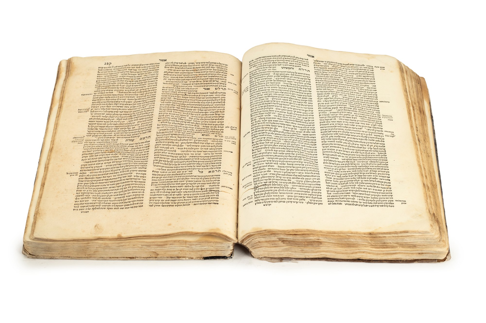
猶太人的成功秘密The Secret of Jewish Success 一千六百萬人，與一個流傳了一百年的誤會 Sixteen million people, and a misunderstanding a century old 歷史與文明History & Civilization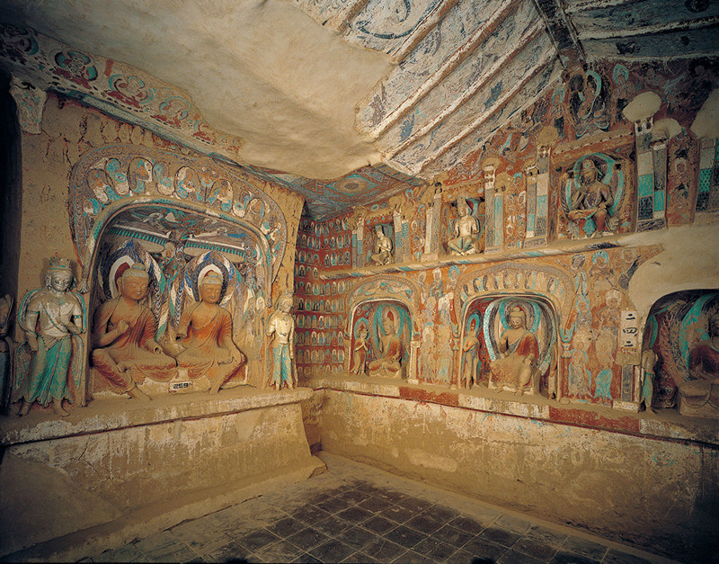
敦煌藏經洞：絲路上的一座圖書館The Library Cave of Dunhuang: A Library on the Silk Road 一扇封了九百年的門，與流散世界的五萬件寫本 A door sealed for nine hundred years, and fifty thousand manuscripts scattered across the world 歷史與文明History & Civilization 威尼斯：一個海洋共和國的一千年Venice: A Maritime Republic for a Thousand Years 沒有土地的國家，如何用制度活了一千年 A state with no land, kept alive for a thousand years by its institutions 歷史與文明History & Civilization 鬱金香狂熱：一朵花如何讓整個國家發燒Tulip Mania: How a Flower Set a Whole Country on Fire 最貴的花都是生病的花，檔案裡的狂熱比傳說安靜得多 The dearest flowers were diseased ones — and the archives tell a quieter story than the legend 錢與人性Money & Human Nature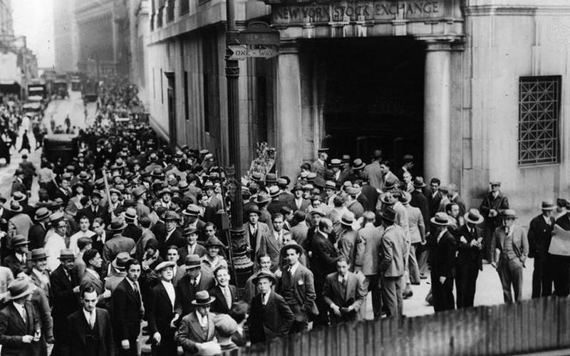
1929：華爾街崩盤之後1929: After the Wall Street Crash 兩天跌掉兩成三，然後是漫長的冬天 Two days, a fall of twenty-three percent — and then a long winter 錢與人性Money & Human Nature 達爾文的漫長等待：〈物種起源〉出版前後Darwin's Long Wait — Before and After On the Origin of Species 五個星期看見問題，二十年才敢寫成書 Five weeks to see the question, twenty years to dare the book 科學與世界Science & the World 青黴素：一個被遺忘的培養皿Penicillin — A Forgotten Petri Dish 一隻盤子改變了醫學，卻等了十七年才被接住 One dish changed medicine — and waited seventeen years to be picked up 科學與世界Science & the World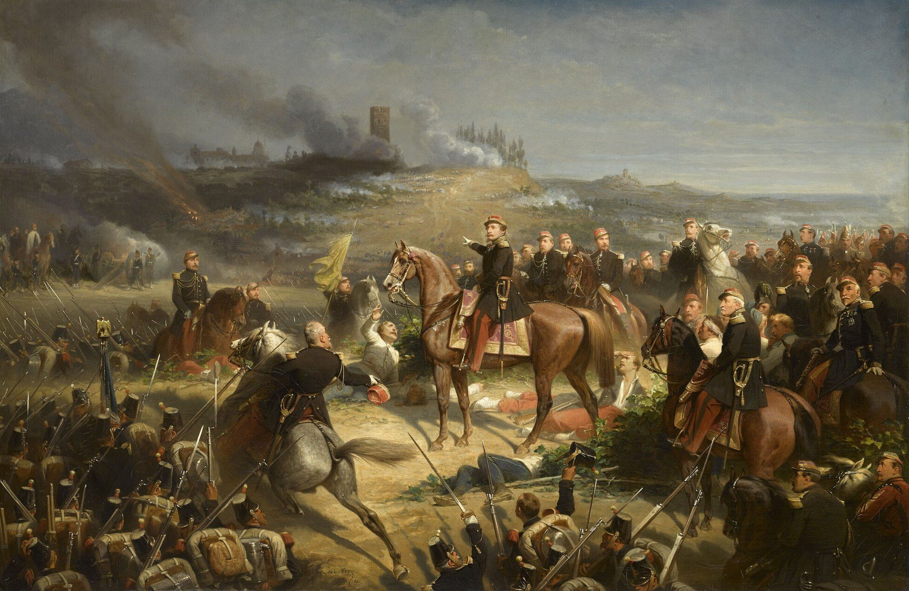
索爾費里諾之後：紅十字會的誕生After Solferino: The Birth of the Red Cross 一個商人走進戰場，中立從此成為一種發明 A businessman walked into a battlefield, and neutrality became an invention 人與社會People & Society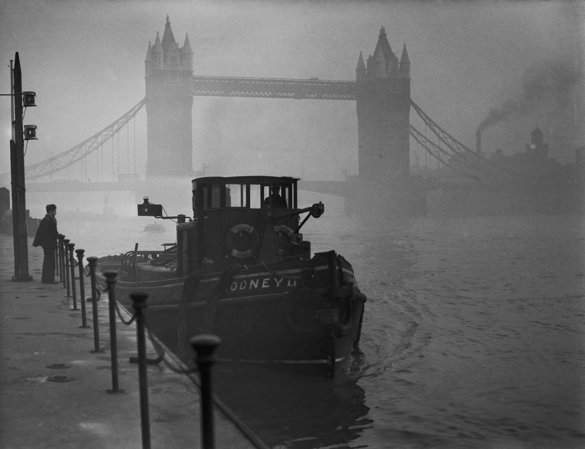
倫敦大煙霧：五天看不見的城市The Great Smog of London: Five Days When the City Disappeared 五天，上萬條人命，與一部清潔空氣法 Five days, thousands of lives, and a Clean Air Act 人與社會People & Society 蒙田：第一個寫自己的人Montaigne: The First Man to Write About Himself 一座塔樓，一個人，與「我知道什麼？」 A tower, one man, and the question “What do I know?” 書與思想Books & Ideas 莊子與逍遙：兩千年前的一場自由課Zhuangzi and Free Wandering: A Lesson in Freedom from Two Thousand Years Ago 不肯當官的人，教了兩千年自由 The man who refused office has taught freedom for two thousand years 書與思想Books & Ideas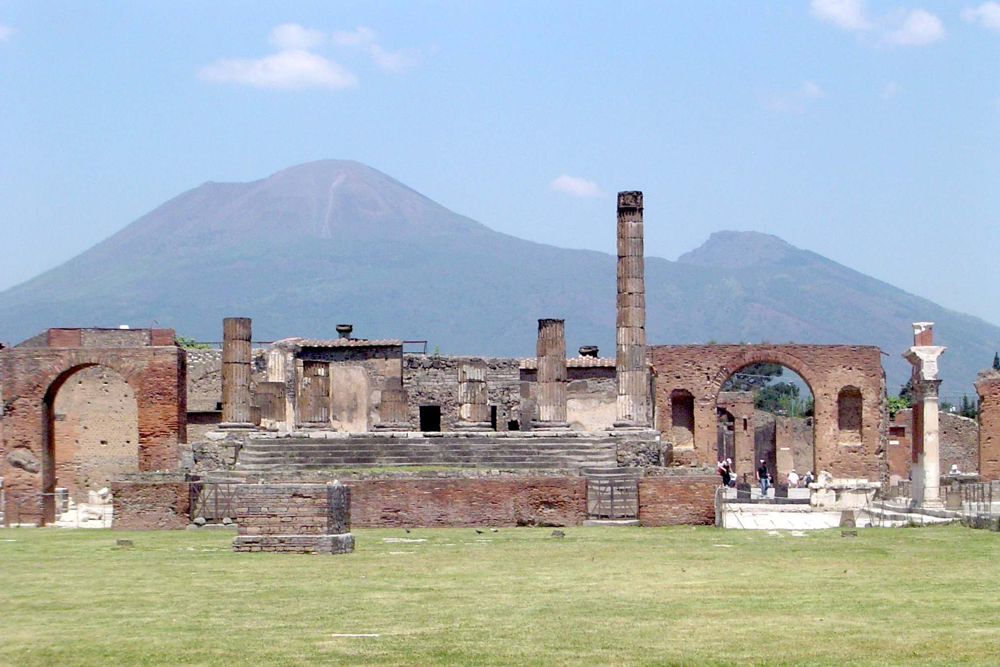
龐貝：被時間封存的一天Pompeii: A Day Sealed by Time 一座城在一天之內死去，又在地下睡了一千六百多年 A city died in a single day, then slept underground for more than sixteen centuries. 歷史與文明History & Civilization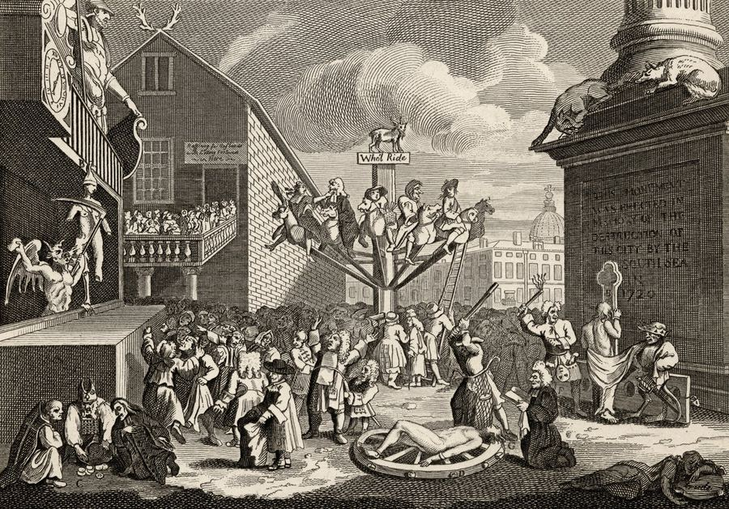
南海泡沫：倫敦的第一場全民投機The South Sea Bubble: London's First National Speculation 一家幾乎不做生意的公司，如何讓整個倫敦相信自己發了財 How a company that barely traded convinced all of London it was rich 錢與人性Money & Human Nature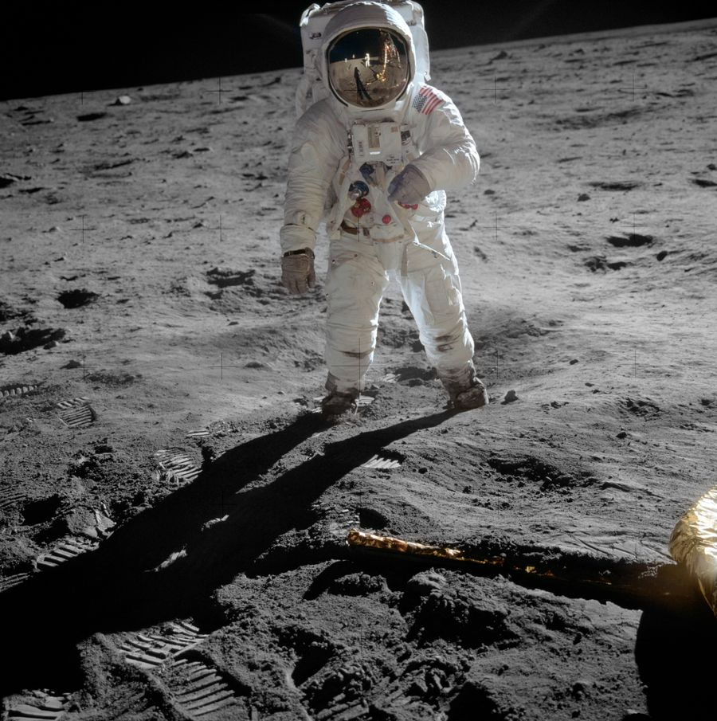
阿波羅十一號：人類的一小步Apollo 11: One Small Step 一個有期限的承諾，與三十八萬公里外的一小步 A promise with a deadline, and one small step 384,400 kilometres away 科學與世界Science & the World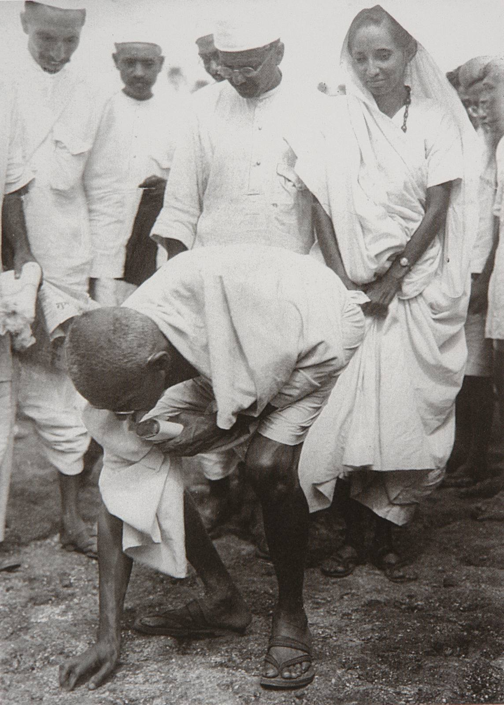
甘地與鹽：一次步行如何撼動一個帝國Gandhi and Salt: How One Walk Shook an Empire 六十歲的老人、七十八個人，與一把不准自己做的鹽 A sixty-year-old man, seventy-eight companions, and a handful of salt no Indian was allowed to make 人與社會People & Society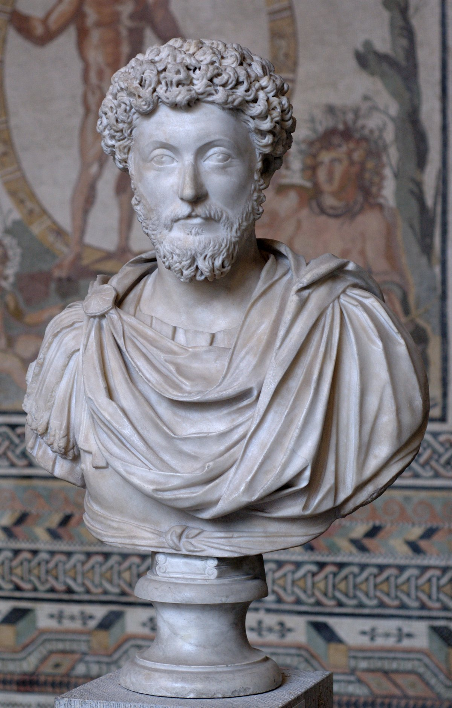
沉思錄：一位皇帝寫給自己的書Meditations: The Emperor's Book to Himself 一個皇帝的戰地筆記，寫給自己，也寫給一千八百年後的人 A wartime notebook written by an emperor to himself — and, eighteen centuries later, to everyone. 書與思想Books & Ideas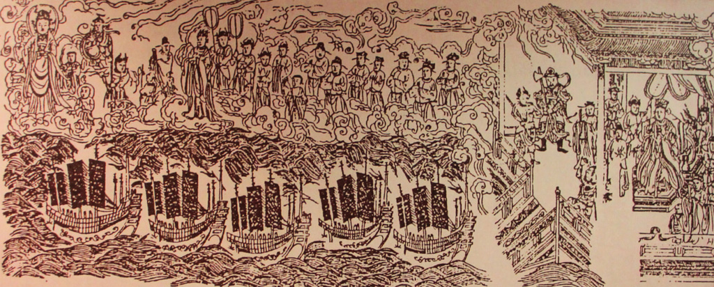
鄭和下西洋：七次航行與一個帝國的海洋夢Zheng He and the Western Ocean: Seven Voyages and an Empire's Dream of the Sea 三百一十七艘船、兩萬八千人，與一隻被當成麒麟的長頸鹿 317 ships, 28,000 men, and a giraffe mistaken for a qilin 歷史與文明History & Civilization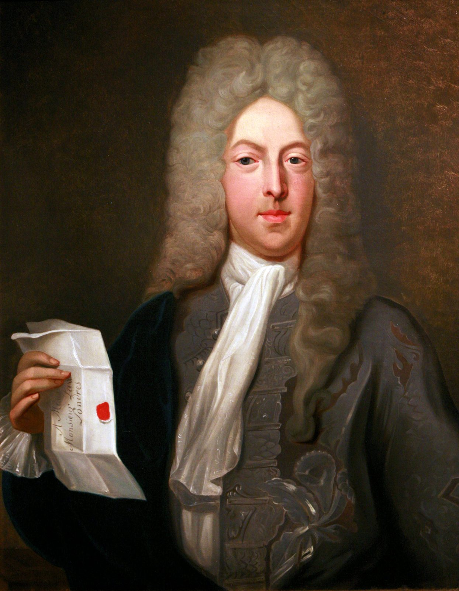
密西西比泡沫：一個賭徒的紙幣帝國The Mississippi Bubble: A Gambler's Paper Empire 一張紙幣、一家公司，與法國財政的十八個月 One banknote, one company, and eighteen months of French finance 錢與人性Money & Human Nature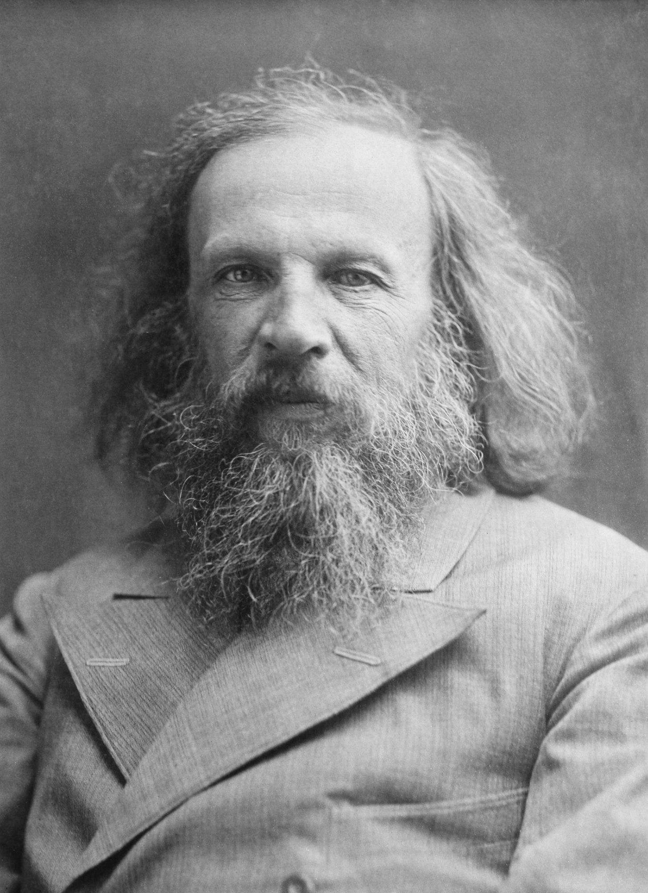
門得列夫與元素週期表：一張預言了未來的表格Mendeleev and the Periodic Table: A Table That Predicted the Future 六十三種元素、一張手寫的表，與三個還不存在的名字 Sixty-three elements, a handwritten table, and three names that did not yet exist 科學與世界Science & the World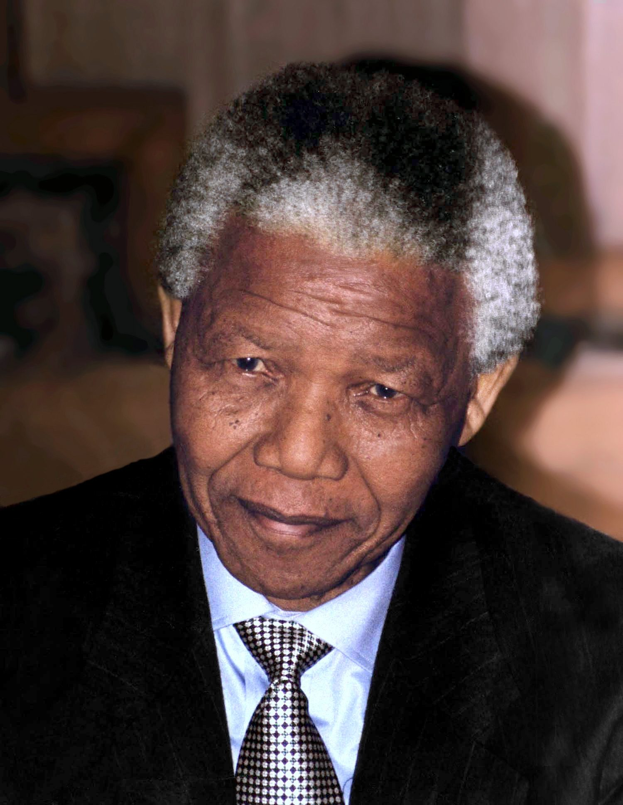
曼德拉：二十七年牢房與一個國家的和解Mandela: Twenty-Seven Years in Prison and a Nation's Reconciliation 二十七年牢房、一個編號，與一場沒有報復的勝利 Twenty-seven years in prison, one prisoner number, and a victory without revenge 人與社會People & Society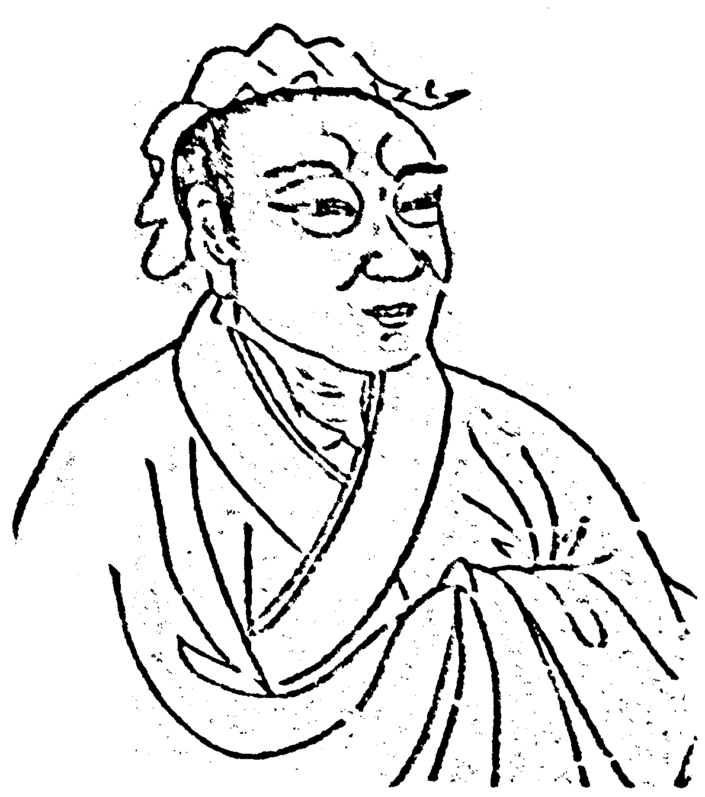
司馬遷與史記：一個人在絕境中寫下的歷史Sima Qian and the Records of the Grand Historian: A History Written in Despair 一部被判了死刑的書，活了兩千年 A book sentenced to death that has lived for two thousand years 書與思想Books & Ideas一千六百萬人，與一個流傳了一百年的誤會
走進任何一家中文書店的財經書架，你大概都見過那樣一本書：封面是深藍或暗金，書名裡有「塔木德」三個字，副標承諾揭開猶太人致富的千年秘密。書裡的話斬釘截鐵——猶太孩子從小抱著塔木德長大，把書裡的法則用在生意上，於是這個人口零星的民族，拿走了不成比例的財富與榮耀。聽起來像一個完整的故事：有經典，有民族，有因果。它唯一的問題是，幾乎每一環都經不起查證。
先說書本身。市面上流行的中文「塔木德」讀物，常見的說法包括這部書「用三千三百年寫就」——實際上，從密西拿在公元約二百年成文，到革馬拉在約五百年定型，前後不過三百年。又說它「匯總了密西拿、革馬拉、米德拉西三部分」——米德拉什是另一種獨立的聖經詮釋文類，塔木德會引用它，卻從不曾把它收編進來。至於書中那些琅琅上口的「致富金律」，例如所謂「22:78 法則」，在任何一部塔木德原文裡都找不到出處；「金錢沒有臭味」這句被安在塔木德名下的話，其實出自羅馬皇帝韋斯巴先，講的是他對公廁徵稅時的名言。還有一句流傳甚廣的「羅斯柴爾德每個週末都要讀塔木德」，同樣查無一手來源。
判斷一句「塔木德名言」的真偽，其實有一把很簡單的尺：塔木德的每一句話都有地址——篇名加上頁碼，例如「Bava Metzia 61b」。能在 Sefaria 這樣的公開原文庫裡按地址查到的，才算數；通篇只寫「《塔木德》說」卻給不出地址的，多半是後人編的。這篇筆記想做的，就是把地址一條一條查回去，看看這部書真正說了什麼、誰在讀它，以及猶太人的成就到底從哪裡來。
先把人數說清楚。二〇二五年初，全世界的核心猶太人口約一千五百八十萬，佔世界人口的百分之零點二。這個數字有個令人心裡一沉的對照：一九三九年，全世界猶太人約一千六百六十萬——也就是說，經歷了大屠殺與戰後近八十年的增長，這個民族的人數至今還沒有回到二戰之前。其中約四成半住在以色列，約四成住在美國，其餘散在十個左右的國家；在以色列之外，沒有任何一個國家裡猶太人佔人口超過百分之二。
就是這百分之零點二的人，拿走了一九〇一年到二〇二五年間諾貝爾獎個人得主中的至少二百二十席，約佔百分之二十二。這裡要替數字加一句註腳：諾貝爾基金會從不記錄得主的族裔，這些名單都是後人依傳記編纂的，標準寬鬆——只要有一位猶太父母便計入，其中不少人從未實踐猶太教。百分之二十二是寬定義下的數字，不是「虔誠教徒的得獎率」。財富方面，二〇二六年 Forbes 以色列版編纂的猶太億萬富翁榜共有三百一十九人，對照全球約三千四百二十八位億萬富翁，約佔百分之九點三——約一成，不是傳說中的「大多數」，更不是「控制世界七成財富」。教育方面，美國猶太成人有百分之六十五擁有學士以上學位，遠高於全國平均的百分之三十五；不過同一份 Pew 調查裡，印度教徒以百分之七十居首——這個細節先記下，後面會用到。
所以現象是真的：一個極小的民族，在學術、財富與文化上的身影大得不成比例。問題只在於解釋。而最流行的那個解釋——從小讀塔木德——恰恰是最先站不住的一個。
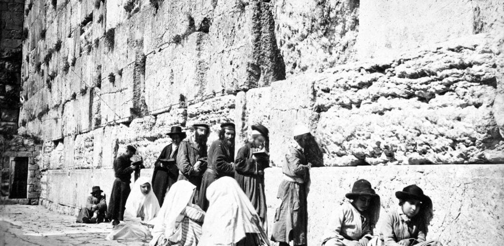
「猶太人從小讀塔木德」這句話，有一半的出處倒是真的。《密西拿・先賢篇》第五章第二十一節留下一張著名的年齡表：五歲讀經，十歲學密西拿，十三歲守誡命，十五歲學塔木德，十八歲結婚，二十歲謀生。節奏井然，朗朗上口。但它是一句理想化的格言，不是一份人口調查；它描寫的是拉比心目中一個男孩應該走的路，而且——這是關鍵——它只談男孩。
現代的實況是另一幅圖景。Pew 研究中心二〇二〇年對四千七百多名美國猶太成人的調查顯示：改革派佔百分之三十七，保守派百分之十七，正統派只有百分之九，另有百分之三十二不屬於任何派別。而系統性研讀塔木德，幾乎是正統派內部的事，尤其是哈雷迪——嚴格正統派——的男性。改革派在十九世紀興起時，正是以疏離塔木德來標誌自己與舊世界的決裂；啟蒙之後的現代猶太人，許多視這部書為中世紀的遺物。紐約八縣二〇二三年的社區研究把差距量化了：在猶太兒童中，正統派約百分之九十五就讀猶太日校，保守派約百分之二十二，改革派不到百分之十。塔木德作為每天的功課，只存在於那百分之九裡面的一小部分課堂。
還有一件事必須老實標明：至今沒有任何一份具代表性的調查，直接問過猶太人「你一生是否讀過塔木德」。所以「多數人讀過」或「多數人沒讀過」，嚴格說都拿不出直接證據。只是把派別結構、日校就讀率與女性傳統上被免除學習義務這三件事放在一起推論，「每個猶太孩子抱著塔木德長大」的畫面，幾乎不可能成立。至於「三歲開始學塔木德」——三歲是部分哈雷迪男孩第一次剪髮、開始認希伯來字母的年紀，離讀塔木德還遠得很。
塔木德，希伯來語的意思就是「學習」。它的骨架分兩層。底層是密西拿，約公元二百年由猶大親王編纂，把口耳相傳的律法第一次寫下來：六個秩序、六十三篇，從農業、節期、家庭、民法，一路談到聖物與潔淨。上層是革馬拉，其後三百年間的拉比們圍著密西拿逐句爭辯、引經、岔題、講故事，留下亞蘭語的汪洋。兩層合起來，才叫塔木德。它有兩個版本：在加利利成書的耶路撒冷塔木德約公元四百年，較早而簡略，涵蓋三十九篇；在巴比倫成書的巴比倫塔木德約公元五百年，篇幅更大、辯論更密，涵蓋三十七篇，後世所稱的塔木德若無特別說明，指的都是它。十九世紀的維爾納標準版有五千八百九十四個對開頁；一九二三年創立的 Daf Yomi 進度，每天讀一頁，要七年半才能讀完一遍——二千七百一十一頁，一天都不能缺。
《大英百科全書》對它的定性很直白：塔木德首先是一部法律彙編。它與聖經的關係，是註釋與被註釋的關係。猶太傳統區分「成文妥拉」——摩西五書——與「口傳妥拉」：相傳摩西在西奈山同時領受了兩者，口傳的部分輾轉相授，直到第二聖殿在公元七十年被毀之後才陸續成文，密西拿與革馬拉就是它的載體。正統派視口傳與成文同等神聖；現代學術則視之為拉比時代的詮釋建構，兩種看法並存，不必混為一談。歷史上也一直有人拒絕它：八世紀起的卡拉派只認成文妥拉，斥塔木德為拉比的捏造。一部連「自己人」都爭論了一千多年的書，把它說成全民族共同的童年課本，本身就是對這段歷史的無知。
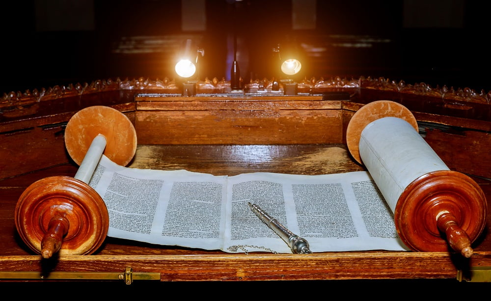
那麼，塔木德真正談錢的時候，談的是什麼？談的是規矩，而且談得瑣碎、具體、不留情面。
《安息日篇》第三十一頁背面留下一段著名的話。拉比拉瓦說：人死之後被帶到審判之前，第一個被問的問題不是「你賺了多少」，而是「你經商是否誠信」；第二個問題才是「你是否固定時間學習妥拉」。順序即是價值觀——誠信排在學習之前。這段話常被致富書引用，這一次引用本身沒有錯，錯的是把它讀成承諾：原文講的是末世審判的倫理次序，從沒說過誠信必然換來財富。
細節更能說明這部書的性格。《利未記》要求度量衡公平，塔木德在《中門篇》第六十一頁背面追問到近乎苛刻的地步：把砝碼藏在鹽裡讓它慢慢變輕，從藏起來的那一刻起就已經犯禁，哪怕還沒有騙到任何一個買家；量地的人，夏天用的繩子和冬天用的繩子長短不同，也不許一人用一條。欺詐定價有明確的門檻：超過市價六分之一，買方可以撤銷交易；恰好六分之一，須退還差價。連口頭承諾都有名字管著——背棄口頭承諾的人被稱為 mechusar amanah，缺乏誠信者。這不是成功學，這是民法：一個共同體花了一千多年，把「不許騙人」寫到小數點後一位。
人死後受審，第一個問題不是「你賺了多少」，
而是「你經商是否誠信」。
教育在塔木德裡的分量，確實重得驚人。《桃子篇》開卷便說，學習妥拉是「沒有定量」的事，其分量等同其他一切誡命。但緊貼著這份崇高，是一份非常務實的清單。《基杜辛篇》第二十九頁列出父親對兒子的義務：行割禮、贖長子、教妥拉、娶妻——以及教他一門手藝。拉比猶大把話說得極重：不教兒子手藝的父親，如同教他做強盜，因為一個沒有謀生之技的人，遲早可能淪為盜竊。有趣的是，同一頁上就躺著反對意見：拉比內霍萊說，他放下世間一切手藝，只教兒子妥拉。塔木德把兩種聲音並排存檔，不做裁決——這正是它與格言集的根本區別：格言集只給你一句話，塔木德給你一場沒有散會的辯論。
《先賢篇》說得更平衡：妥拉的學習若與世俗謀生結合，是美好的，因為兩者的辛勞使人忘卻罪惡。至於錢財的去向，施捨在這裡有個更硬的名字——tzedakah，字根是 tzedek，公義。它不是有餘裕才做的慈善，而是欠這個世界的債。《父門篇》第九頁說，施捨的分量等同其他一切誡命的總和；中世紀的邁蒙尼德把施捨整理成八個等級，最高一級不是給錢，而是讓人自立：給他一份工作、與他合夥、借錢給他做生意。《安息日篇》第六十三頁背面那句「借貸勝於施捨，合夥勝於一切」，講的正是同一件事。把這些放在一起，你看到的不是一套致富術，而是一套共同體的倫理操作系統：學一門手藝、誠實交易、有能力時拉別人一把。
如果塔木德真是一本教人用錢賺錢的手冊，它對利息的態度就無法解釋。《出埃及記》《利未記》《申命記》反覆規定：借錢給同胞，不可收取利息；塔木德用了整整一章的篇幅，討論各種可能構成利息的灰色地帶——借一斗麥還一斗麥，價格波動算不算利息？偉大的希勒爾甚至主張，借一條麵包若不先講好價錢，都可能觸犯禁令。到了現代，正統派商人做商業貸款，要用一份叫 heter iska 的契約把「貸款」重組為「合夥投資」，才能繞過這條兩千年前的禁令。一部要靠法律工程來繞行自身規定的書，與其說是放貸者的聖經，不如說它從一開始就在限制放貸。猶太人後來在歐洲金融業的位置，成因在別處——那是下一章的事。
學界給出的解釋裡，最有份量的一支，來自經濟史學者 Botticini 與 Eckstein 二〇一二年的《The Chosen Few》。他們的論點繞開了塔木德，回到更早的妥拉。公元七十年第二聖殿被毀之後，猶太教從獻祭的宗教轉型為讀書的宗教：每個父親都有義務讓兒子學會讀妥拉，社區必須設教師。在一個識字率極低的古代世界，這是一條昂貴的規矩——送孩子讀書，意味著放棄童工、繳學費，而對種田的人來說，識字幾乎沒有回報。許多家庭因此悄悄改宗，離開了這個共同體；留下來的，是一群識字率異常高的少數人。幾百年後，伊斯蘭帝國興起，城市與商業擴張，識字與算術突然在貿易、借貸、手藝與醫學裡值錢了。當年那筆看似不划算的教育投資，開始連本帶利地回收。
這個假說漂亮，但必須把批評一起放上桌。書評者指出，它把拉比文本當作歷史實況來讀，證據薄弱；古代猶太農村究竟有多少孩子真正上過學，幾乎沒有直接證據；它解釋「所有猶太人」，卻對現代成就最突出的阿什肯納茲社群之外的群體著墨有限。所以正確的定位是：這是經濟史學界有影響力的假說之一，不是定論。但它至少指出了一個方向——關鍵變量可能是「識字」這件更基礎的事，而不是塔木德這部具體的書。何況它談的是讀妥拉，不是讀塔木德；把兩者混為一談，正是流行說法最常見的偷換。
其他解釋拼的是同一幅圖的不同碎片。中世紀的歐洲，猶太人常被禁止擁有耕地、被行會擋在手工藝之外，教會又禁止基督徒放貸取息，金融與貿易的空缺就這樣留了出來——不過學者也提醒，猶太人轉向城市職業的時間早於最嚴厲的排斥，在西班牙等地他們也曾擁有大片土地，「完全被禁」是誇大。史丹佛學者 Greif 研究十一世紀北非的猶太商人，發現他們靠一套聲譽聯盟做遠距貿易：誰欺詐，消息傳遍整個網絡，集體抵制隨之而來——在沒有跨國法院的年代，信任本身就是基礎設施。這套理論後來也遭到質疑，有人指出商人們其實同樣依賴法院與雙邊聲譽，辯論至今未休。
還有一層是迫害教會的理財課。反覆的驅逐與沒收讓土地成為危險的資產，於是家庭把財富放進帶得走的東西裡：識字、技能、語言、人脈——今天經濟學家稱之為人力資本。最後是移民的篩選：二十世紀抵達美國的猶太移民，多來自城市、懷著創業的打算；而別忘了第一章那個小小的註腳——美國學歷最高的宗教群體其實是印度教徒，原因主要是技術移民簽證的篩選，與任何經典無關。當幾種機制在不同的世紀疊加起來，「成功」就不再需要一部致富手冊來解釋。
檢驗一個因果說法最直接的方法，是去看「劑量」最高的那群人。如果讀塔木德能致富，那麼每天讀它六到八小時、婚後繼續全日制研讀的哈雷迪男性，應該是猶太人中最富的一群。事實恰好相反。根據以色列民主研究所二〇二五年的報告，哈雷迪男性的就業率約百分之五十三到五十四，平均薪資約為非哈雷迪猶太男性的一半，百分之三十三的哈雷迪家庭生活在貧窮線以下，其他猶太家庭的比例是百分之十四。學歷的圖像同樣顛倒：正統派的美國猶太人只有百分之三十七大學畢業，改革派卻有百分之六十四。讀得最多的人，世俗成就最低——這不是說塔木德讓人變窮，而是說把世俗成就記在塔木德的帳上，從一開始就記錯了帳本。哈雷迪社群用世俗標準衡量是「窮」，但那是他們以另一種標準——學習本身即是目的——做出的集體選擇，兩種評價不必互相冒犯，只是不能混用。
最後，還有一個在所有「成功秘密」敘事裡徹底缺席的群體：女人。傳統上，學習妥拉的誡命只落在男性身上。《基杜辛篇》從經文推導出父親教兒子的義務，同一段推導免除了女性；《索塔篇》還留著古代拉比對「該不該教女兒」的爭吵。於是哈雷迪女孩的課程表裡沒有革馬拉，她們學五書、先知、律法與猶太史，世俗課程反而比男孩完整——因為家裡預設她們將來要就業，賺錢支持丈夫讀經。諷刺的是，在那個最「傳統」的世界裡，實際出門養家的常常是被排除在經典之外的那一半人。現代正統派打破了這道牆：一九七七年，Soloveitchik 拉比在紐約的 Stern College 為女生開設塔木德課，被視為里程碑。任何把「猶太人成功」講成全民讀經故事的版本，都自動抹去了這一半人的缺席與勞動——而歷史敘事裡，被抹去的部分，往往正是最該被看見的部分。
繞了一圈，結論其實可以說得很平靜。猶太教確實有一個把學習看得比財富還重的傳統，塔木德確實是這個傳統最偉大的載體，誠信、手藝、施捨、辯論——這些也確實都白紙黑字寫在書裡，地址俱在。但「從小讀塔木德，所以成功」這個流行版本，同時犯了三個錯誤：把相關性誤讀為因果，把少數正統派的經驗誤讀為全體猶太人的經驗，把後人編造的格言誤讀為古代經典的原文。
更接近真相的說法是這樣的：一個重視識字與學習的宗教傳統，在城市化、商業化與現代高等教育擴張的歷史機遇裡，轉化成了人力資本與社群網絡的優勢。塔木德在其中是助因，是載體，是那場兩千年辯論留下來的思維習慣——但它不是一本多數猶太人從小研讀的書，更不是一本致富手冊。一千六百萬人的故事，從來就不靠一個秘密撐著；它靠的是無數普通家庭在一千九百年裡，反覆做出的同一個決定：再窮，也要讓孩子讀書。這件事不需要神化，它本身已經夠動人了。
誠實起見，以下三件事至今查不到可靠答案，本篇不假裝知道：
Sixteen million people, and a misunderstanding a century old
Walk to the business shelf of almost any Chinese-language bookshop and you will find it: a volume in deep blue or dark gold, "Talmud" in the title, promising the thousand-year secret of Jewish wealth. Its story is confident — Jewish children grow up with the Talmud in their arms, apply its laws to business, and so a tiny people takes home an outsized share of the world's riches and honours. It has everything a good story needs: a classic text, a people, a cause. Its only problem is that almost every link in the chain fails inspection.
Start with the book itself. Popular Chinese "Talmud" titles claim the work was "three thousand three hundred years in the writing" — in fact, from the Mishnah's redaction around 200 CE to the Gemara's completion around 500 CE spans roughly three centuries. They say it "combines the Mishnah, the Gemara and the Midrash" — but Midrash is a separate genre of biblical interpretation; the Talmud quotes it without ever absorbing it. The catchy "laws of wealth" inside, such as the so-called "22:78 rule," appear nowhere in any Talmudic text; the line "money has no smell," credited to the Talmud, belongs to the Roman emperor Vespasian, joking about his tax on public toilets. And the oft-repeated claim that "the Rothschilds read the Talmud every weekend" has no primary source at all.
There is a simple test for any "Talmud saying": every genuine line has an address — a tractate and a page, such as "Bava Metzia 61b" — and can be looked up in a public library of the original text like Sefaria. A book that only ever says "the Talmud teaches," without addresses, is almost certainly quoting its own inventions. This essay follows the addresses back, one by one, to see what the book really says, who really reads it, and where Jewish achievement actually comes from.
First, the people themselves. At the start of 2025 the world's core Jewish population numbered about 15.8 million — 0.2 percent of humanity. Set that beside 1939, when the figure stood at about 16.6 million: after the Holocaust and nearly eighty years of growth, the number has still not climbed back to where it was before the war. Roughly 45 percent live in Israel and 40 percent in the United States, the rest scattered across about ten countries; outside Israel, Jews make up more than 2 percent of the population nowhere on earth.
That 0.2 percent has produced at least 220 of the 965 individual Nobel laureates between 1901 and 2025 — about 22 percent. The figure needs its footnote: the Nobel Foundation records no one's ethnicity, and these lists are compiled afterwards from biographies under a generous definition — one Jewish parent is enough, including laureates who never practised Judaism. Twenty-two percent is the broad-definition number, not a "rate among the devout." In wealth, Forbes Israel's 2026 list counts 319 Jewish billionaires out of some 3,428 worldwide — about 9.3 percent, roughly one in ten, not "the majority," and nothing like "controlling 70 percent of the world's wealth." In education, 65 percent of American Jewish adults hold a bachelor's degree or higher, against a national average of 35 percent — though in the same Pew study, Hindus, at 70 percent, rank higher still. Keep that detail in mind; it will matter later.
So the phenomenon is real: a very small people casts a very long shadow across scholarship, wealth and culture. The question is only the explanation — and the most popular one, "they read the Talmud from childhood," is the first to collapse.
The claim "Jews read the Talmud from childhood" does have one genuine source. Mishnah Avot 5:21 preserves a famous ladder of ages: at five, Scripture; at ten, Mishnah; at thirteen, the commandments; at fifteen, Talmud; at eighteen, marriage; at twenty, earning a living. Neat, memorable — and an idealized maxim, not a census. It describes the path a boy was supposed to follow; and it is, notably, only about boys.
Modern reality looks different. Pew's 2020 survey of more than 4,700 American Jewish adults found 37 percent Reform, 17 percent Conservative, just 9 percent Orthodox, and 32 percent with no particular denomination. Systematic Talmud study lives almost entirely inside that Orthodox 9 percent — above all among Haredi, strictly Orthodox, men. The Reform movement, when it arose in the nineteenth century, defined its break with the old world precisely by distancing itself from the Talmud, and many modern Jews came to regard the book as a medieval relic. A 2023 community study of New York's eight counties puts numbers on the gap: about 95 percent of Orthodox Jewish children attend Jewish day schools, against about 22 percent of Conservative children and under 10 percent of Reform children. The Talmud as a daily school subject exists only in a small slice of that smallest slice.
One honesty is required here: no representative survey has ever simply asked Jews, "Have you read the Talmud in your lifetime?" So both "most have" and "most haven't" lack direct proof. But lay the denominational structure, the day-school rates, and the traditional exemption of women from the study obligation side by side, and the picture of every Jewish child growing up with a Talmud in his arms becomes very hard to sustain. As for "starting at age three" — three is when some Haredi boys get their first haircut and begin learning the Hebrew alphabet, a long way from the Talmud.
"Talmud" is simply the Hebrew word for "study." The book has two layers. Below lies the Mishnah, redacted by Judah the Prince around 200 CE — the oral law written down for the first time: six orders, sixty-three tractates, running from agriculture and festivals through family and civil law to sacred things and purity. Above it lies the Gemara, three centuries of rabbis arguing over the Mishnah line by line — citing, digressing, telling stories — in Aramaic. Together they are the Talmud, and there are two of them: the Jerusalem Talmud, compiled in Galilee around 400 CE, earlier and briefer, covering thirty-nine tractates; and the Babylonian Talmud, completed around 500 CE, larger and denser, covering thirty-seven — the one meant, ever since, when people say "the Talmud" without qualification. The standard Vilna edition runs to 5,894 folio pages; the Daf Yomi cycle, founded in 1923, reads one page a day and takes seven and a half years to finish — 2,711 pages, no days off.
The Encyclopaedia Britannica defines its character plainly: the Talmud is, first of all, a legal compilation. Its relation to the Bible is that of commentary to text. Jewish tradition distinguishes the Written Torah — the Five Books of Moses — from the Oral Torah, said to have been given alongside it at Sinai and transmitted by word of mouth until, after the Second Temple fell in 70 CE, it was gradually written down; the Mishnah and Gemara are its vessels. Orthodoxy holds the two Torahs equally sacred; modern scholarship reads the Oral Torah as a rabbinic construction of its own era. Both views can be stated without confusion. Nor has the book ever lacked internal opponents: from the eighth century, the Karaites accepted the Written Torah alone and denounced the Talmud as a rabbinic fabrication. A book its own people argued about for a thousand years is poorly described as the whole nation's shared childhood textbook.
So when the Talmud does talk about money, what does it talk about? Rules — fussy, specific, unforgiving rules.
Tractate Shabbat, page 31a, preserves a famous saying of Rava: when a person is brought to judgment after death, the first question asked is not "How much did you make?" but "Did you conduct your business honestly?" Only the second question concerns fixed times for Torah study. The order is the value system: honesty before scholarship. Popular wealth books quote this passage, and for once the quotation is genuine — what they add is a promise the text never makes. The passage is about the ethics of a final judgment, not a formula that converts honesty into income.
The details show the book's character even better. Leviticus demands honest weights and measures; Bava Metzia 61b presses the point to near-severity: to hide a weight in salt so it slowly grows lighter is a transgression from the moment of hiding, before a single customer is cheated; a rope used to measure land stretches differently in summer and winter, so two parties may not measure with different ropes. Overcharging has a precise threshold — one-sixth above the market price: at exactly one-sixth the difference is refunded, beyond it the sale can be voided. Even a spoken promise has a name for its breaker: mechusar amanah, one who lacks faithfulness. This is not success literature. It is civil law — a community spending a millennium writing "do not cheat" down to one decimal place.
The first question at the judgment is not "How much did you make?"
It is "Did you deal honestly?"
Education does carry astonishing weight in this book. Tractate Peah opens by declaring that Torah study "has no measure" and equals all other commandments combined. But pressed against that exaltation sits a very practical list. Kiddushin 29a sets out a father's obligations to his son: circumcision, redemption of the firstborn, teaching Torah, finding him a wife — and teaching him a trade. Rabbi Yehuda puts it brutally: a father who does not teach his son a trade teaches him, in effect, to be a robber, for a man with no way to earn a living may end by stealing. Characteristically, the same page preserves the opposite voice: Rabbi Nehorai declares that he sets aside every trade and teaches his son Torah alone. The Talmud files both opinions side by side and declines to rule. That is its deepest difference from a book of maxims: a maxim gives you one sentence; the Talmud gives you an argument that never adjourns.
Avot strikes the balance explicitly: Torah study joined with a worldly occupation is beautiful, for the labour of both makes sin forgotten. And money's proper exit has a harder name than charity — tzedakah, from tzedek, justice. It is not generosity from surplus; it is a debt owed to the world. Bava Batra 9a says giving equals all the other commandments together, and Maimonides later arranged giving into eight levels, the highest of which is not a gift at all but independence: a job, a partnership, a loan to start a business. "Lending is better than charity, and partnership best of all," says Shabbat 63a. Put together, this is not a technique for getting rich. It is a community's ethical operating system: learn a trade, deal honestly, and when you can, pull someone else up.
If the Talmud were a manual for making money with money, its treatment of interest would be inexplicable. Exodus, Leviticus and Deuteronomy repeat the rule: lend to your fellow and charge no interest. The Talmud devotes a whole chapter to the grey zones — is lending a measure of wheat to be repaid in wheat, with prices moving in between, a form of interest? The great Hillel held that even lending a loaf of bread without first fixing its value might breach the ban. To this day, an Orthodox business loan is restructured through a contract called heter iska, which recasts the loan as a partnership investment, precisely to get around a two-thousand-year-old prohibition. A book that must be engineered around in order to lend at interest is no lender's bible; from the beginning, it restrained lending. The Jewish presence in European finance has other causes — and those belong to the next chapters.
The weightiest scholarly explanation comes not from the Talmud at all but from one step earlier. In The Chosen Few (2012), economic historians Maristella Botticini and Zvi Eckstein argue from the Torah: after the Second Temple fell in 70 CE, Judaism transformed from a religion of sacrifice into a religion of reading. Every father was obliged to teach his son to read the Torah; every community had to maintain teachers. In an ancient world of near-universal illiteracy, that rule was expensive — schooling a child meant forgoing his labour and paying fees, while literacy earned a farmer almost nothing. Many families quietly left the community altogether; those who remained were an unusually literate minority. Centuries later, under the Islamic empires, cities and commerce expanded, and literacy and numeracy suddenly paid — in trade, lending, crafts and medicine. The seemingly unprofitable educational investment began to return, with interest.
The hypothesis is elegant, and its critics must be given their seat at the table. Reviewers note that it reads rabbinic texts as if they were historical records, on thin evidence; how many ancient Jewish farm children actually attended school is close to unknowable; and a theory of "all Jews" fits the Ashkenazi communities, whose modern prominence it best explains, better than the others. The fair verdict: one of economic history's most influential hypotheses, not a settled conclusion. But it points the right way — the key variable may be literacy itself, something more basic than any single book. And note: its subject is reading the Torah, not the Talmud. Confusing the two is the popular literature's favourite sleight of hand.
The remaining explanations are pieces of the same picture. In medieval Europe, Jews were often barred from owning farmland and shut out of the craft guilds, while the Church forbade Christians to lend at interest — and so finance and trade were left open. Scholars add the corrective: Jews moved into urban occupations before the harshest exclusions, and in places like Spain they held extensive land; "completely barred" is an exaggeration. Avner Greif of Stanford studied the eleventh-century Maghribi traders, Jewish merchants of North Africa who ran long-distance trade on a coalition of reputation: cheat once, and word travelled the whole network, followed by collective boycott — in a world without international courts, trust itself was infrastructure. Later scholars have pushed back, showing the merchants also used courts and bilateral reputation; the argument continues.
Persecution taught its own finance lesson. Repeated expulsions and confiscations made land a dangerous asset, so families stored wealth in what could be carried: literacy, skills, languages, networks — what economists now call human capital. Finally, migration selected: the Jews who reached twentieth-century America came largely from cities, intending to build businesses. And remember the footnote from Chapter One — America's most educated religious group is actually Hindus, largely an artefact of skilled-worker visa selection, with no scripture involved. Layer these mechanisms across different centuries, and "success" no longer needs a secret manual to explain it.
The most direct test of a causal claim is to look at the group with the highest dose. If reading the Talmud made people rich, then Haredi men — who study it six to eight hours a day at school and often continue full-time after marriage — should be the richest Jews alive. The opposite is true. A 2025 report by the Israel Democracy Institute puts Haredi male employment at about 53 to 54 percent, their average salary at roughly half that of non-Haredi Jewish men, and 33 percent of Haredi families below the poverty line, against 14 percent of other Jewish families. Education inverts the same way: only 37 percent of Orthodox American Jews hold a college degree, against 64 percent of Reform Jews. The heaviest readers have the least worldly success — not because the Talmud impoverishes anyone, but because crediting worldly success to it was always the wrong ledger. By secular measures the Haredi world is "poor"; by its own measure — study as an end in itself — that is a collective choice, and the two yardsticks should not be confused, or used to insult each other.
Finally, there is a group missing entirely from every "secret of success" narrative: women. Traditionally, the commandment to study Torah fell on men alone. Kiddushin derives a father's duty to teach his son from Scripture, and the same derivation exempts women; Sotah preserves the ancient rabbis' argument over whether a daughter should be taught at all. So a Haredi girl's timetable contains no Gemara. She studies the Pentateuch, the Prophets, law and Jewish history — and, strikingly, her secular schooling is more complete than her brother's, because the family expects her to work, earning the money that supports her husband's study. In the most "traditional" world of all, the people who actually go out and keep the household are often the half excluded from the classic text. Modern Orthodoxy broke that wall: in 1977 Rabbi Soloveitchik opened a Talmud class for women at Stern College in New York, a recognised milestone. Any version of the story that turns Jewish success into a tale of universal childhood study automatically erases this half — their absence, and their labour. And in historical narrative, the erased parts are usually the ones most worth seeing.
After the long way round, the conclusion can be stated calmly. Judaism really does hold a tradition that prizes learning above wealth; the Talmud really is that tradition's greatest vessel; honesty, a trade, giving, and argument really are written in it, addresses and all. But the popular formula — "they read the Talmud from childhood, therefore they succeeded" — makes three mistakes at once: it misreads correlation as causation, the experience of a small Orthodox minority as that of all Jews, and maxims invented by modern editors as the words of an ancient book.
The truer sentence is longer. A religious tradition that prized literacy and study met, across the centuries, urbanization, commerce and the expansion of modern higher education — and was converted, in that meeting, into human capital and communal networks. The Talmud's role in that story is real but indirect: a contributing cause, a carrier, the surviving record of a two-thousand-year argument and the habits of mind it trained. It is not a book most Jews have ever studied from childhood, and it is not a manual for getting rich. The story of sixteen million people was never held up by a secret. It was held up by countless ordinary families making the same decision, over nineteen centuries, in good times and in terrible ones: however poor we are, the children will learn to read. That needs no mythologizing. It is moving enough as it stands.
In honesty, the following three things cannot currently be verified, and this essay does not pretend otherwise:
歷史與文明
一扇封了九百年的門，與流散世界的五萬件寫本
敦煌在地圖上只是一個點，在歷史上卻是一座十字路口。河西走廊西端，往西是塔克拉瑪干，往東是長安，往南是青藏高原，往北是草原。商隊、僧侶、使節、逃難的人，都在這裡停下來，留下一句話，或者留下一整部經。莫高窟就是這樣一點一點鑿出來的，是一千年間無數普通人把信仰、恐懼與希望刻進石壁的結果。而在石窟群的最深處，還藏著一間更小的石室，塞滿寫本、畫像與帳冊，像一座被時間遺忘的圖書館。它的門被磚砌起來，又被沙掩埋，靜靜等了將近九百年，直到一個道士清理積沙時敲開了那面牆。
這篇文章要講的，就是那扇門背後的故事：一個圖書館如何形成，如何被封存，如何在最不該被發現的年代被發現，又如何被帶走、被研究，最終成為一門學問。它也是一個關於記憶的故事——一個文明把自己寫下來，藏起來，差一點就永遠失去，最後卻以另一種方式回來。
傳說裡，莫高窟的起點是一個幻象。前秦建元二年，也就是三六六年，僧人樂尊行至鳴沙山下，暮色中見對岸三危山金光閃爍，彷彿千佛顯現。他受到觸動，在宕泉河西岸的崖壁上鑿出第一個洞窟，用以修行打坐。傳說未必是事實，年代卻大致可信：四世紀中葉，佛教沿絲路東傳，敦煌正是它進入中原前的最後一站，也是第一站。僧人在這裡譯經、講經、抄經，商人在這裡佈施、還願、祈求平安，洞窟便一個接一個出現。
此後一千年，莫高窟歷經十六國、北朝、隋、唐、五代、西夏、元，營建從未真正中斷。至今仍存七百三十五個洞窟，其中約四百九十二個有壁畫或彩塑，壁畫總面積四萬五千平方公尺，彩塑二千四百餘身。供養人畫像裡有吐蕃使者、回鶻王子、漢人節度使與他們的妻女，壁畫上有樂隊、舞伎、農夫、商隊與天宮。這些洞窟既是佛殿，也是家族的紀念館、商隊的祈願所、僧團的學校。
敦煌之所以能成為這樣的所在，與地理脫不開關係。它是絲路的咽喉，也是多種文明的交會點。漢文、藏文、梵文、粟特文、回鶻文、于闐文、吐火羅文，後來都在這裡留下文字。佛教從印度來，祆教與摩尼教從波斯來，景教從敘利亞一帶來，儒家與道教從中原來。它們不是在書本裡相遇，而是在同一條街上、同一座寺裡、同一張契約上相遇。莫高窟的壁畫因此不只屬於佛教美術史，也屬於整部中古世界史。
藏經洞在今天的編號是第十七窟，位於第十六窟甬道的北壁之內，是一間長寬各約二點六公尺、高約三公尺的小方室。它最初並不是為了藏經而建，而是晚唐高僧洪辯的影堂，也就是紀念他的場所。洪辯是九世紀敦煌佛教界的領袖，八四八年張議潮率眾驅逐吐蕃、收復河西之後，洪辯約在八五一年前後被朝廷封為河西都僧統，掌管整個河西走廊的佛教事務。第十七窟便是他為自己身後所預備的紀念堂，窟內原有他真人大小的塑像，後壁繪有菩提樹與侍者，兩側是弟子與供養人的畫像。
可是這間紀念堂很快就有了第二種用途：放東西。僧人們把寫壞的經卷、讀舊的典籍、用過的文書、殘破的畫幡，一批一批放進這間小室。藏經洞裡的文書，時間跨度從四世紀到十一世紀，佛經佔了大約九成，其餘是道經、儒家經典、史籍、醫書、曆本、契約、帳冊、信札、詩賦與俗文學，乃至練字紙與個人用品。它們不是某一天一次性打包放進去的，而是在一百多年裡不斷累積而成。最晚的一件有明確紀年的文書寫於北宋咸平五年，即一〇〇二年。
那麼，它是什麼時候、為什麼被封起來的？至今沒有定論。一種說法是為了躲避戰亂：十一世紀初，喀喇汗王朝在一〇〇六年前後滅掉佛教國家于闐，西夏也自十世紀末向西擴張，並於一〇三六年佔領敦煌，僧人擔心經卷遭劫，便砌牆封洞，偽裝成一面普通的牆壁。另一種說法認為，藏經洞本就是存放廢舊經卷與法物的所在，裝滿之後自然封存。還有人指出，洞內文書經過整理，洞口也有封泥與彩繪掩飾，未必是倉促之舉。封閉的原因也許永遠無法確證。
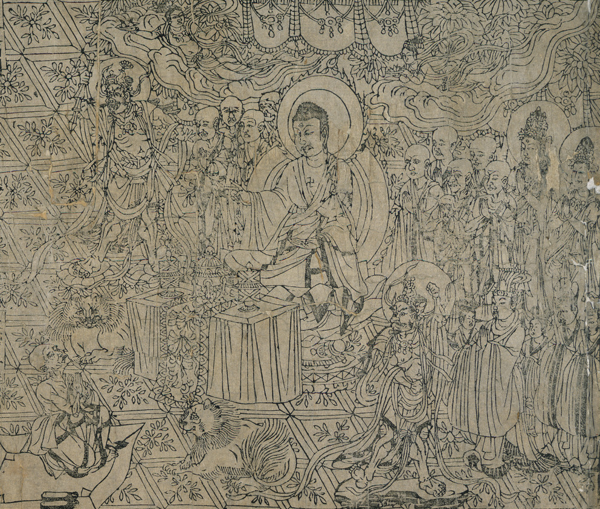
一九〇〇年六月二十二日，也就是清光緒二十六年五月二十六日，住在莫高窟的道士王圓籙在清理第十六窟甬道的積沙時，發現北側壁上有裂痕，剝開一看，竟是一扇磚砌的小門。門後就是第十七窟，室內堆滿了用白布包裹的一包包寫本與印本，約五萬件，涵蓋十六國到北宋七百年間的文獻與文物。王圓籙並不知道這些東西的價值，他先後向敦煌縣令等人報告，卻沒有得到應有的重視。當時的中國正值義和團運動爆發、八國聯軍入侵，朝廷自顧不暇，地方官員也無力處置。
消息傳開之後，最先趕來的是外國探險隊。一九〇七年，英國考古學家斯坦因來到敦煌，從王圓籙手中取得經卷、絹畫與絲織品共二十九箱，內有七千多份古寫本與刻本卷子。他在一九一四年再度來到敦煌，又帶走五百七十餘卷完整的漢文寫本。一九〇八年，法國漢學家伯希和來到莫高窟，在藏經洞中秉燭精選三週，以白銀五百兩換得六千餘件寫本精品與二百多幅紙絹畫。此後日本、俄國、美國的探險隊也紛至沓來。一九〇七年至一九二五年之間，外國探險隊帶走的藏經洞文物約三萬五千件，約佔全部的三分之二。
一九一〇年，清政府終於下令將劫餘經卷運往北京，起運時清點尚有九千餘卷，運抵京師圖書館時只剩八千餘卷。今日英國國家圖書館藏敦煌遺書一萬三千餘件，俄羅斯科學院東方學研究所聖彼得堡分所藏一萬餘件，法國國家圖書館藏五千七百餘件，中國國家圖書館則是國內收藏最多者。這批文獻的精華，大多不在發現它的土地上。
我們該如何看待王圓籙？後世對他毀譽參半，有人稱他為守護者，有人斥他為罪人。但把一場跨越帝國衰落與殖民擴張的劫難，全部歸咎於一個不識字的道士，並不公平。他確實販賣了經卷，也曾多次上報官府，只是無人理會。真正的問題不在一個人，而在一個時代：一個文明的寶庫被發現時，守護它的制度、學識與國家力量都不在場。斯坦因與伯希和背後是帝國的考古機構、大學與博物館，王圓籙背後，什麼也沒有。
藏經洞裡最著名的一件文物，是印於八六八年的《金剛經》，現藏於大英圖書館。它的題記寫明，由王玠為父母敬造、普為發放，印於咸通九年四月十五日。這是現存最早的有明確紀年的印刷品，比古騰堡聖經早了將近六百年。它由七張紙黏成長卷，前有佛陀說法的版畫，至今仍是世界印刷史上的里程碑。
藏經洞的流散是一場浩劫，卻也意外推動了一門學問的誕生。一九〇九年，伯希和將攜帶的部分敦煌遺書展示給羅振玉等人，中國學者這才驚覺敦煌出了至寶。同年，羅振玉發表《敦煌石室書目及其發現之原始》與《莫高窟石室秘錄》，開始有系統地整理與研究敦煌文獻，王國維等人隨後刊行《敦煌石室遺書》，為敦煌學奠立根基。此後數十年，羅振玉、王國維、陳垣、向達、王重民等學者，一面整理國內劫餘文獻，一面遠赴英法抄錄拍照，把被帶走的經卷一點一點接回來。
一九三〇年，陳寅恪在為陳垣所編《敦煌劫餘錄》所作的序中，提出了敦煌學的概念。他寫道，一時代之學術，必有其新材料與新問題，取用此材料，以研究問題，則為此時代學術之潮流；敦煌學者，今日世界學術之新潮流也。關於敦煌學一詞的最早使用，學界另有討論，有學者指出日本學者石濱純太郎早在一九二五年就曾使用過這一說法。但無論誰先說出這個詞，陳寅恪的序言確實為這門學問定下了方向。
敦煌遺書的價值，正在於它的龐雜與日常。佛經之外，它保存了大量世俗文書：土地買賣契約、離婚書、借貸帳目、社邑文契、星占曆法、醫方藥書、蒙書識字課本、變文與俗曲。透過這些文書，學者得以重建中古中國的社會經濟、法律制度與民間信仰，甚至重建絲路上各民族的語言與交往。敦煌遺書也因此與殷墟甲骨、居延漢簡、明清內閣大庫檔案並稱為二十世紀初中國古文獻的四大發現。陳寅恪在序中曾引用當時流行的說法，稱敦煌是吾國學術之傷心史；但他隨即以實證反駁，證明國內所藏的八千餘軸同樣價值重大。
藏經洞被發現之後，莫高窟又經歷了數十年的無人管理。直到一九四四年，國立敦煌藝術研究所在常書鴻任首任所長之下成立，莫高窟收歸國有，結束了將近四百年無人管理的歷史。一九八四年，敦煌文物研究所擴建為敦煌研究院；一九八七年，莫高窟被聯合國教科文組織列入世界文化遺產名錄，成為中國第一批世界遺產之一。此後樊錦詩、段文傑等幾代學者與文物工作者接力守護，在風沙中做壁畫修復、環境監測與數位化工作。
數位化是這個故事最新的轉折。自上世紀九十年代起，敦煌研究院引進數位技術，二〇〇六年與大英圖書館的國際敦煌項目正式建立合作，推動藏經洞文物的全球數位共享。二〇一六年，敦煌研究院首次向全球發布三十個經典洞窟的高清數位內容與全景漫遊。散落在倫敦、巴黎、聖彼得堡與北京的寫本，如今可以在同一個螢幕上並排比對。圖書館以另一種形式重新團聚了，雖然它的書架在雲端，而不在敦煌的石壁之內。
藏經洞的故事，最動人的地方不在寶藏，而在藏寶的人。他們沒有想過要留名青史，只是把重要的東西寫下來、收起來，以為後人會需要。結果他們是對的，只是等了九百年。我們今天讀到的每一份文書，都是一次跨越時空的託付：寫信的人不知道收信的人是誰，抄經的人不知道讀經的人在何方，立契約的人不知道一千年後會有人研究他的買賣。但他們還是寫了。
對讀者而言，敦煌留下兩個啟示，彼此相連。文明的記憶不在宮殿裡，而在日常裡。一座圖書館的價值，不在於它藏了多少聖典，而在於它連帳冊、家書與練字紙都一起留了下來。我們若只記得帝王與戰爭，就會錯過歷史的大部分。而守護記憶需要制度，而不只是善意。王圓籙的悲劇在於他一個人面對一整個時代的真空；常書鴻與樊錦詩的功績在於他們把守護變成機構、變成學問、變成可以傳承的工作。
敦煌藏經洞最終告訴我們：一個文明最堅韌的時刻，不是它征服世界的時候，而是它把自己寫下來、藏起來，並且相信未來有人會來讀的時候。門被打開了，書被帶走了，學問卻留了下來。而我們，仍在讀。
History & Civilization
A door sealed for nine hundred years, and fifty thousand manuscripts scattered across the world
On a map, Dunhuang is only a dot; in history, it is a crossroads. At the western end of the Hexi Corridor, snow water from the Qilian Mountains meets the yellow sand of the Gobi. To the west lies the Taklamakan, to the east Chang'an, to the south the Tibetan Plateau, to the north the steppe. Caravans, monks, envoys and refugees all stopped here to drink, to change a camel, to leave a word — or to leave an entire sutra. The Mogao Caves were carved out little by little in this way. They were not the whim of a single emperor, but the result of a thousand years in which countless ordinary people carved their faith, fear and hope into a cliff. And in the deepest part of this cave complex there was an even smaller stone chamber, stuffed with manuscripts, paintings and account books, like a library forgotten by time. Its door was bricked up, then buried in sand, and it waited quietly for nearly nine hundred years, until a Daoist priest clearing away drifted sand knocked open that wall.
This essay tells the story behind that door: how a library came into being, how it was sealed, how it was discovered in the least fitting of ages, how it was carried away and studied, and how it finally became a field of learning. It is also a story about memory — a civilisation that wrote itself down, hid itself away, almost lost itself forever, and in the end returned in another form.
According to legend, the Mogao Caves began with a vision. In 366, in the second year of the Jianyuan era of the Former Qin, the monk Yuezun was walking near the Singing Sand Dunes when, at dusk, he saw golden light shimmering on Mount Sanwei across the way, as if a thousand Buddhas had appeared. Moved by the sight, he carved the first cave into the cliff on the west bank of the Daquan River, to practise meditation there. The legend may not be fact, but the date is broadly credible: by the middle of the fourth century, Buddhism was travelling east along the Silk Road, and Dunhuang was its last stop before entering China — and its first. Monks translated, preached and copied sutras here; merchants made offerings, fulfilled vows and prayed for safety; and so the caves appeared, one after another.
For the next thousand years, through the Sixteen Kingdoms, the Northern Dynasties, the Sui, Tang, Five Dynasties, Western Xia and Yuan, construction at Mogao never truly stopped. The cliff stretches for more than 1,600 metres. Today 735 caves survive, of which about 492 contain murals or painted sculpture, with murals covering 45,000 square metres and more than 2,400 painted statues. Behind the numbers are human faces: donor portraits show envoys of Tibetan rulers, Uyghur princes, Han military governors and their wives and daughters, while the murals show musicians, dancers, farmers, caravans, battlefields and heavenly palaces. The early Tang, roughly the first decades of the seventh century into the early eighth, was Mogao's most brilliant period, when sculpture and painting reached their peak. These caves were temples, but also family memorial halls, places of prayer for caravans, and schools for monastic communities. The carving of a cave usually meant that a family or a monastic community had put down roots here.
Dunhuang could become such a place because of its geography. It was the throat of the Silk Road and a meeting point of many civilisations. Chinese, Tibetan, Sanskrit, Sogdian, Uyghur, Khotanese and Tocharian were all written here. Buddhism came from India, Zoroastrianism and Manichaeism from Persia, the Church of the East from Syria, and Confucianism and Daoism from central China. They did not meet in books, but on the same street, in the same monastery, on the same contract. The murals of Mogao therefore belong not only to the history of Buddhist art, but to the history of the whole medieval world.
The Library Cave is known today as Cave 17, a small square chamber about 2.6 metres long, 2.6 metres wide and 3 metres high, set into the north wall of the passage of Cave 16. It was not built to hold books. It was originally the memorial hall of Hongbian, a leading monk of late Tang Dunhuang. Hongbian was the foremost Buddhist leader in ninth-century Dunhuang. After Zhang Yichao led the people in expelling the Tibetans and recovering Hexi in 848, Hongbian, who was close to Zhang, was appointed by the court around 851 as chief monk of Hexi, in charge of Buddhist affairs across the whole Hexi Corridor. He managed several caves at Mogao, and Cave 17 was the memorial hall he prepared for himself after death. It once held a life-sized statue of him, with bodhi trees and attendants painted on the rear wall and portraits of disciples and donors on the side walls.
But this memorial hall soon acquired a second use: storing things. Monks put damaged sutras, worn-out scriptures, used documents and broken painted banners into the little room, batch after batch. The documents in the Library Cave span the fourth to the eleventh centuries and cover an extraordinary range: about ninety percent are Buddhist texts, and the rest are Daoist scriptures, Confucian classics, histories, medical books, calendars, contracts, account books, letters, poems, popular literature, and even handwriting practice sheets and personal effects. They were clearly not packed in on a single day, but accumulated over more than a hundred years. Monks of the Three Realms Monastery, such as Daozhen in the tenth century, were still using the chamber. The latest document with a clear date was written in 1002, in the fifth year of the Xianping era of the Northern Song.
When, then, and why was it sealed? There is still no settled answer. One view is that it was sealed to escape war: in about 1006 the Karakhanids destroyed the Buddhist kingdom of Khotan; the Western Xia expanded westward from the end of the tenth century and occupied Dunhuang in 1036; monks, fearing the scriptures would be seized, bricked up the entrance and disguised it as an ordinary wall. Another view holds that the cave was simply a repository for worn-out sutras and sacred objects, sealed naturally once it was full, with no panicked flight involved. Others point out that the documents inside had been sorted, apparently arranged by the Thousand Character Classic, and that the entrance was sealed with clay and painted over — not the work of a hurried moment. The reason for the sealing may never be proven, but one thing is clear: after it was sealed, those who knew of the chamber soon disappeared, wind-blown sand covered the passage layer by layer, dynasties rose and fell, and it remained quietly in place for nearly nine hundred years.
On 22 June 1900, the twenty-sixth day of the fifth lunar month in the twenty-sixth year of the Guangxu reign, the Daoist priest Wang Yuanlu, who lived at Mogao, was clearing drifted sand from the passage of Cave 16 when he noticed a crack in the north wall. Peeling it open, he found a small bricked-up door. Behind it lay Cave 17, its interior piled high with bundles of manuscripts and printed texts wrapped in white cloth — some 50,000 items, covering seven centuries of documents and artefacts from the Sixteen Kingdoms to the Northern Song. Wang did not know their value. He reported the find to the Dunhuang county magistrate and others, but received no proper response. China at the time was in the midst of the Boxer Uprising and the invasion of the Eight-Nation Alliance; the court could barely look after itself, and local officials were powerless to act.
Once word spread, foreign expeditions arrived first. In 1907 the British archaeologist Aurel Stein came to Dunhuang and obtained from Wang twenty-nine cases of manuscripts, silk paintings and textiles, including twenty-four cases of manuscripts and five large cases of paintings and silk, among them more than 7,000 ancient manuscripts and printed scrolls. He returned in 1914 and took away more than 570 complete Chinese manuscripts. In 1908 the French sinologist Paul Pelliot arrived at Mogao. Fluent in Chinese, he spent three weeks selecting texts by candlelight in the cave, exchanging 500 taels of silver for more than 6,000 of the finest manuscripts, over 200 paper and silk paintings, more than twenty wooden carvings and a large number of banners and silk textiles — mostly the texts of the highest scholarly value. Afterwards came the Japanese Otani expedition, the Russian Oldenburg expedition, the American Langdon Warner, and others. Between 1907 and 1925, foreign expeditions carried away about 35,000 items from the Library Cave, roughly two-thirds of the whole.
In 1910 the Qing government finally ordered the surviving manuscripts to be taken to Beijing. More than 9,000 scrolls were counted at departure; only just over 8,000 arrived at the Metropolitan Library. Today the British Library holds more than 13,000 Dunhuang manuscripts, the St Petersburg branch of the Institute of Oriental Studies of the Russian Academy of Sciences holds more than 10,000, the National Library of France holds more than 5,700, and the National Library of China holds the largest collection within China. The figures speak for themselves: most of the finest pieces of this hoard are no longer in the land where they were found.
How should we judge Wang Yuanlu? Later generations have both praised and condemned him, calling him a guardian or a criminal. But it is unfair to blame a single illiterate Daoist priest for a catastrophe that spanned the decline of an empire and the expansion of colonialism. He did sell manuscripts, and he did use the money to repair caves and maintain offerings; he also reported the find to the authorities several times, and no one acted. The real problem was not one man, but an age: when a civilisation's treasure was discovered, the institutions, the learning and the national strength needed to protect it were simply not there. Stein and Pelliot certainly used deception and bargain prices, but behind them stood imperial archaeological institutions, universities and museums — an organised system of acquiring knowledge. Behind Wang, there was nothing.
The most famous single object from the Library Cave is the Diamond Sutra, printed in 868 and now in the British Library. Its colophon states that it was reverently made for universal free distribution by Wang Jie on behalf of his parents, printed on the fifteenth day of the fourth month in the ninth year of the Xiantong era. It is the earliest surviving printed work with a clear date, nearly six hundred years before the Gutenberg Bible. Made of seven sheets of paper pasted into a long scroll, it opens with a finely engraved frontispiece of the Buddha preaching, and remains a landmark in the history of printing. A sutra and a donor's vow show us not only the maturity of printing technology, but the intention of an ordinary believer: he paid to print a sutra not to make a name for himself, but for his parents and for all beings. That intention is closer to the heart of faith than any imperial edict.
The dispersal of the Library Cave was a catastrophe, yet it unexpectedly gave birth to a field of learning. In 1909 Pelliot showed some of the Dunhuang manuscripts he had brought with him to Luo Zhenyu and others, and Chinese scholars realised for the first time what a treasure Dunhuang held. In the same year Luo published A Catalogue of the Books in the Dunhuang Stone Chamber and Their Discovery and Secret Records of the Mogao Stone Chamber, beginning the systematic study of the Dunhuang documents, and Wang Guowei and others went on to publish Surviving Books from the Dunhuang Stone Chamber, laying the foundations of Dunhuang Studies. Over the following decades, Luo Zhenyu, Wang Guowei, Jiang Fu, Chen Yuan, Xiang Da, Wang Zhongmin and other scholars organised the surviving manuscripts in China while travelling to Britain and France to copy, photograph, catalogue and annotate the texts that had been taken away, bringing them back, piece by piece.
In 1930 Chen Yinke, in his preface to Chen Yuan's Records of the Surviving Dunhuang Manuscripts, gave the field its name. He wrote that the scholarship of an age must have its new materials and new questions; to take up these materials and study these questions is the tide of the scholarship of that age, and Dunhuang Studies is the new tide of world scholarship today. Around the same time, a corresponding term appeared in English. It should be noted that scholars have debated who first used the term: some point out that the Japanese scholar Ishihama Juntaro had already used it in 1925. But whoever first spoke the word, Chen Yinke's preface set the direction of the field: Dunhuang Studies is not the connoisseurship of collectors, but scholarship that uses new materials to study new questions.
The value of the Dunhuang manuscripts lies precisely in their miscellaneous, everyday character. Beyond the sutras, they preserve a wealth of secular documents: land sale contracts, divorce papers, loan accounts, association records, astrology and calendars, medical prescriptions, primers, transformation texts and popular songs. Through these documents, scholars have been able to reconstruct the social economy, legal system, religious life and popular beliefs of medieval China, and even the languages and exchanges of the peoples along the Silk Road. The Dunhuang manuscripts are therefore counted, together with the oracle bones of Yin Ruins, the Han wooden slips of Juyan, and the Ming and Qing archives of the Grand Secretariat, as the four great discoveries of ancient Chinese documents in the early twentieth century,. In his 1930 preface Chen Yinke quoted a saying then in circulation, that Dunhuang was the sorrowful history of Chinese scholarship, its finest pieces gone abroad, only the dregs left behind; but he immediately refuted it with evidence, giving many examples to show that the more than 8,000 scrolls held in China were of great value, in no way inferior to those held abroad or in private hands. That passage has been quoted again and again, but often only its first half is cited, and the refutation in the second half forgotten — itself a reminder to read a quotation to the end before repeating it.
After the Library Cave was discovered, Mogao endured decades without proper management. It was not until 1944 that the National Dunhuang Art Institute was founded, with Chang Shuhong as its first director, and Mogao came under state ownership, ending nearly four hundred years without management. In 1984 the Dunhuang Cultural Relics Institute was expanded into the Dunhuang Academy; in 1987 Mogao was inscribed by UNESCO on the World Heritage List, among the first Chinese sites to receive that honour. Since then, generations of scholars and conservation workers, including Duan Wenjie and Fan Jinshi, have carried on the work of guarding the caves — restoring murals, monitoring the environment, and digitising the site amid the desert wind and sand.
Digitisation is the newest turn in this story. From the 1990s the Dunhuang Academy introduced digital technology, and in 2006 it formally established cooperation with the International Dunhuang Project at the British Library to promote the global digital sharing of the Library Cave's contents. In 2016 the Academy released to the world high-resolution digital content and panoramic tours of thirty classic caves for the first time. Manuscripts scattered across London, Paris, St Petersburg and Beijing can now be compared side by side on a single screen, and a reader far away in Kaohsiung or Taipei can zoom in on the handwriting and corrections of a copyist from more than a thousand years ago. This cannot undo the pain of dispersal, but it means that study and viewing are no longer limited by geography or national borders. The library has reunited in another form, even though its shelves are in the cloud rather than in the rock at Dunhuang.
The most moving part of the story of the Library Cave is not the treasure, but the people who hid it. They did not expect to be remembered by history; they simply wrote down what mattered and put it away, believing that later generations would need it. They were right — only it took nine hundred years. Every document we read today is an entrustment across time: the letter-writer did not know who would receive the letter, the copyist did not know who would read the sutra, the person who drew up a contract did not know that a thousand years later someone would study his transaction. But they wrote anyway.
For readers, Dunhuang leaves two lessons, bound together. The memory of a civilisation lives not in palaces, but in everyday life. The value of a library lies not in how many sacred texts it holds, but in the fact that it kept the account books, the family letters and the handwriting practice sheets as well. If we remember only emperors and wars, we miss most of history. And guarding memory requires institutions, not only goodwill. Wang Yuanlu's tragedy was that he faced the vacuum of an entire age alone; the achievement of Chang Shuhong and Fan Jinshi was that they turned guardianship into an institution, into scholarship, into work that could be passed on. One person can discover a library, but only an institution can keep it alive.
In the end, the Library Cave tells us this: a civilisation is at its most resilient not when it conquers the world, but when it writes itself down, hides itself away, and trusts that someone in the future will come and read. The door was opened, the books were carried away, but scholarship remained. And we are still reading.
歷史與文明
沒有土地的國家，如何用制度活了一千年
威尼斯是一座違反常識的城市。它沒有城牆，沒有田野，沒有淡水，房子蓋在木樁上，街道是水，廣場會淹水，墓園在另外的島上。一個在這樣的地方長出來的國家，照理說應該短命而貧弱，結果它卻活了一千年，成為中世紀與文藝復興時期歐洲最富有的海上強權之一。它的商船走到君士坦丁堡、亞歷山大、貝魯特與倫敦，它的金幣在地中海兩岸通用，它的造船廠在危機時每天能裝配出一艘戰船。最後它沒有亡於外敵攻陷城池，而是自己投票解散了自己。
威尼斯的故事值得一讀，不是因為它浪漫，而是因為它回答了一個很實際的問題：一個沒有資源、沒有腹地、沒有天然優勢的群體，如何靠制度、技術與貿易活下去，而且活得比周圍的帝國更久？答案不在英雄，而在一套設計：讓權力無法被一個人奪走，讓商人願意把錢交給國家，讓一座潟湖變成護城河與高速公路。
威尼斯的起源沒有確切的紀錄，只有傳說與後來的編年史。傳統說法把建城的日子定在四二一年三月二十五日，聖母領報節那天，帕多瓦的官員在利阿爾托一帶建立貿易站，並為聖雅各教堂奠基。但這個日期屬於傳說，教堂本身的遺跡也晚得多。比較可信的圖像是漸進的：五世紀起，隨著西羅馬帝國衰落，哥德人、匈奴人、倫巴第人先後入侵義大利東北部，帕多瓦、阿奎萊亞、特雷維索、阿爾蒂諾與康科迪亞等羅馬城市的居民，為了躲避戰亂，逃往亞得里亞海頂端的威尼斯潟湖。潟湖水淺泥濘，陸上的軍隊難以進入，船卻可以通行，於是暫時的避難所慢慢變成了永久的家園。
潟湖的居民在木樁上蓋屋，再鋪石板為基，島與島之間以船與木橋相連。他們捕魚、曬鹽、造船，逐漸學會與水共處。八世紀初，潟湖各聚落選出第一位領袖，傳統上稱為保羅·盧西奧·阿納費斯托，於六九七年當選；但從史料看，更可信的第一位總督是八世紀初的奧爾索·伊帕托，他獲得拜占庭授予的執政官與公爵頭銜。無論哪一個名字為真，重點都一樣：潟湖居民不再各自為政，他們選出一位終身領袖，稱為總督，拉丁文是dux，威尼斯方言讀作doge。
九世紀是威尼斯認同形成的關鍵時刻。約在八一〇年，總督安傑洛·帕爾特奇帕齊奧把統治中心遷到利阿爾托群島，也就是今天威尼斯的心臟地帶。八二八年，兩名威尼斯商人從亞歷山大偷運出聖馬可的遺骨，據說藏在豬肉之下以躲避檢查。威尼斯自此有了一位使徒級的主保聖人，有翼的獅子成為共和國的標誌。一個沒有羅馬過去的城市，用一具聖髑為自己創造了過去。這件事看似是傳說，卻透露了威尼斯的政治智慧：認同是可以設計的，象徵是可以經營的，而一座城市的靈魂，有時比它的城牆更重要。
威尼斯最值得研究的，不是它的財富，而是它的制度。總督終身任職，聽起來像君主，但他的權力從一開始就被層層約束。一〇三二年，世襲總督制實質上終結，總督不再能把位子傳給兒子。一一七二年，大議會成為政治合法性的最終來源。從一二六八年起，總督選舉改用一套極其繁複的程序：抽籤與投票交替進行，共十輪，先從大議會抽出三十人，再遞減為九人，由九人提名四十人，抽籤減為十二人，再提名二十五人，依此遞減，最後由四十一人投票選出總督。這套程序的目的只有一個：讓賄賂、派系與家族操縱變得幾乎不可能。
一二九七年的閉關法令進一步把大議會變成封閉的貴族團體，議席限於曾任議員的家族，之後逐漸世襲化，到一三二三年名單完全封閉。表面上看，這是貴族壟斷權力；但從另一面看，它也讓統治階層變得穩定而可預期：約一千二百至二千名成年男性貴族，出自約一百五十至一百八十個家族，輪流在各個議會與委員會任職，總督只是其中一人。一三一〇年，因應貴族叛亂而設立的十人議會，負責國家安全，權力極大卻任期短暫、集體行使。威尼斯的設計哲學很清楚：不相信任何一個人，也不相信任何一個派系，只相信程序、輪換與互相制衡。
這套制度的經濟基礎同樣值得注意。一二八四年，威尼斯開始鑄造金杜卡特，重約三點五克純金，此後數百年維持成色不變，成為地中海的標準貨幣，從布魯日到開羅的商人都願意接受。商人之間流行合夥契約，由留守的出資者提供大部分資本，出海的商人負責運貨，利潤共享，風險共擔。國家則組織定期的武裝商船隊，稱為護航船隊，固定航線通往君士坦丁堡、亞歷山大、貝魯特、黑海與法蘭德斯、英格蘭，商人競標艙位。國家不直接做生意，卻為生意提供秩序與安全。
威尼斯的轉捩點是一場本來與它無關的戰爭。一二〇二年，第四次十字軍與威尼斯簽約，由威尼斯提供船隻運送十字軍前往埃及，但十字軍付不出約定的運費。年邁失明的總督恩里科·丹多洛把這筆債務變成政治籌碼，先把十字軍引向亞得里亞海的札拉，一二〇二年攻下這座基督教城市，再於一二〇四年引向君士坦丁堡。十字軍與威尼斯聯軍攻陷拜占庭首都，大肆劫掠，競技場的四匹青銅馬都被運回威尼斯，至今仍裝飾著聖馬可大教堂。威尼斯在分贓中取得拜占庭帝國八分之三的領土，以及克里特島、優卑亞島與愛琴海諸多據點，一躍成為地中海東部的殖民帝國。
這件事在道德上很難辯護，但從制度的角度看，它揭示了威尼斯的本質：這是一個由商人統治的國家，它的決策邏輯是商業邏輯，機會出現時，它不會因為宗教情懷而放過。威尼斯從來不是十字軍的信徒，它是十字軍的船東。當船東發現乘客付不出船錢，改收港口與領土作為抵償，在商人的帳本上是合理的，在歷史的帳本上卻是一場災難。拜占庭帝國自此一蹶不振，而威尼斯則用搶來的帝國支撐了此後兩百年的繁榮。
支撐這一切的是造船廠。威尼斯兵工廠約於一一〇四年前後創立，逐步擴建為歐洲最大的前工業製造中心，佔地約四十五至六十公頃，鼎盛時期雇用多達一萬六千名工人。他們使用標準化零件與分工流水線，船體拖過運河，沿途工坊依次安裝索具、船槳與武器。平時一艘戰船約需十二至十五天完成，但在危機時刻，例如一五七〇年備戰期間，兵工廠曾連續數週每天交付一艘全副武裝的戰船。這種能力在當時的歐洲是獨一無二的，它讓威尼斯能夠在短時間內重建艦隊，也讓它的海上霸權有了工業基礎。
威尼斯的財富來自中間人的位置。胡椒、肉桂、丁香、肉荳蔻與絲綢，從印度洋經阿拉伯與埃及商人之手，運到亞歷山大與貝魯特，再由威尼斯商船運回歐洲，經德意志商人轉銷各地。威尼斯不生產香料，卻壟斷了香料進入歐洲的通道。一四二三年，總督托馬索·莫切尼戈估計威尼斯人擁有三千三百多艘船。十五世紀中葉，威尼斯本土人口約十萬至十五萬，加上遍布東地中海的海外領地，成為一個橫跨海陸的國家。
但同一條航線也帶來了瘟疫。黑死病於一三四八年抵達威尼斯，城中人口銳減，商業與造船都受到重創，此後瘟疫又多次回來，一五七五至一五七七年與一六三〇至一六三一年尤為嚴重。威尼斯的回應卻是制度性的：先隔離三十天，再延長為四十天，義大利文稱為四十日，由此產生了英文的隔離一詞。一四二三年，威尼斯建立世界上第一座常設檢疫站，來船必須在潟湖的隔離島上停留，期滿才能入港。瘟疫沒有被消滅，但被管理起來了。這是威尼斯一貫的作風：面對無法控制的風險，不祈求奇蹟，而是設計程序，把損失變成可以計算的成本。
真正的衰落來自兩個方向。東方，鄂圖曼帝國崛起，君士坦丁堡於一四五三年陷落，威尼斯先後失去內格羅蓬特、塞浦路斯與克里特島。西方，葡萄牙人於一四九八年開闢繞過好望角直達印度的海路，香料可以繞過威尼斯，直接運到里斯本。一五七一年十月七日，神聖同盟艦隊在勒班陀海戰擊敗鄂圖曼海軍，威尼斯提供了同盟艦隊過半的船隻，但塞浦路斯並未因此收回，威尼斯於一五七三年媾和，正式承認失去該島。克里特島的首府干地亞堅守二十一年，於一六六九年陷落；摩里亞半島於一七一八年帕薩羅維茨和約後確認歸屬鄂圖曼。歐洲經濟的重心轉向大西洋，威尼斯的船越來越少，稅收越來越薄，制度卻越來越僵化。
威尼斯的終結沒有圍城戰，也沒有最後的總督戰死城頭。一七九七年五月十二日，面對拿破崙的法軍，大議會投票解散共和國，末代總督盧多維科·馬寧退位，延續約一千一百年的政體就此結束。聖馬可的青銅馬被運往巴黎，直到一八一五年才歸還。一個從未被外敵攻陷的城市，最後是自己打開了城門。
為什麼一個設計如此精密的共和國會這樣結束？原因不在某一次戰敗，而在制度本身的老化。閉關法令讓統治階層穩定，卻也讓它封閉；選舉程序防止了獨裁，卻也讓決策變得緩慢；商業邏輯帶來了財富，卻讓國家在面對鄂圖曼與大西洋新秩序時，只會計算成本，不願冒險改革。十八世紀的威尼斯仍是歐洲的遊樂場與文化之都，但它的艦隊只剩寥寥數艘，兵工廠的工人從一萬六千人銳減至數百人。
威尼斯留下的不只是宮殿與運河。它留下了幾個至今仍在使用的詞：兵工廠、隔離、猶太隔離區、公報、賭場，連再見的說法都源自威尼斯方言。它留下的更重要的東西，是制度的教訓。權力的設計比權力的擁有者更重要，威尼斯用抽籤、輪換與任期限制，把一個終身總督變成制度的囚徒，這比任何賢君都可靠。國家可以是生意的夥伴，而不必是生意的老闆，威尼斯不壟斷貿易，它壟斷秩序：造船、護航、鑄幣、仲裁，讓商人敢於出海。而成功本身會變成陷阱，當一套制度在某個時代大獲成功，它最難做到的，就是承認時代已經變了。
對今天的讀者而言，威尼斯最值得記住的一幕，不是它最輝煌的時候，而是它最後一次開會的樣子。一群穿著黑袍的貴族，在自己建造的大廳裡，投票決定不再存在。這個場景令人不安，因為它提醒我們：制度不會永遠保護一個不再願意為自己辯護的共同體。威尼斯教會我們如何建立一個共和國，也教會我們，一個共和國可以如何安靜地死去。水還在流，船還在走，只是那個曾經讓水與船都聽命的國家，已經不在了。
History & Civilization
A state with no land, kept alive for a thousand years by its institutions
Venice is a city that defies common sense. It has no walls, no fields, no fresh water; its houses stand on wooden piles, its streets are water, its squares flood, and its cemetery is on another island. A state grown in such a place ought to have been short-lived and poor. Instead it lived for a thousand years and became one of the richest maritime powers of the Middle Ages and the Renaissance. Its merchant ships reached Constantinople, Alexandria, Beirut and London; its gold coin circulated on both shores of the Mediterranean; its shipyard could fit out a war galley in a day in a crisis; its parliamentary system has been studied ever since. In the end it was not conquered by an enemy storming its walls, but voted itself out of existence.
The story of Venice is worth reading not because it is romantic, but because it answers a practical question: how does a group with no resources, no hinterland and no natural advantage survive on institutions, technology and trade — and survive longer than the empires around it? The answer lies not in heroes, but in a design: a design that kept power from being seized by one person, that persuaded merchants to entrust their money to the state, and that turned a lagoon into both a moat and a highway.
The origins of Venice are not recorded with certainty; only legend and later chronicles remain. Tradition dates the founding of the city to 25 March 421, the Feast of the Annunciation, when officials from Padua established a trading post at Rialto and laid the foundation of the church of St James. But that date belongs to legend, and the remains of the church itself are much later. A more credible picture is gradual: from the fifth century, as the Western Roman Empire declined, Goths, Huns and Lombards invaded north-eastern Italy in turn, and the inhabitants of Roman cities such as Padua, Aquileia, Treviso, Altinum and Concordia fled the wars for the Venetian Lagoon at the head of the Adriatic. The lagoon was shallow and muddy; armies on land could hardly enter it, but boats could pass, and so a temporary refuge slowly became a permanent home.
The lagoon dwellers built houses on wooden piles, laid stone platforms over them, and linked island to island by boat and wooden bridge. They fished, made salt and built ships, gradually learning to live with the water. Early in the eighth century, the lagoon communities elected their first leader, traditionally called Paolo Lucio Anafesto, said to have been elected in 697; but on the evidence, the more credible first doge is Orso Ipato, early in the eighth century, who received from Byzantium the titles of hypatus and dux. Whichever name is true, the point is the same: the lagoon dwellers no longer governed themselves separately, but elected a lifelong leader, called the doge, from the Latin dux.
The ninth century was the decisive moment in the making of Venetian identity. Around 810, Doge Agnello Participazio moved the seat of government to the Rialto islands, the heart of Venice today. In 828, two Venetian merchants smuggled the relics of St Mark out of Alexandria, reportedly hidden under pork to evade inspection. Venice thus acquired a patron saint of apostolic rank, and the winged lion became the emblem of the republic. A city with no Roman past created a past for itself with a sacred relic. The story sounds like legend, yet it reveals Venetian political wisdom: identity can be designed, symbols can be managed, and the soul of a city is sometimes more important than its walls.
The most instructive thing about Venice is not its wealth, but its institutions. The doge held office for life, which sounds like a monarchy, yet his power was constrained from the start, layer upon layer. In 1032 hereditary dogeship effectively ended, and the doge could no longer pass the office to his son. In 1172 the Great Council became the ultimate source of political legitimacy. From 1268, the election of the doge followed an extraordinarily elaborate procedure: ten alternating rounds of lottery and ballot, beginning with thirty men drawn by lot from the Great Council, reduced to nine, who nominated forty, reduced by lot to twelve, who nominated twenty-five, and so on, until finally forty-one men voted to elect the doge. The purpose of the procedure was one alone: to make bribery, faction and family manipulation almost impossible.
The Serrata of 1297 turned the Great Council further into a closed patrician body, with seats limited to families that had held them, gradually becoming hereditary until the list was fully closed in 1323. On the surface this was an aristocratic monopoly of power; from another angle, it made the ruling class stable and predictable: some 1,200 to 2,000 adult male nobles, from about 150 to 180 families, took turns serving in the councils and committees, and the doge was only one among them, not a king above them. The Council of Ten, created in 1310 in response to a noble rebellion, was responsible for state security, wielding great power but for short terms and acting collectively. The design philosophy of Venice is clear: trust no single person and no single faction, only procedure, rotation and mutual checks.
The economic foundations of this system are equally instructive. In 1284 Venice began minting the gold ducat, weighing about 3.5 grams of fine gold, and maintained its standard unchanged for centuries, becoming the standard coin of the Mediterranean, accepted by merchants from Bruges to Cairo. Merchants commonly used partnership contracts, in which a stay-at-home investor supplied most of the capital and a travelling merchant carried the goods, sharing profits and risks. The state organised regular armed merchant convoys, known as the mude, sailing fixed routes to Constantinople, Alexandria, Beirut, the Black Sea, Flanders and England, with merchants bidding for cargo space. The state did not trade directly, but provided order and security for trade.
The turning point for Venice was a war that originally had nothing to do with it. In 1202 the Fourth Crusade contracted with Venice, which was to provide ships to carry the Crusaders to Egypt, but the Crusaders could not pay the agreed fare. The aged and blind Doge Enrico Dandolo turned the debt into political leverage, first diverting the Crusade to Zara on the Adriatic, taken in 1202, and then in 1204 to Constantinople. The combined Crusader and Venetian army stormed the Byzantine capital and sacked it; the four bronze horses of the Hippodrome were carried back to Venice, where they still adorn St Mark's Basilica. In the division of the spoils Venice obtained three-eighths of the Byzantine Empire, together with Crete, Euboea and many Aegean possessions, becoming at a stroke a colonial empire in the eastern Mediterranean.
The affair is hard to defend morally, but from the standpoint of institutions it reveals the essence of Venice: a state ruled by merchants, whose logic of decision was the logic of commerce, and which would not let a religious scruple stand in the way of an opportunity. Venice was never a believer in the Crusade; it was the Crusade's shipowner. When the shipowner found that his passengers could not pay the fare, and took ports and territory instead, the account book of the merchant said it was reasonable, while the account book of history said it was a disaster. The Byzantine Empire never recovered, while Venice used the empire it had seized to sustain two hundred years of prosperity.
What sustained all this was the shipyard. The Venetian Arsenal, founded around 1104, grew into the largest pre-industrial manufacturing centre in Europe, covering about 45 to 60 hectares and employing up to 16,000 workers at its height. Using standardised parts and a division of labour, hulls were towed down a canal while workshops along the way fitted rigging, oars and weapons in turn. A war galley normally took about twelve to fifteen days to complete, but in a crisis, as in the preparations for war in 1570, the Arsenal delivered one fully armed war galley a day for several weeks in succession. Such a capacity was unique in Europe at the time; it let Venice rebuild its fleet in a short time and gave its maritime supremacy an industrial foundation.
The wealth of Venice came from its position as a middleman. Pepper, cinnamon, cloves, nutmeg and silk travelled from the Indian Ocean through Arab and Egyptian merchants to Alexandria and Beirut, then by Venetian ships to Europe, and on through German merchants to markets everywhere. Venice produced no spices, yet monopolised the channel by which spices entered Europe. In 1423 Doge Tommaso Mocenigo estimated that Venetians owned more than 3,300 ships. By the middle of the fifteenth century, the population of Venice itself was about 100,000 to 150,000, and with overseas possessions spread across the eastern Mediterranean it had become a state spanning sea and land.
But the same shipping lanes also brought plague. The Black Death reached Venice in 1348, sharply reducing the city's population and disrupting commerce and shipbuilding, and plague returned again and again, most severely in 1575–1577 and 1630–1631. The Venetian response was institutional: first thirty days of isolation, then forty, quaranta giorni in Italian, from which the English word quarantine derives. In 1423 Venice established the world's first permanent plague hospital, and incoming ships had to wait on quarantine islands in the lagoon before being allowed into port. Plague was not eliminated, but it was managed. This was the Venetian way throughout: faced with a risk that could not be controlled, do not pray for a miracle, but design a procedure, and turn the loss into a calculable cost.
The true decline came from two directions. In the east, the Ottoman Empire rose, Constantinople fell in 1453, and Venice lost Negroponte, Cyprus and Crete in turn. In the west, the Portuguese opened a sea route around the Cape of Good Hope to India in 1498, so that spices could bypass Venice and go directly to Lisbon. On 7 October 1571, the Holy League fleet defeated the Ottoman navy at Lepanto, and Venice supplied more than half of the allied ships, but Cyprus was not recovered, and Venice made peace in 1573, formally acknowledging its loss. Candia, the capital of Crete, held out for twenty-one years and fell in 1669; the Morea was confirmed as Ottoman by the Treaty of Passarowitz in 1718. The economic centre of Europe shifted to the Atlantic; Venetian ships grew fewer, revenues thinner, and institutions more rigid.
The end of Venice had no siege and no last doge dying on the walls. On 12 May 1797, facing the French army of Napoleon, the Great Council voted to dissolve the republic, and the last doge, Ludovico Manin, abdicated, ending a polity that had lasted about 1,100 years. The bronze horses of St Mark were carried to Paris, and did not return until 1815. A city never taken by an enemy opened its own gates in the end.
Why did a republic so carefully designed end in this way? The reason lay not in a single defeat, but in the ageing of the institutions themselves. The Serrata made the ruling class stable, but also closed; the electoral procedure prevented dictatorship, but also made decisions slow; commercial logic brought wealth, but when faced with the Ottoman Empire and the new Atlantic order, the state could only calculate costs and would not risk reform. Eighteenth-century Venice was still the playground and cultural capital of Europe, but its fleet had dwindled to a handful of ships, and the workforce of the Arsenal had fallen from 16,000 to a few hundred.
Venice left behind more than palaces and canals. It left several words still in use today: arsenal, quarantine, ghetto, gazette, casino, and even the Venetian farewell behind the word ciao. More important still are the lessons of its institutions. The design of power matters more than the holder of power: Venice used lottery, rotation and term limits to turn a lifelong doge into a prisoner of institutions, and that was more reliable than any wise king. A state can be a partner of business without being its master: Venice did not monopolise trade, it monopolised order — shipbuilding, convoy protection, coinage and arbitration — so that merchants dared to put to sea. And success itself can become a trap: when a system succeeds greatly in one age, the hardest thing for it is to admit that the age has changed.
For today's reader, the most memorable scene in Venice is not its moment of greatest glory, but its last meeting. A group of noblemen in black robes, in a hall they had built themselves, voted that they would no longer exist. The scene is unsettling, because it reminds us that institutions will not forever protect a community that is no longer willing to defend itself. Venice taught us how to build a republic, and it also taught us how a republic can die quietly. The water still flows and the boats still pass; only the state that once commanded both water and boats is gone.
錢與人性
最貴的花都是生病的花，檔案裡的狂熱比傳說安靜得多
一朵花能值多少錢？在今天的荷蘭，花市裡一束鬱金香不過是春天裡尋常的顏色，論把賣，論斤稱，誰也不會為它失眠。可是在將近四百年前，同樣的一朵花，曾經讓一群精明、務實、以貿易立國的荷蘭人，為它徹夜議價、借錢、寫下白紙黑字的承諾，然後在短短幾天裡眼睜睜看著那些承諾變成廢紙。這不是童話，而是一段被反覆講述、也被反覆誇大的歷史。它的真正教訓，不在於花有多貴，而在於人是怎麼一步步說服自己，相信一朵花可以一直貴下去的。
真正值得讀的，不是價格表上的數字，而是數字背後那種熟悉的心理：先是欣賞，繼而羨慕，然後是害怕錯過，最後是害怕承認自己錯了。
鬱金香原不是荷蘭的花。十六世紀，它從鄂圖曼帝國的世界走進歐洲，經由外交官與植物學家的書信和行囊，逐步向北傳播。哈布斯堡皇帝派駐君士坦丁堡的大使奧吉耶·德·布斯貝克在一五五四至一五六二年間身處那座花園之城，後世常把他視為將鬱金香帶入歐洲的關鍵人物之一。而真正讓鬱金香在學術與園藝世界裡站穩腳跟的，是佛蘭德植物學家卡羅盧斯·克盧修斯。他在一五七六年出版了第一部鬱金香專著，此後三十年間又兩度修訂，一生在歐洲的學者網絡裡收發球莖、交換觀察。
一五九三年，克盧修斯帶著他的鬱金香來到萊頓，接掌當地大學的植物園。翌年春天，鬱金香在萊頓開花，那一年常被視為鬱金香在荷蘭正式開花的起點。他的球莖屢次失竊，防不勝防，而那些被偷走的球莖，後來成了荷蘭球莖貿易最早的種源之一。一個學者的私人花園，就這樣與一個國家的商業史纏在了一起。
當時的荷蘭正處在黃金時代的上升期。東印度公司的船隊把香料、瓷器與財富帶回阿姆斯特丹，商人的宅邸裡開始出現來自遠方的珍奇：地圖、貝殼、畫作，以及一株開得與眾不同的花。鬱金香起初是學者與富裕收藏家的玩物，是一種知識與品味的象徵。
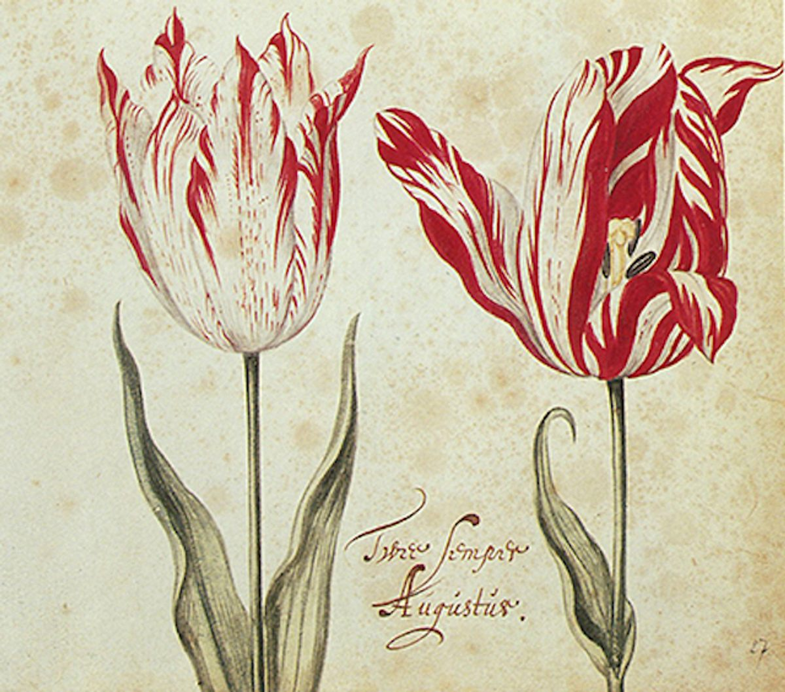
讓價格真正起飛的，是破瓣鬱金香：花瓣布滿火焰般的條紋，每一朵圖案都不重複，當時的人以為這是偶然的傑作，願意為不可複製的美付出高價。
答案要等到將近三百年後才揭曉。一九二八年，英國真菌學家多蘿西·凱萊在約翰·英尼斯園藝研究所做嫁接實驗，把破瓣球莖的組織接到健康的球莖上，發現那種條紋會跟著傳過去。那不是育種的成果，而是一種感染。到了二十世紀六十年代，研究者進一步確認，元兇是一種由蚜蟲傳播的嵌紋病毒，如今稱為鬱金香碎色病毒。它擾亂了花瓣裡色素的分布，讓底色在條紋處透出來，造就了火焰的效果。
這是一個帶著諷刺意味的真相：當時最貴的花，都是生病的花。病毒一面替花瓣作畫，一面逐步削弱球莖。受感染的球莖長出的側芽越來越少、越來越弱，一代比一代更難開花，最後索性枯萎。最負盛名的品種「永遠的奧古斯都」，白底緋紅，據一六二四年的記載，當時全數只有十二顆，握在同一位藏家手裡，如今早已絕跡。另一位名花「副總督」也是同樣的命運。市場追逐的稀有，恰恰來自這種無法延續的脆弱。
我們常常以為價格反映的是價值，其實價格很多時候反映的只是稀缺與渴望，而稀缺本身可能來自缺陷與誤解。
鬱金香的生長節奏，決定了這場交易的形狀。球莖一年只有夏季短短幾個月可以挖出來交割，其餘漫長的秋冬，它們都埋在土裡，動不得。於是冬天裡的買賣，買的不是眼前的花，而是來年夏天的承諾：一紙契約，寫明品種、重量與交貨的日子，買家先付一筆錢，或者只付一小部分訂金，約定日後再結清。這種做法在今天看來很像期貨合約的雛形，在當時則是一種順應季節的變通。
變通本身沒有錯，錯的是變通被拿來反覆轉手。到了冬天，契約開始在酒館與客廳裡流轉，一個人買下，隔幾天加價賣給下一個人，下一個人又賣給再下一個人。球莖還在土裡，花還沒有開，價格卻已經先開了花。根據經濟學家彼得·加伯整理的價格資料，一顆標準的「永遠的奧古斯都」球莖，在一六二五年七月值兩千荷蘭盾，到了狂熱頂峰的一六三七年二月五日，帳面價值已達六千二百九十盾。當時一位熟練工匠一年的收入大約三百盾，換算下來，那一顆球莖相當於二十一年左右的工錢。這是檔案裡留得下來的數字，不是酒館裡的傳聞。
價格真正陡峭上揚的時間，其實集中在一六三六年十二月到一六三七年二月之間。有些受追捧的品種在短短數週內翻了數倍。哈勒姆、阿姆斯特丹與阿爾克馬爾成了交易的中心，公證人面前排著等待簽字的人。值得注意的是，參與者並不是想像中的全民。歷史學家安妮·戈德加花了多年時間翻閱哈勒姆、阿姆斯特丹、阿爾克馬爾與恩克赫伊森等地的公證檔案、法庭紀錄與遺囑，為她二〇〇七年出版的《鬱金香狂熱》一書核對每一筆可以追蹤的交易。她找到的結果是：花費超過三百盾、也就是超過一位熟練工匠年收入的人，只有三十七位，而且除了極少數例外，他們都是負擔得起的富裕商人。最昂貴的幾筆有收據可查的交易，大約在五千盾上下，那在當時相當於一棟體面住宅的價錢。
冬天裡的契約有一個致命的特點：它把風險藏了起來。買家以為自己只是付了訂金、等著春天收花，實際上他已經把未來幾個月的身家押在一個還沒有開花的承諾上。賣家也一樣，他賣出的不只是一顆球莖，而是一個自己未必能履行的未來。當每個人都只看著下一個買家會出更高的價，就沒有人停下來問，春天來了，花到底值多少。
崩落來得很快，快得幾乎沒有留下戲劇性的場面。一六三七年二月三日，哈勒姆一場例行的球莖拍賣會上，拍賣官不斷降價，台下卻沒有人應價。那不是一場激烈的拋售，而是一陣令人不安的安靜。到了二月五日，仍有九十八筆交易被記錄下來，但價格已經亂成一團，同一品種在同一天可以出現天差地遠的價錢。信心就是這樣斷的：不是被誰打碎，而是忽然間沒有人願意再接手。
隨後的幾天裡，市場迅速停擺。許多契約無法交割，買家要求取消或打折，賣家則堅持履約，糾紛湧進市政廳與法庭。後來各城市介入調解，哈勒姆等地買家付原價約百分之三點五便可解約，沒有任何法庭最終強制執行這些契約。
與傳說不同，荷蘭經濟並沒有因此垮掉。加伯找不到嚴重經濟困境的證據，戈德加也找不到任何一位可確認因鬱金香而破產的人。真正受傷的，是少數在冬天裡押得太重的人，而不是整個國家。
一個建立在「下一個人會出更高價」之上的市場，只要有一次沒有下一個人，就會立刻停下來。支撐價格的從來不是花，而是接力的人。
如果事情到此為止，鬱金香狂熱大概只會是荷蘭地方史裡的一則短注。它之所以變成全世界都聽過的故事，是因為兩百年後，一位蘇格蘭記者把它寫成了一則警世寓言。一八四一年，查爾斯·麥凱出版《異常流行幻象與群眾瘋狂》，其中關於鬱金香的章節固定了後世的印象：全國上下為花發狂，水手誤把球莖當洋蔥吃下，破產者紛紛投水，商業遭受重創、多年才恢復。
麥凱並沒有做過檔案研究。他的素材很大程度上來自德國學者約翰·貝克曼在一七九七年的著作，而貝克曼又是依據一六三七年前後流傳的諷刺小冊子與歌謠。那些小冊子本是道德諷刺畫，目的是嘲笑投機者，而不是記錄帳目。麥凱把諷刺當成了報導，後來的寫作者又把麥凱當成了史料，一層一層傳下來，誇張便成了常識。最常被引用的那張清單，說一顆「副總督」球莖換來兩大車小麥、四車黑麥與一堆雜物，總值兩千五百盾，實際上並沒有任何一筆成交紀錄可以對應，它更像是一則寓言裡的價目表，而不是帳本上的一行字。
金融家伯納德·巴魯克在一九三二年華爾街崩盤之後重新出版了這本書，從此鬱金香成了每一場泡沫的代名詞。
但傳說遮住了真正值得學習的部分。檔案裡的交易一點也不荒唐，它有合理的起點與季節邏輯，出問題的是人們在合理的起點上，一步步放棄了追問：這朵花明年還會有人要嗎？
鬱金香本身沒有錯，它只是安靜地開花、等待下一個春天。錯的是人把一種季節性的美，誤認成可以無限複製的財富。
讀鬱金香狂熱，最有用的不是記住六千二百九十盾，而是記住它的結構：真實而稀缺的東西、無法複製的美、必須用承諾交易的市場，再加上一群聰明人彼此傳遞的信心。價格不再是花的價格，而是人們對彼此的信任程度。
下一次聽到某樣東西「只會漲不會跌」，不妨想起哈勒姆那個安靜的拍賣會：每個人心裡都閃過同一個念頭，如果我現在買下，明天要賣給誰？所有泡沫的答案，最終都是同一個：沒有人。
Money & Human Nature
The dearest flowers were diseased ones — and the archives tell a quieter story than the legend
How much can a flower be worth? In the Netherlands today, a bunch of tulips at the flower market is an ordinary colour of spring, sold by the bunch and by weight, and no one loses sleep over it. Yet nearly four hundred years ago, that same flower kept a group of shrewd, practical Dutchmen — people who had built a nation on trade — up at night, haggling, borrowing money, and signing written promises, only to watch those promises turn to waste paper within a few days. This is not a fairy tale but a story told and retold, and exaggerated again and again. Its real lesson is not how expensive the flower became, but how people talked themselves, step by step, into believing that a flower could keep getting more expensive for ever.
What is worth reading is not the numbers on the price list but the familiar psychology behind them: first admiration, then envy, then the fear of missing out, and finally the fear of admitting that one was wrong.
The tulip was not originally a Dutch flower. In the sixteenth century it travelled from the Ottoman world into Europe, carried north through the letters and luggage of diplomats and botanists. Ogier Ghiselin de Busbecq, the Habsburg ambassador in Constantinople from 1554 to 1562, is often named as one of the key figures who brought the tulip to European attention. The man who gave it a firm place in scholarship and horticulture was the Flemish botanist Carolus Clusius. He published the first monograph on the tulip in 1576 and revised it twice over the following three decades, sending and receiving bulbs through a wide network of correspondents across Europe.
In 1593 Clusius moved to Leiden with his tulips to take charge of the university garden. The following spring the tulips flowered in Leiden, a year often taken as the beginning of tulip growing in the Netherlands. His bulbs were repeatedly stolen despite his efforts to prevent it, and the stolen bulbs became one of the earliest sources of material for the later Dutch bulb trade. A scholar's private garden thus became entangled with the commercial history of a nation.
The Netherlands at the time was on the rise in its Golden Age. Ships of the Dutch East India Company brought spices, porcelain, and wealth back to Amsterdam, and merchants' houses began to fill with rarities from far away: maps, shells, paintings, and a flower that bloomed unlike any other. At first the tulip was the plaything of scholars and wealthy collectors, a symbol of knowledge and taste.
What truly sent prices soaring were the so-called broken tulips: their petals were covered in flame-like stripes, no two flowers alike, and people at the time believed this was a chance masterpiece of nature, worth a high price for beauty that could not be copied.
The answer did not arrive for nearly three hundred years. In 1928 the British mycologist Dorothy Cayley, working at the John Innes Horticultural Institution, grafted tissue from broken bulbs onto healthy ones and found that the striping travelled with the graft. It was not the result of breeding but of infection. By the 1960s researchers had confirmed the culprit as a mosaic virus spread by aphids, now known as tulip breaking virus. It disturbs the distribution of pigment in the petals, letting the underlying colour show through in streaks and creating the flame effect.
There is an irony in this truth: the most expensive flowers of the time were sick flowers. While the virus painted the petals, it gradually weakened the bulb. An infected bulb produced fewer and weaker offsets each year, generation by generation, until at last it could no longer flower and withered away. The most famous variety, Semper Augustus, white with crimson flames, was counted at only twelve bulbs in 1624, all in the hands of a single owner, and is now extinct. The Viceroy met the same fate. The rarity the market chased came precisely from this fragility that could not last.
We often assume that price reflects value, when price often reflects only scarcity and desire, and scarcity itself can come from a defect and a misunderstanding.
The tulip's rhythm of growth shaped the trade. A bulb can be dug up and delivered only during a few short months in summer; through the long autumn and winter it lies buried in the earth and cannot be moved. So buying and selling in winter meant buying not the flower before one's eyes but a promise for the following summer: a contract naming the variety, the weight, and the day of delivery, with the buyer paying a sum in advance, or only a small deposit, and settling the rest later. Seen today, this looks like an early form of a futures contract; at the time it was a practical answer to the seasons.
The practical answer itself was not wrong. What went wrong was that the answer was passed from hand to hand. In winter the contracts began to circulate in taverns and parlours: one person bought, sold days later at a higher price to the next, who sold again to the next. The bulb was still in the ground, the flower had not yet opened, but the price had already bloomed. According to price data assembled by the economist Peter Garber, a standard Semper Augustus bulb was valued at 2,000 guilders in July 1625 and at 6,290 guilders on 5 February 1637, at the height of the mania. A skilled craftsman at the time earned about 300 guilders a year, so that one bulb was worth roughly twenty-one years of wages. These are figures that survive in the records, not rumours from a tavern.
The steepest climb was concentrated between December 1636 and February 1637. Some sought-after varieties multiplied several times over in a matter of weeks. Haarlem, Amsterdam, and Alkmaar became the centres of trading, with people queuing before notaries to sign. Yet the participants were not the whole population of the imagination. The historian Anne Goldgar spent years in the notarial archives, court records, and wills of Haarlem, Amsterdam, Alkmaar, and Enkhuizen for her book Tulipmania, published in 2007, checking every transaction she could trace. She found only thirty-seven people who spent more than 300 guilders — more than a skilled craftsman's yearly income — on bulbs, and with one or two exceptions they were wealthy merchants who could afford it. The most expensive transactions with receipts behind them were around 5,000 guilders, which at the time was about the price of a well-appointed house.
A winter contract had a fatal quality: it hid the risk. The buyer thought he had only paid a deposit and was waiting for spring to receive his flower, when in fact he had staked months of his livelihood on a promise that had not yet flowered. The seller, too, had sold not merely a bulb but a future he might not be able to deliver. When everyone was looking only at the next buyer who would pay more, no one stopped to ask what the flower would be worth when spring came.
The collapse came quickly, almost without a dramatic scene. On 3 February 1637, at a routine bulb auction in Haarlem, the auctioneer kept lowering the price and no one in the room would bid. It was not a fierce sell-off but a disquieting silence. On 5 February, ninety-eight sales were still recorded, but prices had become wildly inconsistent, with the same variety fetching vastly different sums on the same day. That is how confidence breaks: not because someone shatters it, but because suddenly no one is willing to take over.
In the days that followed, the market ground to a halt. Many contracts could not be settled, buyers asked for cancellation or a discount, sellers insisted on performance, and disputes poured into town halls and courts. The cities intervened to mediate, and in Haarlem and elsewhere buyers were allowed to cancel a contract by paying about three and a half percent of the original price. No court ever enforced a tulip contract.
Unlike the legend, the Dutch economy did not collapse. Garber found no evidence of serious economic distress, and Goldgar could find no one who could be identified as bankrupted by tulips. Those truly hurt were a small number of people who had staked too much in winter, not the whole country.
A market built on the belief that the next person will pay more stops the moment there is no next person. What supported the price was never the flower, but the chain of people handing it on.
If the story had ended there, tulip mania would probably have remained a short note in Dutch local history. It became a story the whole world has heard because, two hundred years later, a Scottish journalist turned it into a moral fable. In 1841 Charles Mackay published Extraordinary Popular Delusions and the Madness of Crowds, and his chapter on tulips fixed the popular image: the whole nation mad for flowers, a sailor mistaking a bulb for an onion and eating it, bankrupts drowning themselves, commerce suffering a severe shock from which it took years to recover.
Mackay did no archival research. His material drew heavily on the German scholar Johann Beckmann's work of 1797, which in turn relied on satirical pamphlets and songs circulating around 1637. Those pamphlets were moral cartoons intended to mock speculators, not ledgers recording accounts. Mackay treated satire as reporting, and later writers treated Mackay as a source, layer upon layer, until exaggeration became common knowledge. The most often quoted list, which says that one Viceroy bulb was exchanged for two lasts of wheat, four lasts of rye, and a pile of other goods worth 2,500 guilders in total, corresponds to no recorded sale. It reads more like a price list in a fable than a line in an account book.
After the Wall Street crash, the financier Bernard Baruch had the book reissued in 1932, and from then on the tulip became the byword for every bubble.
Yet the popularity of the legend hides precisely what is worth learning. The trade in the archives was not absurd at all; it had a reasonable beginning and a logic dictated by the seasons. What went wrong was that, on a reasonable beginning, people step by step stopped asking: will anyone still want this flower next year?
The tulip itself was never at fault; it simply flowered and waited for the next spring. What went wrong was that people mistook a seasonal beauty for a wealth that could be copied without end.
The most useful thing to take from tulip mania is not the figure of 6,290 guilders but its structure: a real and scarce thing, a beauty that could not easily be copied, a market that had to trade in promises, and a group of clever people passing confidence to one another. The price was no longer the price of the flower but a measure of how much people trusted one another.
The next time you hear that something can only go up and never come down, think of that quiet auction in Haarlem: the same thought flashed through every mind — if I buy it now, whom shall I sell it to tomorrow? In the end every bubble has the same answer: no one.
錢與人性
兩天跌掉兩成三，然後是漫長的冬天
一九二九年十月的那一週，紐約的天氣並沒有什麼異常。華爾街的交易大廳裡，電話鈴聲、報價機的滴答聲與人群的腳步聲混在一起，和過去十年裡的每一個早晨沒有太大不同。不同的是，那幾天之後，美國人談論金錢的方式永遠改變了。不是因為某一天的跌幅特別大，而是因為人們忽然發現，自己一直相信的東西，原來是借來的。
我們今天回望一九二九年，很容易把它想成一場天災：股市崩了，銀行倒了，失業率升了，十年大蕭條來了。但把崩盤當成天災，恰恰是對它最不公平的理解。崩盤之前，美國經歷了整整一個十年的繁榮，汽車、收音機、電影與分期付款走進了尋常家庭，道瓊指數從一九二一年八月的大約六十四點，一路漲到一九二九年九月三日的三百八十一點，漲了將近六倍。在那個被稱為咆哮的二十年代的尾聲，幾乎所有人都相信，美國已經找到了一條只上不下的路。崩盤不是從天上掉下來的，它是從這份相信裡長出來的。
風險從來不是一個抽象的數字，而是一種生活方式。當一個社會習慣了用借來的錢過日子，帳單遲早會來，只是沒有人知道它會在哪一天上門。
二十年代的美國充滿聲音：爵士樂、電影、汽車，工廠越轉越快，分期付款讓冰箱、洗衣機走進中產家庭，一種先享受、後付款的生活方式悄悄成形。
股市成了這種生活方式最醒目的象徵，道瓊指數從一九二二年到一九二九年幾乎漲了五倍，教師、店員、計程車司機都開始談論股票。買股票不需要真的很有錢，因為有一種叫保證金交易的做法：只要拿出大約一成自備款，就可以買下整批股票，剩下的九成向券商借，股票本身就是抵押品。
拿一千美元買一萬美元的股票，股價漲一成，本金就翻了一倍。耶魯大學的經濟學家歐文·費雪在十月中旬公開表示，股價已經到達了一個看似永久的高原。這句話後來成了經濟史上最著名的誤判之一，但它之所以值得記住，不是因為費雪不夠聰明，而是因為在當時，幾乎整個社會都想相信這句話是真的。
繁榮底下藏著兩個不容易看見的裂縫。第一，許多股票的價格早已遠遠超過公司實際的獲利能力，人們買的不是公司未來的現金流，而是下一個買家願意出的價錢。第二，整個市場建立在借貸之上。根據紐約證券交易所的統計，券商借款在一九二九年十月一日達到大約八十五億美元的高峰，甚至超過當時美國市面上流通的全部貨幣。隔夜拆借的利率在九月一度升到百分之八到九，遠高於普通商業貸款的利率，這說明錢已經很緊了，但人們還在借。
真正的轉折發生在一九二九年十月二十三日星期三。那天收盤前一個小時，股價突然急跌，道瓊指數跌了大約百分之六，市場的氣氛一下子變了。隔天，十月二十四日星期四，開盤的鈴聲一響，賣單就像雪片一樣湧進來。開盤時市場一度下跌百分之十一，報價機根本跟不上成交的速度，落後了好幾個小時，全國各地的投資人看著過時的報價，根本不知道自己的股票現在值多少錢。
那一天成交約一千二百九十萬股，創下單日紀錄。中午，幾位最有權勢的銀行家聚在華爾街二十三號摩根公司，商量如何穩住市場。他們派出了交易所副總裁理查·惠特尼，讓他走到交易大廳中央，用二百零五美元一股的價錢，大手筆買進美國鋼鐵公司的股票，遠高於當時的市價。這個動作像一場精心安排的演出，目的是告訴所有人：大銀行家還在，有錢人還在買。
演出在當天確實起了作用。道瓊指數收盤只跌了六點三八點，大約百分之二，報紙第二天寫著市場已經穩住，許多人鬆了一口氣，以為最壞的時刻已經過去。但這口氣鬆得太早了。惠特尼的那一筆買單，買到的是時間，不是信心。真正支撐市場的，從來不是幾個銀行家的錢，而是千千萬萬普通投資人相信明天會更好。當這份相信開始動搖，任何一筆托市的買單都只能撐住一天。
到了星期一，賣壓再次湧現，投資人寧可認賠出場，也不願再等下去。
十月二十八日星期一，道瓊指數下跌三十八點三三點，跌幅百分之十二點八二，創下當時單日最大的跌幅。隔天，十月二十九日星期二，恐慌達到頂點。當天開盤後半小時內就成交了三百萬股，全天成交約一千六百四十萬股，又是一個維持了將近四十年的成交量紀錄。道瓊指數再跌三十點五七點，跌幅百分之十一點七三，兩天合計跌了百分之二十三點零五。從十月二十三日收盤到十月二十九日收盤，短短四個交易日，道瓊指數跌了大約四分之一。
這兩天的殺傷力在於連鎖反應：股價跌到一定程度，券商打電話追繳保證金，補不出錢的人只能看著股票在最低點被強制賣掉，而被迫的賣單又把股價壓得更低，觸發下一批追繳。
許多人在那幾天裡失去了一生的積蓄。但與後世流傳的畫面不同，崩盤並沒有引發大規模的投資人跳樓潮，這個說法多半是後人誇大的都市傳說。真正值得記住的，是那些要在接下來的十年裡逐步償還債務、重新找工作的人。
從一九二九年九月的高點到一九三二年中的谷底，道瓊指數累計下跌了大約百分之八十九，跌到四十一點左右。這個高點要等到一九五四年才重新回到，也就是說，一個在一九二九年高點買進股票、抱著不放的人，要等二十五年才解套。這二十五年裡，美國經歷了整個大蕭條，世界也經歷了第二次世界大戰。數字的背後，是一整代人的青春。
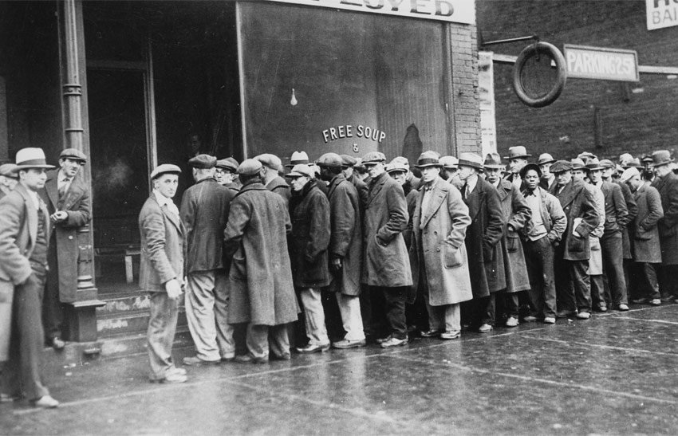
股市崩盤本身並不是大蕭條的全部原因，但它是最醒目的引爆點。崩盤摧毀了消費與投資的信心，企業不敢擴張，家庭不敢花錢，銀行不敢放款，經濟的齒輪一個接一個停下來。到了大蕭條最深的一九三三年，美國失業率達到大約百分之二十五，也就是每四個勞動者就有一個沒有工作，失業人數約一千五百萬。工業生產從高峰跌了將近百分之四十七，國內生產毛額萎縮了三成，物價整體下跌超過四分之一，貨幣供給收縮了三成以上。
銀行的倒閉潮更直接地打中普通人。在存款保險制度建立之前，銀行倒閉意味著存戶的錢就這樣沒了。一九二九年到一九三三年之間，近一萬家銀行停止營業，約每三家就倒一家。許多銀行把存款拿去投資股票或借給炒股的人，股價一崩，貸款收不回來，銀行也就垮了，擠兌更能壓垮原本還撐得住的銀行。
城市裡出現了排隊領麵包的長龍，鄉村裡的農民看著穀物價格跌到連運費都不夠，索性把牛奶倒掉。許多家庭搬進了用廢木料與鐵皮搭成的棚戶區，被稱為胡佛村，名字裡帶著對當時總統胡佛的諷刺。傅利曼與施瓦茨在一九六三年的研究裡指出，貨幣供給的收縮把一場嚴重衰退變成了歷史性災難，稱之為大收縮。
但大蕭條也逼著美國人重新思考，市場與政府之間應該是什麼關係。富蘭克林·羅斯福在一九三三年三月四日就任總統，隨即宣布全國銀行休假，並在三月九日推動緊急銀行法，讓財政部檢查銀行體質，只有健全的銀行才能重新開門。同年六月，國會通過格拉斯—斯蒂格爾法，把商業銀行與投資銀行分開，同時創立聯邦存款保險公司，一開始為每位存戶的存款提供最高兩千五百美元的保障，從此存戶不必再因為害怕銀行倒閉而擠兌。一九三三年通過的證券法要求公司誠實揭露財務資訊，一九三四年的證券交易法則創立了美國證券交易委員會，負責監管市場、打擊內線交易與操縱行為，聯邦準備理事會也獲得了設定保證金成數的權力，後來把初始保證金提高到五成，意味著投資人再也不能只拿一成錢就買下整批股票。
這些改革並沒有立刻讓經濟復甦，但它們改變了遊戲規則：從此以後，存款有了保險，市場有了監管，借錢炒股有了上限。
一九二九年留給後人最重要的一課，不是不要買股票，而是不要用借來的錢，假裝自己很有錢。保證金交易最危險的地方，不在於它會讓你賠錢，而在於它會讓你在賠錢的時候，連選擇的權利都沒有。股價跌一成，你的本金就沒了；再跌下去，你欠的錢還在，股票卻被別人替你賣掉了。這種不對稱，才是槓桿真正的代價。許多人在崩盤之後才明白，風險不是股價會不會跌，而是股價跌的時候，你有沒有能力等它漲回來。
另一課是關於信心的。信心一旦失去，要用十年才能重建。費雪的那句高原論之所以成為笑柄，是因為他說出了當時所有人都想聽的話。市場最危險的時刻，往往不是人人悲觀的時候，而是人人覺得悲觀是不可能的時候。當所有人都相信只會漲，市場就已經沒有買家了，只剩下等著賣出的人。
保證金、槓桿、追漲、害怕錯過，這些詞換了名字還在，只是從華爾街的交易大廳搬到了手機螢幕上。在市場好的時候，不妨問自己：如果明天跌兩成，我還睡得著嗎？如果答案是否定的，那麼今天的部位就已經太大了。敬畏風險不是膽小，而是承認一個簡單的事實：市場可以比你更有耐心，也更殘酷。學會敬畏，是崩盤之後一代美國人用十年才學會的事。
Money & Human Nature
Two days, a fall of twenty-three percent — and then a long winter
In that week in October 1929, the weather in New York was nothing unusual. In the trading hall on Wall Street, the ringing of telephones, the ticking of the ticker tape, and the sound of footsteps blended together, much as they had on every morning of the previous ten years. What was different was that, after those few days, the way Americans talked about money changed for ever. Not because the fall on any single day was especially large, but because people suddenly discovered that what they had believed in all along had been borrowed.
Looking back at 1929 today, it is easy to think of it as a natural disaster: the market crashed, the banks failed, unemployment rose, and the ten-year Great Depression arrived. But to treat the crash as a natural disaster is to misunderstand it in the most unfair way. Before the crash, the United States had enjoyed a full decade of prosperity. Cars, radios, films, and instalment buying had entered ordinary homes, and the Dow Jones Industrial Average had risen from about 64 in August 1921 to 381 on 3 September 1929, an increase of nearly six times. At the end of the Roaring Twenties, almost everyone believed that America had found a road that only went up. The crash did not fall from the sky; it grew out of that belief.
Risk was never an abstract number but a way of life. When a society grows used to living on borrowed money, the bill will arrive sooner or later; no one knows on which day it will come.
America in the 1920s was full of sound: jazz, films, cars, factories turning faster, and instalment buying bringing refrigerators and washing machines into middle-class homes — a new way of life: enjoy first, pay later.
The stock market became the most visible symbol of that way of life: from 1922 to 1929 the Dow Jones rose nearly fivefold, and teachers, shop assistants, and taxi drivers all began to talk about stocks. Buying shares did not require being truly rich, because there was a practice called buying on margin: with about ten percent of one's own money, one could buy a whole parcel of shares, borrowing the remaining ninety percent from a broker, with the shares themselves serving as collateral.
Put down one thousand dollars to buy ten thousand dollars of shares, and a ten percent rise in the price doubles your money. In the middle of October, the Yale economist Irving Fisher said publicly that stock prices had reached what looked like a permanently high plateau. That remark later became one of the most famous misjudgements in economic history, but it is worth remembering not because Fisher was not clever, but because at the time almost the whole of society wanted to believe it was true.
Beneath the prosperity lay two cracks that were not easy to see. First, the prices of many shares had long since run far ahead of the actual earnings of the companies behind them; people were buying not a company's future cash flow but the price the next buyer would be willing to pay. Second, the whole market was built on borrowing. According to figures from the New York Stock Exchange, brokers' loans reached a peak of about 8.5 billion dollars on 1 October 1929, more than the entire amount of currency then in circulation in the United States. Call-money rates rose to eight or nine percent in September, well above what ordinary commercial loans paid, a sign that money was already tight, yet people kept borrowing.
The real turn came on Wednesday, 23 October 1929. In the last hour of trading that day, share prices fell suddenly, and the Dow Jones dropped by about six percent, changing the mood of the market at once. The next day, Thursday, 24 October, when the opening bell rang, sell orders poured in like snowflakes. At the open the market fell by eleven percent, and the ticker tape could not keep up with the volume of trading, falling hours behind, so that investors across the country, looking at stale quotations, had no idea what their shares were actually worth.
That day about 12.9 million shares changed hands, a record for a single day. At noon, some of the most powerful bankers in America gathered at J. P. Morgan and Company at 23 Wall Street to discuss how to steady the market. They sent Richard Whitney, vice president of the Exchange, to the centre of the trading floor to buy a large block of United States Steel at 205 dollars a share, well above the market price. The gesture was like a carefully staged performance, intended to tell everyone that the great bankers were still there and rich men were still buying.
On that day the performance worked. The Dow Jones closed down only 6.38 points, about two percent, and the newspapers the next day wrote that the market had steadied; many people breathed a sigh of relief and thought the worst was over. But that relief came too early. Whitney's purchase bought time, not confidence. What had always supported the market was never the money of a few bankers but the belief of countless ordinary investors that tomorrow would be better. Once that belief began to shake, no single act of support could hold for more than a day.
By Monday the selling pressure returned, and investors preferred to take a loss and get out rather than wait any longer.
On Monday, 28 October, the Dow Jones fell 38.33 points, or 12.82 percent, the largest one-day fall on record at the time. The next day, Tuesday, 29 October, panic reached its height. Within half an hour of the open, three million shares had been traded, and for the whole day about 16.4 million shares changed hands, another volume record that would stand for nearly four decades. The Dow Jones fell a further 30.57 points, or 11.73 percent, so that over the two days it had fallen 23.05 percent in total. From the close on Wednesday, 23 October, to the close on Tuesday, 29 October, in just four trading days, the Dow had fallen by about a quarter.
The damage of those two days lay in the chain reaction it set off: when the price fell far enough, the broker would telephone with a margin call, and those who could not find the money had to watch their shares sold at the lowest point, while those forced sales pushed the price lower still, triggering the next round of calls.
Many people lost a lifetime's savings in those few days. Yet, unlike the image passed down afterwards, the crash did not bring a wave of investors leaping from windows; that story is largely an exaggerated urban legend. What is worth remembering is those who had to spend the next ten years gradually paying off debts and finding work again.
From the peak in September 1929 to the trough in mid-1932, the Dow Jones fell by about eighty-nine percent in total, to around 41. That peak was not regained until 1954, which means that a person who had bought at the peak in 1929 and held on would have had to wait twenty-five years to break even. In those twenty-five years America lived through the whole Great Depression, and the world lived through the Second World War. Behind the numbers lies the youth of an entire generation.
The stock market crash itself was not the whole cause of the Great Depression, but it was its most visible trigger. The crash destroyed confidence in consumption and investment: businesses would not expand, households would not spend, banks would not lend, and the wheels of the economy stopped one by one. In 1933, the deepest year of the Depression, unemployment in the United States reached about twenty-five percent — one worker in four without a job — or about fifteen million people. Industrial production had fallen by nearly forty-seven percent from its peak, gross domestic product had shrunk by thirty percent, prices overall had fallen by more than a quarter, and the money supply had contracted by more than thirty percent.
The wave of bank failures struck ordinary people more directly than the crash itself. Before deposit insurance was created, the failure of a bank meant that depositors simply lost their money. Between 1929 and 1933, close to ten thousand banks suspended operations, roughly one in three. Many banks had invested depositors' money in the stock market or lent large sums to speculators; when prices collapsed, the loans could not be recovered, and a run could bring down a bank that might otherwise have survived.
In the cities, breadlines wound around blocks; in the countryside, farmers watched grain prices fall below the cost of transport and poured away milk. Many families moved into shantytowns built from scrap wood and tin, called Hoovervilles, a name that carried a bitter joke about President Hoover. In their classic study of 1963, Milton Friedman and Anna Schwartz argued that the contraction of the money supply turned a severe recession into a historic catastrophe, which they called the Great Contraction.
But the Depression was not only despair. It forced Americans to rethink the relationship between the market and the government. Franklin D. Roosevelt took office as president on 4 March 1933, at once declared a nationwide bank holiday, and on 9 March pushed through the Emergency Banking Act, allowing the Treasury to examine banks and reopen only those that were sound. In June of the same year, Congress passed the Glass-Steagall Act, separating commercial banking from investment banking and creating the Federal Deposit Insurance Corporation, which at first insured each depositor's savings up to 2,500 dollars, so that depositors no longer needed to rush to withdraw their money for fear that a bank would fail. The Securities Act of 1933 required companies to disclose their finances honestly, and the Securities Exchange Act of 1934 created the United States Securities and Exchange Commission to regulate the market and punish insider trading and manipulation, while the Federal Reserve gained the power to set margin requirements, later raising initial margin to fifty percent, so that investors could no longer buy a whole parcel of shares with only ten percent down.
These reforms did not bring an immediate recovery, but they changed the rules of the game: from then on, deposits were insured, markets were regulated, and borrowing to speculate had a limit.
The most important lesson that 1929 leaves for later generations is not to avoid buying shares, but not to use borrowed money to pretend to be rich. The most dangerous thing about buying on margin is not that it can make you lose money, but that when you lose money it can take away even your right to choose. If the price falls ten percent, your own money is gone; if it falls further, the money you owe is still there, while your shares have been sold for you by someone else. That asymmetry is the true cost of leverage. Many people understood only after the crash that risk is not whether the price will fall, but whether, when it falls, you have the ability to wait for it to come back.
The other lesson is about confidence. Once confidence is lost, it takes ten years to rebuild. Fisher's remark about the plateau became a laughing-stock because he said what everyone at the time wanted to hear. The most dangerous moment in a market is often not when everyone is pessimistic, but when everyone believes that pessimism is impossible. When everyone believes that prices can only rise, there are no buyers left in the market, only people waiting to sell.
Margin, leverage, chasing the rise, and the fear of missing out have only changed their names; they have moved from the trading floor on Wall Street to the screen of a mobile phone. When the market is doing well, ask oneself a simple question: if it fell twenty percent tomorrow, could I still sleep at night? If the answer is no, then today's position is already too large. Respect for risk is not cowardice, but the acknowledgement of a simple fact: the market can be more patient than you, and also more ruthless. Learning that respect was what a generation of Americans spent ten years learning after the crash.
科學與世界
五個星期看見問題，二十年才敢寫成書
一八五九年十一月二十四日，倫敦的書店收到了一本厚厚的書，書名長得幾乎念不完，作者是一個住在肯特郡鄉間、身體一向不好的中年紳士。書商約翰·穆瑞印了一千二百五十冊，結果當天就被訂光了，幾天之後他就著手再版三千冊。一個人等了二十多年才說出口的想法，社會只用了一天就把它搶走，這中間的反差，就是這篇文章要講的故事。查爾斯·達爾文不是在那一天才想出演化論的，他早在二十多年前，乘著一艘測量船繞行世界的時候，就已經看見了那些讓他無法再相信物種永恆不變的景象。他之所以等，是因為他知道自己手裡拿著的不是一個普通的學術假說，而是一把會動搖整個時代世界觀的鑰匙。一個想法從看見到說出，中間隔著的往往不是知識的距離，而是勇氣、證據與時機的距離。達爾文的一生，恰好把這三樣東西的重量都稱給我們看了。
達爾文生於一八〇九年二月十二日，家境寬裕，父親是醫生。他先學醫，學不下去，又轉往劍橋讀神學，真正讓他著迷的始終是野外的石頭、蟲子與鳥。他的老師、植物學教授亨斯洛看出了這一點，在一八三一年把一個機會交到他手上：皇家海軍的測量船小獵犬號要出海，船長羅伯特·菲茨羅伊想找一個同伴，最好懂一點自然史。達爾文當時二十二歲，剛從劍橋畢業，父親起初並不贊成，怕兒子把前途浪費在一趟不知歸期的航行上。達爾文後來在自傳裡說，這趟航行決定了他整個生涯的方向，這句話一點也不誇張。船原定只出海兩年，結果從一八三一年十二月二十七日離開普利茅斯，到一八三六年十月二日回到英國，整整拖了將近五年。將近五年的時間裡，達爾文在陸上待了三年多，在海上漂了一年半，足跡繞過南美洲，經過太平洋，抵達紐西蘭、澳洲與南非，再回到起點。他不是以一個遊客的身分在看風景，而是每天採集、解剖、記錄、寫日記，行李裡裝滿了標本與筆記。船上的生活並不好過，他暈船暈得厲害，常常只能躺在吊床上等風浪過去，但每一次上岸，他都像一個餓了很久的人撲向餐桌。他在阿根廷的岩層裡挖出已經滅絕的巨型哺乳動物化石，在智利親眼看見地震把海岸線抬高，在安地斯山的高處發現海洋生物的化石。這些景象拼在一起，指向一個當時多數人還不願接受的結論：大地不是靜止不動的舞台，生命也不是一成不變的布景，時間本身就是一股力量，足以把一切慢慢改寫。
一八三五年九月，小獵犬號駛入了加拉巴哥群島。這座位於赤道附近的火山群島，距離南美洲大陸約九百多公里，由海底火山噴發形成，島與島之間隔著海水，像是一間間彼此隔絕的實驗室。達爾文在這裡只待了五個星期，走訪了幾個島嶼，卻帶走了往後二十年都消化不完的問題。他注意到，島上的陸龜與雀鳥和南美洲大陸的種類十分相似，卻又不完全相同；更奇怪的是，不同島嶼上的同類生物，彼此之間也有細微的差異。雀鳥的喙就是最著名的例子：吃種子的鳥喙厚而有力，吃蟲的鳥喙細而修長，後人整理出來的種類有十三到十四種，都被稱為達爾文雀。牠們看起來像是一家人，卻又各自長成了不同的模樣，彷彿同一個祖先被分派到不同的島上，各自學會了不同的謀生方式。達爾文當時並沒有立刻想通這件事，他甚至沒有把每一隻雀鳥來自哪座島都標記清楚，這是他後來承認的疏忽。但他把標本帶回了倫敦，交給鳥類學家約翰·古爾德，古爾德告訴他，這些雀鳥確實是關係密切的一群，而群島上的嘲鶇也分屬好幾個不同的種。那一刻，問題才真正成形：如果物種是上帝一次造好、永遠不變的，那麼為什麼同一群祖先的後代，會在相鄰的島嶼上長成不同的樣子？為什麼島上的生物偏偏與最近的大陸最相似，而不是與氣候相似的遠方最相似？答案只能有一個：物種會變，而且變的方向與牠們生活的環境有關。加拉巴哥群島沒有直接把演化論交到達爾文手上，它交給他的是一道解不開的謎，而一個誠實的觀察者，餘生都得為這道謎負責。
回到英國之後，達爾文做的第一件事不是發表驚人之論，而是沉下心來做最枯燥的工作。他整理標本、寫航行誌、結婚、生子、搬到肯特郡的唐恩老屋，一住就是四十年。他在一八三八年讀到馬爾薩斯談人口與糧食的論述，想到生物界同樣存在生存競爭：生下來的永遠比活得下去的多，於是那些在環境中稍佔優勢的個體，更可能留下後代，優勢就這樣一代一代累積下來，這就是他後來所說的自然選擇。這個想法一旦成形，他反而更加謹慎。他花了八年時間研究藤壺，一種看似不起眼的小生物，把牠的分類徹底做了一遍，彷彿要先向同行證明自己是一個一絲不苟的分類學家，才有資格談更大的問題。他在一八四二年寫下草稿，一八四四年又寫成一篇較長的論文，卻都沒有發表，只是鎖在抽屜裡，還留話給妻子，萬一他死了，請人把論文整理出版。為什麼要拖？一部分是身體，他長期腸胃不適、頭痛、嘔吐，寫作只能斷斷續續；一部分是他太清楚反對的聲音會有多大，維多利亞時代的英國，聖經的字面解釋仍是許多人心中的底線，一本書說人類與其他生物有共同祖先，等於直接挑戰創世的敘事；還有一部分是他自己的標準，他要的不是一個靈光一閃的點子，而是一整套能經得起質疑的證據，從地質、化石、胚胎、地理分布到人工選育，他要把每一塊拼圖都找齊。等待在這裡不是拖延，而是一種負責任的緩慢。一個人如果對自己的結論沒有敬畏，他說得越快，錯得也越快。
一八五八年六月十八日，一封信打破了達爾文的緩慢節奏。寫信的人是阿爾弗雷德·羅素·華萊士，一個比達爾文年輕的博物學家，當時正在馬來群島考察。他在信裡附了一篇論文，描述的演化機制與達爾文想了二十年的理論幾乎一模一樣。達爾文收到信時正在悲痛之中，他的小兒子剛因猩紅熱去世，他寫信給朋友萊爾說，自己的優先權恐怕要化為泡影了。但他還是把華萊士的信轉交了出去，沒有藏起來，也沒有搶先發表。萊爾與植物學家胡克想出了一個折衷的辦法：在一八五八年七月一日倫敦林奈學會的會議上，同時宣讀華萊士的論文與達爾文早年的手稿摘要，讓兩人的工作並列呈現。這場宣讀在當時幾乎沒有引起什麼波瀾，學會主席隔年的致詞甚至說那一年沒什麼重大發現。但對達爾文而言，事情已經不一樣了，他不能再慢慢寫那部計畫中的大書，必須先寫一本較短的摘要，把理論的骨架完整交代出來。他花了十三個月寫成《物種起源》，一本約五百頁的書，書的全名是《依據自然選擇或在生存競爭中保留下來的有利種族論物種之起源》。華萊士後來回到英國，對這樣的安排完全接受，終其一生都承認達爾文的首功，也始終是演化論最堅定的捍衛者之一。科學史上有許多優先權之爭演變成難看的官司，這一樁卻因為兩個當事人的品格，留下了一個體面的範例：一個人可以在捍衛自己的工作與尊重對手之間，找到一條不失分寸的路。
《物種起源》出版之後，爭論立刻爆發，但並不是所有人都反對。首版一千二百五十冊當天售罄，說明讀者早已在等這樣一本書。支持者很快站了出來，其中最有名的是湯瑪斯·赫胥黎，他在評論中寫下那句常被引用的話，大意是自己怎麼沒早想到這麼簡單的道理。赫胥黎後來被稱為達爾文的鬥犬，在公開場合一次次為演化論辯護。一八六〇年六月三十日，牛津大學英國科學促進會的會議上，牛津主教塞繆爾·威爾伯福斯當眾質疑演化論，傳說他問赫胥黎，究竟是祖父還是祖母那一邊是猿猴，赫胥黎回應說，寧可認猿猴為祖先，也不認一個以嘲弄為業的人為親戚。這場辯論沒有逐字紀錄，現場的說法眾說紛紜，但它象徵的衝突是真實的：一方是傳統的自然神學，認為物種是設計好的、靜止的；另一方是新的科學，認為自然本身就有足夠的力量，在漫長的時間裡塑造出多樣性。反對者不只有教會，解剖學家理查·歐文也質疑自然選擇能否解釋複雜的適應結構，植物學家對機制的細節也有保留。達爾文自己並沒有到牛津去辯論，他身體不好，也不喜歡公開爭吵，他選擇留在書房裡，一版一版修訂自己的書，生前共出了六版，不斷回應批評、補充證據。真正的接受不是一場辯論贏來的，而是一代代研究者用新的證據慢慢堆出來的。到了十九世紀末，演化發生的事實已少有人懷疑，雖然自然選擇的機制要等到二十世紀遺傳學成熟之後才獲得更完整的解釋。達爾文沒有活到那一天，但他留下的方法已經足夠：提出機制、給出證據、接受檢驗、修正錯誤。
達爾文的故事最容易被誤讀成兩種樣子，一種是天才在島上靈光一閃，一種是怯懦的學者拖了二十年才敢說話，兩種都不對。他在加拉巴哥群島待了五個星期，真正想通問題卻花了二十年；他不是沒有答案，而是不願意用一個不完整的答案去換取一時的掌聲。等待對他而言不是空白，而是一段把觀察變成證據、把直覺變成理論、把個人信念變成公共知識的工作。對我們來說，這個故事的啟發不在於演化論本身，而在於一種面對重大想法的態度：看見異常的時候先記下來，不要急著解釋；有了假說之後先去找反證，不要只收集支持自己的例子；要發表的時候，先問自己證據夠不夠，而不是先問別人會不會鼓掌。我們生活在一個講求快速的時代，想法還沒成形就急著發表，觀點還沒驗證就急著站隊，達爾文恰好站在另一端提醒我們，慢有時候不是落後，而是尊重。一個理論值得被認真對待，不是因為它說得響亮，而是因為它經得起時間的追問。達爾文等了二十年，世界花了一個多世紀才完全接住他的想法，而我們今天之所以能站在這個理解之上，不是因為某一天突然開竅，而是因為有人願意為一個問題，安靜地工作一輩子。
Science & the World
Five weeks to see the question, twenty years to dare the book
On 24 November 1859, bookshops in London received a thick volume with a title so long it was almost impossible to recite, written by a middle-aged gentleman of frail health living in the Kent countryside. The publisher, John Murray, had printed 1,250 copies, and they were all ordered on the very first day; within days he was arranging a second printing of 3,000. A man had waited more than twenty years to say what he thought, and society snatched it up in a single day. That contrast is the story of this essay. Charles Darwin did not think up the theory of evolution on that day. More than twenty years earlier, aboard a surveying ship circling the globe, he had already seen the sights that made it impossible for him to go on believing that species were fixed and unchanging. He waited because he knew that what he held in his hands was not an ordinary academic hypothesis, but a key that would unsettle the entire worldview of his age. Between seeing an idea and speaking it, the distance is seldom a matter of knowledge alone; it is a matter of courage, evidence, and timing. Darwin's life lets us weigh all three.
Darwin was born on 12 February 1809 into a comfortable family; his father was a doctor. He first studied medicine, gave it up, and then went to Cambridge to read theology, but what truly absorbed him was always the stones, insects, and birds of the outdoors. His teacher, the botany professor John Stevens Henslow, saw this, and in 1831 handed him an opportunity: the Royal Navy survey ship HMS Beagle was about to sail, and her captain, Robert FitzRoy, wanted a companion who knew something of natural history. Darwin was twenty-two, newly graduated from Cambridge, and his father at first objected, fearing his son would waste his prospects on a voyage of unknown length. Darwin later wrote in his autobiography that the voyage had determined the whole course of his career, and he was not exaggerating. The ship was meant to be away for two years. Instead, from the day she left Plymouth on 27 December 1831 until her return to England on 2 October 1836, the voyage stretched to nearly five years. Of that time Darwin spent more than three years ashore and about eighteen months at sea, travelling around South America, across the Pacific, to New Zealand, Australia, and South Africa, and back to where he had begun. He was not a tourist admiring the scenery; every day he collected, dissected, recorded, and wrote in his diary, and his luggage filled with specimens and notebooks. Life aboard was hard: he suffered terribly from seasickness and often could only lie in his hammock waiting for the weather to pass. But each time he went ashore he fell upon the land like a hungry man at a table. In Argentina he dug from the rocks the fossils of gigantic extinct mammals; in Chile he saw with his own eyes an earthquake lift the coastline; high in the Andes he found the fossils of sea creatures. Put together, these sights pointed to a conclusion that most people of his time were not yet willing to accept: the earth was not a motionless stage, and life was not an unchanging backdrop. Time itself was a force, and given long enough, it could rewrite everything.
In September 1835 the Beagle sailed into the Galápagos Islands, a volcanic archipelago near the equator, more than nine hundred kilometres from the South American mainland, formed by undersea eruptions, each island separated from the next by water like a set of isolated laboratories. Darwin stayed only five weeks and visited several islands, yet he carried away questions that would take him twenty years to digest. He noticed that the tortoises and birds of the islands closely resembled the kinds found on the South American mainland, but were not quite the same; stranger still, the same kinds of creatures differed slightly from island to island. The finches are the most famous example: birds that ate seeds had thick, powerful beaks, while birds that ate insects had slender ones, and later study counted thirteen or fourteen species, all now known as Darwin's finches. They looked like one family, yet each had grown into a different shape, as though a single ancestor had been sent to different islands and each branch had learned a different way of making a living. Darwin did not grasp all of this at once; he did not even label every finch with the island it came from, an omission he later admitted. But he brought the specimens back to London and gave them to the ornithologist John Gould, who told him that the finches were indeed a closely related group, and that the mockingbirds of the islands belonged to several distinct species. Only then did the question take its true shape: if species were created once by God and never changed, why should the descendants of one ancestral group look different on neighbouring islands? And why should island creatures most resemble those of the nearest mainland, rather than those of some distant place with a similar climate? There could be only one answer: species change, and the direction of their change has to do with the place where they live. The Galápagos did not hand Darwin the theory of evolution directly; it handed him a riddle he could not solve, and an honest observer owes the rest of his life to such a riddle.
After his return to England, the first thing Darwin did was not to publish a startling claim, but to settle down to the dullest work. He sorted specimens, wrote up the voyage, married, had children, and moved to Down House in Kent, where he would live for forty years. In 1838 he read Malthus on population and food, and saw that the same struggle applied to the living world: more are born than can possibly survive, so those individuals with even a slight advantage in their surroundings are more likely to leave offspring, and the advantage accumulates, generation after generation. That was what he would later call natural selection. Once the idea had formed, he became more cautious, not less. He spent eight years studying barnacles, a creature that looks wholly unremarkable, working out their classification in full, as though he first had to prove to his colleagues that he was a meticulous taxonomist before he was entitled to speak of larger things. He wrote a sketch in 1842 and a longer essay in 1844, but published neither; he locked them in a drawer and left instructions to his wife that, should he die, someone should see them into print. Why the delay? In part it was his body: he suffered for years from stomach trouble, headaches, and vomiting, and could write only in fits and starts. In part it was that he knew how loud the opposition would be: in Victorian Britain, a literal reading of the Bible was still the bedrock of many people's convictions, and a book arguing that human beings shared ancestors with other creatures struck directly at the story of Creation. And in part it was his own standard: he did not want a flash of insight, but a whole body of evidence that could withstand challenge, from geology, fossils, embryos, geographical distribution, and artificial selection. He wanted every piece of the puzzle in place. Waiting, in this sense, was not procrastination; it was a responsible kind of slowness. A person who feels no awe before his own conclusion will speak too fast and be wrong too fast.
On 18 June 1858 a letter broke Darwin's slow rhythm. It came from Alfred Russel Wallace, a younger naturalist then working in the Malay Archipelago, and it enclosed an essay describing a mechanism of evolution almost identical to the theory Darwin had pondered for twenty years. Darwin received it while grieving: his young son had just died of scarlet fever. He wrote to his friend Lyell that his priority would probably come to nothing. Yet he still passed Wallace's letter on; he did not hide it, and he did not rush to publish first. Lyell and the botanist Joseph Dalton Hooker devised a compromise: at a meeting of the Linnean Society of London on 1 July 1858, Wallace's essay and extracts from Darwin's earlier manuscripts would be read together, so that the two men's work would stand side by side. The reading caused almost no stir at the time; the Society's president even remarked in the following year's address that the year had produced nothing of great note. But for Darwin everything had changed. He could no longer take his time over the great book he had planned; he had to write a shorter abstract first, setting out the skeleton of the theory in full. It took him thirteen months to write On the Origin of Species, a book of about five hundred pages whose full title was On the Origin of Species by Means of Natural Selection, or the Preservation of Favoured Races in the Struggle for Life. When Wallace later returned to England, he accepted the arrangement completely, acknowledged Darwin's priority for the rest of his life, and remained one of the theory's staunchest defenders. The history of science is full of priority disputes that turned ugly; this one, thanks to the character of both men, left a decent example behind: it is possible to defend one's own work and respect a rival at the same time, without losing one's sense of proportion.
Once On the Origin of Species appeared, argument broke out at once, but not everyone opposed it. That the first printing of 1,250 copies sold out on the day of publication showed that readers had been waiting for such a book. Supporters quickly came forward, the most famous being Thomas Henry Huxley, who wrote in his review, in words often quoted since, that he could not understand how he had failed to think of something so simple himself. Huxley would later be called Darwin's bulldog, defending evolution again and again in public. On 30 June 1860, at a meeting of the British Association for the Advancement of Science in Oxford, Samuel Wilberforce, Bishop of Oxford, challenged the theory in public; legend has it that he asked Huxley whether it was through his grandfather or his grandmother that he claimed descent from an ape, and that Huxley replied he would rather claim an ape for an ancestor than a man who made mockery his trade. No verbatim record of the exchange survives, and eyewitness accounts differ, but the conflict it symbolised was real: on one side stood traditional natural theology, which held that species were designed and fixed; on the other, a new science which held that nature itself, given enough time, had the power to shape diversity. The opposition did not come only from the Church. The anatomist Richard Owen doubted whether natural selection could explain complex adaptations, and botanists had their own reservations about the details of the mechanism. Darwin himself did not go to Oxford to argue. His health was poor and he disliked public quarrels; he chose instead to stay in his study, revising his book edition by edition — six editions appeared in his lifetime — answering criticisms and adding evidence as he went. True acceptance was not won in a single debate; it was built up, generation after generation, as new evidence accumulated. By the end of the nineteenth century, few doubted that evolution had happened, although the mechanism of natural selection had to wait for twentieth-century genetics before it received a fuller explanation. Darwin did not live to see that day, but the method he left behind was enough: propose a mechanism, present the evidence, submit it to testing, and correct your mistakes.
Darwin's story is easily misread in two ways: as a genius struck by sudden inspiration on an island, or as a timid scholar who took twenty years to find his voice. Neither is true. He spent five weeks in the Galápagos and twenty years thinking the problem through; it was not that he had no answer, but that he refused to trade an incomplete answer for momentary applause. For him, waiting was not empty time; it was the work of turning observation into evidence, intuition into theory, and private conviction into public knowledge. For us, the lesson lies not in the theory of evolution itself, but in an attitude towards important ideas: when you see something anomalous, write it down first and do not rush to explain it; once you have a hypothesis, go looking for evidence against it, not only for evidence in its favour; and when you are ready to publish, ask first whether the evidence is enough, not whether the audience will applaud. We live in an age that prizes speed, where ideas are published before they have taken shape and positions are taken before they have been tested. Darwin stands at the opposite end, reminding us that slowness is sometimes not backwardness but respect. A theory deserves to be taken seriously not because it is stated loudly, but because it survives the questioning of time. Darwin waited twenty years, and the world took more than a century to fully receive his idea. The reason we can stand on that understanding today is not that someone suddenly saw the light one day, but that someone was willing to work quietly at a single question for a lifetime.
科學與世界
一隻盤子改變了醫學，卻等了十七年才被接住
在現代醫學之前，一個小傷口化膿、一場肺炎、一次產後感染，都可能奪走一條年輕的生命，外科醫生擋不住傷口裡悄悄繁殖的細菌。青黴素改變了這一切，但它的故事不是天才靈光一閃、世界從此得救的童話。它的起點是一個被遺忘在實驗室角落的培養皿，中間隔著十多年無人問津的冷清，後面站著一支在戰火中咬牙提純的牛津團隊，再後面是橫渡大西洋的合作與一整個國家的工業動員。從一九二八年到一九四五年，整整十七年，一個發現要走完從現象到藥物的全部路程，需要的不只是一個人的眼睛，還需要許多人的手、許多人的耐心，以及一個願意為它付代價的時代。這篇文章要講的，正是這十七年裡發生的事，以及它留給我們的提醒：科學的突破很少屬於一個人，它屬於一場接力。
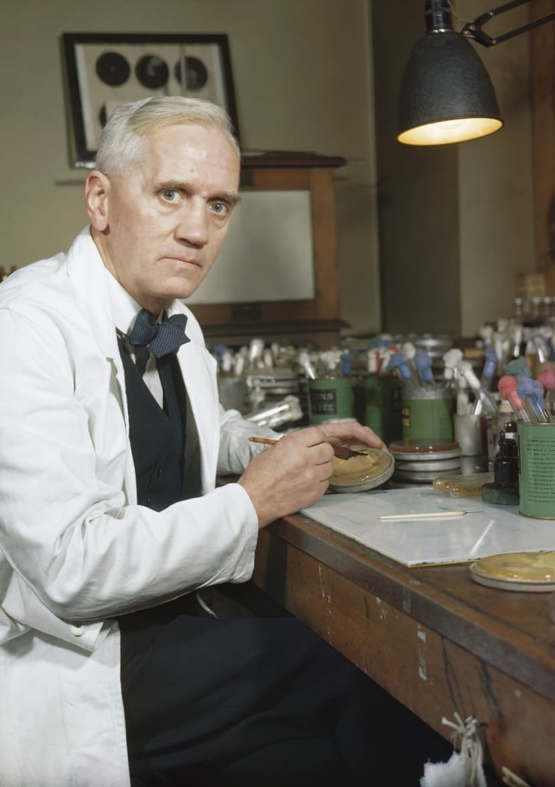
一九二八年九月，倫敦聖瑪麗醫院的細菌學家亞歷山大·弗萊明從假期回來，走進實驗室整理桌上堆積的培養皿，其中一隻培養著葡萄球菌，被他留在恆溫箱邊，原本打算丟棄。他拿起來正要倒掉，卻停住了：培養皿的一角長出了一叢綠色的黴菌，而在黴菌周圍，葡萄球菌的菌落消失了，留下了一圈乾淨的空白，細菌彷彿被一道無形的牆擋在外面。換作別人，這隻盤子多半就進了垃圾桶，一個被污染的樣本而已，丟掉重做就是了。弗萊明沒有丟，他把盤子放回顯微鏡下，仔細看了一遍又一遍。他很快確認，這種黴菌屬於青黴菌屬，後來被鑑定為點青黴菌，而它分泌出來的某種物質能夠抑制甚至殺死葡萄球菌。他把這種物質命名為青黴素，寫成論文，在一九二九年六月發表於《英國實驗病理學期刊》。論文裡他記錄了青黴素對多種革蘭氏陽性菌有效，包括引起猩紅熱、肺炎、淋病、腦膜炎與白喉的細菌，而且對動物組織似乎沒有明顯的毒性。一種黴菌分泌物能有選擇地殺死細菌而不傷害人體，正是醫學尋找已久的東西。弗萊明請了好幾位化學家幫忙，想把青黴素從培養液裡提純出來，但都失敗了，這種物質太不穩定，含量又太低，稍一處理就失效。他最終只能把菌株一代代培養下去，保存在實驗室裡，等一個不知道會不會來的人。
弗萊明的論文發表之後，幾乎沒有引起什麼回響。科學界不是反對它，而是根本沒有把它當作一回事。在當時的眼光裡，一種連提純都做不到的黴菌汁液算不上藥物，頂多是實驗室裡一件有趣的小玩意。一九三〇年代磺胺類藥物的成功，更讓許多人相信合成化學才是對抗感染的正途，天然黴菌的分泌物看起來又髒又不可靠。弗萊明本人也沒有繼續窮追下去，他回到自己熟悉的細菌學研究，把青黴素擱在一邊，只是不時把菌株拿出來養一養。這十年常常被寫成一段空白，彷彿什麼都沒發生，其實它恰恰說明了一件事：一個發現的價值，不是由發現的那一刻決定的，而是由後面有沒有人願意接手、把它變成可用的東西決定的。很多偉大的觀察都死在這個關口，不是因為它們錯了，而是因為它們來得太早，早到當時的技術、資金與注意力都還接不住。青黴素沒有死，只是睡著了，在弗萊明的實驗室裡等了十多年。菌株被保存下來本身就是一種遠見，弗萊明沒有申請專利，也沒有把菌株藏起來，牛津的人找上門時，他立刻把菌株交了出去。一個發現能不能走遠，有時候取決於發現者願不願意放手。
接手的人出現在牛津大學的威廉·鄧恩病理學院。一九三〇年代末，澳洲病理學家霍華德·弗洛里主持這間學院，他找來了德國出生的生物化學家恩斯特·錢恩，兩人決定系統地研究天然的抗菌物質。錢恩在一堆舊文獻裡翻到了弗萊明一九二九年的論文，覺得青黴素值得再試一次。一九三九年，他們組起一支小團隊，錢恩負責化學分析與提純，弗洛里負責生物實驗，諾曼·希特利負責培養與檢測，愛德華·亞伯拉罕等人也加入其中。他們面對的困難和弗萊明當年一樣：青黴素在培養液裡含量極低，性質極不穩定，提純又慢又笨重。希特利想出辦法，用控制酸鹼值、低溫與反覆萃取把青黴素一點一點濃縮出來，還設計了靈敏的檢測方法。實驗室裡很快堆滿了培養盤，研究人員像工廠工人一樣輪班，只為了湊出夠做動物實驗的一點點藥。一九四〇年三月，錢恩先給兩隻小鼠注射了濃縮的提取物，確認它沒有明顯毒性。同年五月二十五日，關鍵的一天來了，團隊給八隻小鼠注射了致命劑量的溶血性鏈球菌，其中四隻接受青黴素治療，另外四隻不治療。十六個半小時之後，接受治療的四隻小鼠活了下來，沒有治療的四隻全死了。同年八月二十四日，團隊把結果發表在《柳葉刀》上，標題直白，內容紮實。從一隻被污染的培養皿到一群被治癒的小鼠，中間隔了十二年，隔著的不是運氣，而是提純技術、檢測方法與一支願意把實驗室變成工廠的團隊。
動物實驗成功之後，下一步是人體，但人體試驗需要的不只是勇氣，還需要足夠的藥量，而藥量正是牛津團隊最缺的東西。一九四一年二月十二日，第一個病人出現了，他是四十三歲的警察亞伯特·亞歷山大，在牛津的拉德克利夫醫院接受治療。關於他如何受傷，流傳最廣的說法是他在修剪玫瑰時被刺劃傷了臉，傷口感染後惡化成敗血症；但後來的調查與家屬證詞指出，他更可能是在一九四〇年十一月三十日南安普敦空襲期間支援勤務時被炸傷，臉部撕裂後感染。玫瑰的故事流傳了幾十年，戰火中的傷口卻更接近真相，動人的傳說未必是事實。無論傷口從何而來，亞歷山大的病情在當時已經無藥可救，臉上與身上長滿膿瘡，連一隻眼睛都失去了。弗洛里團隊把手頭僅有的青黴素注射給他，起初的劑量只有二百毫克，之後每三小時補充一次。二十四小時之內，他的病情明顯好轉，體溫下降，精神恢復，團隊第一次親眼看見青黴素在人體內發揮作用。但好景只維持了五天，藥用完了，研究人員甚至從他的尿液裡回收青黴素再注射回去，還是撐不下去，他在三月中旬去世，年僅四十三歲。亞歷山大的死不是青黴素無效的證明，恰恰相反，它證明了青黴素有效，只是量遠遠不夠。一個人好轉了五天又惡化，這個結果比任何論文都更有說服力：問題已經不是藥有沒有效，而是能不能生產得夠多、夠快。團隊從這次失敗裡學到的，比從成功裡學到的更多。科學的進步常常不是直線上升，而是被一次心痛的失敗推著往前走。
英國在戰時根本沒有能力大規模生產青黴素，工廠要應付轟炸，原料與人力都捉襟見肘。一九四一年，弗洛里與希特利帶著菌株飛往美國，尋求工業化的出路。他們先後接觸洛克菲勒研究院、美國農業部與幾家大藥廠，最後在伊利諾州皮奧里亞的農業部北方研究實驗室找到了突破口。那裡的研究人員發現，用玉米加工的副產品玉米漿培養青黴菌，產量可以大幅提升，原先每毫升只有四單位的產量，提高到了四十單位，足足十倍。接著又出現了一個近乎傳奇的插曲，一位研究人員從皮奧里亞市場帶回一顆發霉的哈密瓜，上面的青黴菌株比弗萊明的原始菌株產量高得多，成為後來工業化生產的親本菌株。從實驗室的小盤子到深槽發酵罐，從英國的牛津到美國的中西部，青黴素的生產一步步從手工走向工業。一九四二年三月十四日，美國康乃狄克州的安妮·米勒因鏈球菌敗血症垂危，成為美國第一位被青黴素治癒的病人，她的劑量據說用掉了當時全美國將近一半的青黴素存量。一九四四年六月六日，盟軍登陸諾曼第，隨軍攜帶的青黴素據記載已備妥二百三十萬劑，傷口感染這個戰場上歷來的殺手，第一次被大規模壓制下來。同一時期，輝瑞等藥廠把發酵罐越做越大，青黴素從稀缺的實驗室產物變成了可以成批供應的藥物。戰爭是殘酷的，但它也以一種不容拖延的方式，把一個醫學發現逼成了工業現實。沒有戰爭的急迫，量產也許還要再等十年；但也正因為戰爭，青黴素最先到達的，是戰場而不是每一個普通人的藥櫃。
一九四五年，諾貝爾生理學或醫學獎頒給了弗萊明、弗洛里與錢恩三人，表彰青黴素的發現及其治療效果。希特利沒有獲獎，但沒有人能否認他的提純與檢測工作是整個故事裡不可或缺的一環。這個獎項的分法本身就說明了青黴素的真相：它從來不是一個人的功勞，而是一場接力。弗萊明看見了現象，弗洛里與錢恩把它變成藥物，希特利與亞伯拉罕讓它可以被測量與提純，皮奧里亞的研究人員與美國藥廠讓它可以被大量生產，亞歷山大與米勒則以自己的身體證明了它在人體內真的有效。把其中任何一棒拿掉，故事都會斷在半路。我們習慣把科學寫成天才的傳記，喜歡一個名字、一張照片、一個靈光乍現的瞬間，但青黴素提醒我們，真正改變世界的，往往是那些名字沒有出現在獎牌上的人，是那些在實驗室裡輪班培養黴菌、在戰火中回收藥物、在市場上撿回一顆爛哈密瓜的人。對今天的讀者來說，這個故事有兩層啟發。第一層是關於觀察：弗萊明之所以能看見別人看不見的東西，不是因為他特別幸運，而是因為他懂得細菌，知道一圈空白意味著什麼，幸運只會眷顧有準備的眼睛。第二層是關於放手與接手：一個發現要活下去，發現者要願意交出菌株，接手者要願意承認前人的工作，而整個社會要願意為還沒有回報的研究付代價。青黴素從一隻被遺忘的培養皿走到諾曼第的海灘，花了十七年，這十七年裡沒有一步是多餘的。今天我們面對的許多難題，從新的傳染病到抗藥性細菌，同樣需要這樣的接力。問題不在於我們缺不缺天才，而在於我們有沒有耐心，讓一個小小的、看起來微不足道的觀察，被一棒一棒地傳下去，直到它變成能救人的東西。
Science & the World
One dish changed medicine — and waited seventeen years to be picked up
Before modern medicine, a small cut that turned septic, a bout of pneumonia, or an infection after childbirth could take a young life, and a surgeon could do nothing to stop the bacteria quietly multiplying in a wound. Penicillin changed all of that, but its story is not a fairy tale in which a genius has a flash of inspiration one morning and the world is saved from then on. It began with a petri dish forgotten in the corner of a laboratory, passed through more than a decade of indifference, then through a team in Oxford that purified the drug under the pressure of war, and finally through cooperation across the Atlantic and the industrial mobilisation of an entire country. From 1928 to 1945 — seventeen years in all — a discovery needed to travel the whole road from phenomenon to medicine, and that journey required not only one person's eyes, but many people's hands, much patience, and an age willing to pay the price. This essay tells what happened in those seventeen years, and what it leaves us to remember: a scientific breakthrough seldom belongs to one person; it belongs to a relay.
In September 1928, Alexander Fleming, a bacteriologist at St Mary's Hospital in London, came back from holiday and walked into his laboratory to tidy the pile of petri dishes on his bench. One of them, growing staphylococci, had been left beside the incubator and was meant to be thrown away. He picked it up, about to tip it out, and stopped. In one corner a tuft of green mould had grown, and around the mould the colonies of staphylococci had vanished, leaving a clean, empty ring, as though the bacteria had been held back by an invisible wall. Most people would have thrown the dish away — a contaminated sample, nothing more, to be discarded and remade. Fleming did not throw it away. He put the dish back under the microscope and looked at it again and again. He soon established that the mould belonged to the genus Penicillium, later identified as Penicillium notatum, and that it secreted some substance able to check or kill staphylococci. He named the substance penicillin and published his paper in June 1929 in the British Journal of Experimental Pathology. There he recorded that penicillin was active against a range of Gram-positive bacteria, including those that cause scarlet fever, pneumonia, gonorrhoea, meningitis, and diphtheria, and that it seemed to show no obvious toxicity to animal tissue. That was no small observation: a secretion from a mould that could kill bacteria selectively without harming the human body was exactly what medicine had long been looking for. Fleming asked several chemists to help him purify penicillin from the mould broth, but they all failed. The substance was too unstable and present in too small a quantity; the slightest handling destroyed it. In the end he could only keep the strain alive, culturing it generation after generation in his laboratory, waiting for someone he did not know would ever come.
After Fleming's paper appeared, it drew almost no response. The scientific world did not oppose it; it simply did not take it seriously. In the eyes of medicine at the time, a mould juice that could not even be purified was not a drug, only a curiosity in a laboratory. What was more, chemical therapy in the 1930s was being drawn in another direction: the success of the sulfa drugs convinced many people that synthetic chemistry was the proper road against infection, and a natural secretion from a mould looked dirty and unreliable. Fleming himself did not pursue it relentlessly either; he went back to the bacteriology he knew best and set penicillin aside, taking the strain out now and then to keep it alive. Those ten years are often written up as a blank, as though nothing happened, but they show something important: the value of a discovery is not fixed at the moment it is made, but by whether anyone afterwards is willing to take it up and turn it into something usable. Many great observations die at exactly this point, not because they are wrong, but because they arrive too early, before the technique, the funding, and the attention of the time are ready to receive them. Penicillin did not die; it only slept, waiting in Fleming's laboratory for more than a decade. That the strain was preserved at all was itself a kind of foresight. Fleming applied for no patent and did not hide the strain away; when the people from Oxford came to him later, he handed it over at once. Whether a discovery travels far sometimes depends on whether its discoverer is willing to let it go.
The people who took it up appeared at the Sir William Dunn School of Pathology at Oxford. In the late 1930s, the Australian pathologist Howard Florey ran the school, and he had brought in Ernst Chain, a biochemist born in Germany, to work with him. Together they decided to study natural antibacterial substances systematically. Chain came across Fleming's 1929 paper in a pile of old literature and thought penicillin worth another try. In 1939 they assembled a small team: Chain took charge of chemical analysis and purification, Florey of the biological experiments, Norman Heatley of culturing and assay, and Edward Abraham and others joined them. The difficulties they faced were the same ones Fleming had met: penicillin was present in the broth in minute amounts, it was extremely unstable, and purification was slow and clumsy. Heatley found a way, controlling the acidity, keeping the extract cold, and repeating the extraction until the penicillin was concentrated little by little, and he devised a sensitive assay to measure the activity of each batch. The laboratory soon filled with culture dishes, and the researchers worked in shifts like factory hands, simply to gather enough drug for an animal experiment. In March 1940 Chain injected two mice with the concentrated extract and confirmed that it showed no obvious toxicity. On 25 May 1940 came the decisive day: the team injected eight mice with a lethal dose of haemolytic streptococci, and gave penicillin to four of them while leaving the other four untreated. Sixteen and a half hours later the four treated mice were alive, and the four untreated mice were all dead. On 24 August 1940 the team published the results in The Lancet, in plain language and with solid evidence. Between a contaminated petri dish and a group of cured mice lay twelve years, and what filled those years was not luck, but purification technique, assay methods, and a team willing to turn a laboratory into a factory.
Once the animal experiments had succeeded, the next step was a human being, but a human trial needed more than courage; it needed enough drug, and drug was exactly what the Oxford team lacked. On 12 February 1941 the first patient appeared: Albert Alexander, a forty-three-year-old police officer, under treatment at the Radcliffe Infirmary in Oxford. The best-known account of how he was injured says that he scratched his face on a rose thorn while pruning roses, and the wound became infected and developed into septicaemia; but later investigation and the testimony of his family indicate that he was more likely injured on 30 November 1940, when he was on support duty in Southampton during an air raid and his face was torn by the blast. The rose story circulated for decades, yet the wound from the war is closer to the truth, and the detail itself is a reminder: a moving legend is not necessarily a fact, and facts often emerge only when the people concerned and the records finally speak. Whatever the origin of the wound, Alexander's condition was by then beyond saving by any known means: abscesses covered his face and body, and he had already lost one eye. Florey's team injected him with what little penicillin they had, an initial dose of two hundred milligrams, followed by further doses every three hours. Within twenty-four hours his condition improved markedly; his temperature fell and his spirits recovered, and the team saw for the first time with their own eyes that penicillin worked inside a human body. But the improvement lasted only five days. The drug ran out, and although the researchers recovered penicillin from his urine and injected it again, it was not enough, and he died in mid-March, aged forty-three. Alexander's death was not proof that penicillin failed; quite the opposite, it proved that penicillin worked, only that there was far too little of it. A man who improves for five days and then relapses makes a more persuasive case than any paper: the question was no longer whether the drug worked, but whether it could be produced in enough quantity, fast enough. The team learned more from this painful failure than from any success. Progress in science is often not a straight line upwards, but a push forward from a failure that hurts.
Britain, at war, had no capacity to mass-produce penicillin; its factories were coping with bombing, and raw materials and labour were scarce. In 1941 Florey and Heatley flew to the United States with the strain, looking for a way to industrialise it. They approached the Rockefeller Institute, the United States Department of Agriculture, and several large drug companies, and finally found their breakthrough at the Department of Agriculture's Northern Regional Research Laboratory in Peoria, Illinois. Researchers there discovered that growing the mould in corn steep liquor, a by-product of corn processing, raised yields greatly: output rose from four units per millilitre to forty, a full tenfold increase. Then came an episode that sounds almost like legend: a researcher brought back from a Peoria market a mouldy cantaloupe, and the strain of mould growing on it produced far more penicillin than Fleming's original strain, becoming the parent strain for industrial production. From small dishes in a laboratory to deep fermentation tanks, from Oxford to the American Midwest, the manufacture of penicillin moved step by step from handwork to industry. On 14 March 1942, Anne Miller of Connecticut, dying of streptococcal septicaemia, became the first patient in the United States to be cured by penicillin, and her dose was said to have used up nearly half of all the penicillin then in the country. On 6 June 1944, when the Allies landed in Normandy, the penicillin carried with the troops had, by the records, been prepared in the amount of 2.3 million doses, and wound infection, the historic killer on the battlefield, was held back on a large scale for the first time. In the same period, companies such as Pfizer built ever larger fermenters, and penicillin changed from a scarce laboratory product into a drug that could be supplied in batches. War was cruel, but it also forced a medical discovery into industrial reality with an urgency that allowed no delay. Without the pressure of war, mass production might have waited another ten years; yet precisely because of the war, penicillin reached the battlefield before it reached every ordinary person's medicine cabinet.
In 1945 the Nobel Prize in Physiology or Medicine was awarded to Fleming, Florey, and Chain, for the discovery of penicillin and its curative effect in various infectious diseases. Heatley received no prize, yet no one can deny that his work on purification and assay was indispensable to the whole story. The very division of the award explains the truth of penicillin: it was never one person's achievement, but a relay. Fleming saw the phenomenon; Florey and Chain turned it into a medicine; Heatley and Abraham made it measurable and purifiable; the researchers at Peoria and the American drug companies made it producible in quantity; and Alexander and Miller proved with their own bodies that it truly worked in human beings. Take away any one leg of the relay and the story breaks off halfway. We are used to writing science as the biography of geniuses, fond of a single name, a single photograph, a single flash of insight, but penicillin reminds us that what truly changes the world is often the people whose names never appear on a medal: those who took shifts culturing mould in a laboratory, who recovered the drug from a patient's urine in wartime, who brought home a rotten cantaloupe from a market. For readers today, the story carries two lessons. The first is about observation: the reason Fleming could see what others could not was not that he was especially lucky, but that he understood bacteria and knew what a clear ring meant; luck favours only a prepared eye. The second is about letting go and taking up: for a discovery to live, its discoverer must be willing to hand over the strain, those who take it up must be willing to acknowledge the work of those before them, and society as a whole must be willing to pay for research that has not yet paid anything back. Penicillin took seventeen years to travel from a forgotten petri dish to the beaches of Normandy, and not one step of those seventeen years was wasted. Many of the problems we face today, from new infectious diseases to drug-resistant bacteria, need the same kind of relay. The question is not whether we lack geniuses, but whether we have the patience to let a small, seemingly insignificant observation be passed along, hand to hand, until it becomes something that can save a life.
人與社會
一個商人走進戰場，中立從此成為一種發明
一八五九年六月二十四日傍晚，三十一歲的日內瓦商人亨利・杜南抵達義大利北部的索爾費里諾附近。他不是來打仗的，他是來見法國皇帝拿破崙三世，為自己在阿爾及利亞的事業爭取土地與水權。那天白天，法國與薩丁王國的聯軍和奧地利軍隊在這裡打了一仗，戰鬥只持續了約十二小時，留下的卻是將近四萬名死傷者。杜南原本帶著商業計畫與一本讚美皇帝的書而來，結果他看見的，是一片沒有人照料的戰場。
這個開場值得停下來想一想。歷史上許多改變不是由將軍或國王發起的，而是由一個走錯地方、卻不肯轉身離開的普通人發起的。杜南沒有受過醫學訓練，沒有軍銜，也沒有任何官方身分。他有的，只是一雙看見了就無法假裝沒看見的眼睛。紅十字會的故事，正是從這種不肯視而不見開始的。
戰鬥結束後，數以千計的傷兵被送往鄰近的小鎮卡斯蒂廖內。當地根本沒有足夠的醫療設施，教堂成了臨時醫院。杜南在鎮上的大教堂裡組織救援，他自掏腰包買來物資，動員當地居民，特別是婦女，替傷兵清洗傷口、送水、寫信回家、陪伴臨終的人。
在那裡，語言成了一種救命的工具。當地人對奧地利傷兵懷有敵意，不願意照料敵軍的士兵。杜南和卡斯蒂廖內的婦女們不斷重複一句話：眾人皆兄弟。這句話不是口號，而是一種現場的判斷，傷兵一旦倒下，就不再是敵人，而是一個人。法國兵、義大利兵、奧地利兵躺在同一間教堂裡，接受同一雙手照料。這一點，在當時是極不尋常的。
杜南還做了一件看似微小、實則關鍵的事。他設法讓被法軍俘虜的奧地利軍醫獲釋，讓他們回去照顧自己的傷兵。這個舉動背後的想法很簡單，救人的人不應該被當成戰俘，醫療本身應該站在戰爭之外。後來寫進條約裡的中立原則，在這裡已經有了雛形，只是當時還沒有人替它取名字。
我們很容易把這段故事浪漫化，想像杜南是一位天生的聖人。但更誠實的看法是，他是一個在現場被迫做出選擇的人。他可以繼續趕路去見皇帝，也可以留下來。而他留下來了。許多時候，道德不是一種抽象的信念，而是在具體時刻裡，你願不願意把手弄髒。
回到日內瓦之後，杜南把經歷寫成一本書，一八六二年出版的《索爾費里諾回憶錄》。這本書自費印了一千六百冊，寄給歐洲各國的政治與軍事領袖。書的前半部是戰場的描寫，後半部才是真正改變歷史的部分。杜南在書末提出了兩個具體的提議。
第一個提議，是在每個國家成立志願救護社，平時就訓練志願者、準備物資，戰時到戰場上照顧各方的傷兵。這個想法顛覆了當時的常識，救護不應該等戰爭爆發才臨時拼湊，而應該像軍隊一樣，平時就有準備。和平時期的準備，決定了戰爭時期的生死。
第二個提議，是由各國簽署一項國際條約，承認傷兵、軍醫與救護志願者受到保護。這一點更為大膽，因為它要求國家自願限制自己在戰場上的權力。一個國家要同意，即使是敵軍的傷兵，也應該得到照料；即使是救護人員，也不能被攻擊。這不是慈善，而是法律。杜南明白，光靠善心不夠，善心會累、會被遺忘、會被戰爭的邏輯壓垮，只有寫成條約、變成各國共同遵守的規則，救護才有保障。
這兩個提議的關係值得注意。第一個是組織，第二個是法律。沒有組織，法律只是一紙空文；沒有法律，組織在戰場上隨時可能被當成敵人。杜南同時提出兩者，顯示他不只是一個目擊者，更是一個制度的設計者。他看見的問題不是某一次戰役的慘狀，而是整個戰爭救護體制的缺席。
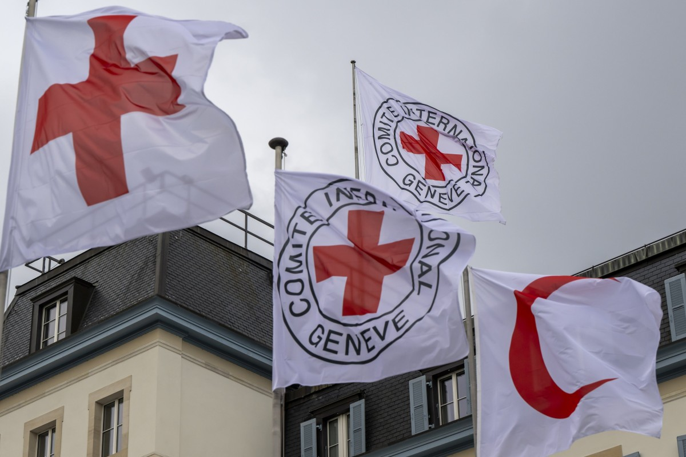
杜南的書引起了日內瓦公益協會主席、律師古斯塔夫・莫瓦尼埃的注意。一八六三年二月，公益協會成立了一個五人委員會，成員包括杜南、莫瓦尼埃、瑞士陸軍將領紀堯姆・亨利・杜福爾，以及兩位醫生路易・阿皮亞與泰奧多爾・莫努瓦。這個委員會在二月十七日首次開會，後來發展為紅十字國際委員會。
五個人的組合本身就說明了這件事的性質。它不是一個人的獨角戲，而是一次分工。杜南提供親身經歷與倡議的能量，莫瓦尼埃負責組織與法律推動，杜福爾以軍事聲望取得政府的信任，兩位醫生則帶來戰地醫療的實務知識。把紅十字會說成杜南一個人的功勞，既不公平，也不符合事實。真正的轉折，往往發生在一個有故事的人，遇上一群懂得把故事變成制度的人。
同年十月二十六日至二十九日，委員會在日內瓦召開國際會議，十六個國家派代表參加。會議通過決議，呼籲各國成立救護團體，並採用一個共同的標誌，白底紅十字，也就是瑞士國旗紅底白十字的反色。標誌的意義不在於好看，而在於辨識，在混亂的戰場上，士兵必須一眼認出，哪些人、哪些設施是中立的救護力量，不能攻擊。一個符號之所以有力量，是因為背後有一群國家共同承諾尊重它。
隔年，瑞士政府邀請各國政府出席外交會議。一八六四年八月二十二日，十二個國家簽署了第一份《日內瓦公約》，全名是《改善戰地武裝部隊傷者病者境遇之日內瓦公約》。這份公約只有十條，卻確立了一個劃時代的原則，戰場上的傷兵不分國籍都應得到照料，軍醫、救護人員與醫院處於中立地位，應受保護。戰爭從此有了一條底線，即使在互相殘殺的時候，也有一些事不能做。
故事到這裡，常常就被講完了。但杜南的後半生，恰恰是這個故事最值得深思的部分。他的商業事業失敗，逐漸離開日內瓦的公共生活，晚年一度貧困、被人遺忘。紅十字會與日內瓦公約繼續壯大，成為跨國制度，而提出最初構想的人，卻沒有分享到這份榮耀。
直到一九〇一年，第一屆諾貝爾和平獎頒給杜南，與法國和平主義者弗雷德里克・帕西共同獲獎，他才重新回到公眾視野。杜南在一九一〇年去世，享年八十二歲。他的一生提醒我們，倡議者與制度的命運並不相同。制度一旦建立，就有了自己的生命，會被後人接手、修改、擴大；而倡議者本人，可能在制度成功之後，反而被留在原地。
這並不是一個悲傷的結尾，而是一個誠實的提醒。做對的事，並不保證得到回報。杜南在卡斯蒂廖內沒有想過諾貝爾獎，在寫書的時候也沒有想過自己的名字會被寫進歷史。他想的，只是眼前那些沒有人照料的傷兵。而正是這種不計回報的專注，讓他的提議有了說服力。一個人如果一邊救人、一邊計算自己能得到什麼，旁人是看得出來的。
回頭看索爾費里諾之後的五年，從一八五九年到一八六四年，人類發明了一件以前不存在的東西，中立的救護空間。在此之前，戰場上沒有中立地帶，傷兵的命運取決於他穿哪一邊的軍服。從此以後，至少在原則上，倒下的人有權利得到照料，照料他的人有權利不被攻擊。
中立不是冷漠，也不是置身事外。紅十字會的中立，是有立場的中立，它的立場就是人的生命優先於國籍與陣營。這一點在今天仍然不容易做到。每一次戰爭爆發，總有人質疑，為什麼要救敵人，為什麼不能選邊站。索爾費里諾的答案很簡單，因為傷兵已經不是敵人了，他只是一個受傷的人。
中立之所以能寫進條約，還有一個現實的原因，它對交戰雙方都有好處。任何一方的士兵都可能在下一場戰鬥中倒下，任何一方都需要有人照料自己的傷兵。保護救護人員，等於保護自己人未來的生路。杜南的提議之所以能被各國接受，不只是因為它仁慈，更是因為它符合一種樸素的互惠，今天你放過我的軍醫，明天我也會放過你的。這種互惠不是算計，而是人類在戰爭的極端處境裡，為自己留下的最後一點理性。法律的文字會隨時代修訂，紅十字之後又有了紅新月、紅水晶等標誌，公約也從一八六四年的十條擴充為一九四九年的四份公約，但核心沒有變，戰爭可以奪走很多東西，唯獨不能奪走救人的權利。
杜南的故事留給我們的，不只是一段歷史，更是一個提問。當你親眼看見苦難的時候，你會怎麼做？是轉身離開，說這不關我的事，還是留下來，做一點你能力範圍內的事？大多數人不會有機會創立一個國際組織，也不需要。但每一個人都有機會，在自己的位置上，拒絕把受苦的人分成我們和他們。紅十字會從一間鄉村教堂開始，不是因為那間教堂特別大，而是因為那裡有人先說了一句，眾人皆兄弟，然後真的照那句話去做了。
People & Society
A businessman walked into a battlefield, and neutrality became an invention
On the evening of 24 June 1859, Henri Dunant, a thirty-one-year-old businessman from Geneva, arrived near Solferino in northern Italy. He had not come to fight. He had come to meet Emperor Napoleon III of France to seek land and water rights for his business in Algeria. Earlier that day, French and Sardinian forces had fought the Austrian army here. The battle lasted only about twelve hours, yet it left nearly forty thousand men dead or wounded. Dunant had arrived carrying a business plan and a book in praise of the emperor. What he found instead was a battlefield where no one was caring for the wounded.
This opening is worth pausing over. Many great changes in history were not started by generals or kings, but by an ordinary person who arrived in the wrong place and refused to turn away. Dunant had no medical training, no military rank, and no official position. All he had was a pair of eyes that, having seen suffering, could not pretend not to have seen it. The story of the Red Cross begins with that refusal to look away.
After the battle, thousands of wounded soldiers were carried to the nearby town of Castiglione delle Stiviere. The town had almost no medical facilities, so its church became a makeshift hospital. In the Chiesa Maggiore, the town's main church, Dunant organised relief. He bought supplies with his own money and mobilised local people, above all women, to wash wounds, bring water, write letters home, and sit with the dying.
Here, language itself became a means of rescue. Local people felt hostility towards wounded Austrian soldiers and were unwilling to care for men from the enemy army. Dunant and the women of Castiglione kept repeating one phrase: tutti fratelli, all are brothers. This was not a slogan. It was a judgement made on the spot: once a soldier falls wounded, he is no longer an enemy, but a human being. French, Italian, and Austrian soldiers lay in the same church, tended by the same hands. At the time, that was extraordinarily unusual.
Dunant also did something that seemed small but proved crucial. He arranged for Austrian army doctors captured by the French to be released, so that they could return to care for their own wounded. Behind this act lay a simple idea: people who save lives should not be treated as prisoners of war, and medical care itself should stand outside war. The principle of neutrality later written into treaty law already had its shape here, though no one had yet given it a name.
It is easy to romanticise this story and imagine Dunant as a born saint. A more honest view is that he was a man forced to choose in the moment. He could have continued on his way to meet the emperor, or he could stay. And he stayed. Often, morality is not an abstract belief, but a question of whether, in a concrete moment, you are willing to get your hands dirty.
After returning to Geneva, Dunant wrote down what he had seen in a book, A Memory of Solferino, published in 1862. He paid for an edition of 1,600 copies himself and sent them to political and military leaders across Europe. The first half of the book describes the battlefield. The second half is what truly changed history. At the end of the book, Dunant made two concrete proposals.
The first was that every country should establish a voluntary relief society, training volunteers and preparing supplies in peacetime, ready to care for the wounded of any side in wartime. This overturned the common sense of the day. Relief should not be improvised only after war breaks out; like an army, it should be prepared in advance. What is prepared in peacetime decides who lives and who dies in war.
The second proposal was that states should sign an international treaty recognising the protection of the wounded, army doctors, and relief volunteers. This was the bolder of the two, because it asked states voluntarily to limit their own power on the battlefield. A state would have to agree that even an enemy soldier who is wounded should receive care, and that relief workers must not be attacked. This was not charity, but law. Dunant understood that goodwill alone was not enough. Goodwill grows tired, is forgotten, and is crushed by the logic of war. Only when written into a treaty, as a rule that states share, does relief gain lasting protection.
The relationship between the two proposals deserves attention. The first is organisation, the second is law. Without organisation, law is only paper. Without law, an organisation on the battlefield can be treated as the enemy at any moment. By proposing both at once, Dunant showed that he was not merely a witness, but a designer of institutions. The problem he saw was not the horror of one battle, but the absence of any system for caring for the wounded in war.
Dunant's book drew the attention of Gustave Moynier, a lawyer and president of the Geneva Society for Public Welfare. In February 1863, the Society formed a committee of five: Dunant, Moynier, General Guillaume-Henri Dufour of the Swiss army, and two doctors, Louis Appia and Théodore Maunoir. The committee met for the first time on 17 February, and later developed into the International Committee of the Red Cross.
The combination of these five men itself explains the nature of the enterprise. It was not a one-man performance, but a division of labour. Dunant supplied first-hand experience and the energy of advocacy. Moynier took charge of organisation and legal work. Dufour lent military prestige that won the attention of governments. The two doctors brought practical knowledge of battlefield medicine. To call the Red Cross Dunant's achievement alone would be unfair, and untrue. Real turning points often happen when a person with a story meets a group of people who know how to turn a story into an institution.
From 26 to 29 October of the same year, the committee convened an international conference in Geneva, attended by representatives of sixteen states. The conference adopted resolutions calling on every country to form relief societies, and adopted a common emblem: a red cross on a white field, the reverse of the Swiss flag, red on white. The emblem's purpose was not decoration, but recognition. In the confusion of battle, a soldier had to be able to see at a glance which people and which buildings were neutral relief, and must not be attacked. A symbol has power because a group of states has jointly promised to respect it.
The following year, the Swiss government invited governments to a diplomatic conference. On 22 August 1864, twelve states signed the first Geneva Convention, formally the Geneva Convention for the Amelioration of the Condition of the Wounded in Armies in the Field. The treaty had only ten articles, yet it established a principle that marked a new era: wounded soldiers on the battlefield should be cared for regardless of nationality, and army doctors, relief workers, and hospitals held neutral status and should be protected. War now had a limit. Even while killing each other, there were some things that must not be done.
At this point the story is often told as if it ends. But the second half of Dunant's life is the part most worth thinking about. His business failed. He gradually left public life in Geneva, and in his later years he was poor and largely forgotten. The Red Cross and the Geneva Conventions continued to grow into international institutions, while the man who first proposed them shared none of that honour.
Only in 1901, when the first Nobel Peace Prize was awarded to Dunant, jointly with the French pacifist Frédéric Passy, did he return to public view. Dunant died in 1910, at the age of eighty-two. His life reminds us that the fate of an advocate and the fate of an institution are not the same. Once an institution is built, it acquires a life of its own. It is taken up, revised, and enlarged by later generations. The advocate himself may be left behind after the institution succeeds.
This is not a sad ending, but an honest one. Doing the right thing does not guarantee a reward. In Castiglione, Dunant was not thinking of a Nobel Prize. When he wrote his book, he was not thinking that his name would enter history. He was thinking only of the wounded men before him, with no one to care for them. It was precisely that focus, without calculation of reward, that gave his proposal its force. When a person saves lives while calculating what he will gain, others can see it.
Looking back over the five years from 1859 to 1864, humanity invented something that had not existed before: a neutral space for relief. Before that, there was no neutral ground on the battlefield. A wounded soldier's fate depended on which army's uniform he wore. After that, at least in principle, a fallen man had the right to be cared for, and the person caring for him had the right not to be attacked.
Neutrality is not indifference, nor is it standing aside. The neutrality of the Red Cross is neutrality with a position, and its position is that human life comes before nationality and allegiance. That remains difficult today. Every time war breaks out, someone asks why the enemy should be saved, why one cannot simply take a side. The answer from Solferino is simple: a wounded soldier is no longer an enemy. He is only an injured person.
There was also a practical reason why neutrality could be written into a treaty: it served both sides. Any army's soldiers might fall in the next battle, and any army needs someone to care for its wounded. Protecting medical workers is, in effect, protecting one's own men's chance of survival. Dunant's proposal was accepted by states not only because it was humane, but because it rested on a plain reciprocity: spare my doctors today, and I will spare yours tomorrow. That reciprocity is not calculation. It is the last trace of reason that human beings preserved for themselves in the extremity of war. The wording of the law has been revised over time. After the red cross came the red crescent and the red crystal, and the ten articles of 1864 grew into the four Conventions of 1949. But the core has not changed. War can take many things, but it must not take away the right to save lives.
What Dunant's story leaves us is not only a piece of history, but a question. When you see suffering with your own eyes, what will you do? Will you turn away and say it is not your business, or will you stay and do something within your power? Most people will never found an international organisation, and they do not need to. But everyone has the chance, in their own place, to refuse to divide suffering people into us and them. The Red Cross began in a village church, not because that church was especially large, but because someone there first said, all are brothers, and then acted as if it were true.
人與社會
五天，上萬條人命，與一部清潔空氣法
一九五二年十二月五日，星期五，倫敦人醒來時看見霧。那本來沒有什麼稀奇，倫敦向來以霧聞名，霧是這座城市的風景，是小說裡的背景，也是居民習以為常的冬天。可是這一次，霧沒有在中午前散去。它越來越濃，越來越黃，越來越嗆。到了星期六，低矮的冬日陽光也燒不掉它。到了星期天，有的地方能見度只剩一呎左右，人們看不見自己的腳。五天之後，一陣西風終於把它吹散，城市重新出現，但有些人已經不在了。
這五天，後來被稱為倫敦大煙霧。它的可怕不在於一場爆炸或一場洪水那種瞬間的毀滅，而在於它看起來太普通了。霧本來就是倫敦的一部分，誰會想到，習以為常的東西會殺人？這正是這場災難留給我們的第一個教訓，最危險的往往不是陌生的威脅，而是我們已經習慣到不再提問的日常。
大煙霧不是單一原因造成的，而是一連串條件剛好撞在一起。十一月異常寒冷，倫敦人為了取暖燒了比平常更多的煤。戰後英國把品質較好的煤出口換取外匯，留給一般家庭的，多半是便宜而含硫量高的劣質煤，俗稱堅果煤渣。城裡還有許多燃煤發電廠，巴特西、班克賽、富勒姆、格林威治等地都在冒煙，柴油公車也取代了原來的電車，把廢氣留在街頭。
天氣在這時補上了最後一塊拼圖。十二月四日，一個高壓系統籠罩英格蘭南部，形成逆溫。正常情況下，空氣越往高處越冷，煙囪的煙會上升散去。但逆溫時，地面上是一層冷空氣，上面卻是一層較暖的空氣，像一個蓋子把城市扣住。煙升到一半就停住了，無處可去，只能在地面附近越積越濃。十二月五日清晨，地面迅速散熱，潮濕的空氣凝成霧，霧滴附在無數煤煙微粒上，一層厚約一百至兩百公尺的霧，困在逆溫層之下。
英國氣象局後來估算，煙霧期間每天排入空氣的污染物包括約一千噸煙塵微粒、約三百七十噸二氧化硫，後者可能轉化為約八百噸硫酸，此外還有約一百四十噸鹽酸與十四噸氟化物。這些數字不需要全部記住，只需要明白一件事，倫敦人呼吸的不是霧，而是霧與煤煙、酸性氣體混合而成的毒氣。霧是陷阱，不是毒藥本身，毒藥是藏在霧裡的燃燒產物。
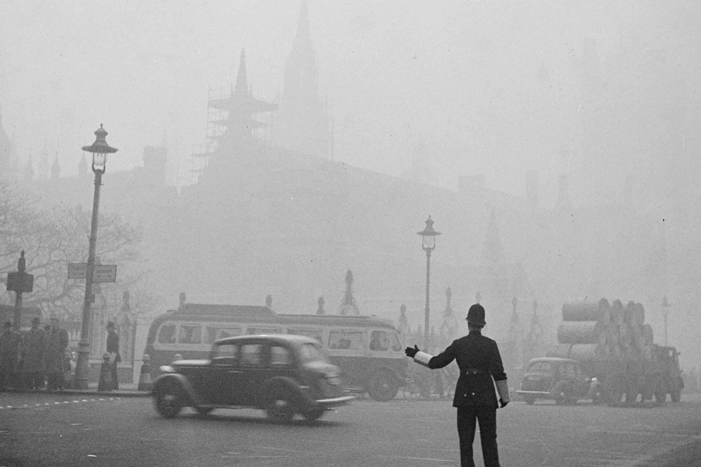
煙霧最直接的衝擊，是城市停了下來。能見度降到只有幾公尺，公車與汽車無法行駛，救護車也難以抵達病人身邊。室內也沒有比較安全，煙霧滲進屋裡、滲進戲院與辦公室，連室內的人都咳個不停。人們在街上摸索前行，有人形容那種感覺像失明。平常熟悉的街道、廣場與地標，在五天裡從生活裡消失了。
死亡是安靜地發生的。受害最深的，是老人、嬰兒，以及原本就有心肺疾病的人。他們多半死於支氣管炎與肺炎，或是原有疾病被煙霧加重。醫院的病房擠滿了呼吸困難的病人，殯儀館也忙不過來。政府在事後幾週的醫療報告中估計，約有四千人直接死於這場煙霧，另有約十萬人因此生病。這個數字在當時已經夠驚人了，但它還不是完整的真相。
為什麼城市會停下來這麼久，卻沒有人立刻拉起警報？部分原因是，霧在倫敦太常見了，人們分不清哪一天的霧是普通的，哪一天的霧是致命的。部分原因是，死亡是分散發生的，沒有一個單一的現場可以指著說，災難在這裡。還有一部分原因是，當時的政府與社會並不願意承認，日常的燃煤取暖本身就是問題。承認這一點，意味著要改變千家萬戶的生活方式，要花錢、要立法、要得罪人。於是，整座城市在毒霧裡多待了幾天，付出的代價由最脆弱的人承擔。
大煙霧的死亡人數，至今沒有一個人人同意的確數。這一點必須誠實寫出來，因為它正是這場災難在科學與公共討論上最重要的遺產。
當時政府的估計約為四千人，這個數字計算的是煙霧期間與緊接著之後的超額死亡。但死亡率在煙霧散去後仍然居高不下，持續了好幾個月。當時一份未完成的初步報告把這些後續死亡歸咎於流感，但這個解釋很快受到質疑。英國政府當時最主要的空氣污染專家威爾金斯把一九五二年冬季到一九五三年春季的每週死亡數，與前一年對照，發現除了最初的四千人之外，之後幾個月還有約八千人的超額死亡，合計約一萬兩千人。
半個世紀之後，二〇〇四年，貝爾、戴維斯與弗萊徹在《環境健康展望》發表回顧研究，重新檢視死亡紀錄與流感資料。他們的結論是，流感只能解釋後續死亡的一小部分，要解釋大部分的後續死亡，需要一場比當年實際紀錄致命兩倍、廣泛四倍的流感，這並不符合事實。他們的研究支持威爾金斯的估算，總數接近一萬兩千人。後來的整理多半把現代估算寫成一萬至一萬兩千人，而非單一確數。
這個範圍不是學術上的含糊，而是誠實。超額死亡的計算牽涉到比較基準、時間窗口與死因歸屬，每一個選擇都會改變數字。把一萬兩千人說成鐵板釘釘的確數，和把四千人當成全部真相一樣，都是對死者的不誠實。真正值得記住的不是某一個數字，而是數字的方向，當時的官方估計低估了災難的規模，而且低估了將近三倍。一個社會如果只看眼前的死亡，就會錯過災難真正的代價，因為許多傷害是延遲發作的，許多死亡發生在霧散之後。
災難之後，英國政府起初並不積極，傾向把煙霧當成無法預防的天災。但輿論與媒體的壓力逐漸升高。一九五三年七月，政府任命實業家休・比弗爵士領導空氣污染委員會。委員會在一九五三年十一月提出中期報告，一九五四年十一月提出最終報告，指出家庭煙囪與工業排放的煙霧都必須在城市裡受到管制，並估算煙霧污染每年讓英國損失約二億五千萬英鎊。
一九五四年，倫敦市先在市中心一帶禁止冒煙。一九五六年，國會通過《清潔空氣法》，這是英國第一部全國性的空氣污染法規。法律授權地方政府劃定無煙區，在區內只能燃燒無煙燃料，禁止建築物排放黑煙，新安裝的爐具必須能持續運作而不冒煙，並對改用清潔燃料的家庭提供補助。發電廠與重工業也逐步遷出市區。一九六八年，第二部《清潔空氣法》進一步要求工業企業建造更高的煙囪，加強污染物的擴散。
這部法律的意義，不只在於它管住了煙，更在於它改變了責任的歸屬。在此之前，空氣污染被視為個人選擇或工業發展的附帶代價，誰家燒煤、哪間工廠冒煙，彷彿都是私事。大煙霧之後，英國社會第一次廣泛承認，空氣是公共的，一個人燒煤的煙，會變成另一個人肺裡的病。政府有責任介入，立法、劃區、補助、管制，因為市場與習慣自己不會修正這個問題。
當然，法律不是魔法。倫敦的空氣沒有在一夜之間變乾淨，後來的歲月裡仍有煙霧事件，能源轉型也花了數十年。但一九五六年的立法劃出了一條線，在此之前，污染是理所當然的代價；在此之後，污染是可以、也應該被管制的問題。這條線的價值，要等很多年之後才完全顯現。
倫敦大煙霧留給今天的讀者，至少有三層啟示。
第一層是關於習慣。倫敦人不是不知道煤煙有害，他們只是習慣了。霧都的浪漫形象，掩蓋了霧裡的毒性。一個社會對危險的感知，往往不是由科學決定的，而是由熟悉程度決定的。越熟悉，越不容易警覺。這提醒我們，定期回頭檢視那些我們已經不再提問的日常，本身就是一種自我保護。
第二層是關於看不見的代價。煙霧的死亡不是一次性的，它拖了好幾個月才顯現全貌。許多公共問題都是這樣，傷害發生時看不見、算不清，等到數字完整了，責任已經很難追究。這並不意味著我們應該放棄計算，而是意味著，決策不能只看眼前的數字。當科學家說估算有不確定性時，那不是推卸責任，而是在提醒我們，真相需要時間，而等待真相的時間裡，人還在受害。
第三層是關於集體責任。沒有任何一個倫敦家庭單獨造成了大煙霧，每家每戶都只是燒煤取暖，做著再普通不過的事。但幾十萬個普通選擇加在一起，就變成了一場災難。同樣地，也沒有任何一個家庭能單獨解決它，只有透過法律、補助與城市規劃，改變所有人的選擇條件，空氣才會變好。集體責任不是要每個人自責，而是要承認，有些問題只能一起解決。
五天看不見的城市，最終讓一座城市看見了自己呼吸的空氣。今天我們面對的污染形式已經不同，來源更分散，影響更長遠，但問題的結構沒有變，熟悉的日常、延遲的代價、分散的責任。倫敦的故事沒有給出簡單的答案，它給出的是一個提醒，當空氣變得看不見的時候，不要等到看不見城市，才開始行動。
People & Society
Five days, thousands of lives, and a Clean Air Act
On Friday, 5 December 1952, Londoners woke to fog. There was nothing remarkable in that. London was famous for fog. Fog was part of the city's scenery, the backdrop of its novels, and a familiar feature of its winters. But this time, the fog did not lift by midday. It grew thicker, yellower, and more choking. By Saturday, the low winter sun could not burn it off. By Sunday, visibility in some places was down to about a foot, and people could not see their own feet. Five days later, a west wind finally swept it away and the city reappeared. But some people were gone.
Those five days later became known as the Great Smog of London. What made it terrible was not the sudden destruction of an explosion or a flood, but the fact that it looked so ordinary. Fog had always been part of London. Who would have thought that something so familiar could kill? That is the first lesson this disaster leaves us. The most dangerous threats are often not the strange ones, but the everyday things we have grown so used to that we stop asking questions about them.
The Great Smog was not caused by a single factor. It was a collision of conditions that happened to arrive together. November had been unusually cold, and Londoners burned far more coal than usual to keep warm. After the war, Britain exported much of its better coal to pay its debts, leaving households with a cheap, crumbly, sulphur-rich grade known as nutty slack. The city also had many coal-fired power stations, at Battersea, Bankside, Fulham, Greenwich, and elsewhere, all adding their own smoke, while diesel buses had replaced electric trams and left their exhaust in the streets.
The weather then supplied the final piece. On 4 December, a high-pressure system settled over southern England, creating a temperature inversion. Normally, air grows colder with height, and chimney smoke rises and disperses. During an inversion, a layer of cold air sits near the ground beneath a layer of warmer air, like a lid over the city. Smoke rises only until it meets the warm layer above, then stops. With nowhere to go, it accumulates near the ground. On the morning of 5 December, the ground lost heat rapidly, moist air condensed into fog, and the droplets formed on countless soot particles, creating a layer of fog some one hundred to two hundred metres deep, trapped beneath the inversion.
The UK Met Office later estimated what all of that put into the trapped air on each day of the smog: about 1,000 tonnes of smoke particles, about 370 tonnes of sulphur dioxide, which may have been converted into about 800 tonnes of sulphuric acid, along with about 140 tonnes of hydrochloric acid and 14 tonnes of fluorine compounds. There is no need to remember every figure. Only one thing matters: Londoners were not breathing fog. They were breathing fog mixed with coal smoke and acidic gases. Fog was the trap, not the poison itself. The poison was what burning had hidden inside the fog.
The most immediate effect of the smog was that the city stopped. Visibility fell to a few metres. Buses and cars could not run, and ambulances struggled to reach the sick. Indoors was no safer. Smog seeped into houses, theatres, and offices, and people indoors coughed without relief. People felt their way along the streets, and one visitor said it was like being blind. Familiar streets, squares, and landmarks disappeared from daily life for five days.
Death came quietly. Those hit hardest were the elderly, infants, and people who already had heart or lung disease. Most died of bronchitis and pneumonia, or of existing conditions made worse by the smog. Hospital wards filled with people struggling to breathe, and undertakers could not keep up. In the weeks that followed, government medical reports estimated that about 4,000 people had died as a direct result of the smog, and about 100,000 more had been made ill. That figure was shocking enough at the time, but it was not the whole truth.
Why did the city go on for so long without anyone sounding the alarm? Partly because fog was so common in London that people could not tell which day's fog was ordinary and which was lethal. Partly because deaths were scattered, with no single scene to point to and say, the disaster is here. And partly because the government and society of the time were unwilling to admit that everyday coal heating was itself the problem. To admit that would mean changing how thousands of households lived, spending money, passing laws, and offending people. So the city stayed in the poisoned fog for days longer, and the price was paid by its most vulnerable people.
The death toll of the Great Smog has no single figure on which everyone agrees. That must be stated honestly, because it is the most important legacy of the disaster for science and public discussion.
The government's estimate at the time was about 4,000, counting excess deaths during the smog and immediately afterwards. But mortality stayed high for months after the fog cleared. A preliminary report, never finalised, blamed those later deaths on an influenza epidemic, but that explanation was soon questioned. E. T. Wilkins, the government's leading air pollution scientist, charted London's weekly deaths from the winter of 1952 to the spring of 1953 against the previous year, and found about 8,000 additional excess deaths in the months after the smog, on top of the first 4,000, making about 12,000 in total.
Half a century later, in 2004, Michelle Bell, Devra Davis, and Tony Fletcher published a retrospective study in Environmental Health Perspectives, re-examining the mortality records and the influenza data. They concluded that influenza could account for only a fraction of the later deaths. To explain most of them by influenza would have required a flu season twice as deadly and four times as widespread as the one actually recorded that winter. Their findings support Wilkins's estimate, a total close to 12,000. Later summaries generally give the modern estimate as a range of 10,000 to 12,000, not a single exact number.
That range is not academic vagueness, but honesty. Calculating excess deaths involves choices about the baseline, the time window, and the attribution of causes, and each choice changes the figure. To present 12,000 as an iron certainty would be as dishonest as treating 4,000 as the whole truth. What is worth remembering is not one number, but the direction of the numbers: the official estimate at the time underestimated the scale of the disaster, by nearly three times. A society that counts only the deaths it can see at once will miss the true cost of a disaster, because much harm acts with delay, and many deaths come after the fog has cleared.
After the disaster, the British government was at first reluctant, preferring to treat the smog as a natural disaster that no one could have prevented. But public and press pressure grew. In July 1953, the government appointed the industrialist Sir Hugh Beaver to lead a Committee on Air Pollution. The committee issued an interim report in November 1953 and a final report in November 1954, arguing that smoke from domestic chimneys as well as industry had to be controlled in towns, and estimating that smoke pollution was costing Britain about £250 million a year.
In 1954, the City of London banned smoke in the Square Mile. In 1956, Parliament passed the Clean Air Act, Britain's first national air pollution statute. The Act gave local authorities power to create smoke control areas, where only smokeless fuels could be burned. It made it an offence to emit dark smoke from a building's chimney, required newly installed furnaces to be capable of operating without producing smoke, and offered financial help to households switching to cleaner fuels. Power stations and heavy industry were gradually moved out of the city. A second Clean Air Act followed in 1968, requiring industrial enterprises to build taller chimneys to disperse pollutants more effectively.
The significance of this law lay not only in controlling smoke, but in changing where responsibility lay. Before it, air pollution had been treated as a matter of personal choice or as an incidental cost of industrial progress, as if whose household burned coal or which factory smoked were private affairs. After the Great Smog, British society acknowledged for the first time, broadly, that air is shared: the smoke from one person's coal fire becomes disease in another person's lungs. Government had a duty to intervene, through legislation, designated zones, subsidies, and regulation, because the market and habit alone would not correct the problem.
Of course, law is not magic. London's air did not become clean overnight. Smog episodes still occurred in later years, and the energy transition took decades. But the legislation of 1956 drew a line. Before it, pollution was accepted as the inevitable price of life. After it, pollution was a problem that could, and should, be controlled. The value of that line only became fully clear many years later.
The Great Smog leaves today's readers with at least three lessons.
The first concerns habit. Londoners were not unaware that coal smoke was harmful. They were simply used to it. The romantic image of the fog capital concealed the poison in the fog. A society's sense of danger is often decided not by science, but by familiarity. The more familiar a danger, the harder it is to notice. This reminds us that regularly re-examining the everyday things we no longer question is itself a form of self-protection.
The second concerns invisible costs. The deaths from the smog were not all at once. It took months for the full toll to appear. Many public problems behave this way. When harm occurs, it cannot be seen or counted clearly, and by the time the figures are complete, responsibility is hard to assign. That does not mean we should give up counting. It means decisions cannot rest only on the figures visible at the time. When scientists say an estimate is uncertain, that is not an evasion of responsibility. It is a reminder that truth takes time, and while we wait for it, people are still being harmed.
The third concerns collective responsibility. No single London household caused the Great Smog on its own. Every household was only burning coal to keep warm, doing something utterly ordinary. But hundreds of thousands of ordinary choices added together became a disaster. Likewise, no single household could solve it alone. Only through law, subsidies, and urban planning, changing the conditions under which everyone chose, could the air improve. Collective responsibility does not mean that everyone should blame themselves. It means acknowledging that some problems can only be solved together.
A city that could not see for five days finally learned to see the air it breathed. The forms of pollution we face today are different, their sources more dispersed, their effects longer lasting, but the structure of the problem has not changed: familiar routines, delayed costs, scattered responsibility. The story of London offers no simple answer. It offers a reminder: when the air becomes invisible, do not wait until the city itself disappears before acting.
書與思想
一座塔樓，一個人，與「我知道什麼？」
法國西南部，波爾多以東不遠，有一座不起眼的城堡。城堡的塔樓三層，一層是禮拜堂，二層是臥室，三層是一間圓形的書房。書房的樑上刻滿了希臘與羅馬先賢的話，像一圈沉默的陪審團，圍著一個人，看他如何為自己辯護。那個人叫米歇爾・德・蒙田，生於一五三三年，死於一五九二年。他在三十八歲那年辭去公職，回到這座塔樓，說要把餘生交給閱讀與沉思。沒有人料到，他在這裡寫下的東西，會改寫散文的命運，也改寫我們認識自己的方式。
蒙田之前，歐洲的書寫大多有一個明確的對象：上帝、君王、古代的權威、某種放之四海皆準的道理。作者站在高處說話，彷彿自己只是真理的傳聲筒。蒙田把這套秩序倒了過來。他在書的開頭就坦白，讀者，我自己就是這本書的材料。如果你想知道人是什麼樣子，與其去翻那些宏大的體系，不如先仔細看一個具體的人，看他怎麼生病、怎麼害怕、怎麼愛、怎麼在一個下午改變主意。這個具體的人，就是他自己。他留下的書叫《隨筆集》，法文原名 Essais，意思是嘗試、試驗。書名本身就是方法：每一篇都是一次嘗試，不保證答案，不承諾結論。
蒙田出生在佩里戈爾地區的蒙田城堡，家境富裕，父親是地方上的望族。他的童年有一點奇特：父親請了一位不懂法語的德國人來教他，於是拉丁文成了他最早熟悉的語言，法語反而是後來才學會的。一個先用拉丁文思考的孩子，長大後對語言本身會有一種天然的距離感：他知道話語可以換一種說法，意思也會跟著移動。
青年時代的蒙田並沒有立刻成為作家。他先後在佩里格與波爾多的法院任職，一五五七年起進入波爾多高等法院，在那裡度過了十多年的公職生涯。一五六五年，他與弗朗索瓦絲・德・拉沙賽涅結婚；一五六八年，父親去世，他繼承了家業與蒙田這個姓氏。一五七一年，三十八歲的他辭去公職，回到城堡，在塔樓的牆上刻下一段拉丁文銘文，大意是：他早已厭倦了法庭與公職的奴役，要在智慧女神的懷抱裡，在平安與安寧中度過餘生。塔樓的意義並不在於隔絕世界，而在於給自己一個可以回來的地方。
一五七二年，蒙田開始寫作。最早的篇章很短，多半是讀書札記，夾雜著古代軼事與零星感想。他的寫法不像當時的學者：不分章節論證，不堆砌體系，不急著下判斷。他更像一個人在散步，走到哪裡，想到哪裡。這種散漫不是沒有紀律，而是一種更深的紀律：不讓現成的結論代替真實的經驗。
《隨筆集》第一、二卷在一五八〇年於波爾多出版，共九十多章。出版之後，蒙田反而出發去旅行。他為腎結石所苦，遠赴瑞士與義大利尋求治療，在羅馬謁見教皇，途中得知自己當選波爾多市長。回國後，他擔任市長直到一五八五年，其間正值宗教戰爭與瘟疫蔓延。這段經歷戳破了一個浪漫的誤解：蒙田不是躲在象牙塔裡的隱士。他的退隱不是逃走，而是一種有進有退的節奏。進到世界裡去，承擔責任、談判、調解；退回塔樓裡來，消化、懷疑、重寫。一五八八年，第三卷在巴黎出版，全書至此共一百零七章，卷一五十七章，卷二三十七章，卷三十三章。此後蒙田仍不斷增補修改，直到去世前還在病榻上修訂。他的遺稿由友人與義女整理，於一五九五年在巴黎出版，成為後世流傳的定本。
蒙田最著名的一句話，寫在《隨筆集》的開頭：我自己就是這本書的材料。另一句話更進一步：我研究自己甚於研究其他科目，這是我的玄學，這是我的物理學。把這兩句話放在一起讀，就能看見他的方法的全貌。玄學與物理學在當時是研究宇宙與自然的學問，蒙田把它們搬進了內心。他是說，宇宙很大，自然很深，但最靠近我、最可以仔細觀察的，卻是我自己。一個人如果連自己的恐懼、慾望與偏見都看不清楚，談論宇宙又有什麼把握？
他的方法有三個動作。第一是觀察，而且是近距離的觀察。他寫自己的身體：腎結石發作時的疼痛，睡眠的深淺，對冷熱與食物的偏好。他寫自己的情緒：為什麼會突然發怒，為什麼昨天深信不疑的道理今天看起來可疑。他相信，人格不是由抽象的原則組成的，而是由這些具體的反應組成的。第二是試驗。Essai 這個字本身就是試驗的意思。蒙田不是先有一個理論，再找例子來證明，而是先把自己放進一個問題裡，看看會發生什麼。這種試驗沒有實驗室，只有一張書桌與一顆誠實的心，但它要求寫作者不許作弊，不許用漂亮話掩蓋自己其實不知道。第三是容許矛盾。蒙田的書裡充滿了自我修正：前一章說的，後一章可能推翻。因為人本來就是矛盾的，今天的我與十年前的我不是同一個人。一個誠實的記錄者，應該記錄這種變化，而不是把它修飾成一條直線。原來一個人可以不必假裝一致，也可以活得完整。
蒙田的書房樑上有一句話，後來成了他的標誌：我知道什麼？法文是 Que sçay-je？這句話經常被誤解為一種消極的懷疑，彷彿他什麼都不相信，什麼都不在乎。恰恰相反，這句話是他一生最溫柔的提問。它不是用來摧毀一切，而是用來鬆開那些抓得太緊的手。一個人如果確信自己什麼都知道，就聽不見別人說話，也看不見自己的盲點。蒙田的懷疑，是為了讓耳朵重新打開。
這種懷疑最集中地表現在《隨筆集》第二卷最長的一章〈為雷蒙・塞邦辯護〉裡。那是一篇為一位神學家辯護的文章，卻寫成了一場對人類理性的徹底盤問：我們的感官可靠嗎？我們的語言能抓住真實嗎？我們憑什麼認為自己的習俗就是自然的秩序？蒙田不是要證明人類一無所知，而是要指出，我們所謂的知識，很多時候只是習慣與驕傲的混合物。承認這一點，並不會讓人變得軟弱，反而會讓人變得謹慎。一個知道自己可能犯錯的人，比較不容易用真理的名義去傷害別人。這種謹慎，在蒙田生活的時代尤其珍貴。十六世紀的法國正處於宗教戰爭的撕裂之中，暴力以信仰的名義橫行。蒙田身處其中，擔任市長，居間調解，卻始終不願意用一種狂熱去取代另一種狂熱。一個社會如果失去了懷疑的能力，就只剩下互相喊叫。蒙田對死亡的思考也是這種懷疑的延伸：學會死亡，就是學會不再把生命浪費在焦慮裡。如果能夠承認生命有限，反而能更專注地活在眼前：好好吃一頓飯，認真讀一本書，誠懇地與一個朋友說話。
如果說《隨筆集》有一篇最動人的文章，許多讀者會指向卷一第二十八章〈論友誼〉。這篇文章寫的是蒙田與艾蒂安・德・拉波哀西的友誼。拉波哀西比蒙田大三歲，是一位年輕的貴族與作家，十八歲就寫下了《論自願奴役》，兩人在波爾多高等法院相識，一見如故。可是這段友誼只維持了四年，一五六三年，拉波哀西在一場瘟疫中染病去世，年僅三十多歲。蒙田陪伴他直到臨終，親眼看著朋友死去。此後他常常說，現在的自己只剩下一半，另一半已經跟著朋友走了。
蒙田試著解釋自己為什麼如此愛這位朋友，最後寫下了一句話，成為文學史上最著名的友誼告白：如果有人逼問我為什麼愛他，我覺得這無從表達，只能回答：因為是他，因為是我。除此之外別無答案。這句話的動人之處，在於它放棄了解釋。友誼的理由通常可以列舉：志趣相投、互相幫助、患難與共。蒙田卻說，這些理由加起來都不等於友誼本身。真正的友誼不是一筆交易，而是一種無法拆解的相遇：這個人在這裡，我在這裡，兩個人恰好認出了彼此。這種認出沒有道理可講，卻比任何道理都堅固。這篇文章也揭示了蒙田寫作的一個秘密：他寫自己，從來不是只寫自己。寫自己的身體，是為了寫所有人的身體；寫自己的恐懼，是為了寫所有人的恐懼；寫自己的友誼，是為了寫友誼本身的形狀。讀者打開這本書，就接過了拉波哀西的位置，成為蒙田新的對話者。這也是為什麼四百多年後，我們讀蒙田仍然覺得他像一個活人：他不是在對我們說教，他是在對我們說話，等我們回答。
蒙田去世以後，他的書並沒有被遺忘，反而越傳越遠。英國的培根深受他影響，寫下了自己的散文集；莎士比亞的作品裡也能看見蒙田思想的回聲；此後的盧梭、尼采、愛默生、伍爾夫等人，或讚美他，或與他爭辯，卻沒有人能繞過他。蒙田開創的不只是一種文體，而是一種看待人的方式：在他之前，自我是一個需要被教義馴服的東西；在他之後，自我成了一個值得被認真觀察、誠實記錄的對象。
但蒙田留給我們最寶貴的東西，也許不是文學史上的地位，而是一種可以帶回日常生活的練習：每天留一點時間，問自己一個小問題。今天我為什麼生氣？這件事我真的懂嗎？如果換一個角度看，我還會堅持原來的判斷嗎？不需要寫成文章，只需要誠實地回答。蒙田用二十年證明，一個人如果願意這樣問自己，就不會輕易被流行意見帶走，也不會輕易被自己的偏見困住。他會慢慢長出一種能力：在不確定的世界裡，保持清醒而不變得刻薄；在承認無知的同時，仍然熱愛生活。回到那座塔樓，一個三十八歲的男人坐在那裡，決定不再急著成為別人期待的樣子，而是先搞清楚自己是誰。這個決定看起來很小，卻改變了文學的走向。因為從那一刻起，寫作不再只是向外證明什麼，也可以是向內探問什麼。我們每一個人，在某個時刻，都會問同一個問題：我能不能誠實地面對自己？蒙田的回答寫在四百多年前的書頁裡，至今仍然有效：可以的，只要你願意開始嘗試。嘗試，就是他的書名，也是他留給我們的方法。
Books & Ideas
A tower, one man, and the question “What do I know?”
In the southwest of France, not far east of Bordeaux, there stands an unremarkable castle. Its tower has three floors: a chapel on the first, a bedroom on the second, and a round study on the third. Sayings of Greek and Roman sages are carved into the beams of the study, like a silent jury gathered around one man, watching how he will plead his own case. That man was Michel de Montaigne, born in 1533 and dead in 1592. At thirty-eight he resigned from public office and returned to this tower, saying he would give the rest of his life to reading and reflection. No one could have guessed that what he wrote there would change the fate of the essay, and change the way we know ourselves.
Before Montaigne, European writing usually had a clear object: God, a king, an ancient authority, some universal truth. The author spoke from above, as if he were merely the mouthpiece of truth. Montaigne turned that order upside down. At the start of his book he confessed plainly: reader, I myself am the matter of my book. He was not being modest. He was serious: if you want to know what a human being is like, rather than leafing through grand systems, look closely at one particular person — how he falls ill, how he fears, how he loves, how he changes his mind in a single afternoon. That particular person was himself. His book is called the Essais, a word meaning attempts, trials. The title itself is the method: each chapter is an attempt, a question pressed against the self, with no guarantee of an answer and no promise of a conclusion.
Montaigne was born at the Château de Montaigne in Périgord, into a wealthy family; his father was a notable local figure. His childhood had one odd feature: his father hired a German tutor who spoke no French, so Latin became the first language he knew well, and French came later. A child who first thinks in Latin grows up with a natural distance from language itself: he knows that words can be said another way, and that the meaning moves with them.
The young Montaigne did not become a writer at once. He served in the courts of Périgueux and Bordeaux, entering the Parlement of Bordeaux in 1557, where he spent more than ten years in public office. In 1565 he married Françoise de La Chassaigne; in 1568 his father died, and he inherited the estate and the name of Montaigne. In 1571, at thirty-eight, he resigned from office and returned to the castle, carving a Latin inscription on the tower wall. It said, in essence, that he had long grown weary of the servitude of the courts and public offices, and meant to spend his remaining days in the embrace of the learned Muses, in peace and calm. The tower mattered not because it shut out the world, but because it gave him a place to return to.
In 1572 Montaigne began to write. The earliest pieces were short, mostly reading notes mixed with ancient anecdotes and scattered reflections. His way of writing was unlike that of the scholars of his day: no systematic argument, no piled-up system, no hurry to judge. He was more like a man out walking, thinking wherever his steps took him. That looseness was not a lack of discipline, but a deeper discipline: never let a ready-made conclusion stand in for real experience.
The first two books of the Essais were published at Bordeaux in 1580, more than ninety chapters between them. After publication, instead of stopping, Montaigne set out travelling. Tormented by kidney stones, he went to Switzerland and Italy in search of treatment, was received by the Pope in Rome, and learned on the road that he had been elected mayor of Bordeaux. On his return he served as mayor until 1585, in the midst of the Wars of Religion and the spread of plague. That episode punctures a romantic misunderstanding: Montaigne was no hermit hiding in an ivory tower. His retirement was not escape, but a rhythm of advance and return. He went out into the world to take responsibility, to negotiate, to mediate; he came back to the tower to digest, to doubt, to rewrite. In 1588 the third book appeared in Paris, bringing the whole to one hundred and seven chapters — fifty-seven in Book One, thirty-seven in Book Two, thirteen in Book Three. He kept adding and revising until, still correcting, he died. His papers were gathered by friends and his adopted daughter and published at Paris in 1595, the edition on which later printings rest.
Montaigne's most famous sentence stands at the opening of the Essais: I myself am the matter of my book. Another goes further: I study myself more than any other subject; this is my metaphysics, this is my physics. Read together, the two sentences show his whole method. Metaphysics and physics were then the study of the universe and nature; Montaigne moved them indoors. The universe is vast and nature is deep, he says, but the thing nearest to me, the thing I can observe most closely, is myself. If a person cannot see his own fears, desires and prejudices clearly, what confidence can he have when he talks about the universe?
His method has three movements. The first is observation, and observation at close range. He wrote about his body: the pain of kidney stones, the depth of his sleep, his likes and dislikes in food and weather. He wrote about his moods: why he suddenly grew angry, why yesterday's certainty looked doubtful today. He did not treat these as trivia, because he believed that character is not made of abstract principles, but of these concrete responses. The second is trial. Essai itself means a trial. Montaigne did not start with a theory and then look for examples to prove it; he first placed himself inside a question and watched what happened. That trial has no laboratory, only a desk and an honest heart, but it forbids the writer to cheat, to cover ignorance with fine phrases. The third is allowing contradiction. His book is full of self-correction: what one chapter says, a later chapter may overturn. A person is contradictory by nature; the self of today is not the self of ten years ago. An honest recorder should record that change, not smooth it into a straight line. A reader who expects a consistently correct Montaigne will be disappointed; a reader willing to move with him will find a rare freedom: a person need not pretend to be consistent in order to be whole.
Carved on the beams of Montaigne's study was a sentence that became his emblem: Que sçay-je? — What do I know? It is often misread as a bleak scepticism, as if he believed nothing and cared about nothing. The opposite is true. It was the gentlest question of his life. It was not meant to destroy everything, but to loosen hands that grip too tightly. A person convinced he knows everything cannot hear anyone else speak, and cannot see his own blind spots. Montaigne's doubt was a way of opening his ears again.
That doubt is concentrated in the longest chapter of Book Two, the Apology for Raymond Sebond. Ostensibly a defence of a theologian, it becomes a thorough interrogation of human reason: are our senses reliable? Can our language grasp what is real? By what right do we take our own customs for the order of nature? Montaigne did not set out to prove that human beings know nothing, but to show that much of what we call knowledge is a mixture of habit and pride. Admitting that does not make a person weak; it makes him careful. Someone who knows he may be wrong is less likely to injure others in the name of truth. That care was especially precious in his time. Sixteenth-century France was torn by the Wars of Religion, with violence committed in the name of faith. Montaigne lived in the middle of it, served as mayor, mediated between sides, and refused to replace one fanaticism with another. A society that has lost the capacity to doubt is left with nothing but shouting at each other. His reflections on death extend the same doubt: to learn how to die is to learn not to waste life on anxiety. If we can admit that life is finite, we can live more attentively in the present — eat a meal well, read a book properly, speak honestly with a friend.
If one chapter of the Essais moves readers most, many would name Chapter Twenty-eight of Book One, Of Friendship. It is about Montaigne's friendship with Étienne de La Boétie. La Boétie was three years older, a young nobleman and writer who had written the Discourse on Voluntary Servitude at eighteen; the two men met in the Parlement of Bordeaux and took to each other at once. The friendship lasted only four years. In 1563 La Boétie fell ill in an epidemic of plague and died, barely into his thirties. Montaigne stayed with him until the end and watched his friend die. Afterwards he often said that only half of himself remained, the other half having gone with his friend.
Trying to explain why he loved this friend so much, Montaigne wrote a sentence that has become the most famous confession of friendship in literature: if you press me to say why I loved him, I feel it cannot be expressed except by answering: because it was he, because it was I. There is nothing else to say. The beauty of the sentence lies in its refusal to explain. The reasons for friendship can usually be listed: shared tastes, mutual help, hardships endured together. Montaigne says that all such reasons added together still do not equal friendship itself. True friendship is not a bargain, but an encounter that cannot be taken apart: this person here, myself here, two people who happened to recognise each other. That recognition has no reason to give, yet it is stronger than any reason. The chapter also reveals a secret of Montaigne's writing: when he wrote about himself, he was never writing only about himself. To write about his own body was to write about every body; to write about his own fear was to write about every fear; to write about his own friendship was to write about the shape of friendship itself. A reader who opens the book takes La Boétie's place and becomes Montaigne's new interlocutor. That is why, more than four hundred years later, reading Montaigne still feels like listening to a living person: he is not lecturing us, he is talking to us, waiting for an answer.
After Montaigne's death his book was not forgotten; it travelled ever further. Francis Bacon in England was deeply influenced by him and wrote his own essays; echoes of Montaigne's thought can be heard in Shakespeare; later, Rousseau, Nietzsche, Emerson and Woolf, whether they praised him or argued with him, could none of them pass him by. Montaigne founded more than a literary form; he founded a way of seeing the person. Before him, the self was something to be tamed by doctrine; after him, it became something worth observing closely and recording honestly.
But the most precious thing Montaigne leaves us may not be his place in literary history. It is a practice we can carry back into ordinary life: set aside a little time each day and ask yourself a small question. Why was I angry today? Do I really understand this? If I looked at it from another angle, would I still hold my judgement? There is no need to write it down or tell anyone; it is enough to answer honestly. Montaigne spent twenty years proving that a person willing to ask such questions will not easily be carried away by fashionable opinion, nor easily trapped by his own prejudice. He will slowly grow a capacity: to stay clear-headed in an uncertain world without becoming bitter, and to love life while admitting ignorance. Return to that tower. A man of thirty-eight sits there and decides not to hurry into becoming what others expect, but first to find out who he is. The decision looks small, yet it changed the course of literature. From that moment, writing was no longer only a way of proving something outwardly; it could also be a way of asking something inwardly. Each of us, at some moment, asks the same question: can I face myself honestly? Montaigne's answer, written on pages more than four hundred years old, still holds: yes, if you are willing to begin the attempt. Attempt — that is the title of his book, and the method he leaves us.
刪掉或改掉的可疑說法：蒙田出生與去世的具體日期在不同來源有出入（中文來源多作二月十八日、英文來源多作二月二十八日；去世日期亦有九月十三日與九月二十三日兩說），正文只寫年份，不寫月日。蒙田幼年由不懂法語的德國人教拉丁文一事，僅依譯本作者介紹寫作「請了一位不懂法語的德國人來教他」，未再延伸未經核實的細節。莎士比亞受蒙田影響一說，正文寫為「作品裡也能看見回聲」，不寫成確鑿的直接閱讀史實。盧梭對蒙田持保留看法一事已在查證中見到，未寫入正文以免以偏概全。
書與思想
不肯當官的人，教了兩千年自由
戰國中期，天下大亂。諸侯兼併，戰爭頻仍，百家爭鳴，學說像市集上的叫賣聲，此起彼落。就在這樣的時代裡，宋國蒙地有一個名叫莊周的人，只做過一個管理漆園的小吏，終身沒有做過大官，卻留下一部書，讓兩千多年後的讀者仍然在裡面找路。這部書叫《莊子》，又名《南華真經》。它的作者生平，連司馬遷在《史記》裡也只用了二百多字交代：莊子者，蒙人也，名周，周嘗為蒙漆園吏，與梁惠王、齊宣王同時。至於他生於何年、死於何年，史料沒有確切的記載，只能從他同時代的人物大約推斷他生活在戰國中期。一個人的生卒年月可以模糊，一本書提出的問題卻可以清晰兩千年。
莊子看見的，是一個被功名、是非與恐懼綁住的世界。人們忙著爭奪、忙著證明自己有用，忙到忘記問一個最簡單的問題：這樣活著，自由嗎？莊子的回答不是一套制度，而是一種境界，叫做逍遙。逍遙不是遊手好閒，而是一種不受外物牽引的自在。一個人如果能在心裡留出一片空地，不被名利塞滿，就能在亂世裡仍然走自己的路。
《莊子》開篇第一句，就把讀者帶到一個不可能的場景：北冥有魚，其名曰鯤。鯤之大，不知其幾千里也。化而為鳥，其名為鵬。鵬之背，不知其幾千里也。怒而飛，其翼若垂天之雲。一條大魚變成一隻大鳥，拍擊水面激起三千里浪，乘風直上九萬里高空，前往南方的天池。數字大得不合常理，莊子故意這樣寫，因為他要說的第一件事，就是想像力本身就是自由。一個人如果連想都不敢想大，就永遠只能在小水窪裡打轉。
可是莊子並沒有停在壯闊裡。他筆鋒一轉，寫蜩與學鳩笑之。蟬與小斑鳩嘲笑大鵬：我們一躍而起，碰到榆樹就落下來，已經很快活了，何必飛到九萬里那麼遠？這一段藏著一個嚴肅的問題：大與小，誰說了算？從蟬的角度看，大鵬的遠行是多餘的；從大鵬的角度看，蟬的滿足是狹窄的。莊子不是要我們選邊站，而是要我們看見，每一種眼光都有自己的邊界。所謂逍遙，首先就是承認邊界的存在，然後不被邊界困住。小知不及大知，小年不及大年。一個人知道自己知道得少，反而能放下那種非要爭個高下的執著。
《逍遙遊》的結尾提出了三種境界：至人無己，神人無功，聖人無名。至人沒有固執的自我，神人不執著於功業，聖人不貪戀名聲。這三句話說的是一件很實際的事：一個人之所以不自由，往往不是因為外面的枷鎖太重，而是因為裡面的我執太牢。放下對自己的執著，放下對功名與名聲的執著，人才能輕一點，飛得遠一點。多少人的焦慮，不是來自真正缺少什麼，而是來自放不下那個一定要贏、一定要被看見的自己。
如果說《逍遙遊》講的是自由的境界，《齊物論》講的就是抵達自由的方法。齊物論的齊，不是把萬物壓成一樣平，而是看見萬物本來就是齊一的：是非、大小、美醜、生死，在道的眼光裡，並沒有絕對的界線。這一篇的開頭寫南郭子綦隱機而坐，仰天而噓，焉似喪其耦。南郭子綦靠著几案坐著，仰天長嘆，彷彿失去了伴侶。學生問他為什麼這樣，他回答：我今天喪失了我自己。一個人忽然發現那個成天在心裡吵吵鬧鬧的我不見了。這不是失魂落魄，而是一種解脫：當自我鬆開，世界就安靜下來，人才能聽見別的聲音。
莊子接著寫了三種籟：人籟、地籟、天籟。人籟是簫管的聲音，地籟是風吹過山林孔竅的聲音，天籟則是萬物自己發出的聲音，不靠任何樂器。人們習慣用人籟的方式理解世界：我說，你聽，我對，你錯，爭一個輸贏。莊子提醒我們，還有天籟這種聽法：不急著下判斷，先讓萬物自己說話。風吹過不同的孔竅，會發出不同的聲音，每一種聲音都是真的。是非之爭之所以沒完沒了，是因為每個人都只聽見自己孔竅裡的聲音，卻以為那就是全部的聲音。正因為是非是相對的，我們才更需要謹慎，留一點餘地給不同的看法。
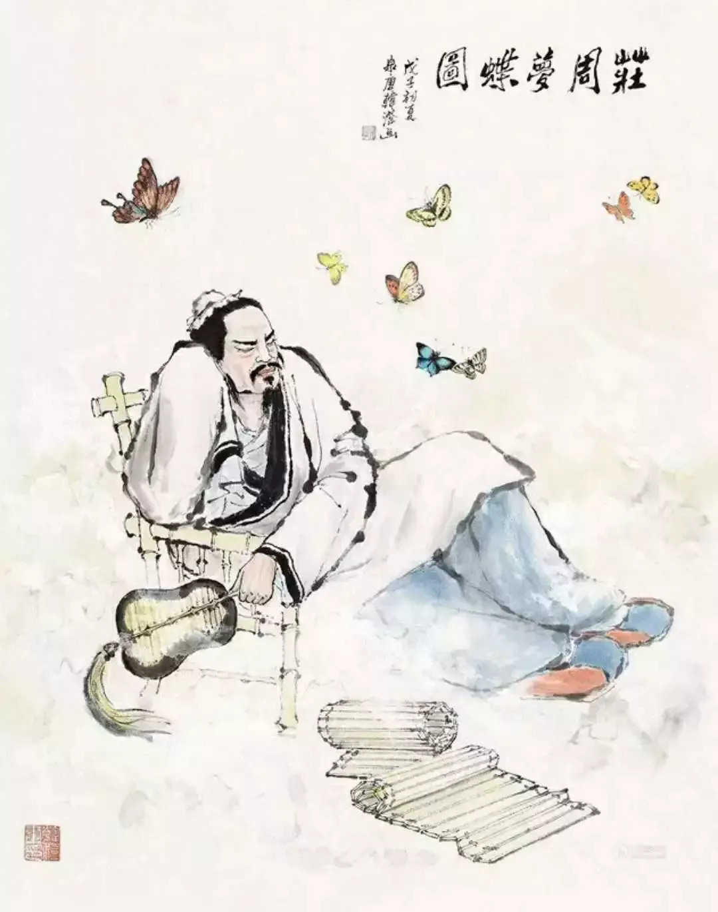
《齊物論》的結尾，藏著全書最著名的一段文字，只有百來字，卻讓兩千年的讀者反覆咀嚼：昔者莊周夢為蝴蝶，栩栩然蝴蝶也，自喻適志與，不知周也。俄然覺，則蘧蘧然周也。不知周之夢為蝴蝶與，蝴蝶之夢為周與？周與蝴蝶，則必有分矣。此之謂物化。有一天，莊周夢見自己變成了一隻蝴蝶，翩翩起舞，自得其樂，完全忘記自己是莊周。忽然醒來，才發現自己分明是莊周。於是他問：到底是莊周夢見自己變成了蝴蝶，還是蝴蝶夢見自己變成了莊周？這就叫做物化，也就是萬物的變化。
這段文字的力量，在於它用最輕的方式，問了一個最重的問題：我是誰？我們平常對自己的身分深信不疑：我是這個人，有這個名字、這個身體、這段過去。可是一場夢就能動搖這種確信。夢裡的蝴蝶快樂得理直氣壯，一點也不覺得自己是假的；醒來的莊周也理直氣壯，一點也不覺得自己是假的。兩個狀態都如此真實，哪一個才是真的？莊子沒有給出答案，他給出的，是一個比答案更重要的姿態：不必急著裁決。周與蝴蝶必有分別，但這個分別不是用來分高下、分真假的，而是用來提醒我們，自我不是一塊固定的石頭，而是一段流動的變化。物化這個詞，值得慢慢品味。萬物都在變化之中，莊周可以化為蝴蝶，蝴蝶可以化為莊周。一個人如果能接受這種變化，就不會那麼害怕失去。失去一個身分，不等於失去自己；改變一種生活，不等於背叛自己。自由不只是想去哪裡就去哪裡，更是不被一個固定的我是誰綁住。
《莊子》第三篇《養生主》的開頭寫道：吾生也有涯，而知也無涯。以有涯隨無涯，殆矣。人的生命有限，知識無限，用有限的生命去追逐無限的知識，是危險的。既然追不完，不如換一種活法。接下來，莊子講了一個故事，成為全書最著名的寓言：庖丁解牛。
庖丁為文惠君解牛，手之所觸，肩之所倚，足之所履，膝之所踦，砉然嚮然，奏刀騞然，莫不中音。合於桑林之舞，乃中經首之會。一個廚師為君主分解一頭牛，手、肩、足、膝的每一個動作都合乎節奏，下刀的聲音像音樂，像舞蹈。文惠君看得入迷，問他怎麼做到的。庖丁回答：臣之所好者，道也，進乎技矣。我所愛好的，是道，已經超出了技術的層次。剛開始解牛的時候，我眼裡看到的都是整頭牛；三年之後，就再也看不見整頭牛了。到了現在，我用精神去感受，而不用眼睛去看。依乎天理，批大郤，導大窾，因其固然。順著牛體天然的紋理，下刀在筋骨的空隙處，順著它本來的樣子去走。
庖丁的刀用了十九年，解過數千頭牛，刀刃卻像剛磨出來一樣鋒利。好的廚師一年換一把刀，因為他是切；普通的廚師一個月換一把刀，因為他是砍。庖丁的刀之所以不鈍，是因為他從來不硬碰硬：節骨之間有空隙，刀刃薄得幾乎沒有厚度，以無厚入有間，遊刃必有餘地。這就是遊刃有餘這個成語的由來。可是庖丁也說，每次遇到筋骨交錯的地方，他都會警惕起來，動作放慢，下刀極輕，牛就應聲而解。這個故事講的不是廚藝，而是養生之道。真正的熟練，不是蠻力，而是順應。順應牛的紋理，順應事物的本性，順應生命的節奏。一個人如果總是硬碰硬，再鋒利的刀也會鈍。相反，如果能看見空隙、找到紋理、放慢腳步，就能在複雜的世界裡留出餘地。文惠君聽完說：善哉，吾聞庖丁之言，得養生焉。自由不是蠻幹，而是懂得在哪裡用力，在哪裡停手。
莊子與惠施是一對著名的朋友，也是一對著名的對手。惠施是名家的代表人物，擅長辯論，講究邏輯。兩人最著名的一場爭論，是關於有用與無用。惠施對莊子說：魏王送我大葫蘆的種子，種出來結了五石大的葫蘆。裝水吧，太重提不動；剖開做瓢吧，又太大裝不下什麼。這麼大的東西，實在無用，我把它打破了。莊子回答：你實在不懂得怎麼用大的東西。宋國有人善於製作不龜裂手的藥，世代以漂洗絲絮為生。有人出百金買下藥方，拿去說服吳王打仗，結果大勝，封了地。同樣的藥，用法不同，價值就不同。大葫蘆為什麼不能做成腰舟，浮游於江湖之上？是你不會用，不是它無用。
另一場爭論是關於一棵大樹。惠施說：我有一棵大樹，人們叫它樗。樹幹臃腫，不合繩墨，枝椏彎曲，不合規矩，站在路邊，木匠看都不看一眼。你的言論大而無用，眾人都拋棄它。莊子回答：你為什麼不把它種在無何有之鄉，廣莫之野，徘徊在它身邊，逍遙地睡在它下面？它不會被斧頭砍伐，沒有東西會傷害它，沒有什麼用處，又有什麼困苦呢？一棵樹因為無用，反而活得長久；一個人如果只用有用與無用來衡量一切，就會把許多真正珍貴的東西砍掉。
這兩場爭論，放在今天讀，仍然像是在說我們自己。現代社會最擅長的，就是用有用來衡量一切。莊子提醒我們，這種衡量本身就是一種狹窄。許多東西的價值，不在於它能立刻派上用場，而在於它能讓人停下來、喘口氣、換一種眼光看世界。一棵大樹的用處，就是讓人可以在它下面睡一覺。逍遙的人，不是不做事的人，而是懂得留白的人。
莊子之後，他的思想並沒有消失。它走進了魏晉名士的清談，走進了唐宋文人的詩畫，走進了禪宗的公案，也走進了無數普通讀者的夜晚。一個失意的人讀到逍遙遊，會想起自己還有一片天空；一個被是非纏住的人讀到齊物論，會想起還有另一種聽法；一個耗盡力氣的人讀到庖丁解牛，會想起原來可以順著紋理走，不必硬碰硬。莊子的影響不是靠制度傳下去的，而是靠這些時刻一次一次被重新發現。
回到最初的問題：莊子這堂自由課，到底教了我們什麼？第一，是想像：世界比我們以為的大，心也可以比我們以為的大。第二，是鬆開：是非、名聲、自我，鬆開一點，人才有呼吸的空間。第三，是順應：自由不是對抗一切，而是在紋理之中找到自己的路。第四，是接納變化：失去與改變不是生命的例外，而是生命本身。
兩千年過去了，世界變了很多，莊子的問題卻沒有變老。我們仍然在問：怎樣才算活得自由？怎樣才能不被名利綁住？莊子沒有給出標準答案，他給出的，是一組可以帶著走的意象：一隻大鵬、一隻蝴蝶、一把用了十九年的刀、一棵沒人要的大樹。下一次覺得被卡住的時候，不妨想起其中一個意象，問自己：我可不可以換一種活法，像那棵大樹一樣，逍遙地睡在自己的影子下面？
Books & Ideas
The man who refused office has taught freedom for two thousand years
In the middle of the Warring States period, the realm was in chaos. Feudal lords annexed one another, wars were frequent, and a hundred schools contended, their doctrines rising and falling like hawkers' cries in a market. In such a time, in the territory of Meng in the state of Song, there lived a man named Zhuang Zhou. He had held only a minor post overseeing a lacquer garden, and never held high office in his life, yet he left behind a book in which readers more than two thousand years later still look for a way forward. The book is called the Zhuangzi, also known as the Nanhua Zhenjing. Even Sima Qian, in the Records of the Grand Historian, gave its author only a little more than two hundred characters: Zhuangzi was a man of Meng, named Zhou; Zhou once served as a lacquer-garden official in Meng, and lived at the same time as King Hui of Liang and King Xuan of Qi. As for the years of his birth and death, the records give no certain account; we can only infer from his contemporaries that he lived in the middle of the Warring States period. A person's dates can be vague, while the questions a book asks can stay clear for two thousand years.
What Zhuangzi saw was a world bound by fame, profit, right and wrong, and fear. People were busy competing, busy arguing, busy proving themselves useful, too busy to ask the simplest question: living like this, are we free? His answer was not a system, but a state of being, called xiaoyao — free wandering. It is not idleness, and not escape from responsibility, but a ease that is not pulled about by external things. If a person can keep an open space in his heart, not stuffed with fame and profit, not tied down by right and wrong, he can still walk his own road in a disordered age.
The Zhuangzi opens with an impossible scene: In the Northern Sea there is a fish, and its name is Kun. Kun is so large that no one knows how many thousand li it measures. It turns into a bird, and its name is Peng. Peng's back is so large that no one knows how many thousand li it measures. When it rises in flight, its wings are like clouds hanging from the sky. A great fish becomes a great bird, beats the water into waves three thousand li wide, rides the wind up ninety thousand li, and heads for the southern sea, the Pool of Heaven. The numbers defy common sense, and Zhuangzi writes them deliberately, because his first point is that imagination itself is freedom. A person who does not even dare to imagine greatly will forever circle in a small puddle.
But Zhuangzi does not stop at grandeur. He turns his brush and writes of the cicada and the little dove laughing at Peng: we leap up and land on an elm branch, and that is happiness enough — why fly ninety thousand li? The passage is humorous, yet it hides a serious question: great and small — who decides? From the cicada's point of view, Peng's long journey is unnecessary; from Peng's point of view, the cicada's contentment is narrow. Zhuangzi does not ask us to take sides, but to see that every point of view has its own boundary. Free wandering begins with admitting that boundaries exist, and then refusing to be trapped by them. Small knowledge cannot reach great knowledge; a short life cannot reach a long life. A person who knows how little he knows can let go of the compulsion to win every argument.
The end of Free Wandering sets out three states: the Perfected Person has no fixed self, the Spiritual Person has no attachment to achievement, the Sage has no craving for fame. These sentences sound lofty, but they speak of something practical: a person is unfree most often not because the outer chains are heavy, but because the inner grip of the self is too tight. Let go of attachment to the self, to achievement, to fame, and a person grows lighter and can fly further. How much of our anxiety comes not from truly lacking anything, but from being unable to let go of the self that must win and must be seen?
If Free Wandering speaks of the state of freedom, On the Equality of Things speaks of the way to reach it. To equalise things is not to press everything flat into sameness, but to see that things are already equal: right and wrong, great and small, beautiful and ugly, life and death have no absolute boundary in the light of the Way. The chapter opens with Nan Guo Ziqi leaning on his armrest, sighing up at the sky, as if he had lost his companion. A student asks him why, and he answers: today I have lost myself. A person suddenly finds that the self that chatters all day in his heart is gone. This is not losing one's mind, but a release: when the self loosens, the world grows quiet, and a person can hear other sounds.
Zhuangzi then writes of three kinds of piping: the piping of humans, the piping of earth, and the piping of Heaven. The piping of humans is the sound of flutes; the piping of earth is the wind blowing through hollows in the hills; the piping of Heaven is the sound things make by themselves, with no instrument at all. People are used to understanding the world through the piping of humans: I speak, you listen, I am right, you are wrong, let us settle who wins. Zhuangzi reminds us that there is another way of listening, the piping of Heaven: do not rush to judge, but first let things speak for themselves. The wind blowing through different hollows makes different sounds, and every sound is real. Arguments over right and wrong never end because each person hears only the sound in his own hollow and mistakes it for the whole. On the Equality of Things does not ask us to give up judgement and become indifferent. Precisely because right and wrong are relative, we need to be more careful, and to leave room for different views.
The end of On the Equality of Things hides the most famous passage in the whole book, only about a hundred characters, yet readers have turned it over for two thousand years: Once Zhuang Zhou dreamed he was a butterfly, a butterfly fluttering about, content with itself, with no idea that it was Zhou. Then he awoke, and there he was, unmistakably Zhou. He did not know whether it was Zhou who had dreamed he was a butterfly, or a butterfly dreaming it was Zhou. Between Zhou and the butterfly there must be a distinction, and this is called the transformation of things. One day Zhuang Zhou dreamed he had become a butterfly, dancing in the air, happy with itself, entirely forgetting it was Zhuang Zhou. Suddenly he woke and found himself plainly Zhuang Zhou. So he asked: was it Zhuang Zhou dreaming he had become a butterfly, or a butterfly dreaming it had become Zhuang Zhou? This is called wuhua, the transformation of things.
The power of this passage is that it asks the heaviest question in the lightest way: who am I? In ordinary life we are sure of our identity: I am this person, with this name, this body, this past. Yet a single dream can shake that certainty. The butterfly in the dream is happily and confidently real, never feeling false; the awakened Zhuang Zhou is also confidently real, never feeling false. Both states are so real — which one is true? Zhuangzi gives no answer. What he gives is a stance more important than an answer: there is no need to rush to a verdict. Between Zhou and the butterfly there must be a distinction, but that distinction is not for ranking true against false; it reminds us that the self is not a fixed stone, but a flowing change. The word wuhua is worth savouring. All things are in transformation: Zhuang Zhou can become a butterfly, and a butterfly can become Zhuang Zhou. A person who can accept that change will not fear loss so much. To lose an identity is not to lose oneself; to change a way of life is not to betray oneself. Freedom is not only going where you wish, but not being bound by one fixed answer to who you are.
The third Inner Chapter, Mastering Life, opens with the words: Our lives have a limit, but knowledge has none. To pursue the limitless with the limited is dangerous. Since the pursuit can never be finished, why not live differently? What follows is the most famous parable in the book: Cook Ding carves an ox.
Cook Ding carved an ox for Lord Wenhui. Where his hand touched, where his shoulder leaned, where his foot stepped, where his knee pressed, the blade sang with a swish, every movement in rhythm, like the dance of the Mulberry Grove, like the music of the Jingshou. A cook carving an ox for his lord, every motion in time, the sound of the knife like music, like dancing. Lord Wenhui watched, entranced, and asked how he did it. Ding answered: What I love is the Way, which goes beyond skill. When I first began carving oxen, all I saw was the whole ox; after three years, I no longer saw the whole ox. Now I meet it with spirit rather than sight; the senses stop, and the spirit moves. I follow the natural grain, cut through the great gaps, guide the blade through the great hollows, and go by what is already there. I follow the ox's own pattern, letting the blade fall in the spaces between the joints.
Ding's knife had been used for nineteen years and had carved thousands of oxen, yet its edge was as sharp as if it had just come off the whetstone. A good cook changes his knife once a year, because he slices; an ordinary cook changes his once a month, because he hacks. Ding's blade never dulled because he never forced it: between the joints there is space, and the blade is so thin it has almost no thickness; with what has no thickness entering what has space, the blade has ample room to wander. This is the origin of the saying "to have room to spare." Yet Ding also said that whenever he came to a place where the sinews crossed and the cut was hard, he would grow watchful, slow his movements, and cut very lightly, and the ox would fall apart. This story is not about cooking, but about nurturing life — how to preserve it. True mastery is not brute force, but going with the grain: the grain of the ox, the nature of things, the rhythm of life. A person who always forces his way, always cutting against the grain, will dull even the sharpest blade. If instead you can see the gaps, find the grain, and slow down, you can keep room to move in a complicated world. Lord Wenhui said: Excellent! Hearing Cook Ding, I have learned how to nurture life. Freedom is not forcing everything, but knowing where to press and where to stop.
Zhuangzi and Huizi were famous friends, and famous rivals. Huizi was a leading figure of the School of Names, skilled in debate and devoted to logic. Their arguments left many brilliant dialogues, the most famous of which is about the useful and the useless. Huizi said to Zhuangzi: the King of Wei gave me seeds of a great gourd; they grew into gourds of five shi. Fill one with water, and it is too heavy to lift; cut it open for a ladle, and it is too big to hold anything. So large and so useless, I smashed it. Zhuangzi answered: you really do not know how to use large things. In Song there was a man skilled at making a salve that kept hands from chapping, and his family had made a living washing silk for generations. Someone offered a hundred pieces of gold for the recipe, took it to persuade the King of Wu to go to war, won a great victory, and was granted land. The same salve, used differently, was worth differently. Why could the great gourd not be made into a boat to float on the rivers and lakes? It is you who do not know how to use it, not that it is useless.
The other argument was about a great tree. Huizi said: I have a great tree, people call it a chu. Its trunk is swollen and does not fit the carpenter's line; its branches are twisted and do not fit the square. It stands by the road, and no carpenter looks at it twice. Your words are great and useless, and everyone abandons them. Zhuangzi answered: why not plant it in the land of Nothing-Whatsoever, in the wilds of the Vast Expanse, wander beside it, and sleep freely beneath it? No axe will cut it down, nothing will harm it; with no use, what trouble can there be? A tree lives long precisely because it is useless; a person who measures everything by useful and useless will cut down many truly precious things.
Read today, these two arguments still sound as if they were about us. Modern society is skilled at measuring everything by usefulness. Zhuangzi reminds us that this measuring is itself a narrowness. The value of many things lies not in being immediately useful, but in letting a person stop, catch his breath, and see the world with different eyes. The use of a great tree is that a person can sleep beneath it. A person who wanders freely is not a person who does nothing, but a person who knows how to leave blank space. He knows that life must contain some useless moments, or usefulness will drain it dry.
After Zhuangzi, his thought did not disappear. It entered the pure conversation of the Wei and Jin scholars, the poetry and painting of Tang and Song writers, the koans of Chan Buddhism, and the nights of countless ordinary readers. A person who has failed in office reads Free Wandering and remembers he still has a sky; a person tangled in right and wrong reads On the Equality of Things and remembers another way of listening; a person who has spent all his strength at work reads Cook Ding and remembers he can follow the grain instead of forcing his way. Zhuangzi's influence was not handed down through institutions, but rediscovered, again and again, in such concrete moments.
Return to the first question: what did this lesson in freedom actually teach us? First, imagination: the great fish and bird of the Northern Sea tell us the world is larger than we thought, and the heart can be larger too. Second, loosening: right and wrong, fame, the self — loosen the grip a little, and a person has room to breathe. Third, going with the grain: Cook Ding's knife tells us freedom is not opposing everything, but finding one's road within the grain of things. Fourth, accepting change: the transformation of butterfly and Zhuang Zhou tells us that loss and change are not exceptions to life, but life itself.
Two thousand years have passed, the world has changed a great deal, and Zhuangzi's questions have not grown old. We still ask: what counts as living freely? How can we avoid being bound by fame and profit? Zhuangzi gave no standard answer; he gave a set of images to carry with us: a great Peng, a butterfly, a knife used for nineteen years, a great tree nobody wanted. The next time you feel stuck, think of one of those images and ask yourself: could I live differently, like that tree, standing in the land of Nothing-Whatsoever, sleeping freely in my own shade?
刪掉或改掉的可疑說法：莊子生卒年傳統推算約為公元前三六九年至前二八六年，但各家說法不一（卒年亦有前三〇一、前二九五等說），正文一律不寫確切年份，只寫戰國中期、生卒年不詳。莊子字「子休」為唐人所提，非《史記》原文，正文未採用。莊子妻子去世鼓盆而歌、濠梁之辯等軼事雖見於查證來源，但為控制篇幅與避免枝蔓，正文未展開，僅在查證中備註。魏晉、唐宋、禪宗受莊子影響一說，正文只寫大勢，不寫未經核實的具體人物與年份。
歷史與文明
一座城在一天之內死去，又在地下睡了一千六百多年
龐貝不是一座為災難而生的城市。它建在那不勒斯灣邊一座古老熔岩台地上，離維蘇威火山大約八公里，面朝大海，背靠火山。它的歷史比災難長得多：公元前七至六世紀就有人在此定居，先是奧斯坎人，後是薩莫奈人，最後成為羅馬的殖民地。到了公元七十九年，它已經是一座六百多歲的城市，城牆圍起六十四到六十七公頃的土地，住著大約一萬一千人。
它不是羅馬，不是什麼帝國的心臟。它是一座中型港口城市，靠葡萄酒、橄欖油和魚醬過日子，城裡有廣場、神廟、浴場、劇場和一座羅馬世界現存最古老的石造圓形劇場。富人住大宅，窮人住樓上的小房間，街上有麵包店、酒館、洗衣店和妓院。它普通得像任何一座羅馬城市。正是這份普通，讓它後來的命運有了重量：被時間封存的，不是一座宮殿，而是一座城市的每一天。
災難來臨之前，龐貝已經先被搖過一次。公元六十二年二月五日，一場大地震重創了這座城市，塞內卡在《自然問題》裡寫下了這件事。神廟倒了，房屋裂了，連圓形劇場的拱門都受了損。城裡的人沒有搬走，他們開始修。圓形劇場是最早修好的建築之一，十七年後，城裡仍然到處是腳手架和半完工的牆面。
今天回頭看，那場地震像是一次警告。但當時沒有人這樣想。維蘇威火山已經沉睡了數百年，山坡上長滿葡萄園，羅馬人以為它只是一座普通的山。地理學家斯特拉波曾經寫道，這座山的山頂看起來像被火燒過，但他也只是把它當成一種地貌來記錄。沒有人把地震和火山連在一起。龐貝人修好了劇場，重新粉刷了牆壁，繼續過日子。他們不是愚蠢，他們只是像所有活在平靜年代的人一樣，相信明天和昨天差不多。
傳統的說法是，爆發發生在公元七十九年八月二十四日。這個日期來自小普林尼寫給史學家塔西佗的兩封信，是唯一留存下來的目擊記錄。但二〇一八年，考古學家在一間整修中的房屋牆上發現了一行木炭寫的字，日期寫的是十月十七日；出土的果實、衣物和一枚九月之後才鑄造的錢幣，也都指向秋天。今天多數學者傾向認為爆發其實發生在十月下旬，確切的日期仍然沒有定論。一座城的忌日，連日期都還在爭論，這本身就是龐貝故事的一部分：我們以為確定的事，往往只是抄本裡流傳最廣的那一個版本。
那天中午過後不久，米塞努姆對岸，十七歲的小普林尼看見維蘇威火山頂上升起一團雲，形狀像一棵松樹，樹幹筆直衝上天空，頂部向四面散開。他的叔父老普林尼是艦隊司令，也是寫下《自然史》的博物學家，立刻下令出船，要去靠近觀察、救援岸邊的人。小普林尼留下來繼續讀書，沒有跟去。老普林尼在斯塔比亞上岸，吸入了火山灰與毒氣，當晚死在那裡。他的姪子在二十五年後把這一切寫給塔西佗，成了人類歷史上第一份火山爆發的科學描述，也讓這種爆發從此有了名字：普林尼式爆發。
爆發持續了將近兩天。火山灰柱衝上三十多公里的高空，浮石像冰雹一樣落下，落在龐貝的屋頂上，越積越厚。許多人趁著浮石雨的空隙逃了出去，城裡的街道漸漸空了。然後，炙熱的火山碎屑流沿著山坡衝下來，數百度的氣體與灰燼在幾分鐘內吞沒了整座城。龐貝被埋在四到六公尺深的火山灰與浮石之下，赫庫蘭尼姆被埋得更深，將近二十公尺。事後在龐貝找到的遇難者遺骸大約一千一百五十具，真正的死亡人數至今無人知曉，估計在一千五百到一萬六千人之間。大多數居民其實逃了出去，留下來的人，是那些走得太慢、捨不得走，或是根本不相信會發生這種事的人。
龐貝最動人的地方，不在於它怎麼毀滅，而在於它毀滅之前是什麼樣子。火山灰像一隻粗暴而誠實的手，把一座城市正在進行的生活整個按了下來。街上的石板路還留著車輪磨出的溝痕，路中間墊著一塊塊踏腳石，讓行人雨天過街不用踩進泥水。麵包店的烤爐裡還留著烤焦的麵包，酒館的櫃檯上還嵌著裝食物的陶甕，牆上貼著競選市議員的海報，寫著某某人品德高尚、請投他一票。
富人住的房子大得像宮殿。城裡最大的宅第是法翁之家，得名於中庭裡一尊跳舞的牧神銅像。屋主在會客廳的地面上鋪了一幅巨大的馬賽克，描繪亞歷山大大帝在伊蘇斯戰役中迎戰波斯王大流士三世，兩軍人馬交錯，氣勢逼人。這幅馬賽克今天收藏在那不勒斯考古博物館裡。另一戶人家的門口鋪著一幅小狗的馬賽克，旁邊寫著一句話：小心惡犬。兩千年過去了，這句話還是一眼就能看懂。
圓形劇場建於公元前七十年左右，是羅馬世界現存最古老的石造圓形劇場，可以容納大約兩萬名觀眾，比全城的人口還多。公元五十九年，龐貝人和鄰城努切里亞人在這裡看角鬥，起了衝突，打成一場流血鬥毆，羅馬元老院下令關閉劇場十年。這些細節之所以珍貴，是因為它們不是帝王將相的歷史，而是普通人的歷史。龐貝沒有留下什麼偉大的演說或條約，它留下的是麵包、狗、選舉海報和一場看球賽打起來的架。這才是大多數人真正活過的歷史。
龐貝被埋葬之後，世界把它忘了一千六百多年。一五九〇年代，工人在挖掘一條引水渠時不斷挖到牆壁，建築師多梅尼科·豐塔納乾脆讓水道直接穿牆而過，沒有人知道腳下是一座城。赫庫蘭尼姆先被挖出來：一七三八年，那不勒斯國王下令在那裡系統挖掘。一七四八年，挖掘隊轉到龐貝，起初還以為挖到的是另一座城，直到一七六三年，一塊刻著「龐貝共和國」的銘文出土，城市的名字才被確認。
真正讓龐貝從尋寶變成科學的，是一位名叫朱塞佩·菲奧雷利的考古學家。一八六三年，他接手龐貝的挖掘工作，工人們早就注意到，凝固的火山灰裡有時會出現空洞，底部有人的骨頭。那是屍體腐爛之後留下的模子。菲奧雷利下令往空洞裡灌入液態石膏，等石膏凝固，再把外面的灰剝掉。一八六三年二月，在一條後來被稱為骷髏巷的小巷裡，第一批四個人以這種方式重新顯形：一個男人、兩個女人和一個小女孩，保持著死去時的姿勢。此後一百多年裡，用這種方法做出的鑄像有一百多具。
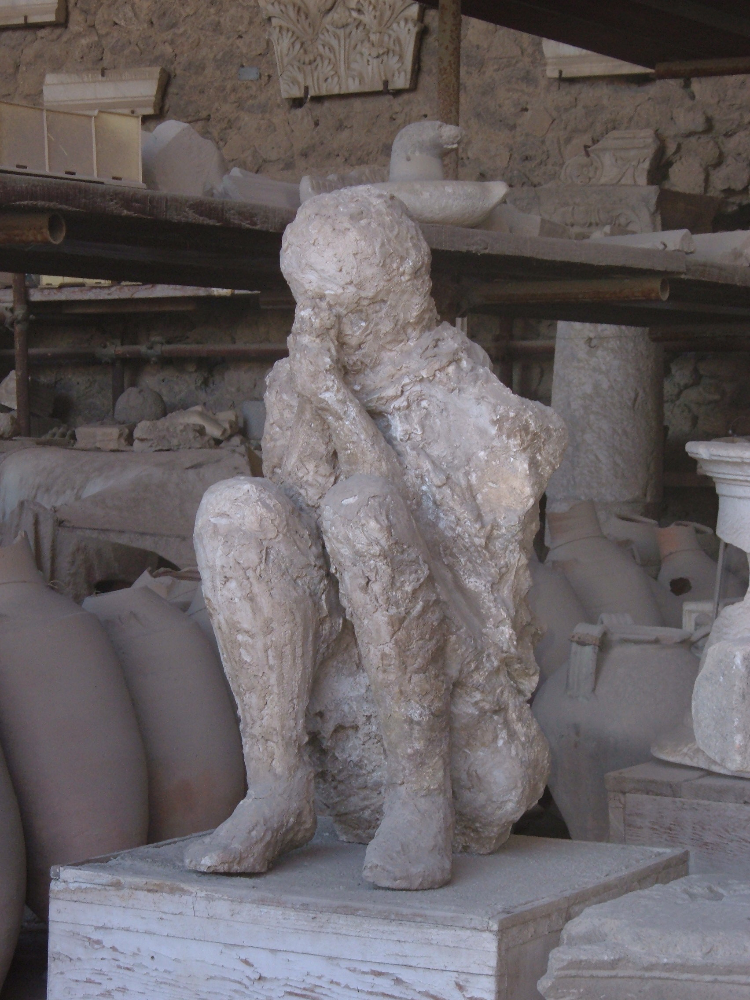
這些鑄像不是遺體本身，而是遺體留下的形狀。石膏填滿了身體腐爛後留下的空洞，連衣服的皺褶、頭髮的紋路有時都留了下來。一九六一年，逃亡者花園裡一次發現了十三具遇難者的鑄像，一家人結伴逃跑，最後倒在同一處。二〇二四年，科學家從幾具鑄像中提取出 DNA，重新檢驗他們之間的關係，發現有些被以為是一家人的遺骸，其實並沒有血緣關係。龐貝還在不斷修正我們以為知道的事。看著這些鑄像，最難受的不是他們死了，而是他們死前的姿勢太像活人：有人蜷著身子，有人用手遮住臉，有人緊緊抱著孩子。火山灰沒有給他們留下遺言，只留下了姿勢。
維蘇威火山沒有在公元七十九年之後就此安靜下來。此後它又爆發了四十多次，最近的一次是一九四四年。它至今仍是一座活火山，也是全世界最危險的火山之一，因為山腳下住著人。紅色警戒區內住了大約六十七萬人，義大利政府為此制定了完整的疏散計畫。龐貝的悲劇沒有變成一個遙遠的傳說，它至今仍是一個正在管理的風險。
龐貝本身也還沒有挖完。整座城大約三分之二已經出土，剩下的三分之一還埋在地下。一九九七年，龐貝、赫庫蘭尼姆與托雷安農齊亞塔一起被列入聯合國教科文組織的世界遺產名錄。每年有數百萬遊客走進這座城，看它的街道、房子和鑄像。二〇一八年以來，第五區的挖掘又有了新發現：裝飾華麗的房屋、寫著字的牆壁、甚至一間保存完好的快餐店。龐貝不是一個已經講完的故事，它還在繼續被挖出來。
龐貝的故事裡有兩種時間。一種是毀滅的時間：不到兩天，一座活了六百年的城市就停止了。另一種是保存的時間：一千六百多年之後，這座城市以另一種方式回來了，街道、麵包、選舉海報和死者的姿勢都還在。火山同時做了兩件事：它殺死了一座城，也替它辦了一場漫長的葬禮，葬禮的結果是，這座城比所有同時代的城市都活得更久。
我們讀龐貝，不只是為了看一場災難，而是為了看見普通日子的重量。歷史書上寫滿了皇帝、戰爭與條約，但大多數人的一生是由更小的東西組成的：早上買的麵包、門口的狗、牆上的一句話、看角鬥時和鄰城人吵的一場架。龐貝把這些小東西留了下來，提醒我們，文明不是由紀念碑組成的，而是由每一天組成的。
而火山還在那裡。它提醒我們，腳下的地面從來不是理所當然的。龐貝人修好了地震震裂的劇場，以為生活會繼續，他們錯了，但錯得情有可原。我們今天也住在自己的火山旁邊，只是火山的名字不一樣：可能是氣候，可能是戰爭，可能是我們以為永遠不會發生的事。龐貝留給我們的，不是一句「要珍惜每一天」那樣的空話，而是一個具體的畫面：一座城在一天之內死去，而它死去的那一天，和前一天看起來沒有什麼不同。
History & Civilization
A city died in a single day, then slept underground for more than sixteen centuries.
Pompeii was not a city built for disaster. It stood on an old lava plateau beside the Bay of Naples, about eight kilometres from Mount Vesuvius, facing the sea with the volcano at its back. Its history was far longer than its disaster: people had settled there by the seventh or sixth century BC — Oscans first, then Samnites, and finally Romans. By AD 79 it was a city more than six hundred years old, its walls enclosing sixty-four to sixty-seven hectares, home to about eleven thousand people.
It was not Rome, not the heart of any empire. It was a middling port town that lived on wine, olive oil and fish sauce, with a forum, temples, baths, a theatre and the oldest surviving stone amphitheatre in the Roman world. Rich men lived in great houses; the poor lived in small rooms upstairs; the streets held bakeries, taverns, laundries and a brothel. It was ordinary, like any Roman town. And that ordinariness is what gives its fate its weight: what time sealed away was not a palace, but the everyday life of a city.
Before the disaster came, Pompeii had already been shaken once. On 5 February AD 62, a great earthquake struck the city hard; Seneca recorded it in his Natural Questions. Temples fell, houses cracked, even the arches of the amphitheatre were damaged. The people did not leave. They began to rebuild. The amphitheatre was among the first buildings restored, and seventeen years later scaffolding and half-finished walls were still everywhere in the city.
Looking back, the earthquake reads like a warning. No one read it that way at the time. Vesuvius had slept for centuries, its slopes covered in vineyards, and the Romans took it for an ordinary mountain. The geographer Strabo had written that its summit looked as though it had been eaten by fire, but he recorded it as a curiosity of the landscape. No one connected the earthquake with the volcano. The people of Pompeii repaired the theatre, repainted their walls, and went on with their lives. They were not foolish. Like everyone living in a quiet age, they believed tomorrow would be much like yesterday.
The traditional account dates the eruption to 24 August AD 79. The date comes from two letters the younger Pliny wrote to the historian Tacitus, the only eyewitness account to survive. But in 2018 archaeologists found a line of charcoal writing on the wall of a house that was being renovated when the eruption struck, dated 17 October; the fruit, the clothing and a coin minted after September all point to autumn as well. Most scholars now lean towards late October, and the exact date remains unsettled. Even the day a city died is still argued over — that, too, belongs to the story of Pompeii: what we take for certain is often only the version that was copied most often.
Shortly after midday that day, from Misenum across the bay, the seventeen-year-old Pliny the Younger saw a cloud rising above Vesuvius, shaped like a pine tree, its trunk shooting straight up and its top spreading out in all directions. His uncle, Pliny the Elder — commander of the fleet and the naturalist who wrote the Natural History — at once ordered ships out, to observe at close hand and to rescue people on the shore. The younger Pliny stayed behind with his books and did not go. The elder Pliny landed at Stabiae, breathed in ash and poisoned air, and died there that night. Some twenty-five years later his nephew wrote it all down for Tacitus, producing the first scientific description of a volcanic eruption in history — and giving this kind of eruption its name: Plinian.
The eruption lasted nearly two days. The column of ash rose more than thirty kilometres into the sky, and pumice fell like hail on the roofs of Pompeii, piling up thicker and thicker. Many people escaped in the pauses between the falls, and the streets slowly emptied. Then the surges came — searing flows of gas and ash sweeping down the mountainside, swallowing the whole city in minutes. Pompeii was buried under four to six metres of ash and pumice; Herculaneum was buried deeper still, under nearly twenty metres. About 1,150 sets of remains have been found at Pompeii so far; the true death toll is still unknown, estimated at between 1,500 and 16,000. Most of the inhabitants did get away. Those who stayed were the ones who moved too slowly, who could not bear to leave, or who simply did not believe such a thing could happen.
The most moving thing about Pompeii is not how it was destroyed, but what it was before the destruction. The ash fell like a rough but honest hand, pressing down on a city in the middle of its day. The paving stones of the streets still carry the ruts of cart wheels, and stepping stones stand in the middle of the road so that pedestrians could cross without stepping into the mud when it rained. In the bakeries, loaves of bread still lie charred in the ovens; on the tavern counters, jars for food are still set into the stone; on the walls, posters urge citizens to vote for one candidate or another for town councillor.
The rich lived in houses as large as palaces. The largest house in the city is the House of the Faun, named for a bronze of a dancing faun in its atrium. In the reception hall its owner laid a great mosaic showing Alexander the Great meeting Darius III of Persia at the Battle of Issus, the armies of two empires crashing together. That mosaic is now in the Archaeological Museum in Naples. At the door of another house, a small mosaic of a dog carries a warning that needs no translation even now: beware of the dog.
The amphitheatre was built around 70 BC, the oldest surviving stone amphitheatre in the Roman world, holding some twenty thousand spectators — more than the population of the whole town. In AD 59, spectators from Pompeii and the neighbouring town of Nuceria came to blows at the games, and the fighting turned bloody enough for the Senate in Rome to close the theatre for ten years. These details are precious because they are not the history of emperors and generals, but the history of ordinary people. Pompeii left behind no great speeches and no treaties. It left bread, a dog, election posters, and a brawl at the games. That is the history most people actually lived.
After it was buried, the world forgot Pompeii for more than sixteen centuries. In the 1590s, workmen digging a water channel kept striking walls, and the architect Domenico Fontana simply ran his tunnel straight through them; no one knew a city lay underfoot. Herculaneum was dug first: in 1738 the King of Naples ordered systematic digging there. In 1748 the diggers moved to Pompeii, at first believing they had found a different town, until in 1763 an inscription naming the "republic of the Pompeians" settled the question.
What turned Pompeii from treasure hunting into science was an archaeologist named Giuseppe Fiorelli. In 1863 he took charge of the dig, and his workmen had long noticed hollows in the hardened ash, sometimes with bones at the bottom — the moulds left by bodies that had decayed after burial. Fiorelli ordered liquid plaster poured into the hollows; when it set, the ash was chipped away. In February 1863, in a lane later called the Street of the Skeletons, the first four people came back into view in this way: a man, two women and a young girl, still in the positions in which they had died. In the century and more since, over a hundred casts have been made by this method.
The casts are not the bodies themselves, but the shapes the bodies left behind. The plaster filled the space where the body had decayed, and sometimes even the folds of clothing and the lines of hair survived. In 1961, thirteen casts were found together in the Garden of the Fugitives — a family fleeing together, falling in the same place. In 2024, scientists extracted DNA from several casts and tested the relationships between them, finding that some remains long assumed to be one family were not related by blood at all. Pompeii is still correcting what we thought we knew. The hardest thing about looking at the casts is not that these people died, but that the poses in which they died look so much like living: one curled up, one with a hand over the face, one holding a child tight. The ash left them no last words — only postures.
Vesuvius did not go quiet after AD 79. It has erupted more than forty times since, most recently in 1944. It is still an active volcano, and one of the most dangerous in the world — because people live at its foot. About 670,000 people live inside the red zone, and the Italian government keeps a full evacuation plan ready. The tragedy of Pompeii never became a distant legend; it is still a risk being managed today.
Pompeii itself has not finished being dug. About two-thirds of the city has been uncovered; the remaining third still lies underground. In 1997 Pompeii, Herculaneum and Torre Annunziata were inscribed together on UNESCO's World Heritage List. Millions of visitors walk into the city every year, through its streets, its houses, past its casts. Since 2018, digging in Regio V has brought new finds: richly decorated houses, walls covered in writing, even a fast-food shop preserved almost whole. Pompeii is not a finished story. It is still being dug out of the ground.
There are two kinds of time in the story of Pompeii. One is the time of destruction: in less than two days, a city that had lived for six hundred years stopped. The other is the time of preservation: more than sixteen centuries later, the city came back in another form, its streets, its bread, its election posters and the postures of its dead still there. The volcano did two things at once: it killed a city, and it gave it a funeral so long that the city has outlived every city of its age.
We read Pompeii not only to watch a disaster, but to see the weight of ordinary days. The history books are full of emperors, wars and treaties, but most lives are made of smaller things: the bread bought in the morning, the dog at the door, a line of writing on a wall, a fight with the neighbours at the games. Pompeii kept those small things, and reminds us that a civilisation is not made of monuments, but of days.
And the volcano is still there. It reminds us that the ground under a prosperous life was never guaranteed. The people of Pompeii repaired the theatre the earthquake had cracked, believing life would go on. They were wrong, but understandably wrong. We, too, live beside our own volcanoes, only under different names: climate, war, the things we are sure will never happen. What Pompeii leaves us is not an empty exhortation to treasure every day, but a concrete image: a city died in a single day, and the day it died looked no different from the day before.
刪掉或改掉的可疑說法：爆發日期傳統作八月二十四日，但木炭題字、秋季果實與九月後錢幣指向十月下旬，正文兩說並陳、不寫死；地震年份有公元六十二或六十三年兩說，正文採塞內卡所載的六十二年；死亡人數僅一千一百五十具遺骸為實數，總數無定論，正文只寫估計範圍；亞歷山大馬賽克的製作年份未寫，只寫題材與現藏地。
錢與人性
一家幾乎不做生意的公司，如何讓整個倫敦相信自己發了財
一七二〇年六月，倫敦交易巷的咖啡館裡擠得水泄不通。貴婦與女僕、牧師與水手、議員與學徒，全都擠在同一張桌子旁，談論同一樣東西：一張南海公司的股票。年初它還只值一百二十八鎊，到了六月底，一張已經喊到一千鎊以上。有人抵押了房子，有人賣掉了年金，有人借錢買進，只為再轉手賣給下一個人。沒有人問這家公司到底賺不賺錢——價格本身就是答案，漲，就是證據。
這場狂熱只維持了一個夏天。九月，股價跌破三百鎊；到了年底，只剩一百二十四鎊，幾乎回到原點。數千人破產，一位郵政總長服毒自盡，公司的董事被逮捕，國會展開調查，英國第一位實質上的首相在廢墟上收拾殘局。就連牛頓——那個算出天體運行的人——也在這場泡沫裡賠掉了大半生的積蓄。
南海泡沫不是人類第一次發瘋，卻是第一次有這麼多人、拿著這麼多錢、在這麼短的時間裡一起發瘋，而且留下完整的價格紀錄、國會調查報告與當事人的帳本。它值得一讀，不是因為它離奇，而是因為它一點也不離奇：它的每一個環節，後來都一再重演。
故事要從一場戰爭的帳單說起。一七一〇年八月，羅伯特·哈利出任英國財政大臣，接手的是一個爛攤子：西班牙王位繼承戰爭打了快十年，政府欠下九百多萬鎊沒有著落的債務，沒有指定收入可以償還。當時的英國沒有中央銀行可以無限印鈔，借來的錢要靠稅收慢慢還，而稅收早已被抵押殆盡。
哈利與商人約翰·布朗特想出一個辦法：成立一家新公司，讓所有國債的債權人把債權交給公司，換成公司的股票。政府每年付給公司一筆固定的錢——五十六萬八千多鎊，相當於百分之六的利息——公司再把這筆錢當作股息分給股東。債主手上的債權變成了可以買賣的股票，政府的還債壓力變成了一筆固定的年付。一七一一年一月，南海公司就這樣成立了，九月取得皇家特許狀。
公司名字的「南海」，指的是南美洲周圍的海域。根據一七一三年的《烏特勒支和約》，英國從西班牙手裡取得了一項特權：阿謝恩托，也就是向西班牙美洲殖民地供應黑奴的壟斷權。聽起來是一門大生意，實際上幾乎沒有做成。西班牙與英國時戰時和，貿易屢屢中斷，第一艘年度商船直到一七一七年才出發，隔年又因兩國交惡而停擺。公司的股票之所以值錢，從來不是因為它賺了多少錢，而是因為它背後站著國家信用——它拿著國債，發著股息，看起來穩如磐石。
一七一九年，公司的董事們提出了一個更大膽的計畫：把全國三千一百萬鎊的國債全部接過來。英格蘭銀行也想接這筆生意，雙方競價，最後南海公司以更優惠的條件勝出。一七二〇年四月二日，南海法案在國會通過。消息一出，股價立刻開始爬升。
這個計畫的邏輯聽起來很漂亮。債權人把手上的年金與債券換成南海公司的股票，公司用政府每年支付的利息來發股息，股價越高，換債的成本就越低，國債就還得越快。問題是，股價要一直漲，遊戲才能玩下去。董事們很清楚這一點，於是開始動手推高股價：公司用自己的錢在市場上買自己的股票；向買股票的人提供貸款，拿股票本身作抵押，借來的錢又拿去買更多股票；內部人士利用提前知道的消息，在債權轉換前低價收購債券。一切合法與不合法的手段，都指向同一個方向：讓價格上去。
三月，股價三百三十鎊。五月，五百五十鎊。市場上開始流傳一句話：南海公司的股票沒有天花板。
倫敦的股票交易沒有交易所，交易的場所是交易巷兩旁的咖啡館。喬納森咖啡館裡，經紀人站在椅子上喊價，買賣單寫在小紙片上遞來遞去。到了這個夏天，連椅子都不夠站了。女僕拿出積蓄，牧師拿出教會的錢，連從未見過股票的人也開始問：哪裡可以買？
公司順勢推出一輪又一輪的認購：四月、五月、六月、八月，認購價一次比一次高，最後一輪在八月二十四日，認購價開到一千鎊一股，只需先付兩百鎊，其餘分期繳納。分期付款的意思是，窮人也可以上車——只要付得起頭期，就能宣稱自己擁有一千鎊的股票。市場上還冒出上百家新的「泡沫公司」，有的要開發新機器，有的要從海水裡提煉鹽，有的連要做什麼都說不清楚，只有一張招股書和一個響亮的名字。
六月底，股價衝破一千鎊；當時一幅諷刺版畫記載的最高價是一千零五十鎊。按股價推算，公司的帳面總市值一度達到三億鎊上下，接近國債總額的十倍。一家幾乎不做生意的公司，帳面上的價值超過了整個國家的債務。這時候，連最堅定的懷疑者也開始動搖：也許這一次真的不一樣。
艾薩克·牛頓是當時英國最聰明的人，也是最謹慎的投資人之一。他做過皇家鑄幣局局長，管過國家的錢，長期分散投資政府債券與股票，到一七二〇年初，他手上的資產大約三萬兩千鎊，是一筆不小的財富。
四月到五月間，股價漲到三百五十鎊左右，牛頓決定獲利了結，賣出八千股，賺了至少兩萬鎊。這是一次完美的出場。他本來可以就此收手。但股價沒有停下來，它繼續漲，漲到五百、七百、一千。看著身邊的人一個個發財，牛頓慌了。六月十四日，他把賣掉股票賺來的錢，連同更多的本金，總共兩萬六千鎊，又投了回去，買價大約七百鎊一股——比他賣出的價格貴了一倍。
秋天股價崩盤時，牛頓在這筆交易上賠掉七成以上。按皇家學會數學家安德魯·奧德利茲科二〇一九年的重建，他的損失至少一萬兩千鎊，很可能接近一萬四千鎊；傳統的說法則是兩萬鎊，來自他姪女的轉述。無論哪個數字，都相當於他十年以上的薪水。後世流傳一句據說是牛頓的話：「我能算出天體的運行，卻算不出人心的瘋狂。」這句話最早的版本出自一七五六年的一份軼事手稿，一八二〇年才出版，原話只有一句：「我算不出人心的瘋狂。」天體運行的那半句，是後人替他加上的潤飾。但潤飾歸潤飾，故事本身是真的：一個算出萬有引力的人，算不出自己會在什麼時候貪心。
同一個夏天，有一個人做了相反的決定。書商托馬斯·蓋伊在四月到六月間，把價值五萬多鎊的南海股票陸續賣出，套現超過二十五萬鎊。泡沫破滅時，他毫髮無傷。第二年，他用這筆錢創辦了蓋伊醫院，至今仍在倫敦行醫。牛頓與蓋伊的差別不在聰明，而在出場：一個在漲聲中賣掉，一個在漲聲中買回。
泡沫的破裂，諷刺的是，從南海公司自己推動的一項法案開始。為了消滅搶生意的「泡沫公司」，公司遊說國會通過《泡沫法案》，禁止未經皇家特許成立股份公司。法案在一七二〇年六月通過，七月開始執行，上百家小公司一夕之間變成非法。買了那些公司股票的人血本無歸，只好賣掉手上的南海股票來填補損失。南海公司親手點燃了導火線。
八月，股價開始鬆動。九月，恐慌全面爆發。月底，股價跌破三百鎊；十月，跌到兩百鎊；年底，只剩一百二十四鎊。幾個月之間，超過八成的市值蒸發了。銀行收不回以股票作抵押的貸款，一家接一家倒閉。郵政總長詹姆斯·克拉格斯服毒自盡。憤怒的投資人包圍國會，要求徹查。
國會成立祕密委員會調查，結果毫不留情：董事們內線交易、操縱股價、行賄議員，連國王的情婦都牽涉其中。公司的董事被逮捕，財產按獲利比例沒收。據記載，約翰·布朗特的財產從十八萬鎊以上被沒收到只剩一千鎊。收拾殘局的是羅伯特·沃波爾——他反對過這個計畫，現在由他來善後。他讓英格蘭銀行為南海公司的資本提供擔保，重新安排國債，穩住國家信用。沃波爾因此站穩了權力，成為英國第一位實質上的首相。
南海公司沒有立刻消失。它被重組之後又活了一百多年，一七四八年以後實際上不再做貿易，只剩下管理國債的軀殼，直到一八五三年才正式解散。諷刺的是，這家引發人類史上最著名泡沫的公司，最後的結局平淡無奇：它沒有破產，只是慢慢老死。
而一七二〇年不只是倫敦的年份。同一年，法國的密西西比計畫也在崩盤，約翰·勞的紙幣帝國與南海公司的股票帝國在同一個夏天一起漲、一起跌。荷蘭阿姆斯特丹的投機風潮同樣席捲而來。經濟史學者把一七二〇年稱為第一場全球金融泡沫：三個國家的市場第一次因為同一種情緒而同時沸騰、同時冷卻。
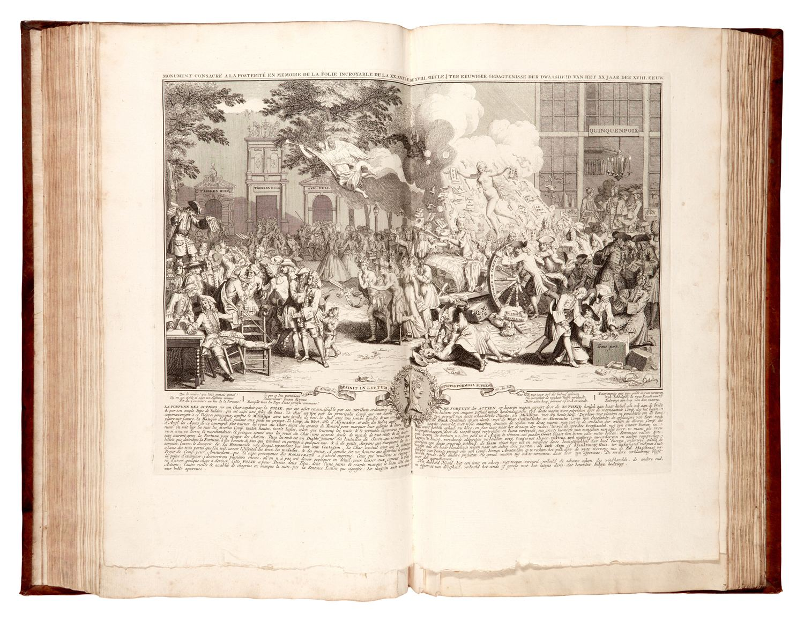
泡沫之後，英國學到的教訓很具體：股份公司的設立從此受到嚴格管制，《泡沫法案》一直到一八二五年才廢除；投資人開始懂得問一家公司的錢到底從哪裡來；英格蘭銀行在危機中的角色被寫進制度。但更深的教訓不是法律，而是一種認識：價格會說謊，而且越多人相信，謊言就越像真的。
南海泡沫已經過去三百多年了。股票變成了螢幕上的數字，咖啡館變成了手機裡的群組，認購書變成了連結，但遊戲的結構沒有變：一個動人的故事，一種可以轉手的資產，一群害怕錯過的人，再加上一點借來的錢。故事負責讓人相信，轉手負責讓價格上漲，害怕錯過負責讓人進場，借錢負責讓漲跌都放大。
牛頓的故事之所以被講了三百年，不是因為他賠了多少錢，而是因為他證明了一件事：聰明保護不了人，謹慎也只能保護一半。他第一次賣出是對的，第二次買回是錯的，兩次決定之間隔了不到兩個月，差別不在智商，而在情緒。一個人可以算出天體的運行，卻算不出自己在看到別人賺錢時，心裡會冒出什麼念頭。
南海公司的股票最後跌回了一百二十四鎊，幾乎就是它年初的價格。從頭到尾，公司的生意沒有變過，變的只是人們願意為什麼付錢。這就是泡沫留給我們的最簡單、也最難記住的一課：價格不是價值，熱鬧不是繁榮，而當所有人都在談論同一張股票的時候，最該問的問題不是「還能漲多少」，而是「它到底在賣什麼」。
Money & Human Nature
How a company that barely traded convinced all of London it was rich
In June 1720, the coffee houses of Exchange Alley were packed to bursting. Duchesses and maids, clergymen and sailors, members of Parliament and apprentices crowded around the same tables, talking about the same thing: a share in the South Sea Company. In January it had been worth £128; by the end of June, a single share was changing hands for more than £1,000. People mortgaged their houses, sold their annuities, borrowed money to buy in, only to sell on to the next person. Nobody asked whether the company actually made money — the price was the answer, and a rising price was the proof.
The mania lasted a single summer. In September the share price fell below £300; by the end of the year it was £124, almost exactly where it had started. Thousands were ruined. A Postmaster General poisoned himself. The company's directors were arrested, Parliament opened an inquiry, and Britain's first de facto prime minister picked through the wreckage. Even Newton — the man who had worked out how the heavens move — lost most of a lifetime's savings in the bubble.
The South Sea Bubble was not the first time human beings lost their heads. It was the first time so many people, with so much money, lost them together in so short a time — and left behind a complete record of prices, a parliamentary inquiry and the account books of the people involved. It is worth reading not because it is strange, but because it is not strange at all: every part of it has been repeated since.
The story begins with a war's unpaid bill. In August 1710, Robert Harley became Chancellor of the Exchequer and inherited a mess: the War of the Spanish Succession had been running for nearly a decade, and the government owed more than £9 million of unfunded debt, with no revenue set aside to repay it. Britain had no central bank that could print money at will; borrowed money had to be repaid slowly from taxes, and the taxes had already been mortgaged away.
Harley and the merchant John Blunt devised a scheme: form a new company, and let every holder of government debt hand that debt to the company in exchange for company shares. The government would pay the company a fixed sum each year — £568,279, equivalent to 6 per cent interest — and the company would distribute it to shareholders as dividends. Creditors would hold shares they could buy and sell instead of debt, and the government's burden would become a single fixed annual payment. In January 1711 the South Sea Company was founded in this way, receiving its royal charter that September.
The "South Sea" in the company's name meant the waters around South America. Under the Treaty of Utrecht in 1713, Britain obtained from Spain a prize: the Asiento de Negros, the monopoly on supplying enslaved Africans to Spain's American colonies. It sounded like a great business. In practice it barely happened. Britain and Spain were at war as often as at peace, trade was repeatedly interrupted, the first annual ship did not sail until 1717, and the following year trade stopped again when the two countries fell out. The company's shares were valuable not because of what it earned, but because of what stood behind it — the credit of the state. It held government debt, it paid dividends, and it looked as solid as a rock.
In 1719 the company's directors proposed something bolder still: take over the entire national debt, some £31 million. The Bank of England wanted the business too; the two sides bid against each other, and the South Sea Company won with the better terms. On 2 April 1720 the South Sea Bill passed through Parliament. The moment the news broke, the share price began to climb.
The logic sounded elegant. Creditors would exchange their annuities and bonds for South Sea shares; the company would pay dividends out of the interest the government paid it each year; the higher the share price, the cheaper the conversion, and the faster the national debt would be cleared. The catch was that the price had to keep rising for the game to go on. The directors knew this, so they set about pushing it up: the company used its own money to buy its own shares; it lent money to share buyers, taking the very shares as collateral, and the borrowed money went to buy more shares; insiders used advance knowledge of the debt conversions to buy up debt cheaply beforehand. Every means, legal and otherwise, pointed in one direction: get the price up.
In March the price stood at £330. In May, £550. A saying began to circulate in the market: South Sea stock had no ceiling.
London had no stock exchange; trading happened in the coffee houses along Exchange Alley. At Jonathan's, brokers stood on chairs to call out prices, and buy and sell orders passed from hand to hand on slips of paper. By that summer there were not enough chairs to stand on. Maids put up their savings, clergymen put up church money, and people who had never seen a share began asking where they could buy one.
The company obliged with round after round of subscriptions: April, May, June, August, each priced higher than the last. The final round, on 24 August, was priced at £1,000 a share, with only £200 due up front and the rest payable in instalments. Instalments meant that even the poor could join in — pay the deposit, and you could claim to own £1,000 of stock. Meanwhile, more than a hundred new "bubble companies" appeared, some promising new machines, some a way of extracting salt from seawater, some with nothing to say at all beyond a prospectus and a grand name.
By the end of June the price had broken £1,000; a satirical print of the time records a high of £1,050. On the share price alone, the company's paper value had swollen to around £300 million, close to ten times the national debt. A company that barely traded was worth, on paper, more than the debts of the entire nation. By now even the firmest sceptics were wavering: perhaps this time really was different.
Isaac Newton was the cleverest man in Britain, and one of its most careful investors. He had run the Royal Mint and looked after the nation's money; for years he had spread his investments across government bonds and shares, and by the start of 1720 he was worth about £32,000 — a considerable fortune.
In April and May, with the price around £350, Newton decided to take his profit and sold 8,000 shares, making at least £20,000. It was a perfect exit. He could have stopped there. But the price did not stop. It kept climbing — to £500, £700, £1,000. Watching everyone around him grow rich, Newton panicked. On 14 June he put the money back in, and more besides — £26,000 in all — at a price of about £700 a share, twice what he had sold for.
When the price collapsed in the autumn, Newton lost more than 70 per cent on that purchase. Andrew Odlyzko, a mathematician at the University of Minnesota, reconstructed Newton's trades for the Royal Society in 2019 and put his losses at no less than £12,000, probably nearer £14,000; the traditional figure, handed down from Newton's niece, is £20,000. Whichever number is right, it was more than ten years' salary. A remark is often attributed to Newton: "I can calculate the motions of the heavenly bodies, but not the madness of people." The earliest version of the line comes from an anecdote manuscript of 1756, published in 1820, and says only: "I cannot calculate the madness of people." The half about the heavenly bodies was added later, by other hands. But the story itself is true: the man who worked out universal gravitation could not work out when he himself would grow greedy.
That same summer, one man made the opposite decision. Thomas Guy, a bookseller, sold off his South Sea shares between April and June — a little over £50,000 of stock — and took home more than £250,000. When the bubble burst he was untouched. The following year he used the money to found Guy's Hospital, which still treats patients in London today. The difference between Newton and Guy was not intelligence. It was the exit: one sold while prices were rising, the other bought back in.
Ironically, the break began with a law the South Sea Company itself had pushed through. To kill off the rival "bubble companies" stealing its investors, the company lobbied Parliament for the Bubble Act, which banned the creation of joint-stock companies without a royal charter. The Act passed in June 1720 and took effect in July; more than a hundred small companies became illegal overnight. People who had bought their shares lost everything, and to cover their losses they had to sell their South Sea stock. The company had lit its own fuse.
In August the price began to slip. In September panic took hold. By the end of the month the price was below £300; in October it fell to £200; by the end of the year it was £124. In a matter of months, more than four-fifths of the market's value had evaporated. Banks that had lent against shares as collateral could not collect, and failed one after another. James Craggs the Elder, the Postmaster General, poisoned himself. Furious investors surrounded Parliament and demanded an inquiry.
Parliament appointed a Committee of Secrecy, and its findings were unsparing: the directors had traded on inside information, manipulated the price and bribed members of Parliament; even the King's mistress was implicated. The directors were arrested and their property confiscated in proportion to their gains. John Blunt's fortune was cut from more than £180,000 to £1,000, according to contemporary accounts. The clean-up fell to Robert Walpole — the man who had opposed the scheme and now had to save the country from it. He had the Bank of England guarantee much of the South Sea Company's capital, rearranged the national debt and steadied the nation's credit. In doing so he secured his own power, becoming Britain's first de facto prime minister.
The South Sea Company did not vanish at once. Restructured, it lived on for more than a century; after 1748 it effectively stopped trading and remained only as a shell for managing government debt, until it was formally dissolved in 1853. Strangely, the company behind the most famous bubble in history ended not in bankruptcy but in a quiet old age: it did not go bust, it simply grew old and died.
And 1720 was not London's year alone. In the same year, France's Mississippi Scheme was collapsing too: John Law's paper-money empire and the South Sea Company's share empire rose together in one summer and fell together. Amsterdam was swept by the same speculative fever. Economic historians call 1720 the first global financial bubble: for the first time, the markets of three nations boiled and cooled on the same sentiment.
After the bubble, the lessons Britain took away were concrete: the creation of joint-stock companies was strictly controlled, and the Bubble Act stayed on the books until 1825; investors learned to ask where a company's money actually came from; the Bank of England's role in a crisis was written into the system. But the deeper lesson was not a law. It was a recognition: prices can lie, and the more people believe the lie, the truer it looks.
More than three hundred years have passed since the South Sea Bubble. Shares have become numbers on a screen, the coffee houses have become chat groups on a phone, the subscription forms have become links — but the structure of the game has not changed: a compelling story, an asset that can be passed on, a crowd afraid of missing out, and a little borrowed money. The story does the believing, the passing-on does the rising, the fear of missing out does the buying, and the borrowing magnifies the rise and the fall alike.
Newton's story has been told for three hundred years not because of how much money he lost, but because of what it proved: cleverness does not protect a person, and caution only protects halfway. His first sale was right; his second purchase was wrong; the two decisions were less than two months apart, and the difference between them was not intelligence but emotion. A man can calculate the motions of the heavenly bodies and still not calculate what he will think when he watches other people grow rich.
South Sea stock ended the year at £124, almost exactly where it had begun it. From start to finish, the company's business never changed. Only what people were willing to pay for it changed. That is the simplest lesson the bubble left us, and the hardest to remember: price is not value, noise is not prosperity, and when everyone is talking about the same stock, the question to ask is not "how much higher can it go?" but "what is it actually selling?"
科學與世界
一個有期限的承諾，與三十八萬公里外的一小步
一九六一年五月二十五日，美國總統約翰·甘迺迪站在國會面前，說出了一句在當時聽起來近乎狂妄的話：美國要在這個十年結束之前，把人送上月球，再平安帶回來。那時只有一名美國人上過太空——不到一個月前，艾倫·謝潑德完成了十五分鐘的次軌道飛行——而美國連一個人繞地球一圈都還沒做到。甘迺迪給出的期限不是十年，是八年半。一個國家對著全世界許下承諾，然後用八年時間，把承諾變成工程。
工程的規模大得難以想像。阿波羅計畫高峰期有四十萬人參與，兩萬多家企業與大學加入其中，總花費約二百五十四億美元，相當於今天約一千八百億美元。那是人類歷史上和平時期最大的一次技術動員。而它要完成的，說穿了只有一件事：把三個人送到三十八萬四千公里外的一塊石頭上，再把他們活著帶回來。
一九六九年七月十六日上午九點三十二分，佛羅里達州甘迺迪太空中心，三十九號發射台。土星五號火箭點火升空，推力達七百六十萬磅，整枚火箭高一百一十一公尺，是人類造過最大的運載火箭。頂端坐著三個人：指令長尼爾·阿姆斯壯，三十八歲；登月艙駕駛員巴茲·艾德林，三十九歲；指令艙駕駛員麥可·柯林斯，三十八歲。他們都是試飛員出身，都飛過雙子星計畫，彼此認識多年。十二分鐘後，他們進入地球軌道；約三小時後，第三節火箭再度點火，把他們推向月球。
這一路上沒有回頭路。三天航程裡，太空船以每小時近四萬公里的速度飛行，地球在舷窗後面越縮越小，變成一顆藍色的彈珠。
七月十九日，阿波羅十一號進入月球軌道。指揮艙「哥倫比亞號」開始一圈一圈繞月飛行，總共繞了三十圈。七月二十日，阿姆斯壯與艾德林爬進登月艙「老鷹號」，與指揮艙分離，柯林斯一個人留在哥倫比亞號上。
柯林斯後來寫道，那是人類歷史上最徹底的孤獨：月球的那一面，有三十億人再加兩個人；這一面，只有他一個人。每當哥倫比亞號繞到月球背面，無線電中斷，他與全人類之間就隔著一整顆月球，連求救都傳不出去。他在日記裡寫下的不是恐懼，而是一種奇異的平靜。
七月二十日下午，登月艙開始動力下降。下降開始約五分鐘後，高度約一萬公尺，駕駛艙裡響起警報：程式警報，一二〇二。接著又響了四次，一二〇二、一二〇一交替出現。導引電腦超載了——負責與指揮艙會合的雷達被留在開啟狀態，多佔了電腦約百分之十三的運算量，電腦一面工作，一面不斷重啟、丟掉次要任務，勉強維持飛行。
地面上，二十四歲的工程師傑克·加曼認出了這個警報：電腦不是壞了，只是在說自己忙不過來，關鍵的導引工作仍在進行。導引官史蒂夫·貝爾斯採納了他的判斷，通訊員查理·杜克回覆：「繼續，老鷹號。」
警報還沒完，地面又出現了。大約一千五百公尺高時，阿姆斯壯從窗口望出去，電腦選定的著陸點是一片佈滿巨石的隕石坑——西隕石坑周圍的石塊有的像汽車那麼大。他接過半手動控制，駕著登月艙向前飛，尋找平坦的地面。下降因此比預定多花了約四十秒，燃料不斷減少。休士頓不斷報出剩餘秒數：「六十秒。」「三十秒。」阿姆斯壯的心跳從每分鐘七十七下升到一百五十六下。
下午四點十七分，登月艙的探針觸及地面，藍色的接觸燈亮起。艾德林報出：「接觸燈。」阿姆斯壯切斷引擎。杜克的聲音傳來：「收到你們落地，老鷹號。」阿姆斯壯回答：「休士頓，這裡是寧靜基地。老鷹號已著陸。」儀表顯示，燃料大約只剩二十五秒——事後分析約四十五秒。無論哪個數字，餘裕都是以心跳來算的。
著陸後六個多小時，七月二十一日凌晨兩點三十九分，艙門打開。阿姆斯壯慢慢爬下梯子，在最底層停下來，伸出左腳，踩上月面。時間是凌晨兩點五十六分十五秒，美國東部時間七月二十日晚上十點五十六分。全球估計六億人正在看電視直播。他說出了那句話：「這是一個人的一小步，卻是全人類的一大步。」他原本想說的是「對一個人來說」，那個「一個」在電波裡丟失了，句子從此多了一個永遠的括號。
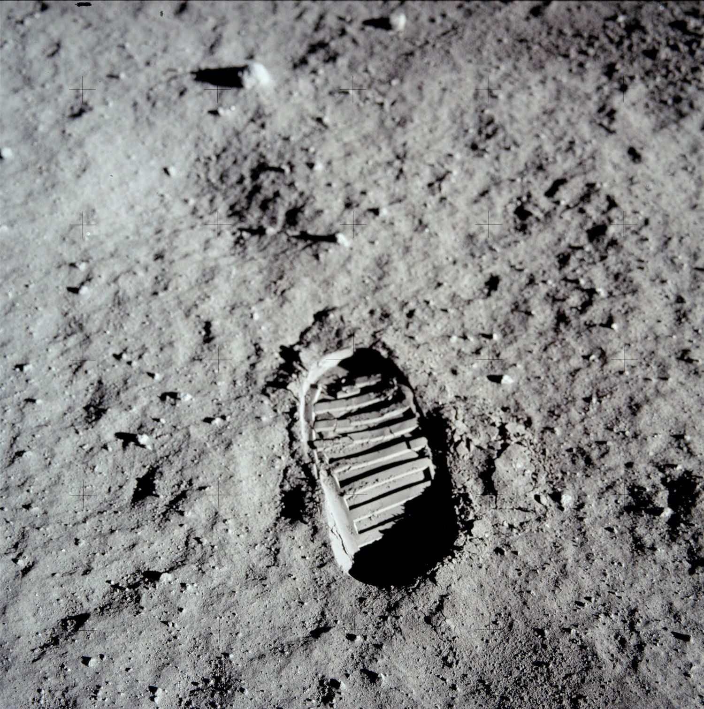
十九分鐘後，艾德林也踏上月面，望著四周說：「壯麗的荒涼。」在走出艙門之前，他在登月艙裡做了一件很少人知道的事：他是教會的長老，隨身帶了餅與酒，在月球上領了聖餐，並請正在收聽的人各自靜默片刻。
兩人在月面上工作了兩小時三十一分鐘，採集了約二十一點五公斤的月岩與月壤，架設了實驗儀器，豎起一面美國國旗，並在登月艙的支架上揭開一面銘牌，上面寫著：「來自地球的人類首次在此踏上月球，一九六九年七月，公元。我們為全人類的和平而來。」銘牌下方有三名太空人與尼克森總統的簽名。另有一片矽碟留在月面，刻著七十三個國家的善意訊息。
那一晚，尼克森總統從白宮打來電話，說這是「有史以來最具歷史意義的一通電話」。很少人知道，白宮同時備妥了另一篇講稿，以防兩人回不來：「命運注定，讓為和平探索月球的人，長眠於月球。」
阿姆斯壯拍了絕大多數照片——月面上的他本人，只出現在五張照片裡。
七月二十一日下午五點五十四分，老鷹號的上升段點火升空，回到月球軌道，與哥倫比亞號會合。柯林斯在對接後說，他終於不再是一個人了。七月二十四日，哥倫比亞號重返大氣層，濺落太平洋，由大黃蜂號航空母艦回收。整個任務歷時八天三小時十八分三十五秒。
三人隨即進入隔離檢疫——那時沒人能完全確定，月球上是否藏著地球沒有的病菌。
阿波羅十一號之後，又有五次任務把人送上月球，到一九七二年阿波羅十七號為止，總共十二個人在月面上走過。此後半個世紀，人類再也沒有回去過。登月艙的下降段還留在寧靜海，銘牌還在，國旗還在，腳印也還在——月球沒有風，沒有雨，沒有任何東西會把它們抹掉。
阿波羅十一號留下的，不只是一面旗與一塊牌。它證明了一件事：一個期限明確的承諾，可以把四十萬陌生人變成一支隊伍；一台不斷報錯的電腦，也可以在正確的設計下撐到最後一秒；而一個人的一小步，之所以成為全人類的一大步，不是因為那一步有多遠，而是因為在那一刻，有六億人同時抬頭，看著同一個方向。
半個世紀過去了，月球還在那裡。腳印還在，承諾也還在——等著下一個願意為它設定期限的人。
Science & the World
A promise with a deadline, and one small step 384,400 kilometres away
On 25 May 1961, President John F. Kennedy stood before Congress and said something that sounded almost reckless: before the decade was out, America would land a man on the Moon and bring him safely back to Earth. At that point only one American had flown in space — Alan Shepard, twenty days earlier, on a fifteen-minute suborbital hop — and no American had yet orbited the Earth. The deadline Kennedy set was not ten years. It was eight and a half. A nation made a promise to the whole world, and then spent eight years turning the promise into engineering.
The engineering was on a scale hard to imagine. At its peak the Apollo programme employed 400,000 people, drew on more than 20,000 firms and universities, and cost about $25.4 billion — roughly $180 billion in today's money. It was the largest peacetime technological mobilisation in human history. And all of it existed to do a single thing: carry three men to a rock 384,400 kilometres away, and bring them home alive.
On 16 July 1969, at 09:32 in the morning, the Saturn V lifted off from Launch Complex 39A at the Kennedy Space Center in Florida. Its thrust was 7.6 million pounds, and at 111 metres tall it was the largest rocket ever built. Atop it sat three men: Commander Neil Armstrong, 38; Lunar Module Pilot Buzz Aldrin, 39; and Command Module Pilot Michael Collins, 38. All three were test pilots, all had flown in Gemini, and they had known one another for years. Twelve minutes later they were in Earth orbit; about three hours later the third stage fired again and pushed them towards the Moon.
There was no turning back on this road. For three days the spacecraft flew at nearly 40,000 kilometres an hour, and the Earth shrank behind the window until it was a blue marble.
On 19 July, Apollo 11 entered lunar orbit. The Command Module Columbia began circling the Moon, thirty orbits in all. On 20 July, Armstrong and Aldrin climbed into the Lunar Module Eagle and separated from Columbia. Collins stayed behind, alone.
Collins later wrote that it was the most complete solitude in human history: on the far side of the Moon there were three billion people plus two; on this side, there was only him. Every time Columbia swung behind the Moon, the radio went silent, and a whole Moon stood between him and every other human being — no call for help could get through. What he recorded in his journal was not fear, but a strange calm.
On the afternoon of 20 July, Eagle began its powered descent. About five minutes in, at roughly 10,000 metres, an alarm sounded in the cabin: program alarm, 1202. Then four more — 1202, 1201, in turn. The guidance computer was overloaded. The rendezvous radar, needed later to find Columbia again, had been left switched on as an abort precaution, and it was consuming about thirteen percent of the computer's capacity. The computer kept working, restarting itself and shedding lesser tasks, barely holding the flight together.
On the ground, a 24-year-old engineer named Jack Garman recognised the alarm: the computer was not broken; it was saying it was too busy, and that the essential guidance work was still running. Guidance Officer Steve Bales took his judgement, and CapCom Charlie Duke answered: "We're Go on that alarm, Eagle."
The alarms were not the end of it. At about 1,500 metres, Armstrong looked out of the window and saw that the computer's chosen landing spot was a field of boulders around a crater — West Crater — some of the rocks as big as cars. He took semi-manual control and flew Eagle forward, hunting for flat ground. The descent ran about forty seconds longer than planned, and the fuel kept falling. Houston called out the remaining seconds: "Sixty seconds." "Thirty seconds." Armstrong's heart rate climbed from 77 to 156 beats a minute.
At 4:17 in the afternoon, Eagle's probes touched the surface and the blue contact light came on. "Contact light," Aldrin called. Armstrong cut the engine. Duke's voice came back: "We copy you down, Eagle." And Armstrong answered: "Houston, Tranquility Base here. The Eagle has landed." The gauges showed about twenty-five seconds of fuel remaining — post-flight analysis put it closer to forty-five. Whichever number you take, the margin was measured in heartbeats.
More than six hours after landing, at 02:39 on 21 July, the hatch opened. Armstrong climbed slowly down the ladder, paused at the bottom rung, and put his left foot on the surface. The time was 02:56:15 — 10:56 p.m. on 20 July in the eastern United States. An estimated 600 million people were watching on television. He spoke the sentence: "That's one small step for [a] man, one giant leap for mankind." He had meant to say "a man"; the little word was lost in the radio, and the sentence has carried an eternal bracket ever since.
Nineteen minutes later, Aldrin stepped onto the surface and looked around: "Magnificent desolation." Before leaving the cabin, he had done something few people know about. He was an elder of his church, and he had carried bread and wine with him; in the Lunar Module, on the Moon, he took communion, and asked everyone listening to pause for a moment in their own way.
The two men worked on the surface for two hours and thirty-one minutes, collecting about 21.5 kilograms of rock and soil, setting up instruments, planting an American flag, and uncovering a plaque on the Lunar Module's leg. It read: "Here men from the planet Earth first set foot upon the Moon, July 1969, A.D. We came in peace for all mankind." Below it were the signatures of the three astronauts and President Nixon. A small silicon disc was left on the surface too, etched with goodwill messages from seventy-three countries.
That night, President Nixon telephoned from the White House — "the most historic telephone call ever made", as he put it. Few people know that the White House had also prepared a second speech, in case the two men could not come home: "Fate has ordained that the men who went to the Moon to explore in peace will stay on the Moon to rest in peace."
Armstrong took the great majority of the photographs — and he himself appears in only five of them.
At 17:54 on 21 July, Eagle's ascent stage lifted off, returned to lunar orbit, and docked with Columbia. Collins, at last, was not alone any more. On 24 July, Columbia re-entered the atmosphere and splashed down in the Pacific, where the aircraft carrier USS Hornet recovered it. The whole mission had lasted eight days, three hours, eighteen minutes and thirty-five seconds.
The three men went straight into quarantine — at the time, no one could be entirely sure the Moon did not harbour germs the Earth had never met.
After Apollo 11, five more missions carried people to the Moon; by Apollo 17 in 1972, twelve men had walked on its surface. In the half-century since, no one has gone back. The descent stage still stands in the Sea of Tranquility, the plaque is still there, the flag is still there, and the footprints are still there — the Moon has no wind and no rain, and nothing will ever wash them away.
What Apollo 11 left behind was more than a flag and a plaque. It proved that a promise with a clear deadline can turn 400,000 strangers into a single crew; that a computer flashing alarms can still hold together to the last second, if it was designed right; and that one man's small step became a giant leap for mankind not because the step was long, but because, in that moment, 600 million people looked up at the same time, in the same direction.
Half a century has passed. The Moon is still there. The footprints are still there. And the promise is still there — waiting for the next person willing to give it a deadline.
人與社會
六十歲的老人、七十八個人，與一把不准自己做的鹽
一九三〇年四月六日清晨，印度古吉拉特邦的海邊小村丹迪。一個六十歲的老人穿著白色土布，赤腳走到海邊，彎下腰，從泥水裡拾起一小撮鹽。鹽很髒，混著泥沙，值不了幾個錢。但在英國的法律之下，這一拾就是犯罪：印度人不准自己製鹽，不准撿海邊天然結晶的鹽，鹽只能向政府買。老人知道自己正在違法，他正是為此而來。他身後站著七十八個人。二十四天前，他們從三百八十七公里外的薩巴爾馬蒂道場出發，一路走來。海灘上有記者、有警察、有全世界的目光。那把鹽放進鍋裡煮開的時候，一場席捲整個印度的運動正式開始了。
這篇文章要講的，就是那把鹽的故事：它為什麼不能自己做，一個老人為什麼要為它走三百八十七公里，以及一次看似微不足道的違法，如何動搖了一個帝國的根基。
鹽是人活著就離不開的東西。汗水會帶走鹽，身體每天都要補回來。在印度，鹽從來不缺：漫長的海岸線，陽光一曬，海水就結出鹽來。幾百年來，沿海的村子自己曬鹽、自己吃鹽，沒人覺得這需要誰批准。
改變這件事的，是生意。十八世紀，英國東印度公司看上了孟加拉的鹽業：它先壟斷販賣，後來乾脆把製鹽收歸自己控制。一七七二年，總督沃倫·黑斯廷斯把鹽業收歸公司控制；到一七八〇年，鹽的買賣完全由政府經手。鹽從日常用品，變成了稅收的工具。
一八五八年，英國王室從東印度公司手中接管印度，稅沒有廢。按當時的估算，鹽的專賣約佔英屬印度財政收入的一成。為了防堵私鹽，英國人還在印度內陸築起一道長達約二千三百英里的關卡線，以荊棘籬笆聞名，稱為「大鹽籬」，派人日夜巡守。這道籬笆到一八七九年才廢除。
一八八二年，《印度鹽法》把這套制度寫成法律：鹽只能在官方鹽場製造，印度人自己製鹽、藏鹽、賣鹽，都是犯罪。每莫恩德鹽——約三十七公斤——要繳一盧比四安那的稅。窮人吃鹽要繳稅，富人吃鹽也要繳稅，鹽成了每個人每天都要向帝國交的一筆錢。
一八八五年，印度國民大會黨第一次開會，就有人站起來談鹽稅。但談了四十五年，鹽稅紋風不動。直到一九三〇年，一個六十歲的老人決定，不談了，用走的。
一九二九年十二月，國民大會黨在拉合爾開會，宣布追求完全獨立，並把一九三〇年一月二十六日定為獨立日。那一天，印度各地升起了獨立的旗幟，宣讀了獨立宣言。但宣言之後呢？總督歐文不為所動，倫敦也不為所動。國大黨需要一個行動，一個能把宣言變成現實的行動。
甘地想了很久，最後選了鹽。鹽有三個好處，沒有別的議題比得上。第一，人人都要吃鹽，窮人富人、印度教徒穆斯林、城市鄉村，沒有一個人能置身事外。第二，鹽稅的不公義一眼就能看懂：海邊明明有鹽，法律卻說你不能撿。第三，違法製鹽的風險很小，一個農婦在自家門口煮一鍋海水，就是一次反抗。
一九三〇年一月三十一日，甘地寫信給總督歐文，提出十一項要求：廢除鹽稅、降低土地稅、釋放政治犯、保護印度土布，等等。信的最後說得很客氣，也很堅定：如果三月十一日之前得不到回覆，國大黨將發動公民不服從運動。歐文回了一封簡短的信，拒絕了。
三月初，甘地再寫一封信，告訴歐文他打算怎麼做：他要帶人走到海邊，親手製鹽。歐文沒有攔他。倫敦的官員私下說，一個老頭子去海邊撿鹽，能成什麼氣候？他們很快就知道自己錯了。
一九三〇年三月十二日清晨，甘地走出薩巴爾馬蒂道場。跟在他身後的是七十八個人，全是他親自挑選的道場成員，來自印度各地、不同的種姓與信仰，清一色是男性。他們沒有武器，沒有車輛，只有一根竹杖、一雙草鞋，和一張寫著路線的紙。每天走十六公里，經過四十八個村莊。
沿途的景象一天比一天熱鬧。村子裡的人出來迎接，送水、送飯、鋪路；村官當眾辭職，加入隊伍；記者跟著走，把每天的行程發回倫敦、紐約、東京。英國官員起初不以為意，後來開始緊張：這支隊伍沒有喊口號，沒有砸東西，只是一直走，一直走，走得全世界都在看。
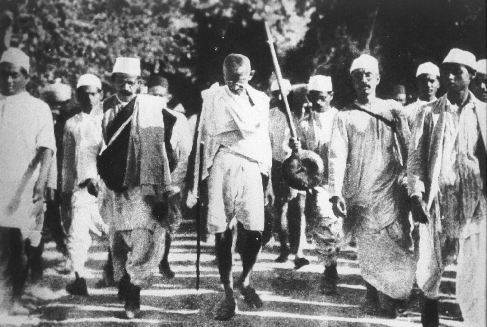
四月五日，他們抵達丹迪，一座海邊的小漁村。第二天清晨，甘地先到海裡沐浴、禱告，然後走到海灘上，彎腰拾起一把鹽。時間是上午八點半。他把鹽放進鍋裡，用海水煮出第一批違法的鹽。現場的記者把消息發向全世界，印度各地的人開始跟著做：沿海的村子煮海水，內陸的村子抵制洋布、拒繳稅，學生罷課，商人罷市。一把鹽，點燃了一場運動。
英國政府終於動手了。五月四日深夜到五日凌晨，警察在卡拉迪村逮捕甘地，把他關進耶拉瓦達監獄。甘地被捕之前，已經寫信告訴歐文下一步：突襲達拉薩納鹽場。
帶隊的是七十六歲的退休法官阿巴斯·蒂亞布吉，甘地的妻子卡斯圖芭走在他身邊。兩人出發前就被逮捕，判了三個月。接棒的是詩人薩羅吉尼·奈杜，她是國大黨的前主席，也是甘地最信任的人之一。
五月二十一日清晨，約二千五百名志願者集合在達拉薩納鹽場外。鹽場周圍是水溝與鐵絲網，裡面站著約四百名警察，手持鋼頭警棍。奈杜先讓眾人跪下禱告，然後告訴他們：你們會被打，不要還手，連手都不要抬起來擋。
接著，他們一排一排往前走。美國合眾社記者韋布·米勒站在幾步之外看著：警察衝出來，用警棍雨點般打在志願者的頭上，前排倒下，下一排再往前走，再倒下。沒有一個人還手。米勒在第一份電訊裡寫，有二百六十人受傷；他在回憶錄裡寫，他在醫院數到三百二十名傷者，其中兩人死亡。英國的電報檢查員一度扣住他的報導，米勒威脅要公開審查制度，報導才放行。最後，這篇報導登上了一千三百五十家報紙，美國參議員約翰·布萊恩把它全文讀進參議院的紀錄。
達拉薩納沒有搶到一粒鹽。但全世界都看到了：一方手無寸鐵，一方棍棒齊下。帝國的暴力第一次在眾目睽睽之下，失去了體面。
達拉薩納之後，運動蔓延到全印度。到一九三〇年底，官方統計有超過六萬人被捕，國大黨方面的說法接近九萬。監獄關不下，政府只好一邊抓人，一邊想辦法收場。尼赫魯被捕，奈杜被捕，甘地在獄中讀書、紡紗，等著對方先低頭。
一九三一年一月，甘地獲釋。總督歐文請他到德里談判。從二月十七日開始，兩個人談了好幾輪。歐文是個有教養的人，他私下承認，甘地是個誠實的對手。三月五日，兩人簽下「甘地—歐文協定」，又稱德里協定：政府釋放政治犯，撤銷鎮壓法令，允許沿海居民為自己家裡製鹽，國大黨則暫停公民不服從運動，並派代表參加第二次圓桌會議。
協定簽了，鹽稅卻還在。沿海居民可以為自家製鹽，但不能賣；政府的鹽場照樣開張，稅照樣收。鹽稅一直撐到印度獨立前夕才正式廢除。從這個角度看，鹽行軍沒有贏到它要的東西。
但它贏到了別的東西：它讓全世界看見，一個帝國可以靠法律壟斷一把鹽，卻沒辦法讓人相信這是對的。談判桌上，總督第一次把一個穿土布的老人當成對等的對手。獨立的路還要再走十七年，但從丹迪那天起，英國人再也沒辦法假裝印度人是心甘情願被統治的。
為什麼是鹽？因為鹽是每個人都懂的東西。甘地本來可以選土地稅，可以選關稅，可以選任何一個更「大」的議題，但他選了最小的一個：每個人每天都要吃的一把鹽。議題越小，共鳴越大；違法越輕，參與越廣。一個農婦煮一鍋海水，就是一次反抗；一個孩子在海邊撿鹽，就是一次公民不服從。帝國可以鎮壓一場暴動，卻沒辦法鎮壓幾百萬人同時煮一鍋水。
為什麼是走路？因為走路是最慢的抗議，也是最難被忽視的抗議。二十四天，足夠讓記者跟上來，讓村子一個一個加入，讓全世界慢慢看懂這件事。甘地沒有發表演說去說服倫敦，他讓倫敦的報紙自己把故事寫完。非暴力不是不反抗，而是把反抗的代價，全部留給對方去付：你打一個不還手的人，丟臉的是你。
鹽行軍沒有推翻任何東西。它沒有廢除鹽稅，沒有趕走英國人，甚至沒有保住達拉薩納。但它做了一件更難的事：它讓一個帝國的統治，第一次看起來不合理。而不合理的統治，是維持不下去的。十七年後，印度獨立了。丹迪海灘上那把鹽，至今仍被印度人記得：不是因為它值錢，而是因為它證明了一件事——改變不一定從槍砲開始，有時候，它從一個人彎腰拾起一把鹽開始。
People & Society
A sixty-year-old man, seventy-eight companions, and a handful of salt no Indian was allowed to make
On the morning of 6 April 1930, on the beach at Dandi, a small fishing village in Gujarat, a sixty-year-old man in white homespun cloth walked barefoot to the sea, bent down, and picked up a small lump of salt from the mud. The salt was dirty, mixed with sand, worth almost nothing. But under British law, that one gesture was a crime: Indians were not allowed to make their own salt, not allowed to pick up salt crystallised naturally on the shore; salt could only be bought from the government. The old man knew he was breaking the law. That was why he had come. Behind him stood seventy-eight people. Twenty-four days earlier, they had set out on foot from Sabarmati Ashram, 387 kilometres away. On the beach were journalists, policemen, and the eyes of the whole world. When the salt went into the pot and the water came to the boil, a movement that would sweep across India had begun.
This is the story of that handful of salt: why it could not be made by the people who needed it, why an old man walked 387 kilometres for it, and how an act of disobedience that looked trivial shook the foundations of an empire.
Salt is something a living body cannot do without. Sweat carries it away, and it must be replaced every day. In India, salt was never scarce: a long coastline, a hot sun, and seawater turned to salt on its own. For centuries, coastal villages made their own salt and ate it, and no one thought that needed anyone's permission.
What changed that was business. In the eighteenth century, the British East India Company set its eyes on the salt trade of Bengal: first it monopolised the sale, then it took production under its own control. In 1772, Governor-General Warren Hastings brought the salt trade under the Company's control; by 1780, the buying and selling of salt was entirely in government hands. Salt had turned from a daily necessity into an instrument of taxation.
In 1858, the British Crown took over India from the East India Company, and the tax stayed. By then, the salt monopoly accounted for about a tenth of British India's revenues. To stop smuggling, the British built a customs barrier some 2,300 miles long across the interior of India, famous for its hedge of thorns — the Great Hedge — manned day and night. The hedge was abolished only in 1879.
In 1882, the Indian Salt Act wrote the whole system into law: salt could be made only at official government salt works, and for an Indian to make, keep, or sell salt was a crime. The duty was one rupee and four annas on every maund of salt — about thirty-seven kilograms. Rich or poor, everyone paid the empire every day for something their own coastline gave them for free.
In 1885, at the very first session of the Indian National Congress, someone stood up and raised the question of the salt tax. But forty-five years of talk moved it not at all. Then, in 1930, a sixty-year-old man decided to stop talking and start walking.
In December 1929, the Indian National Congress met at Lahore and declared that it would seek complete independence — Purna Swaraj — and fixed 26 January 1930 as Independence Day. On that day, flags of independence went up across India and a declaration of independence was read aloud. But after the declaration, what? The Viceroy, Lord Irwin, did not move, and neither did London. Congress needed an action, something that would turn a declaration into reality.
Gandhi thought for a long time and chose salt. Salt had three advantages no other issue could match. First, everyone eats salt — rich and poor, Hindu and Muslim, city and village — no one could stand aside. Second, the injustice of the salt tax could be understood at a glance: there was salt on the beach, and the law said you could not pick it up. Third, the risk of breaking the salt law was small: a farm woman boiling a pot of seawater at her own door was already an act of resistance.
On 31 January 1930, Gandhi wrote to Lord Irwin with eleven demands: abolish the salt tax, cut the land tax, release political prisoners, protect Indian cloth, and more. The letter ended politely and firmly: if there was no reply by 11 March, Congress would launch a campaign of civil disobedience. Irwin sent back a short letter, refusing.
In early March, Gandhi wrote again, telling Irwin what he intended to do: he would walk to the sea and make salt with his own hands. Irwin did not stop him. Officials in London said privately that an old man going to the beach to pick up salt could not amount to much. They soon learned how wrong they were.
On the morning of 12 March 1930, Gandhi walked out of Sabarmati Ashram. Behind him were seventy-eight people, all chosen by him from the ashram, from every region of India, of different castes and faiths — all men. They carried no weapons and no vehicles, only a bamboo staff, a pair of sandals, and a sheet of paper with the route on it. Each day they walked about sixteen kilometres, through forty-eight villages.
The scene grew livelier by the day. Villagers came out to meet them, bringing water and food and clearing the road; village officials resigned their posts in public and joined the column; journalists walked along and sent the day's march back to London, New York, and Tokyo. British officials were at first unconcerned, then began to worry: the column shouted no slogans and smashed nothing; it only kept walking, and walking, while the whole world watched.
On 5 April they reached Dandi, a small fishing village by the sea. The next morning, Gandhi bathed in the sea, prayed, and walked to the beach, where he bent down and picked up a lump of salt. It was half past eight in the morning. He put the salt in a pot and boiled the first illegal salt in seawater. Reporters on the spot sent the news around the world, and people across India began to do the same: coastal villages boiled seawater, inland villages boycotted foreign cloth and refused to pay taxes, students walked out of school, merchants shut their shops. A handful of salt had lit a movement.
The British government finally acted. On the night of 4–5 May, police arrested Gandhi in the village of Karadi and took him to Yerwada Jail. Before his arrest, Gandhi had already written to Irwin to tell him what would come next: a raid on the Dharasana Salt Works.
The column was first led by Abbas Tyabji, a retired judge of seventy-six, with Gandhi's wife Kasturba at his side. Both were arrested before they set out and sentenced to three months. The poet Sarojini Naidu took over — a former president of Congress and one of the people Gandhi trusted most.
On the morning of 21 May, about 2,500 volunteers gathered outside the Dharasana Salt Works. Around the works ran ditches and barbed wire, and inside stood about four hundred policemen with steel-tipped lathis. Naidu first had everyone kneel in prayer, then told them: you will be beaten; do not fight back; do not even raise a hand to ward off the blows.
Then they walked forward, rank by rank. Webb Miller of the United Press watched from a few yards away: the police rushed out and rained blows on the volunteers' heads; the front rank went down, the next rank stepped forward, and went down too. Not one of them raised a hand. In his first dispatch Miller wrote that 260 were injured; in his memoir he wrote that he counted 320 wounded in the hospital, two of them dead. British telegraph officials held up his report until Miller threatened to expose the censorship, and only then let it through. In the end, the report appeared in 1,350 newspapers, and Senator John J. Blaine read it into the record of the United States Senate.
Dharasana won not a grain of salt. But the whole world had seen it: one side unarmed, the other side swinging clubs. The violence of an empire, carried out in plain sight, had lost its respectability for the first time.
After Dharasana, the movement spread across India. By the end of 1930, official figures counted more than 60,000 people arrested; Congress's own count was close to 90,000. The prisons could not hold them all, and the government, arresting people with one hand, began looking for a way out with the other. Nehru was arrested, Naidu was arrested, and Gandhi sat in prison reading and spinning, waiting for the other side to bend first.
In January 1931, Gandhi was released. Lord Irwin invited him to Delhi to talk. From 17 February, the two men negotiated for several rounds. Irwin was a courteous man who admitted privately that Gandhi was an honest opponent. On 5 March, they signed the Gandhi–Irwin Pact, also called the Delhi Pact: the government would release political prisoners, withdraw repressive ordinances, and allow coastal villagers to make salt for their own households; Congress would suspend the Civil Disobedience Movement and send a representative to the Second Round Table Conference.
The pact was signed, but the salt tax remained. Coastal villagers could make salt for their own use, but not sell it; the government salt works stayed open and the tax kept being collected. The salt tax survived until the eve of Indian independence, when it was finally abolished. By that measure, the Salt March did not win what it had set out to win.
But it won something else: it showed the world that an empire could use the law to monopolise a handful of salt, and still fail to convince anyone that this was right. At the negotiating table, a viceroy treated a man in homespun cloth as an equal for the first time. The road to independence still had seventeen years to run, but from the day at Dandi, the British could no longer pretend that Indians were willing subjects.
Why salt? Because salt is something everyone understands. Gandhi could have chosen the land tax, or tariffs, or any larger issue, but he chose the smallest one of all: a handful of salt that every person eats every day. The smaller the issue, the wider the resonance; the lighter the crime, the broader the participation. A farm woman boiling a pot of seawater was an act of resistance; a child picking up salt on the beach was civil disobedience. An empire can crush a riot, but it cannot crush millions of people boiling a pot of water at the same time.
Why walking? Because walking is the slowest form of protest, and the hardest to ignore. Twenty-four days was long enough for journalists to catch up, for village after village to join, and for the whole world to slowly understand what was happening. Gandhi did not deliver speeches to persuade London; he let London's newspapers write the story themselves. Non-violence is not the absence of resistance; it is leaving the entire cost of resistance to the other side: when you beat a person who will not fight back, it is you who loses face.
The Salt March overthrew nothing. It did not abolish the salt tax, it did not drive out the British, and it did not even hold Dharasana. But it did something harder: it made the rule of an empire look unreasonable for the first time. And unreasonable rule cannot last. Seventeen years later, India was independent. The handful of salt on the beach at Dandi is still remembered in India today — not because it was worth anything, but because it proved one thing: change does not have to begin with guns. Sometimes it begins with a man bending down to pick up a handful of salt.
書與思想
一個皇帝的戰地筆記，寫給自己，也寫給一千八百年後的人
二世紀末，多瑙河邊的軍營。夜裡，帳篷外是日耳曼人的森林與寒風，帳篷裡，一個五十多歲的男人就著燈光寫字。他是羅馬帝國的皇帝，麾下有數十個軍團，版圖從不列顛延伸到幼發拉底河。但他寫的東西與帝國無關：今天誰惹他生氣了，他怎麼忍住的；明天如果死了，他希望自己是什麼樣的人；名聲為什麼不值得追；憤怒為什麼是自己在傷害自己。
他寫給自己看，不打算給任何人讀。沒有書名，沒有章節，沒有讀者。這本筆記後來有了書名，叫《沉思錄》，希臘原文是 Τὰ εἰς ἑαυτόν，意思是「致自己」。一千八百多年後，它成了全世界印量最大的哲學書之一。
這篇文章要講的，就是這本書怎麼來的：一個不想當皇帝的人，如何被推上全世界最大的寶座；一個帝國如何在他手上同時遇上瘟疫、戰爭與叛變；以及他在這一切中間，為什麼選擇每天晚上寫幾行字，提醒自己不要變成一個壞人。
馬可·奧勒留生於一二一年四月二十六日，父親在他年幼時去世，母親獨自把他帶大。他不是生來就該做皇帝的人：他是被挑中的。哈德良皇帝看中了他，命令繼任者安敦尼·庇護收他為養子。一三八年，十七歲的馬可成了皇儲；一四六年前後，他娶了庇護的女兒小福斯蒂娜，兩人育有十三名子女，其中唯一活到成年的兒子是康茂德。
少年馬可受的教育，是整個羅馬能找到最好的。修辭學老師是當時最負盛名的弗朗托與希羅德·阿提庫斯，法學老師是名法學家梅西安努斯。十一歲那年，他穿上哲學家的粗布衣，過起刻苦自律的生活，甚至讀書讀到傷了身體。後來他放棄詩與修辭，轉向哲學，皈依了芝諾在雅典創立的斯多葛學派。
他最喜歡的老師是昆圖斯·尤尼烏斯·魯斯提庫斯，一位哲學家，也是務實的政治家。馬可在《沉思錄》第一卷逐一感謝他的老師們，那一卷像一份感恩名單：祖父教他好品性與克制脾氣，養父教他節制與公正，而魯斯提庫斯給了他一生最重要的禮物——愛比克泰德的《談話錄》。愛比克泰德曾是奴隸，獲釋後在希臘講學，他的教誨被學生阿里安記錄下來。一個奴隸的言語，成了皇帝的案頭書。這件事本身就說明了這本書的性格：它不在乎說話的人是誰，只在乎話對不對。
第一卷末尾有一則附註：寫於征討夸迪人期間，在格拉諾瓦河畔。這是全書最動人的細節之一——一份感恩名單，寫在戰場上。
一六一年三月，庇護去世，馬可即位。他堅持與養兄弟路奇烏斯·維魯斯共治，羅馬第一次有了兩位皇帝。但他想要的平靜沒有來，災難一件接一件。
先是東方戰爭。帕提亞人入侵，維魯斯掛帥東征，仗是將軍們打贏的，一六五年戰爭結束，凱旋的軍團卻把瘟疫帶回了帝國。安敦尼瘟疫於一六五或一六六年爆發，蔓延整個帝國，估計奪走五百萬到一千萬人的生命。羅馬城裡每天都有人死去，軍團成建制地減員。維魯斯本人於一六九年在回程途中去世，死因很可能就是瘟疫。
接著是北方。馬可曼尼人、夸迪人、汪達爾人、薩爾馬提人結盟，越過多瑙河，威脅義大利本土。馬可親自上前線，在卡農圖姆一待就是三年，戰爭斷斷續續打了十多年。國庫被戰爭與瘟疫掏空，他不願向行省加徵重稅，於是在圖拉真廣場公開拍賣皇宮的珍藏：金杯、水晶杯、國王用的酒器、妻子金繡的絲袍、哈德良寶庫裡的珠寶，連名家雕像與畫作都賣了。拍賣持續了兩個月。戰爭結束後，他宣布買家若願意，可以退貨退款。這是《奧古斯都史》與歐特羅庇烏斯都記載的事，也是羅馬皇帝裡絕無僅有的一幕。
一七五年，東方統帥阿維狄烏斯·卡西烏斯叛變，自稱皇帝。叛亂很快平息，卡西烏斯被自己的部下刺殺。馬可沒有株連，他寫信給元老院，請求寬恕叛軍的家屬與黨羽。這封信留了下來。
同一年，里昂的基督徒遭到處決。皇帝的敕令是：否認信仰者釋放，堅持者受罰。這是馬可統治中無法迴避的陰影——一個寫下寬恕的人，同時也是一個帝國的統治者，帝國的法律與傳統壓在他身上，他沒有掙脫。
《沉思錄》就是在這樣的年月裡寫成的。十二卷，全部用希臘文寫成——在二世紀，希臘文仍是哲學的語言，受過教育的羅馬人都能讀寫。卷一寫於夸迪人領地的格拉諾瓦河畔，也就是今天斯洛伐克境內的赫倫河；卷二寫於卡農圖姆；大部分寫於一七〇至一八〇年間的錫爾米烏姆，那是他指揮多瑙河戰事的大本營。也就是說，這本書大部分寫在軍營裡，寫在戰爭與瘟疫之間。
它沒有書名，沒有結構，句子重複，段落之間常常沒有關聯。因為它不是寫給別人看的書，是寫給自己用的備忘錄。馬可每天清晨提醒自己：「每天清晨，先對自己說：今天我會遇見好管閒事的人、忘恩負義的人、傲慢的人、騙子、嫉妒的人、不合群的人。」他接著提醒自己：這些人之所以如此，是因為他們不知道什麼是善、什麼是惡。而他知道，所以他不該以同樣的方式回應。
第四卷也有一段名言：「人們為自己尋找退隱之處，鄉間的房子、海邊、山上……」但馬可說，最安靜的退隱之處不在外面，而在自己內心——只要你願意，隨時都可以退回那裡。對一個連睡覺都在軍營裡的人來說，這不是修辭，是生存方法。
《沉思錄》沒有體系，但有三個反覆出現的練習，支撐起整本書。
第一個練習，是分清什麼由自己掌控、什麼不由自己掌控。別人的評價、戰爭的勝負、瘟疫的來去、自己的生死，都不由自己掌控；由自己掌控的，只有自己的判斷與行動。把力氣花在前者身上，是白費；把力氣收回來放在後者身上，是自由。卷八有一句話說得很直白：外在的事物不是問題，你對它的判斷才是問題，而判斷隨時可以擦掉重寫。
第二個練習，是把障礙看成材料。卷五第二十節是全書最有名的一段，近代譯者海斯把它譯成：「阻礙行動的東西，推動了行動。擋路的東西，成了路。」馬可的意思是：心靈可以把任何阻礙轉化為自己的用途。討厭的人擋住你的工作，但他擋不住你的意圖；生病打斷你的計畫，但它打斷不了你面對疾病的態度。障礙不會消失，但它可以換一個位置——從你的對面，走到你的腳下。
第三個練習，是對付人。馬可每天都要面對朝臣、將軍、告密者、奉承者與敵人。他給自己的方法不是忍耐，而是拆解：報復的最好方式，是不要變成跟對方一樣的人；如果有人能指出他想錯了、做錯了，他會欣然改正，「因為我尋求真理，而真理從未傷害過任何人」。憤怒在他看來不是力量，是失控；寬恕不是軟弱，是看清了對方也不過是被自己的無知推著走。
《沉思錄》裡最令人心驚的一句話，寫在卷六第三十節：「小心，不要被做成一個凱撒。」
馬可知道皇位會對人做什麼。它會讓人習慣被奉承，習慣發號施令，習慣把自己的慾望當成法律。他在同一節裡列出養父庇護的樣子，作為對照：行事合乎理性、處處平穩、虔誠、神情安詳、不慕虛名、凡事仔細查明才下判斷、容忍直言、生活簡樸。他寫道：「敬畏神明，幫助世人。生命短暫。塵世生活只有一個果實——虔敬的心意與有益於社會的行動。」
他也給自己劃了一條極簡單的線，寫在卷十二：「如果不對，就不要做；如果不真，就不要說。」
這不是一個皇帝在訓話，而是一個人在給自己立規矩。因為他比誰都清楚，規矩一旦鬆了，周圍沒有人會提醒他——所有人都會順著他。所以他每天晚上自己提醒自己。
一八〇年三月十七日，馬可在前線病逝，享年五十八歲，死因不明，可能是瘟疫，也可能是積勞成疾。繼位的是他的兒子康茂德。馬可一生謹慎選擇的繼承人，成了羅馬歷史上最臭名昭著的皇帝之一，一九二年遇刺身亡。吉本後來說，若要選出人類最幸福繁榮的時代，就是從圖密善之死到康茂德即位之間——馬可的死，恰好是那個時代的句點。
《沉思錄》差一點就消失了。它沒有出版，沒有抄本流傳的記錄。第一個提到它的人，是九世紀前後的凱撒利亞主教阿雷薩斯，他說自己有一部快散架的抄本，於是命人重抄。此後它在拜占庭世界流傳，卻始終沒有走出小圈子。現存的文本幾乎全靠兩部抄本：一部是十六世紀用來印書的帕拉丁抄本，印完就失傳了；另一部是十四世紀的梵蒂岡抄本，錯誤百出，還掉了四十多行。
直到一五五八或一五五九年，蘇黎世的學者克西蘭德才把它第一次付印，書名就叫《致自己》。一六三四年，梅里克·卡索邦譯出第一個英譯本。此後它被譯成各種語言，走進書店，走進軍營、監獄、病房與辦公室，成了兩千年來印量最大的哲學書之一。一個人寫給自己的備忘錄，最後變成了全人類的備忘錄——這是馬可本人絕對想不到的結局。
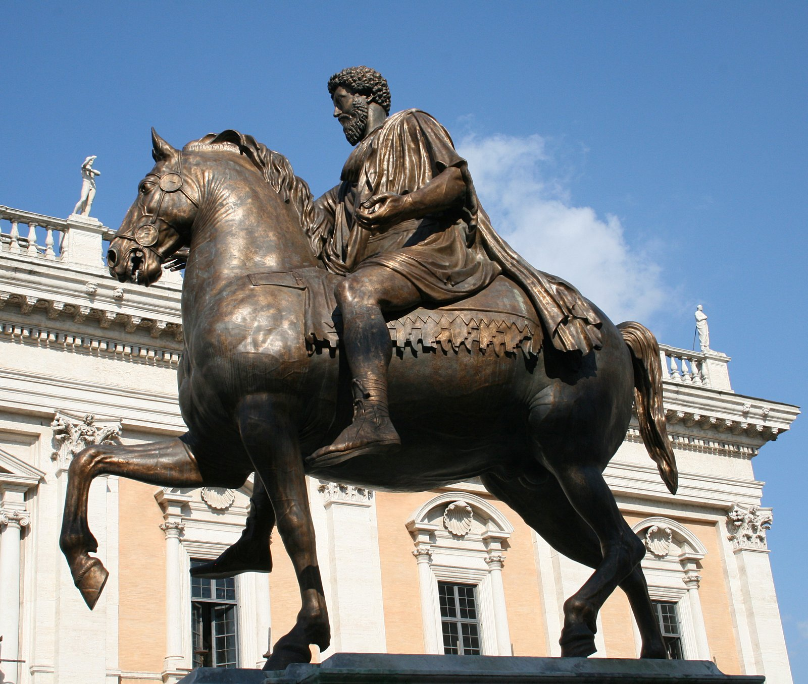
與這本書相似的命運，還有一尊雕像。羅馬卡比托利歐山上的馬可騎馬像，約鑄於一七五年，原是鎏金青銅，高四點二四公尺，是古代留存至今唯一一尊完整的皇帝騎馬青銅像。它能活下來，靠的是一場誤會：中世紀的人以為它是第一位基督教皇帝君士坦丁，於是沒有把它熔掉。一五三八年，教宗保祿三世把它移到米開朗基羅重新設計的卡比托利歐廣場中央。原作如今藏於卡比托利歐博物館，廣場上的是複製品。誤會保存了雕像，時間保存了這本書——歷史有時就是這樣，用偶然對抗遺忘。
《沉思錄》最值得讀的地方，不在於它提供了答案，而在於它示範了一種姿態：一個握有最大權力的人，每天提醒自己不要濫用它；一個面對瘟疫與戰爭的人，每天提醒自己不要被恐懼帶走；一個被奉承包圍的人，每天提醒自己去聽真話。
馬可在卷十寫道：「不要再談論好人應該是什麼樣子，去做那樣的人。」他也在同一卷裡提醒自己：哈德良的朝廷、安敦尼的朝廷、亞歷山大與克羅伊斯的朝廷，都是一齣齣同樣的戲，只是演員不同。權力、財富、名聲，都會過去；過去之後，留下的只有一個人是怎麼活的。
這本書沒有要你變成皇帝，也沒有要你變成哲學家。它只邀請你做一件很小的事：每天留幾分鐘，寫幾行字給自己——今天我做對了什麼，做錯了什麼，明天想成為什麼樣的人。馬可寫了十二卷，寫在軍營的帳篷裡，寫給一個永遠不會有讀者的自己。結果讀者來了，而且一來就是一千八百年。
如果你今晚也寫幾行字給自己，你會寫什麼？
Books & Ideas
A wartime notebook written by an emperor to himself — and, eighteen centuries later, to everyone.
Late in the second century, in a military camp on the Danube, a man in his fifties sat writing by lamplight. Outside the tent were the forests of Germania and the cold wind; inside was the emperor of Rome, commander of dozens of legions, ruler of a realm that stretched from Britain to the Euphrates. But what he wrote had nothing to do with empire: who had angered him that day, and how he had held his tongue; what kind of man he hoped to be if he died tomorrow; why fame was not worth chasing; why anger was a way of wounding himself.
He wrote for his own eyes, with no intention that anyone else would ever read it. No title, no chapters, no readers. The notebook later acquired a title, Meditations; in Greek it is Ta eis heauton, "To Himself". More than eighteen centuries later, it has become one of the most printed works of philosophy in the world.
This essay tells how that book came to be: how a man who did not want to be emperor was raised to the greatest throne on earth; how an empire in his hands met plague, war and rebellion all at once; and why, in the middle of it all, he chose to write a few lines every night to remind himself not to become a bad man.
Marcus Aurelius was born on 26 April 121. His father died while he was young, and his mother raised him alone. He was not born to be emperor; he was chosen. The emperor Hadrian saw something in him and ordered his successor, Antoninus Pius, to adopt him. In 138, at seventeen, Marcus became heir to the throne; around 146 he married Pius's daughter, Faustina the Younger. They had thirteen children, of whom the only son to reach adulthood was Commodus.
Young Marcus received the best education Rome could offer. His teachers of rhetoric were Fronto and Herodes Atticus, the most celebrated of the day; his teacher of law was the distinguished jurist Maecianus. At eleven he put on the coarse dress of a philosopher and took up a hard, abstemious life, studying so intensely that it damaged his health. Later he gave up poetry and rhetoric for philosophy, joining the Stoic school founded by Zeno in Athens.
His favourite teacher was Quintus Junius Rusticus, a philosopher and a practical statesman. In the first book of the Meditations Marcus thanks his teachers one by one, like a list of debts of gratitude: his grandfather taught him good morals and the government of his temper; his adoptive father taught him temperance and justice; and Rusticus gave him the most important gift of his life — the Discourses of Epictetus. Epictetus had been a slave; freed, he taught in Greece, and his words were written down by his pupil Arrian. The words of a slave became the emperor's bedside book. That alone tells you the character of this book: it does not care who is speaking, only whether what is said is true.
There is a note at the end of the first book: it was written on campaign against the Quadi, on the river Granova. That is one of the most moving details in the whole work — a list of thanks, written on a battlefield.
In March 161, Pius died and Marcus took the throne. He insisted on ruling jointly with his adoptive brother, Lucius Verus; Rome had two emperors for the first time. The peace he wanted never came. Disaster arrived one thing after another.
First came war in the East. Parthia invaded; Verus took nominal command, the generals won the war, and in 165 it ended — but the returning legions brought plague home with them. The Antonine Plague broke out in 165 or 166 and spread through the whole empire, killing an estimated five to ten million people. Men died in Rome every day; legions were hollowed out. Verus himself died on the journey home in 169, very likely of the plague.
Then came the north. The Marcomanni, Quadi, Vandals and Sarmatians joined together, crossed the Danube and threatened Italy itself. Marcus went to the front in person and stayed three years at Carnuntum; the wars dragged on, on and off, for more than a decade. War and plague had emptied the treasury, and rather than lay extraordinary taxes on the provinces, he held a public auction in the Forum of Trajan and sold the treasures of the palace: gold and crystal goblets, flagons made for kings, his wife's silk robes embroidered with gold, jewels from Hadrian's own cabinet, statues and paintings by great masters. The sale lasted two months. When the war was over, he announced that any buyer who wished could return his purchase and recover his money. Both the Historia Augusta and Eutropius record it — a scene with no parallel among Roman emperors.
In 175, Avidius Cassius, the commander in the East, revolted and declared himself emperor. The rebellion was soon over; Cassius was assassinated by his own officers. Marcus did not punish the man's family or partisans. He wrote to the Senate recommending mercy, and the letter survives.
In the same year, Christians were executed at Lyon. The emperor's rescript was that those who denied their faith should be released, and those who held to it punished. It is a shadow over Marcus's reign that cannot be avoided: a man who wrote of forgiveness was also the ruler of an empire, and the laws and traditions of that empire pressed on him, and he did not break free of them.
The Meditations was written in those years. Twelve books, all in Greek — in the second century, Greek was still the language of philosophy, and every educated Roman could read and write it. Book One was written in the country of the Quadi, on the Granova — the river Hron in modern Slovakia; Book Two at Carnuntum; most of the rest at Sirmium between 170 and 180, his headquarters for the Danube wars. In other words, most of this book was written in military camps, between war and plague.
It has no title, no structure; sentences repeat, and one passage often has nothing to do with the next. It was not written to be read by anyone — it was a notebook for his own use. Every morning Marcus reminded himself: "Begin the morning by saying to thyself, I shall meet with the busybody, the ungrateful, arrogant, deceitful, envious, unsocial." And then he reminded himself why they were so: because they did not know what is good and what is evil. He knew, so he should not answer them in kind.
Book Four opens with another famous passage: "Men seek retreats for themselves, houses in the country, sea-shores, and mountains." But Marcus says the quietest retreat is not out there at all; it is inside oneself, and one can retire into it whenever one chooses. For a man who slept in a military camp, that was not rhetoric. It was a way of surviving.
The Meditations has no system, but three exercises recur through it, and they hold the whole book together.
The first is to separate what is in your control from what is not. Other people's opinions, the outcome of a war, the coming and going of plague, the hour of your own death — none of these is in your control. What is in your control is your own judgement and your own action. To spend your strength on the first is waste; to draw it back to the second is freedom. Book Eight puts it plainly: external things are not the problem; your assessment of them is the problem, and an assessment can be erased right now.
The second is to treat the obstacle as material. Book Five, section 20, is the most famous passage in the book. In George Long's nineteenth-century translation, "the mind converts and changes every hindrance to its activity into an aid... that which is an obstacle on the road helps us on this road." A modern translator, Gregory Hays, renders the same passage more sharply: "The impediment to action advances action. What stands in the way becomes the way." Marcus's meaning is that the mind can turn any hindrance to its own purposes. An unpleasant man can block your work, but he cannot block your intention; illness can interrupt your plans, but it cannot interrupt the way you meet illness. The obstacle does not vanish — but it can change its place, from standing in front of you to lying under your feet.
The third exercise is about dealing with people. Every day Marcus faced courtiers, generals, informers, flatterers and enemies. His method was not endurance but dissection: "The best way of avenging thyself is not to become like [the wrong-doer]" (Book Six). And if anyone could convince him that he thought or acted wrongly, he would gladly change, "for I seek the truth, by which no man was ever injured" (Book Six). Anger, in his view, was not strength but loss of control; forgiveness was not weakness but the recognition that the other person, too, was only being pushed along by his own ignorance.
The most startling sentence in the Meditations is in Book Six, section 30: "Take care that thou art not made into a Caesar."
Marcus knew what a throne does to a man. It accustoms him to flattery, to giving orders, to treating his own wishes as law. In the same passage he sets his adoptive father, Antoninus Pius, against that danger as a model: acting in conformity to reason, evenness in all things, piety, serenity of countenance, disregard of empty fame, examining everything carefully before judging, tolerating plain speech, living with little. He writes: "Reverence the gods, and help men. Short is life. There is only one fruit of this terrene life — a pious disposition and social acts."
He also drew himself a line of extreme simplicity, in Book Twelve: "If it is not right, do not do it: if it is not true, do not say it."
This is not an emperor lecturing his subjects; it is a man making rules for himself. He knew better than anyone that once the rules slipped, no one around him would remind him — everyone would go along with him. So every night, he reminded himself.
On 17 March 180, Marcus died on campaign, aged fifty-eight. The cause is unknown — perhaps the plague, perhaps exhaustion. His son Commodus succeeded him. The heir Marcus had so carefully chosen became one of the most notorious emperors in Roman history, and was murdered in 192. Gibbon would later say that if a man were asked to fix the period in the history of the world during which the condition of the human race was most happy and prosperous, he would name the years from the death of Domitian to the accession of Commodus. Marcus's death was the full stop of that age.
The Meditations nearly vanished. It was never published, and no record of its circulation survives. The first person known to mention it is Arethas of Caesarea, around the ninth or tenth century, who had a copy that was falling apart and ordered it recopied. After that it circulated in the Byzantine world, but never beyond a small circle. The text we have today rests almost entirely on two manuscripts: the Codex Palatinus, used for the first printed edition in the sixteenth century and then lost, and a fourteenth-century Vatican manuscript, corrupt and missing more than forty lines.
It was not until 1558 or 1559 that the scholar Wilhelm Xylander had it printed for the first time, at Zurich, under the title To Himself. In 1634, Meric Casaubon produced the first English translation. Since then it has been translated into every language, and has found its way into bookshops, barracks, prisons, sickrooms and offices, becoming one of the most printed works of philosophy of the last two thousand years. A notebook written for a reader who would never exist became a notebook for all readers — an ending Marcus himself could never have imagined.
A statue shares the same kind of fate. The equestrian statue of Marcus Aurelius on Rome's Capitoline Hill, cast around 175, is gilded bronze, 4.24 metres tall, the only complete ancient bronze equestrian statue of an emperor to survive. It survived because of a mistake: in the Middle Ages people believed it portrayed Constantine, the first Christian emperor, and so did not melt it down. In 1538 Pope Paul III moved it to the centre of the Piazza del Campidoglio, redesigned by Michelangelo. The original is now in the Capitoline Museums; the statue in the square is a replica. A mistake preserved the statue, and time preserved the book — history sometimes fights forgetting with accidents.
What makes the Meditations worth reading is not that it offers answers, but that it shows a posture: a man holding the greatest power on earth, reminding himself daily not to misuse it; a man facing plague and war, reminding himself daily not to be carried away by fear; a man surrounded by flattery, reminding himself daily to listen to the truth.
In Book Ten Marcus writes: "No longer talk at all about the kind of man that a good man ought to be, but be such." In the same book he reminds himself that the court of Hadrian, the court of Antoninus, the courts of Alexander and Croesus were all the same drama, only with different actors. Power, wealth and fame all pass; when they have passed, all that remains is how a person lived.
This book does not ask you to become an emperor, or a philosopher. It asks only for one small thing: a few minutes a day, a few lines written to yourself — what did I do right today, what did I do wrong, what kind of person do I want to be tomorrow? Marcus wrote twelve books in a tent on the Danube, for a reader who would never exist. The readers came anyway, and they have been coming for eighteen hundred years.
If you wrote a few lines to yourself tonight, what would they say?
歷史與文明
三百一十七艘船、兩萬八千人，與一隻被當成麒麟的長頸鹿
一四〇五年七月十一日，南京。詔書下達，一支船隊從劉家港出發，沿長江入海，往西南而去。船隊有三百一十七艘船，載著將近兩萬八千人。領隊的是一個名叫鄭和的宦官。此後二十八年，這樣的船隊一共出海七次，最遠走到阿拉伯半島與非洲東岸，帶回三十多個國家的使節，也帶回一隻長頸鹿。
這件事放在世界史裡看，很不尋常。中國是一個陸上帝國，它的威脅向來從北方草原來，它的財富向來從土地與運河來。海洋對它而言，一直是邊緣，是流放犯與海盜出沒的地方。可是就在十五世紀初，這個帝國忽然造出了當時世界上最大的船隊，把國力投向大海——而且投了整整一代人的時間。
更不尋常的是結局。七次航行之後，船隊解散，檔案被燒，造船的圖紙失傳。不到一百年，中國的官方史書裡幾乎找不到這支船隊的完整記錄。一個帝國曾經走到海上去，然後自己把路走回來了。
鄭和的故事，因此不只是一個航海家的故事。它是一個關於選擇的故事：一個國家有能力做一件事，卻決定不再做。這中間發生了什麼，值得慢慢讀。
鄭和原名馬和，生於一三七一年，雲南昆陽。他的家庭信奉伊斯蘭教，父親馬哈只做過元朝的官員，祖上可以追溯到元初治理雲南的賽典赤·贍思丁。雲南在當時是帝國的邊陲，也是蒙元殘餘勢力最後的據點之一。
明軍平定雲南那年，馬和還是個十歲出頭的孩子。他被俘虜，送進宮中，成了宦官，後來被分派到燕王朱棣的府裡。燕王是鎮守北方的藩王，他的府邸在北平，面對的是蒙古人的威脅。馬和在那裡長大，學會騎射與行軍，也學會在權力身邊生存。
一三九九年，朱棣起兵靖難，與自己的姪子、建文帝爭奪皇位。四年戰爭，馬和隨軍作戰，立下戰功。一四〇二年，朱棣攻入南京，登基為永樂帝，賜馬和姓鄭。從此，馬和成了鄭和。
這段出身很重要。鄭和不是科舉出身的文官，也不是世家子弟。他是一個被帝國摧毀了家庭、又被帝國重新塑造的人。他的忠誠不在於血緣或學問，而在於他與皇帝之間那種近乎人身依附的關係。永樂帝信任他，給他空白的詔書，授權他在海上便宜行事。這種信任，文官得不到，武將也得不到，只有他可以。
一四〇三年，永樂帝下令造船。南京城外的龍江船廠成了這場工程的心臟。根據《太宗實錄》的記載，從一四〇三年到一四一九年，朝廷下達的造船令至少涉及二千八百六十八艘船。木材從閩江上游與長江上游砍伐，沿江運來；工匠、鐵匠、漆匠從各地徵調。南京在短短幾年裡，變成一座造船的城市。
船隊的核心是寶船。《明史》記載，寶船長四十四丈、寬十八丈，換算下來約一百三十七公尺長、五十多公尺寬。這個數字流傳了幾百年，也爭論了幾百年。現代學者普遍懷疑：以當時的造船技術與木材強度，這麼大的木船很難在海上航行。有人根據船廠遺址與文獻推算，認為寶船實際可能只有六十到七十五公尺。雙方的證據都不完整。
考古給了這個爭論一點重量。一九五七年，南京出土一根長十一公尺的舵杆，現在藏在中國國家博物館。二〇〇三年到二〇〇四年，南京市博物館發掘寶船廠遺址，六號船塢長四百二十一公尺、寬四十一公尺。船塢的尺寸說明，船廠確實有能力建造非常大的船——至於寶船到底多大，至今仍沒有定論。
尺寸的爭論背後，是一個更值得注意的事實：這支船隊的規模本身。首航三百一十七艘船，寶船六十二艘，載員將近兩萬八千人。船上不只有士兵與水手，還有醫生、通事、工匠、天文人員與負責祭祀的官員。一支船隊就是一座浮動的城市，帶著自己的醫院、翻譯、工坊與神廟。
船隊出發之前，要先祭天妃。天妃就是媽祖，海上航行者的守護神。船隊在劉家港集結祭祀，再沿海岸南下，到福建長樂的太平港，等待東北季風。季風是這場航行的真正時刻表：冬天借東北風南下，夏天借西南風北歸。鄭和的船隊不是對抗海洋，而是順著海洋的呼吸走。這一點，寫在鄭和親自立的長樂碑上，也寫在隨行人員的筆記裡。
首航從一四〇五年到一四〇七年。船隊沿海岸南下，首站是占城，然後是爪哇、蘇門答臘，穿過滿剌加海峽，在蘇門答臘北端集結，橫渡印度洋到錫蘭，再沿印度西岸北上，抵達古里。古里是當時印度洋貿易最重要的港口之一，也是此後歷次航行在印度的終點。
回程途中，船隊在舊港遭遇海盜陳祖義。陳祖義盤踞滿剌加海峽一帶，劫掠過往商船。鄭和擊敗了他的船隊，把他押回南京，於一四〇七年十月二日處死。同一天，船隊回到南京。永樂帝任命當地華人領袖施進卿為舊港宣慰使，等於在滿剌加海峽的咽喉處安插了一個盟友。
第二次航行在一四〇七年到一四〇九年。這一次，船隊處理了一樁外交糾紛：爪哇內戰期間，西爪哇王誤殺了一百七十名上岸貿易的明朝使節團成員。鄭和把案子呈報皇帝，朝廷索賠黃金六萬兩，爪哇王認錯賠償，關係恢復。同一航次，船隊為古里王舉行冊封禮，把一塊紀念石碑立在古里。
第三次航行在一四〇九年到一四一一年，發生了七次航行中最激烈的一場陸戰。錫蘭國王亞烈苦奈兒敵視船隊，誘使鄭和率二千人上岸，再派兵切斷他們與停泊在科倫坡的船隊的聯繫。鄭和反過來攻入首都科提，俘虜了國王與他的家屬與大臣。一四一一年七月六日，船隊回到南京，永樂帝下令釋放俘虜，改立親明的波羅迦羅摩巴忽六世為王。此後，錫蘭再也沒有對船隊表現出敵意。
第四次航行在一四一三年到一四一五年，船隊第一次抵達波斯灣的忽魯謨斯。通事馬歡從這次航行起隨船出海，後來寫下《瀛涯勝覽》。第五次航行在一四一六年到一四一九年，船隊走到阿拉伯半島與非洲東岸。蘇門答臘的僭主蘇幹剌被擊敗，押回京城處死。一四一九年，船隊帶著各國使節回到南京，貢品裡有獅子、豹、駱駝、鴕鳥、斑馬、犀牛、羚羊與長頸鹿。
第六次航行在一四二一年到一四二二年，主要任務是把各國使節送回國，分隊繼續前往阿拉伯與東非。第七次航行在一四三一年到一四三三年，已經是宣德帝的時代了。鄭和那時年近六十，身體已經不好，仍然領著一百多艘船、兩萬七千多人出海。船隊走到忽魯謨斯，分隊前往阿拉伯與東非。據馬歡記載，一支分隊從古里出發前往麥加，來回花了一年。
一四三三年，鄭和在歸途中去世，葬身大海，古里外海。關於他的死年，史料有不同說法，一說一四三三年，一說一四三五年。南京牛首山南麓至今留有鄭和墓，是後人為他立的衣冠塚，一九八五年按穆斯林式樣重修。墓是空的，裡面只有衣冠。葬在海裡的人，墓留在岸上。
七次航行，動機至今仍在爭論。有人說，永樂帝是為了尋找下落不明的建文帝；有人說，是為了宣揚國威，把三十多個國家納入朝貢體系；有人說，是為了貿易與情報。這些說法並不互相排斥，也都沒有決定性的證據。唯一可以確定的是，皇帝要的不是發現新大陸，而是在已知的世界裡，讓每一個港口都知道，南京有一個皇帝。
七次航行帶回來的東西裡，最出名的是長頸鹿。一四一四年九月二十日，孟加拉使節以國王賽弗丁的名義，向永樂帝獻上一隻長頸鹿。這隻動物先從東非被運到孟加拉，再由鄭和的船隊帶回中國。朝廷上下沒有人見過這種動物，於是把它認作傳說中的麒麟——那種只在聖王治世才會出現的瑞獸。
翰林學士沈度奉命為長頸鹿作畫，並寫了一篇頌文。畫上的長頸鹿由一名牽著韁繩的侍從帶領，神態溫順。群臣紛紛上表稱賀，認為這是上天對永樂帝的肯定。永樂帝卻拒絕了。他不接受這份賀表，也不承認長頸鹿就是麒麟。
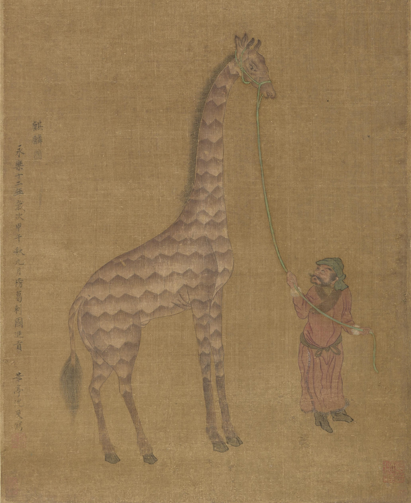
這個拒絕很有意思。永樂帝是靠靖難之役奪取皇位的，他的皇位合法性一直受到質疑。一隻被認作麒麟的長頸鹿，對他來說本來是最好的宣傳。可是他不要。或許是因為他知道，這隻動物是從海外買來的，不是從天上掉下來的；或許是因為他比群臣更清楚，祥瑞這種東西，認了就要負責。總之，他讓畫留下，讓頌文留下，卻不讓賀表留下。
長頸鹿的故事說明了朝貢體系的本質。朝貢不是單純的貿易，也不是單純的外交。它是一套用禮物與儀式建立秩序的語言：外國使節帶來本地特產，皇帝回贈絲綢、瓷器與冊封。中國輸出的是秩序與名分，換回來的是承認與平安。鄭和的船隊，就是這套語言的載體。它走到哪裡，朝貢的秩序就延伸到哪裡。
滿剌加的崛起，是這套語言最成功的案例。滿剌加原本只是暹羅的屬地，一個不起眼的小港。一四〇五年，鄭和帶著石碑與詔書到來，冊封滿剌加的西山，提升它的地位。此後歷次航行，船隊都在滿剌加集結、補給、交易。滿剌加很快成為印度洋與南海之間的轉口港，繁榮了整整一個世紀。中國沒有在那裡駐軍，也沒有建立殖民地，只用冊封與貿易，就改變了一個港口的命運。
船隊帶回來的，還有知識。馬歡的《瀛涯勝覽》、費信的《星槎勝覽》、鞏珍的《西洋番國志》，都是隨行人員親眼所見的第一手記錄。他們寫港口的位置、物產的價格、當地人的風俗與宗教，也寫航行中的星象與水文。這些書在後世成了研究十五世紀印度洋世界最重要的中文史料。馬歡的書在一四五一年初刊，距離首航已經四十六年——那時船隊早已不復存在，書卻留下來了。
一四三三年之後，船隊不再出海。這不是因為船不夠大，也不是因為海不夠平靜，而是因為朝廷裡的風向變了。
永樂帝死後，宦官集團逐漸失勢，文官集團占了上風。文官反對遠航的理由很實際：船隊花錢太多，朝貢的回報太少，國家的重心應該放在北方的邊防與南方的運河上。對文官來說，海洋不是帝國的疆域，而是帝國的開支。與此同時，首都已經遷到北京，皇帝的目光轉向北方，南方與海洋越來越遠。
到了成化年間，事情有了一個象徵性的結局。朝廷下令從兵部檔案裡調取有關西洋遠航的文書，兵部尚書劉大夏卻把這些檔案藏起來燒掉了。他說，那些記載是荒誕不經的誇大其詞。一個帝國的官員，親手燒掉了自己國家的航海記憶。
這件事常被當作中國錯失海洋時代的證據，但事情沒有那麼簡單。劉大夏燒掉的是檔案，不是造船的技術；禁絕的是官方的遠航，不是民間的貿易。福建與廣東的商人一直在出海，只是沒有國家的船隊為他們護航，也沒有朝廷的使節為他們開路。官方的海洋關上了，民間的海洋還開著——只是開得很小，很危險。
真正留下的東西，比檔案更耐久。馬歡、費信、鞏珍的書還在，劉家港與長樂的石碑還在，《武備志》裡的茅坤圖還在——那是現存唯一一幅鄭和航線圖，描繪了從南京到阿拉伯半島與東非的整條航路。二〇〇三年，寶船廠的船塢被發掘出來，六號船塢長四百二十一公尺。土地記得的事，比紙記得的久。
如果把時間拉長來看，鄭和首航比哥倫布抵達美洲早了八十七年。歐洲的大航海時代才剛要開始，中國卻先一步退出了海洋。這不是能力的差距，而是選擇的不同。歐洲的君主與商人把海洋當作通往財富的路，中國的皇帝與文官把海洋當作需要管制的邊疆。同一片海，兩種看法，兩種未來。
鄭和的墓是空的。這件事本身就像一個隱喻：他屬於大海，不屬於陸地。他的船隊沒有留下殖民地，沒有留下永久的據點，甚至沒有留下一套完整的檔案。它留下的，是一批書、幾塊碑、一幅地圖，和一個問題。
這個問題是：一個國家可以走多遠？鄭和的船隊證明，十五世紀的中國有能力把兩萬八千人送到非洲東岸，再把他們帶回來。這種能力，在當時的世界上是獨一無二的。可是能力不等於意願，意願不等於制度。船隊依賴的是皇帝一個人的意志，而不是一套可以自我延續的制度。皇帝在，船隊在；皇帝不在，船隊就散了。劉大夏燒掉檔案的時候，沒有遇到任何抵抗，因為沒有一個機構認為，保存這些檔案是自己的責任。
這對今天的讀者來說，是最值得帶走的一課。我們常常以為，歷史的轉折來自能力的不足——船不夠大，技術不夠好，錢不夠多。鄭和的故事說的恰恰相反：船夠大，技術夠好，錢也夠多，轉折來自選擇。一個文明最關鍵的時刻，往往不是它做不到的時候，而是它做得到、卻決定不做的時候。
海還在那裡。季風每年冬天從東北來，夏天從西南回，一如六百年前。船隊走了，港口還在；檔案燒了，地圖還在；人葬在海裡，書還在人間。鄭和下西洋的故事，最後留下的不是一支船隊，而是一個提醒：走向海洋從來不只是技術問題，而是一個文明如何看待自己的問題。
History & Civilization
317 ships, 28,000 men, and a giraffe mistaken for a qilin
On 11 July 1405, in Nanjing, an imperial edict went out, and a fleet set sail from Liujiagang, down the Yangtze and out to sea, heading south-west. It numbered 317 ships and carried nearly 28,000 men. Its commander was a eunuch named Zheng He. Over the next twenty-eight years, fleets like this one would sail seven times, reaching as far as the Arabian Peninsula and the east coast of Africa, bringing home envoys from more than thirty countries — and a giraffe.
Set against world history, this is a strange thing. China was an empire of land. Its threats had always come from the steppe to the north; its wealth had always come from the soil and the canals. The sea, to China, had always been the margin — the place of exiles and pirates. Yet in the early fifteenth century, this empire suddenly built the largest fleet the world had ever seen and threw its strength at the sea, for a whole generation.
Stranger still is how it ended. After seven voyages, the fleet was disbanded, the archives were burned, and the shipbuilding plans were lost. Within a century, the official histories of China carried almost no complete record of the fleet. An empire had walked out to sea, and then walked itself back.
The story of Zheng He, then, is not only the story of a seafarer. It is a story about choice: about a country that had the power to do a thing and decided not to do it any more. What happened in between is worth reading slowly.
Zheng He was born Ma He in 1371, in Kunyang, Yunnan. His family were Muslims. His father, Ma Hajji, had served as an official under the Yuan dynasty, and the family line could be traced back to Sayyid Ajjal Shams al-Din Omar, who had governed Yunnan in the early Yuan. Yunnan at the time was the edge of the empire, one of the last strongholds of the Mongol Yuan.
The year the Ming army took Yunnan, Ma He was barely past ten. He was captured, taken into the palace, and made a eunuch. Later he was assigned to the household of Zhu Di, the Prince of Yan, the prince who guarded the northern frontier from Beiping against the Mongols. Ma He grew up there, learning horsemanship and campaigning, and learning how to survive beside power.
In 1399 Zhu Di rose in the Jingnan campaign against his own nephew, the Jianwen Emperor, for the throne. Four years of war followed, and Ma He fought in them and earned distinction. In 1402 Zhu Di took Nanjing and ascended the throne as the Yongle Emperor, and gave Ma He the surname Zheng. From then on, Ma He was Zheng He.
This beginning matters. Zheng He was not a scholar-official who had passed the examinations, nor the son of a great house. He was a boy whose family the empire had destroyed, and whom the empire had then remade. His loyalty rested not on blood or learning but on something close to personal dependence on the emperor. The Yongle Emperor trusted him, gave him blank edicts stamped with the imperial seal, and let him act as he saw fit at sea. That kind of trust no civil official and no general could obtain. Only he could.
In 1403 the Yongle Emperor ordered the building of ships. The Longjiang shipyard outside Nanjing became the heart of the project. According to the Taizong Shilu, the Veritable Records of the emperor's reign, the shipbuilding orders issued between 1403 and 1419 covered at least 2,868 ships. Timber was cut along the upper Min River and the upper Yangtze and floated down; carpenters, smiths and lacquerers were drafted from across the country. Within a few years, Nanjing had become a city that built ships.
At the centre of the fleet were the treasure ships. The History of Ming records them as 44 zhang long and 18 zhang wide — about 137 metres by more than 50. The figure has been repeated for centuries, and argued over for centuries. Modern scholars mostly doubt it: with the shipbuilding techniques and timber of the time, a wooden ship that large would have been hard to sail. Some, working from the shipyard remains and the documents, put the treasure ships at sixty to seventy-five metres. The evidence on both sides is incomplete.
Archaeology has added some weight to the argument. In 1957 a rudder post 11.07 metres long was unearthed in Nanjing; it is now in the National Museum of China. In 2003 and 2004 the Nanjing Municipal Museum excavated the Treasure Shipyard, and found Basin No. 6 to be 421 metres long and 41 metres wide. The size of the basins shows that the yard was indeed capable of building very large ships. As for exactly how large a treasure ship was, there is still no settled answer.
Behind the argument over size lies a fact more worth noticing: the sheer scale of the fleet itself. The first voyage numbered 317 ships, 62 of them treasure ships, carrying nearly 28,000 men. The ships carried not only soldiers and sailors but doctors, interpreters, craftsmen, astronomers and officials in charge of ritual. A fleet was a floating city, with its own hospital, translators, workshops and shrines.
Before sailing, the fleet made offerings to Tianfei, the goddess who protected sailors — Mazu, by her other name. The ships assembled at Liujiagang to honour her, then sailed down the coast to Taiping anchorage at Changle in Fujian, to wait for the north-east monsoon. The monsoon was the true timetable of the voyages: the north-east wind carried the fleet south in winter, the south-west wind carried it home in summer. Zheng He's fleet did not fight the ocean; it travelled on the ocean's breathing. That is written in the Changle inscription Zheng He himself had carved, and in the notebooks of the men who sailed with him.
The first voyage ran from 1405 to 1407. The fleet sailed down the coast, its first foreign port Champa, then Java and Sumatra, through the Strait of Malacca, assembling at the northern tip of Sumatra, then across the Indian Ocean to Ceylon and up the west coast of India to Calicut. Calicut was one of the great ports of the Indian Ocean trade, and it remained the fleet's terminus in India on every voyage that followed.
On the way home, the fleet met the pirate Chen Zuyi at Palembang. Chen had seized the port and preyed on shipping through the Malacca Strait. Zheng He destroyed his fleet and took him back to Nanjing, where he was executed on 2 October 1407 — the same day the fleet returned home. The Yongle Emperor appointed Shi Jinqing, a local Chinese leader, as Pacification Superintendent of Palembang, planting an ally at the throat of the Strait.
The second voyage, 1407 to 1409, dealt with a diplomatic dispute. During a civil war in Java, the King of West Java had mistakenly killed 170 members of a Ming embassy who had come ashore to trade. Zheng He reported the case to the emperor rather than taking revenge himself. The court demanded 60,000 liang of gold in compensation; the Javanese king admitted his fault and paid, and relations were restored. On the same voyage, the fleet performed the formal investiture of Mana Vikraan as King of Calicut and set up a commemorative tablet there.
The third voyage, 1409 to 1411, saw the fiercest land battle of all seven. Alakeshvara, King of the Sinhalese kingdom of Kotte in Ceylon, was hostile to the fleet. He lured Zheng He and 2,000 men ashore, then cut them off from the fleet anchored at Colombo. Zheng He turned and stormed the capital at Kotte, taking the king, his family and his ministers prisoner. On 6 July 1411 the fleet returned to Nanjing; the Yongle Emperor ordered the captives freed and installed the pro-Ming Parakramabahu VI as king in Alakeshvara's place. After that, Ceylon never again showed hostility to the fleet.
The fourth voyage, 1413 to 1415, took the fleet for the first time to Hormuz in the Persian Gulf. The interpreter Ma Huan sailed with the fleet from this voyage on, and later wrote the Yingya Shenglan, the Overall Survey of the Ocean's Shores. The fifth voyage, 1416 to 1419, reached the Arabian Peninsula and the east coast of Africa. Sekandar, the pretender who had seized Semudera in northern Sumatra, was defeated and taken back to the capital to be executed. In 1419 the fleet returned to Nanjing with envoys from many countries; their tribute included lions, leopards, dromedary camels, ostriches, zebras, rhinoceroses, antelopes and giraffes.
The sixth voyage, 1421 to 1422, was largely spent carrying the foreign envoys home, with detached squadrons sailing on to Arabia and East Africa. The seventh voyage, 1431 to 1433, came under a new emperor, Xuande. Zheng He was near sixty and in poor health, yet he sailed again with more than a hundred ships and over 27,000 men. The fleet went to Hormuz, and detached squadrons travelled to Arabia and East Africa. According to Ma Huan, a squadron sailed from Calicut to Mecca, a round trip of a year.
In 1433 Zheng He died on the voyage home and was buried at sea, off the Malabar Coast. Sources differ on the year — some say 1433, others 1435. On the southern slope of Niushou Mountain in Nanjing there is still a tomb of Zheng He: a cenotaph, rebuilt in 1985 in the Muslim style. The tomb is empty; it holds only his clothes and headgear. The man buried at sea has his grave on shore.
Seven voyages, and the motive for them is still debated. Some say the Yongle Emperor wanted to search for the missing Jianwen Emperor; some say he wanted to display the power of the Ming and bring more than thirty countries into the tribute system; some say it was about trade and intelligence. The explanations do not exclude one another, and none has decisive evidence. The one thing certain is that the emperor was not looking for a new continent. He wanted every port in the known world to know that there was an emperor in Nanjing.
Of all the things the voyages brought home, the most famous was a giraffe. On 20 September 1414, envoys from Bengal presented one to the Yongle Emperor in the name of their king, Saif Al-Din Hamzah Shah. The animal had been carried from East Africa to Bengal, and then by Zheng He's fleet to China. No one at court had ever seen such a creature, and they took it for the qilin of legend — the auspicious beast said to appear only when a sage ruled in an age of peace.
The Hanlin scholar Shen Du was ordered to paint the giraffe and compose an ode to it. The painting shows the animal led on a halter by an attendant, gentle and unhurried. Ministers pressed their congratulations on the emperor, certain that Heaven had confirmed his rule. The Yongle Emperor refused them. He would not accept the congratulations, nor admit that the giraffe was a qilin.
The refusal is worth pausing over. The Yongle Emperor had taken the throne by force from his nephew, and the legitimacy of his reign was always in question. A giraffe taken for a qilin should have been the best propaganda he could ask for. Yet he turned it down. Perhaps because he knew the animal had been bought overseas, not sent down from Heaven; perhaps because he understood better than his ministers that an auspicious sign, once accepted, has to be lived up to. In any case, he kept the painting and the ode, and refused the congratulations.
The giraffe tells us what the tribute system was. It was not simply trade, and not simply diplomacy. It was a language of gifts and ceremony for building order: foreign envoys brought the products of their lands, and the emperor answered with silk, porcelain and investiture. China exported order and recognition, and received acknowledgement and peace in return. Zheng He's fleet was the carrier of that language; wherever it sailed, the order of tribute extended.
Malacca is the best example of that language at work. It had been a small port, a dependency of Siam, of no account. In 1405 Zheng He arrived with a stone tablet and an imperial order, enfeoffing the Western Mountain of Malacca and raising its standing. On every voyage afterwards, the fleet assembled, supplied and traded at Malacca. Within a generation it had become the great entrepôt between the Indian Ocean and the South China Sea, prosperous for a century. China stationed no garrison there and founded no colony; investiture and trade alone changed a port's fate.
The fleet also brought back knowledge. Ma Huan's Yingya Shenglan, Fei Xin's Xingcha Shenglan and Gong Zhen's Xiyang Fanguo Zhi are first-hand accounts written by men who sailed. They record the position of ports, the price of goods, the customs and religions of the peoples they met, and the stars and waters of the voyage. They remain among the most important Chinese sources for the fifteenth-century Indian Ocean world. Ma Huan's book was first published in 1451, forty-six years after the first voyage — by then the fleet was long gone, but the book remained.
After 1433, the fleet sailed no more. It was not that the ships were too small, nor the sea too rough. The wind inside the court had changed.
After the Yongle Emperor's death, the eunuch establishment lost ground and the civil officials gained the upper hand. Their objections to the voyages were practical: the fleet cost too much, the tribute returned too little, and the state's attention belonged on the northern frontier and the canals of the south. To the civil officials, the sea was not the empire's domain but its expense. Meanwhile the capital had moved to Beijing, the emperor's gaze had turned north, and the south and the sea grew ever more distant.
In the Chenghua reign, the matter reached a symbolic end. The court ordered the documents on the western voyages to be fetched from the archives of the Ministry of War. The minister, Liu Daxia, hid them and burned them. He dismissed the accounts as deceitful exaggerations of bizarre things, far removed from the testimony of people's ears and eyes. An official of the empire burned his own country's memory of the sea with his own hands.
The episode is often cited as proof that China missed its age of the sea, but the matter is not so simple. Liu Daxia burned the archives, not the shipbuilding craft; he ended the official voyages, not private trade. Merchants from Fujian and Guangdong kept sailing, only without a state fleet to guard them and without imperial envoys to open the way for them. The official sea was closed; the people's sea stayed open — only smaller, and more dangerous.
What survived is more durable than paper. The books of Ma Huan, Fei Xin and Gong Zhen survive. The stone tablets at Liujiagang and Changle survive. The Mao Kun map survives, preserved in the Wubei Zhi, the military encyclopaedia compiled in 1621 and presented to the throne in 1628 — the only surviving chart of Zheng He's routes, showing the whole passage from Nanjing to Arabia and East Africa. In 2003 the basins of the Treasure Shipyard were excavated; Basin No. 6 measures 421 metres long. The earth remembers longer than paper does.
Set the dates side by side, and the contrast is stark: Zheng He's first voyage came eighty-seven years before Columbus reached the Americas. Europe's age of exploration was only just beginning, and China had already stepped back from the sea. It was not a difference of ability but of choice. The princes and merchants of Europe saw the sea as a road to wealth; the emperors and officials of China saw it as a frontier to be controlled. One sea, two ways of seeing it, two futures.
Zheng He's tomb is empty. The fact itself reads like a metaphor: he belonged to the sea, not to the land. His fleet left no colony, no permanent base, not even a complete set of archives. It left a handful of books, a few stone tablets, a map, and a question.
The question is: how far can a country go? Zheng He's fleet proved that fifteenth-century China could carry 28,000 people to the east coast of Africa and bring them home again. In its time, no other power on earth could do that. But ability is not the same as will, and will is not the same as institution. The fleet depended on the will of one emperor, not on a system that could outlive him. While the emperor lived, the fleet sailed; when he was gone, the fleet scattered. When Liu Daxia burned the archives, no one resisted, because no institution considered it its duty to keep them.
That is the lesson most worth carrying away. We often assume that the turning points of history come from a lack of ability — ships too small, technology too weak, money too short. The story of Zheng He says the opposite: the ships were large enough, the technology good enough, the money plentiful enough. The turning point came from a choice. The most decisive moments in a civilisation's life are often not when it cannot do a thing, but when it can, and decides not to.
The sea is still there. Every winter the north-east monsoon comes, every summer the south-west wind returns, as it did six hundred years ago. The fleet is gone, but the ports remain; the archives were burned, but the map remains; the man was buried at sea, but his books remain among the living. The story of Zheng He's voyages to the Western Ocean leaves us, in the end, not with a fleet, but with a reminder: going out to sea was never only a question of technique. It was a question of how a civilisation sees itself.
錢與人性
一張紙幣、一家公司，與法國財政的十八個月
一七一九年冬天，巴黎有一條街擠得水泄不通。康坎普瓦街本來只是城裡一條不起眼的小巷，如今卻成了全法國最熱鬧的地方。貴族的馬車、僕人的木屐、修女的長袍、農夫的草鞋，全都擠在同一條街上，為了同一件事：一張紙。
那張紙是一家公司的股票，面值五百里弗。十八個月前，它還乏人問津；如今它值一萬里弗。有人靠它一夜致富，有人把全部家當押上去，只為了再漲一點。街上的人不是在買一家公司的未來，他們在買一個信念：紙，可以比金子更值錢。
提出這個信念的人，叫約翰·勞。一個蘇格蘭賭徒，一個殺過人的逃犯，一個寫過經濟學論文的夢想家。在短短十八個月裡，他從巴黎的客人變成法國財政的實際統治者，掌管銀行、稅收、鑄幣與半個地球的殖民貿易。然後，在同樣短的時間裡，一切化為烏有。
這篇文章要講的，就是那十八個月。它是人類歷史上第一場由紙幣引發的全國性泡沫，也是現代金融世界的一次預演：中央銀行、法幣、股票市場、政府債務證券化——今天習以為常的東西，幾乎都在這場實驗裡第一次同時出現。勞走得太快了，快到連他自己都追不上。但他留下的問題，至今仍在：當金錢只是一張紙，什麼東西能讓我們相信它？
約翰·勞生於一六七一年四月二十一日，愛丁堡。父親是金匠兼銀行家，買下了克拉蒙德附近的勞里斯頓莊園，家境殷實。十四歲那年，勞進入家族生意，學著辨認金幣的成色、計算匯兌的差價。父親一六八八年去世後，他很快把繼承的產業拋在腦後，跑到倫敦，沉迷賭桌。
賭博是勞的第一所學校。他精通機率，能心算賠率，在賭桌上輸過大錢，也贏過大錢。更重要的是，他在賭桌上學會了一件事：價值是一種共識。一張牌、一枚籌碼，本身不值什麼，值錢的是所有人同意它值錢。
一六九四年四月九日，這堂課付出了血的代價。勞在倫敦布魯姆斯伯里廣場與愛德華·威爾遜決鬥，為了一名女子的青睞。一劍刺出，威爾遜當場斃命。勞在老貝利法庭被判謀殺罪，處以死刑；後改判為誤殺，罰款了事。威爾遜的兄弟上訴，他再度入獄，隨即越獄，逃往阿姆斯特丹。
此後十年，他在歐洲各國流亡，研究貨幣與銀行。他發現了一個簡單卻顛覆的想法：一個國家缺的往往不是金子，而是讓金子流動起來的信用。金銀躺在金庫裡是死的，只有流通起來才能變成貿易、工廠與稅收。如果國家能發行可信的紙幣，經濟就能擺脫金屬貨幣的束縛。一七〇五年，他把這個想法寫成《貨幣與貿易考》。蘇格蘭議會拒絕了他，法國卻在十年後向他打開了門。
一七一五年九月，路易十四去世，留下一個五歲的國王路易十五，和一個空蕩蕩的國庫。太陽王晚年的戰爭耗盡了國力，國債堆積如山，稅收被包稅人層層盤剝，到達國庫的只剩零頭。攝政王奧爾良公爵菲利普面對的，是一個隨時可能賴帳的國家。
就在這個時候，勞帶著他的方案來了。他的主張很簡單：讓法國發行紙幣。紙幣由一家銀行發行，以黃金白銀為準備，憑票即兌。起初只在巴黎流通，商人很快發現紙幣比沉重的金幣好用得多：不用驗成色、不怕磨損、可以開大額。商業活了起來，稅收也跟著好轉。
一七一六年五月，通用銀行成立。這是法國第一家發行紙幣的銀行，也是世界上最早的中央銀行之一。一七一八年十二月，攝政王將它收歸國有，改名皇家銀行。勞的實驗得到了國家的背書。下一步，他要把實驗擴大到整個法國——而擴大的工具，是一家公司。
一七一七年八月，西方公司成立，也就是後來人稱的密西西比公司。它取得法屬路易斯安那二十五年的貿易專營權，股票面值五百里弗，認購時可以用貶值的政府債券按面值抵繳。對持有國債的人來說，這是一筆划算的交易：拿一張快成廢紙的債券，換一張據說代表新大陸財富的股票。
問題是，路易斯安那到底有什麼？一六八二年，拉薩爾宣稱密西西比河流域歸法國所有，領土之大，橫跨半個北美大陸。但到一七一七年，那裡的法國殖民者只有約五百人。新奧爾良還不存在，沼澤、蚊子與傳說中的金銀礦，才是那裡的全部。勞的宣傳畫把路易斯安那描繪成遍地黃金的樂土，實際上，公司的船運去的更多是犯人與被招募來的德國移民。
一七一八年春，殖民總督比安維爾在密西西比河口建立新奧爾良，以攝政王的名字命名。同年，八百名新移民抵達，殖民者人數翻倍。公司開始認真經營殖民地，但它的真正生意從來不在美洲，而在巴黎：股票。
一七一九年五月，密西西比公司吞併了破產的法國東印度公司與中國公司，改名印度公司。此後幾個月，它接連取得菸草專賣、鑄幣權、包稅權，最後連徵收全部直接稅的權力也收歸旗下。一家上市公司，就這樣接管了一個王國的財政。它的特權期限延長到一七七〇年，整整半個世紀。
股票的交易地點，是巴黎康坎普瓦街的一段露天市場。價格的爬升快得令人目眩：一七一九年六月十七日，七百五十里弗；七月二十一日，一千里弗；下一週，兩千里弗；八月十七日，三千里弗。年底，股價衝上一萬里弗，是面值的二十倍。
公司不斷增發新股。一次增發五萬股，每股五百里弗，只需先付七十五里弗，餘款分十九個月每月付二十五里弗。到一七一九年年中，公司已發行逾六十萬股，面值總額三億里弗。付得起頭期款的人，人人都能分一杯羹。
全巴黎都瘋了。貴族賣掉地產買股票，僕人拿出積蓄，修女與農夫也搭上馬車進城。街頭巷尾的新詞是 millionnaire，百萬富翁——這個詞本身就是在這幾個月裡走進法語的。康坎普瓦街的房子被租下來當作交易所，窗戶被砸開來傳遞買賣單，有人因為擠不進街口而從屋頂爬進去。
勞本人的地位也隨著股價攀升。一七一九年九月十七日，他改信天主教；十二月二日，當選皇家科學院榮譽院士；一七二〇年一月五日，攝政王任命他為財政總監。銀行、公司、稅收、鑄幣、殖民貿易——法國財政的每一條線，都握在他一個人手裡。
公平地說，這十八個月並非全是泡沫。紙幣流通讓法國經濟一度真正好轉：兩年之內，工業產值增長六成，從事出口貿易的法國商船從十六艘增加到三百艘。勞的體系不是騙局，它是一個超前時代的想法，跑得比現實快太多。
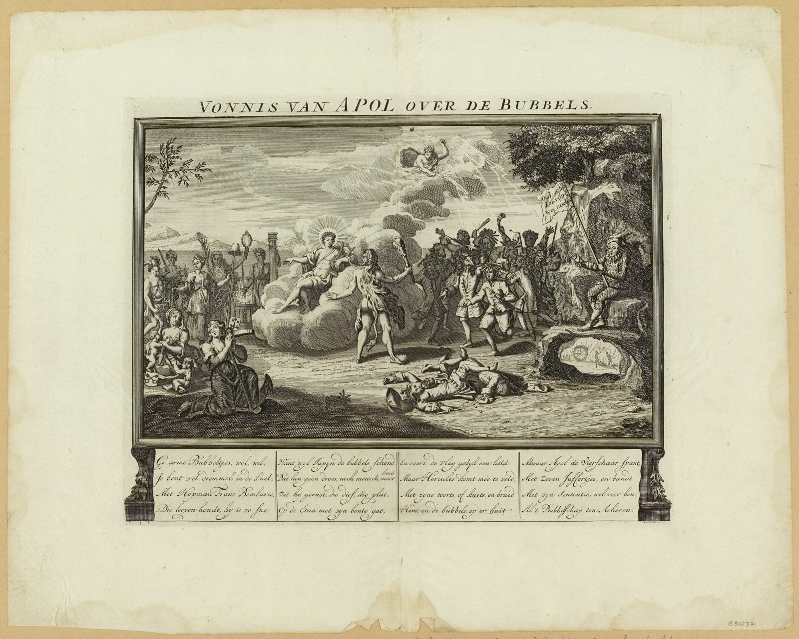
紙幣有一個致命的弱點：它只在人人都相信的時候才值錢。一七二〇年一月，法國的物價開始失控，通膨月率高達百分之二十三。聰明人開始悄悄把股票換回金幣，把金幣藏起來。勞試圖穩住局面：三月，他把股價釘在九千里弗的價位，由皇家銀行用鈔票回購股票。但每回購一張股票，就要多印一張鈔票；鈔票越多，金幣越不夠兌。
五月二十一日，勞祭出最後的手段：法令宣布，鈔票與股票的面值將分七階段貶值一半，到年底完成。消息一出，恐慌瞬間引爆。六天後法令被迫撤回，但信任已經碎了。民眾湧向銀行要求兌換金幣，銀行被迫關門十天，重開後限制每筆兌換的金額。糧價在幾個月內上漲六成，巴黎街頭出現了搶糧的騷動。
股價的墜落與爬升一樣快：一七二〇年九月跌到兩千里弗，年底剩一千里弗；一七二一年九月，回到起點五百里弗。五月二十九日，勞被解除財政總監職務；年底，他化裝逃離法國，輾轉布魯塞爾，最後落腳威尼斯，靠賭博維生。一七二九年三月二十一日，他死在威尼斯，葬於聖摩西教堂，享年五十七歲。死時身邊的財產，只剩幾件家具與未完成的手稿。
泡沫破裂之後，密西西比公司與皇家銀行於一七二一年四月由政府接管。經過整頓，公司於一七二三年重組為法國印度公司，專心經營海外貿易，一直存續到一七七〇年清算。殖民地留了下來：新奧爾良長成了一座真正的城市，路易斯安那的法國人留下了語言與地名，至今仍在。
但法國人對紙幣與股票的恐懼，持續了將近一百年。銀行這個詞在法國成了髒話，一直到一八〇〇年，拿破崙創立法蘭西銀行，法國才重新擁有一家全國性銀行。諷刺的是，拿破崙的銀行做的，正是勞想做的事：發行全國通用的紙幣，以國家信用為擔保。
勞的想法並沒有隨著他一起死去。紙幣的價值來自信用與流通，中央銀行調節貨幣供給，政府債務可以證券化——這些在今天看來理所當然的觀念，都是勞的實驗留下的遺產。他錯的不是方向，是速度與規模。當印鈔的速度超過信任增長的速度，當一家公司的市值膨脹到超過整個國家的黃金儲備，紙就只是一張紙。
同一年，倫敦也爆發了南海泡沫。巴黎與倫敦，兩個歐洲最大的金融中心，在同一年學會了同一課：市場可以把任何東西炒上天，但沒有任何東西可以永遠待在天上。
勞死前仍在寫經濟學論文，堅信自己的體系原則正確，只是執行出了錯。後世的經濟學家對此爭論了三百年：有人說他是騙子，有人說他是生不逢時的天才。真相也許介於兩者之間。他的理論在紙面上是成立的，但在現實裡，理論需要面對人性——而人性在面對一張十天漲一倍的股票時，從來不會冷靜。
密西西比泡沫留給我們三個提醒。第一，信用是最昂貴的公共財，建立它需要幾十年，毀掉它只需要幾個月。第二，任何把債務變成資產的把戲，最終都要有人買單；印鈔機可以推遲帳單，卻不能取消帳單。第三，創新本身不是罪，真正的危險是把創新當成不需要代價的魔法。
今天，紙幣早已讓位給數字，股票交易不再需要擠一條街，一秒鐘就能完成。但康坎普瓦街上的那群人，與今天盯著螢幕的我們，並沒有本質的不同：我們都在為一張憑證付錢，憑證背後是別人的承諾，而承諾的價值，取決於我們是否還相信。
勞的故事不是一個賭徒的笑話，而是一面鏡子。它照見的，是每一個相信紙能變成金子的時代——包括我們自己的時代。密西西比河至今仍在流，新奧爾良仍在地圖上。泡沫破了，城市留下來了。而那張紙，至今仍在我們每個人的口袋裡。
Money & Human Nature
One banknote, one company, and eighteen months of French finance
In the winter of 1719, one street in Paris was packed beyond passage. Rue Quincampoix had been an unremarkable alley; now it was the busiest place in all of France. Noblemen's carriages, servants' wooden shoes, nuns' habits, farmers' straw sandals — all crowded into the same narrow street for the same thing: a piece of paper.
The paper was a share in a company, with a face value of five hundred livres. Eighteen months earlier, no one had wanted it; now it was worth ten thousand. Some had grown rich on it overnight; others had staked everything they owned, hoping it would climb a little further. The people in the street were not buying a company's future. They were buying a belief: that paper could be worth more than gold.
The man who proposed that belief was called John Law. A Scottish gambler, a fugitive who had killed a man, a dreamer who had written a treatise on economics. In the space of eighteen months, he went from being a guest in Paris to being the effective ruler of French finance, in charge of the bank, the taxes, the mint and the colonial trade of half the globe. Then, in just as short a time, it all turned to nothing.
This essay tells the story of those eighteen months. It was the first nationwide bubble in history driven by paper money, and a rehearsal for the modern financial world: a central bank, fiat currency, a stock market, the securitisation of government debt — almost everything we now take for granted appeared together, for the first time, in this one experiment. Law moved too fast, faster even than he could follow himself. But the question he left behind is still with us: when money is only a piece of paper, what makes us believe in it?
John Law was born in Edinburgh on 21 April 1671. His father was a goldsmith and banker who had bought the Lauriston estate near Cramond, and the family was prosperous. At fourteen, Law joined the family business, learning to judge the fineness of a gold coin and to calculate the spread on an exchange. When his father died in 1688, he soon abandoned the inheritance, ran off to London, and fell in love with the gaming table.
Gambling was Law's first school. He mastered probability, could calculate odds in his head, and won and lost large sums at the tables. More importantly, at the tables he learned one thing: value is a consensus. A card, a chip, is worth nothing in itself; it is worth what everyone agrees it is worth.
On 9 April 1694, that lesson was paid for in blood. Law fought a duel with Edward "Beau" Wilson in Bloomsbury Square, London, over the affections of a woman. One thrust of the sword, and Wilson was dead on the spot. Law was tried at the Old Bailey, found guilty of murder and sentenced to death; the sentence was later reduced to manslaughter and a fine. Wilson's brother appealed, Law was imprisoned again, and then he escaped — to Amsterdam.
For the next ten years he lived in exile across Europe, studying money and banking. He arrived at a simple but subversive idea: what a country usually lacks is not gold, but the credit that sets gold in motion. Gold and silver sitting in a vault are dead; only in circulation do they become trade, factories and taxes. If a state could issue trustworthy paper money, the economy could escape the shackles of metal currency. In 1705 he set the idea down in Money and Trade Considered. The Scottish Parliament rejected him. France, ten years later, opened its doors.
In September 1715, Louis XIV died, leaving a five-year-old king, Louis XV, and an empty treasury. The Sun King's late wars had exhausted the country; the national debt towered, and the taxes were skimmed layer by layer by tax farmers, so that only a fraction ever reached the treasury. The Regent, Philippe, Duke of Orléans, faced a state that might default at any moment.
It was then that Law arrived with his plan. His proposal was simple: let France issue paper money. A bank would issue the notes, backed by gold and silver, redeemable on demand. At first they circulated only in Paris, and merchants quickly found paper far easier than heavy coin: no need to test its fineness, no wear, and large sums could be carried lightly. Commerce revived, and tax revenue followed.
In May 1716, the Banque Générale was founded — France's first bank to issue paper money, and one of the earliest central banks in the world. In December 1718, the Regent took it over as a state institution and renamed it the Banque Royale. Law's experiment now carried the backing of the state. The next step was to extend the experiment to the whole of France — and the instrument for that would be a company.
In August 1717, the Company of the West was founded — the company later known as the Mississippi Company. It received a twenty-five-year monopoly on trade in French Louisiana, and its shares, with a face value of five hundred livres, could be subscribed for with depreciated government bonds taken at par. For holders of government debt, it was a tempting bargain: exchange a bond that was nearly waste paper for a share that supposedly represented the wealth of a new continent.
The question was what Louisiana actually held. In 1682, La Salle had claimed the whole Mississippi basin for France, a territory spanning half a North American continent. But by 1717, the French colonists there numbered only about five hundred. New Orleans did not yet exist; swamp, mosquitoes and rumoured gold mines were all the place had. Law's publicity painted Louisiana as a land paved with gold; in practice, the company's ships carried more convicts and recruited German immigrants than prospectors.
In the spring of 1718, the colonial governor Bienville founded New Orleans at the mouth of the Mississippi, named for the Regent. That same year, eight hundred new settlers arrived, doubling the colonial population. The company began to develop the colony in earnest — but its real business was never in America. It was in Paris: the shares.
In May 1719, the Mississippi Company absorbed the bankrupt French East India Company and the China Company and renamed itself the Company of the Indies. In the months that followed, it acquired the tobacco monopoly, the right to run the royal mints, the tax farms, and finally the power to collect all direct taxes. A listed company had taken over the finances of a kingdom. Its privileges were extended to 1770 — a full half-century.
The shares were traded in an open-air market on a stretch of Rue Quincampoix in Paris. The climb in price was dizzying: 750 livres on 17 June 1719; 1,000 on 21 July; 2,000 the following week; 3,000 on 17 August. By the end of the year, the price had reached 10,000 livres — twenty times its face value.
The company kept issuing new shares. One issue offered fifty thousand shares at five hundred livres each, with only seventy-five livres down and the rest payable in nineteen monthly instalments of twenty-five livres. By the middle of 1719, the company had issued more than six hundred thousand shares, with a total face value of three hundred million livres. Anyone who could afford the first payment could have a share of the dream.
All Paris went mad. Noblemen sold their estates to buy shares; servants put up their savings; nuns and farmers rode into the city. The new word on everyone's lips was millionnaire — millionaire — a word that entered the French language in those very months. Houses on Rue Quincampoix were rented out as exchanges, windows were smashed open to pass buy and sell orders through, and some people climbed in over the rooftops because they could not push through the street.
Law's own standing rose with the share price. On 17 September 1719 he converted to Catholicism; on 2 December he was elected an honorary member of the Royal Academy of Sciences; on 5 January 1720 the Regent appointed him Controller-General of Finances. The bank, the company, the taxes, the mint, the colonial trade — every thread of French finance now ran through a single pair of hands.
In fairness, those eighteen months were not all bubble. Paper money genuinely revived the French economy for a time: within two years, industrial output grew by sixty percent, and the number of French ships engaged in export trade rose from sixteen to three hundred. Law's system was not a fraud. It was an idea ahead of its time, running far faster than reality could follow.
Paper money has one fatal weakness: it is only worth something while everyone believes in it. In January 1720, prices in France began to run out of control, with inflation reaching a monthly rate of twenty-three percent. The shrewd quietly began converting their shares back into gold coin and hiding the coin away. Law tried to hold the line: in March, he pegged the share price at nine thousand livres, with the Banque Royale buying back shares with banknotes. But every share bought back meant another banknote printed; and the more notes printed, the less gold there was to redeem them.
On 21 May, Law played his last card: an edict announcing that banknotes and shares would be devalued by half, in seven stages, to be completed by the end of the year. The announcement set off panic at once. Six days later the edict was withdrawn, but trust was already broken. Crowds rushed to the bank demanding gold; the bank was forced to close for ten days, and when it reopened, the size of each transaction was limited. Food prices rose by sixty percent within a few months, and there were food riots in the streets of Paris.
The fall in the share price was as swift as the rise: two thousand livres in September 1720, one thousand by the end of the year, and back to the starting point of five hundred by September 1721. On 29 May, Law was dismissed as Controller-General; by the end of the year he had fled France in disguise, travelling through Brussels and settling at last in Venice, where he lived by gambling. He died in Venice on 21 March 1729 and was buried in the church of San Moisè, aged fifty-seven. All that remained of his fortune was a few pieces of furniture and unfinished manuscripts.
After the bubble burst, the Mississippi Company and the Banque Royale were placed under government receivership in April 1721. After restructuring, the company emerged in 1723 as the French Indies Company, devoted to overseas trade, and survived until its liquidation in 1770. The colony remained: New Orleans grew into a real city, and the French of Louisiana left behind a language and place names that endure to this day.
But the French fear of paper money and shares lasted for nearly a century. The word "bank" became a dirty word in France, and it was not until 1800, when Napoleon founded the Banque de France, that the country again had a national bank. The irony is that Napoleon's bank did exactly what Law had wanted to do: issue paper money for the whole nation, backed by the credit of the state.
Law's ideas did not die with him. That the value of paper money comes from credit and circulation, that a central bank regulates the money supply, that government debt can be securitised — these ideas, which seem obvious today, are the legacy of Law's experiment. He was wrong not in direction, but in speed and scale. When the printing of money outruns the growth of trust, when a company's market value swells beyond a nation's entire gold reserve, paper is only paper.
In that same year, London suffered its own South Sea Bubble. Paris and London, the two largest financial centres in Europe, learned the same lesson in the same year: the market can push anything up to the sky, but nothing can stay in the sky forever.
Law was still writing treatises on economics when he died, convinced that his system had been correct in principle and merely misapplied in practice. Economists have argued about it for three hundred years: some call him a fraud, others a genius born too soon. The truth is probably somewhere in between. His theory worked on paper — but in the real world, a theory has to face human nature, and human nature, confronted with a share price that doubles in ten days, is never calm.
The Mississippi Bubble leaves us three reminders. First, trust is the most expensive public good: it takes decades to build and only months to destroy. Second, any trick that turns debt into assets must be paid for by someone in the end; a printing press can postpone the bill, but it cannot cancel it. Third, innovation itself is not a crime; the real danger is treating innovation as magic that carries no cost.
Today, paper money has given way to numbers, and share trading no longer requires crowding into a street — it takes a second. But the crowd on Rue Quincampoix and the people staring at screens today are not essentially different: we are all paying for a certificate, behind the certificate is someone else's promise, and the value of that promise depends on whether we still believe.
Law's story is not a joke about a gambler. It is a mirror. It reflects every age that believes paper can turn into gold — including our own. The Mississippi still flows, and New Orleans is still on the map. The bubble burst; the city remained. And that piece of paper is still in every one of our pockets.
科學與世界
六十三種元素、一張手寫的表，與三個還不存在的名字
幾乎每一間中學的化學教室牆上，都掛著同一張表。七行，十八列，一百一十八個格子，每個格子裡一個名字、一個符號、一個數字。學生背它、考它、把它印在筆記本的封底，卻很少有人問：這張表是從哪裡來的？
它不是從天上掉下來的。一百五十多年前，在聖彼得堡一間堆滿書稿的屋子裡，一個留著大鬍子的俄國化學教授，把當時已知的六十三種元素，一個一個寫在卡片上，像玩紙牌一樣在桌上排來排去。他排的不是元素的清單，而是一張地圖——一張還沒有人走完的土地的地圖。有些地方，他故意留白，因為他相信那裡一定有東西，只是還沒有人找到。
他叫德米特里·門得列夫。一八三四年出生於西伯利亞，一九〇七年死於聖彼得堡。他一生沒有得過諾貝爾獎，沒有當選本國的院士，可是他留下的那張表，至今掛在全世界每一間化學教室的牆上。
門得列夫一八三四年二月八日生於托博爾斯克附近的一個小村莊，家中排行最末，兄弟姊妹十餘人。父親是當地中學的校長，後來失明，丟了教職；母親出身托博爾斯克的商人家庭，接手經營家族一間荒廢的玻璃工廠，撐起一家人的生計。一八四七年父親去世，一八四八年玻璃廠毀於大火。門得列夫十三歲，家裡什麼都不剩了，只剩下母親的叮囑：要耐心尋找神聖的與科學的真理。
一八四九年，母親帶著他橫越俄國，從西伯利亞走到莫斯科，想讓他進莫斯科大學。莫斯科大學拒絕了他。母子二人繼續往北，走到聖彼得堡，門得列夫進了他父親的母校中央師範學院。母親在同一年去世，享年五十七歲。十六歲的門得列夫孑然一身，靠獎學金與兼課餬口。
他的身體也不好。畢業後不久，他染上肺結核，被派到克里米亞半島當中學教師，在黑海邊養病。醫生一度認為他活不久了，沒想到他的病慢慢好了。一八五七年，他回到聖彼得堡；一八五九年，他前往德國海德堡，研究液體的毛細現象與光譜儀。一八六一年，他出版《有機化學》，獲得彼得堡科學院的傑米多夫獎。一八六二年，他與費奧茲娃·列謝娃結婚。
一八六四年，他成為聖彼得堡工藝學院的教授；一八六五年，他以水與酒精化合物的論文取得科學博士學位，並成為聖彼得堡大學的教授；一八六七年，他獲得終身教職，開始講授無機化學。至於伏特加四十度的標準是不是他定的——不是，那是後人替他編的傳說。他的論文談的是水與酒精如何結合成化合物，不是酒的度數。
門得列夫接手的，是一個沒有秩序的學科。一八六三年，科學界已知的元素有五十六種，每年還以大約一種的速度增加。每一種元素都有自己的原子量、自己的性質、自己的化合物，可是它們彼此之間有什麼關係，沒有人說得清楚。化學教科書只是一份清單：氫、氧、氮、碳、鐵、銅、金、銀……像一本沒有目錄的電話簿。
不是沒有人試過整理。一八六四年，英國化學家紐蘭茲提出「八音律」：把元素按原子量排列，每隔七個，性質就會重複，像音樂的八度音階。這個想法很接近了，可是紐蘭茲的排列有太多例外，化學學會聽了他的報告，訕笑他何不試試按字母順序排列。他的論文直到一八八七年才得到承認。
德國化學家邁耶也走在同一條路上。一八六四年，他發表了一份按化合價分類的二十八種元素的表，可是沒有預言，沒有留白，只是一份整理得比較好的清單。幾個月後，當門得列夫的表發表，邁耶也發表了一份幾乎一樣的表。兩個人幾乎同時走到同一扇門前，差別在於：只有門得列夫推開了門，走了進去。
一八六八年，門得列夫開始為學生寫一本教科書，《化學原理》。第一卷寫了五百多頁，才講了八種元素。照這個速度，第二卷要講剩下的五十多種，學生根本讀不完。他必須找到一種辦法，把元素排成一個系統，讓學生一看就懂。這個寫教科書的實際困難，就是元素週期表誕生的真正起點。
他把每種元素的名字、原子量與主要性質寫在一張張卡片上，在桌上反覆排列。原子量由輕到重，性質相似的排成一列。他排了幾天幾夜，據說有一天夜裡，他在夢中看見一張表，「所有的元素都各就其位」。醒來之後，他立刻把夢裡的表寫在紙上，「只有一個地方後來需要修正」。這段話是他親口告訴朋友的，後人轉述了下來。夢也好，卡片也好，真正重要的不是靈感從哪裡來，而是他醒來之後做的事。
一八六九年三月六日，門得列夫向俄國化學學會提交了他的論文，題目是《元素性質與原子量的關係》。他在文中列出八條結論，核心只有一句話：元素的性質，是原子量的週期函數。
這句話的意思是：把元素按原子量從輕到重排成一列，它們的性質會像潮汐一樣，隔一段距離就重複出現。鋰、鈉、鉀、銣、銫，都是活潑的金屬，遇水就反應；氟、氯、溴、碘，都是刺鼻的氣體或液體，喜歡搶別人的電子。同一列的元素，性質相似；不同列的元素，性質按規律變化。
門得列夫不只整理已知，他還敢修正已知。當時公認的鈾，原子量大約是一百二十，化合價是三。門得列夫說，這個數字放不進他的表裡，一定錯了。他把鈾的原子量改成二百四十，化合價改成六。今天我們知道，鈾的原子量是二百三十八。他的修正幾乎完全正確。
他也敢違背數字本身。碲的原子量是一百二十七點六，碘是一百二十六點九。按重量排，碲應該排在碘後面；可是按性質排，碘必須跟氟、氯、溴站在一起。門得列夫把碲放在碘前面，說測量一定有問題，將來會證明他是對的。這個判斷，他只對了一半：碲的原子量確實是一百二十七點六，他以為的「測量錯誤」並不存在；他錯在不知道元素真正的排序依據不是原子量，而是原子序——那要等到一九一三年，莫塞萊用 X 射線光譜揭開答案。但在當時，把化學性質看得比數字更重，正是他的表比別人的表高明的地方。
同一份論文裡，他還寫下第六條結論：「我們必須預期許多尚未發現的元素——例如，兩種類似鋁與矽的元素，其原子量應在六十五與七十五之間。」這句話，就是下一章的故事。
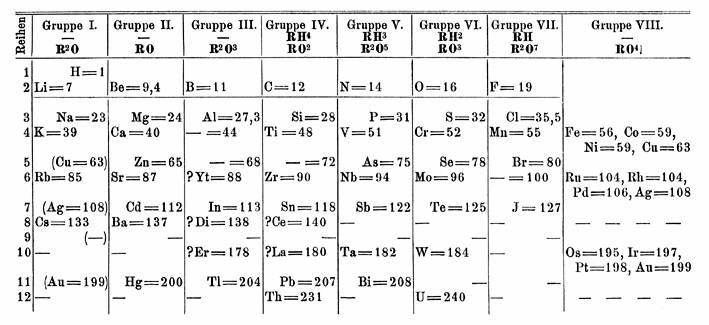
門得列夫的表最了不起的地方，不是它排好了已知的元素，而是它為未知的元素留了空位。他在鋁的下面留了一個空，叫它「類鋁」；在硼的下面留了一個空，叫它「類硼」；在矽的下面留了一個空，叫它「類矽」。「類」這個字，他用梵文的前綴 eka 來表示，意思是「一」，也就是「往下數第一個」。據說，他用這個梵文前綴，是向古印度文法學家波你尼致意。
他不只留空，還把這些還不存在的元素的性質一項一項寫出來：原子量多少、密度多少、熔點高低、會生成什麼樣的氧化物與氯化物。
一八七五年，法國化學家勒科克·德·布瓦博德蘭發現了一種新元素，命名為鎵。門得列夫一看就認出來了：這就是他的類鋁。他預言類鋁的原子量大約是六十八，密度大約是五點九；鎵的實測原子量是六十九點七，密度是五點九一。更傳奇的是，布瓦博德蘭最初測得的密度只有四點七，門得列夫寫信告訴他，這個數字一定量錯了。對方重新測量，結果正是五點九四。一個從沒見過鎵的人，比發現鎵的人更知道鎵應該是什麼樣子。
一八七九年，瑞典化學家尼爾森發現了鈧，門得列夫的類硼應驗了。他預言原子量四十四，鈧是四十四點九六；他預言氧化物的化學式，鈧的氧化物正是他寫的那一種。
一八八六年，德國化學家文克勒發現了鍺，門得列夫的類矽應驗了。這一次的吻合最為完整：他預言原子量七十二，鍺是七十二點六；預言密度五點五，鍺是五點三二；預言它會生成二氧化物與四氯化物，鍺生成的正是二氧化鍺與四氯化鍺。
三個預言，十七年之內，全部應驗。科學史上很少有這樣的時刻：一個人寫下三個還不存在的東西的名字、重量與性格，然後世界一個一個把它們交出來。至於第四個預言「類錳」，要等到一九三七年，才在實驗室裡被人工製造出來——那就是鎝，元素週期表上第一個人造元素。
預言應驗之後，門得列夫成了歐洲最受尊敬的化學家之一。他在一八八二年獲得英國皇家學會的戴維獎章，一九〇五年獲得科普利獎章，同年當選瑞典皇家科學院的外籍院士。可是他始終沒有當選本國的俄國科學院院士——離婚與再婚的風波，加上他直言不諱的性格，讓他在本國的學術圈裡始終是個局外人。
最接近諾貝爾獎的一次是一九〇六年。那一年，諾貝爾化學獎委員會推薦把獎頒給門得列夫，表彰他發現元素週期系。瑞典皇家科學院化學組支持這個推薦，可是在全院大會上，委員克拉松另外提出法國化學家莫瓦桑，物理學家阿累尼烏斯也極力反對，理由是週期系的發現「太老了」，不值得在一九〇六年表彰。經過激烈爭論，全院最終以一票之差選擇了莫瓦桑。門得列夫在一九〇七年再度獲得提名，又一次遭到反對。同年二月二日，他因流行性感冒在聖彼得堡去世，享年七十二歲，距離七十三歲生日只差六天。送葬的隊伍裡，學生們舉著元素週期表，走在他後面。
他沒有等到的一件事，後人替他等到了。一九一三年，英國物理學家莫塞萊用 X 射線光譜證明，決定元素位置的不是原子量，而是原子序——原子核裡的質子數目。碲與碘的順序之謎，就此解開：碲的原子序是五十二，碘是五十三，碘本來就該排在碲後面。門得列夫憑化學直覺做對的決定，終於有了物理學的解釋。
一九五五年，科學家合成了第一百零一號元素，命名為鍆，以紀念門得列夫。他的名字，就這樣住進了他自己畫的表裡。二〇一九年，聯合國把那一年定為「國際化學元素週期表年」，紀念元素週期表發表一百五十週年。今天的表上已經有一百一十八種元素，表尾的那些元素，多半是在實驗室裡一個原子一個原子合成出來的，存在不到一秒就消失。但它們都有位置，因為那張表早就為它們留好了地方。
門得列夫的故事，常被講成一個天才做夢的故事。夢當然是真的——至少他自己是這麼說的——可是把一門科學交給一個夢，是講錯了重點。
他的能力不在做夢，而在敢於留白。整理已知的東西，是一種能力；承認有東西還不知道，並且說出它應該是什麼樣子，是另一種能力，而且更難。絕大多數人在面對空白的時候，會把空白填滿，或者假裝空白不存在。門得列夫反其道而行：他把空白畫出來，標上名字，寫下性質，然後等世界來驗收。
這張表的另一個啟示是：規律比資料更重要。門得列夫手上的資料並不比同時代的人多，有些甚至是錯的。他的優勢在於，他相信資料背後有一種秩序，並且願意為了秩序去質疑資料。當數字與性質衝突，他選擇相信性質；當權威的原子量與他的表衝突，他選擇相信他的表。這種選擇需要的不只是聰明，還有膽量——因為選錯了，他就是一個篡改數據的笑話。
他也教會我們，科學的進步不是一個人獨自完成的。紐蘭茲先看到了八度，邁耶幾乎同時畫出了同樣的表，莫塞萊四十四年後才補上最後一塊拼圖。門得列夫站在所有人的肩膀上，差別在於他多走了一步：他不只描述世界，他預言世界。
今天，我們每個人手上都有比門得列夫多得多的資料。手機裡的數據、網路上的資訊，多到看不完。可是資料多，並不等於看得清。門得列夫留給我們的問題，至今沒有過時：你能不能從一堆看似無關的東西裡，看出一種秩序？看見秩序之後，你敢不敢為還沒有出現的東西，留一個空位？
那張掛在教室牆上的表，至今仍在等下一個敢於留白的人。
Science & the World
Sixty-three elements, a handwritten table, and three names that did not yet exist
On the wall of almost every secondary-school chemistry classroom hangs the same table. Seven rows, eighteen columns, one hundred and eighteen boxes, each holding a name, a symbol and a number. Students memorise it, sit exams on it, print it on the back of their notebooks — and rarely ask where it came from.
It did not fall from the sky. More than a hundred and fifty years ago, in a room in Saint Petersburg piled high with manuscripts, a bearded Russian professor of chemistry wrote the sixty-three elements then known, one by one, onto cards, and shuffled them across his desk like playing cards. He was not arranging a list of elements. He was drawing a map — a map of land no one had yet walked. In some places he deliberately left blanks, because he believed something must be there, even though no one had found it yet.
His name was Dmitri Mendeleev. Born in Siberia in 1834, he died in Saint Petersburg in 1907. He never won a Nobel Prize, and he was never elected to his own country's academy. Yet the table he left behind still hangs on the wall of every chemistry classroom in the world.
Mendeleev was born on 8 February 1834 in a small village near Tobolsk, the youngest of more than a dozen children. His father was the headmaster of the local gymnasium; later he went blind and lost his post. His mother, from a Tobolsk merchant family, took over the family's abandoned glass factory and kept the household alive. His father died in 1847; the glass factory burned down in 1848. Mendeleev was thirteen, and the family had nothing left except his mother's instruction: to search patiently for divine and scientific truth.
In 1849 his mother took him across Russia, from Siberia to Moscow, hoping to enrol him at Moscow University. Moscow University turned him away. Mother and son continued north to Saint Petersburg, where Mendeleev entered the Main Pedagogical Institute, his father's alma mater. His mother died that same year, aged fifty-seven. At sixteen, Mendeleev was alone, living on a scholarship and part-time teaching.
His health was poor too. Soon after graduating he contracted tuberculosis and was sent to teach at a gymnasium on the Crimean Peninsula, convalescing by the Black Sea. Doctors at one point thought he would not live long; instead he slowly recovered. In 1857 he returned to Saint Petersburg; in 1859 he went to Heidelberg in Germany to study the capillarity of liquids and the workings of the spectroscope. In 1861 he published Organic Chemistry and received the Demidov Prize of the Petersburg Academy of Sciences. In 1862 he married Feozva Leshcheva.
In 1864 he became a professor at the Saint Petersburg Technological Institute; in 1865 he took his Doctor of Science degree with a dissertation on the compounds of water with alcohol, and became a professor at Saint Petersburg University; in 1867 he received tenure and began to teach inorganic chemistry. As for whether he fixed the standard strength of vodka at forty percent — no, that is a legend invented for him afterwards. His dissertation was about how water and alcohol combine into compounds, not about the strength of drink.
What Mendeleev inherited was a discipline without order. By 1863, science knew fifty-six elements, and new ones were being found at a rate of about one a year. Every element had its own atomic weight, its own properties, its own compounds — but no one could say what relation they bore to one another. A chemistry textbook was only a list: hydrogen, oxygen, nitrogen, carbon, iron, copper, gold, silver — like a telephone directory with no index.
It was not that no one had tried to bring order. In 1864 the English chemist John Newlands proposed his Law of Octaves: arrange the elements by atomic weight, and every eighth element repeats the properties of the first, like the octave in music. The idea was close, but Newlands's arrangement had too many exceptions, and the Chemical Society, hearing his paper, mocked him and asked whether he had tried arranging them alphabetically. His paper was not recognised until 1887.
The German chemist Lothar Meyer was walking the same road. In 1864 he published a table of twenty-eight elements classified by valence — but with no predictions and no blanks, only a better-organised list. A few months after Mendeleev's table appeared, Meyer published one almost identical to it. The two men arrived at the same door at almost the same moment. The difference was that only Mendeleev pushed the door open and walked through.
In 1868 Mendeleev began writing a textbook for his students, The Principles of Chemistry. The first volume ran to more than five hundred pages and covered only eight elements. At that pace, the second volume would have to cover the remaining fifty-odd, and no student could ever finish it. He needed a way to arrange the elements into a system that a student could grasp at a glance. That practical difficulty of writing a textbook was the true starting point of the periodic table.
He wrote the name, atomic weight and principal properties of each element on a card, and shuffled the cards across his desk again and again: lightest to heaviest by atomic weight, with elements of similar properties in the same column. He worked at it for days and nights. One night, so the story goes, he saw in a dream a table in which "all elements fell into place as required". Waking, he immediately wrote the table from his dream down on paper — "only in one place did a correction later seem necessary". He told this to a friend himself, and it has been handed down ever since. Dream or cards, what matters is not where the inspiration came from, but what he did after he woke.
On 6 March 1869 Mendeleev presented his paper to the Russian Chemical Society, titled "The Dependence between the Properties of the Atomic Weights of the Elements". In it he set out eight conclusions, whose core was a single sentence: the properties of the elements are a periodic function of their atomic weights.
What this means is simple: arrange the elements in a row from lightest to heaviest by atomic weight, and their properties repeat at regular intervals, like the tide. Lithium, sodium, potassium, rubidium and caesium are all lively metals that react with water; fluorine, chlorine, bromine and iodine are all sharp-smelling gases or liquids that love to seize other atoms' electrons. Elements in the same column behave alike; from column to column, properties change by rule.
Mendeleev did more than organise what was known — he dared to correct it. Uranium, as then accepted, had an atomic weight of about 120 and a valence of three. Mendeleev said the figures could not fit his table and must be wrong. He doubled both: atomic weight 240, valence six. Today we know uranium's atomic weight is 238. His correction was almost exactly right.
He also dared to defy the numbers themselves. Tellurium has an atomic weight of 127.6, iodine 126.9. By weight, tellurium should come after iodine; by chemistry, iodine must stand with fluorine, chlorine and bromine. Mendeleev put tellurium before iodine, saying the measurements must be at fault and the future would prove him right. On this he was only half right: tellurium's atomic weight really is 127.6, and there was no error in the measurement. What he did not know was that the true basis of the order is not atomic weight but atomic number — an answer that would wait until 1913, when Moseley uncovered it with X-ray spectra. But at the time, valuing chemical character above the numbers was precisely what made his table better than anyone else's.
In the same paper he wrote his sixth conclusion: "We must expect the discovery of many yet unknown elements — for example, two elements, analogous to aluminium and silicon, whose atomic weights would be between 65 and 75." That sentence is the story of the next chapter.
The greatest thing about Mendeleev's table was not that it arranged the elements already known, but that it left room for the ones not yet known. Below aluminium he left a gap and called it eka-aluminium; below boron, eka-boron; below silicon, eka-silicon. "Eka" was the Sanskrit prefix for "one" — the first one down. He used this Sanskrit prefix, it is said, in honour of the ancient Indian grammarian Pāṇini.
He did more than leave blanks: he wrote out, item by item, what these not-yet-existing elements should be like — their atomic weights, their densities, their melting points, the oxides and chlorides they would form.
In 1875 the French chemist Paul-Émile Lecoq de Boisbaudran discovered a new element and named it gallium. Mendeleev recognised it at once: this was his eka-aluminium. He had predicted an atomic weight of about 68 and a density of about 5.9; gallium's measured atomic weight was 69.7 and its density 5.91. More remarkable still, Boisbaudran's first measurement of the density had been only 4.7, and Mendeleev wrote to him to say the figure must be wrong. Measured again, it came out at 5.94. A man who had never seen gallium knew what gallium should be better than the man who had discovered it.
In 1879 the Swedish chemist Lars Fredrik Nilson discovered scandium, and Mendeleev's eka-boron came true. He had predicted an atomic weight of 44; scandium is 44.96. He had predicted the formula of its oxide, and scandium's oxide was exactly the one he had written down.
In 1886 the German chemist Clemens Winkler discovered germanium, and Mendeleev's eka-silicon came true. This time the match was the most complete of all: he had predicted an atomic weight of 72, and germanium is 72.6; a density of 5.5, and germanium is 5.32; that it would form a dioxide and a tetrachloride, and germanium forms germanium dioxide and germanium tetrachloride.
Three predictions, all fulfilled within seventeen years. Science rarely sees such a moment: a man writes down the names, weights and characters of three things that do not yet exist, and the world hands them over one by one. As for the fourth prediction, eka-manganese, it had to wait until 1937, when it was made artificially in a laboratory — technetium, the first man-made element in the periodic table.
Once the predictions came true, Mendeleev became one of the most respected chemists in Europe. In 1882 he received the Davy Medal of the Royal Society; in 1905 the Copley Medal, and election as a foreign member of the Royal Swedish Academy of Sciences. Yet he was never elected to the Russian Academy of Sciences in his own country — the scandal of his divorce and remarriage, together with his outspoken character, left him an outsider in his own academic world.
His closest approach to the Nobel Prize came in 1906. That year the Nobel Committee for Chemistry recommended the prize for Mendeleev, in recognition of his discovery of the periodic system. The chemistry section of the Royal Swedish Academy of Sciences supported the recommendation, but at the full meeting of the Academy, the committee member Peter Klason put forward the French chemist Henri Moissan instead, and the physicist Svante Arrhenius pressed hard against Mendeleev, arguing that the periodic system was too old to be honoured in 1906. After heated argument, the Academy chose Moissan by a margin of one vote. Mendeleev was nominated again in 1907, and opposed again. On 2 February that year he died of influenza in Saint Petersburg, aged seventy-two, six days short of his seventy-third birthday. In his funeral procession, his students carried copies of the periodic table behind him.
One thing he did not live to see, others saw for him. In 1913 the English physicist Henry Moseley used X-ray spectra to prove that what fixes an element's place is not its atomic weight but its atomic number — the number of protons in its nucleus. The tellurium-iodine puzzle was solved at last: tellurium's atomic number is 52, iodine's 53, so iodine always belonged after tellurium. A decision Mendeleev had made by chemical instinct finally received its physical explanation.
In 1955 scientists synthesised element 101 and named it mendelevium, in his honour. His name thus came to live inside the table he had drawn himself. In 2019 the United Nations proclaimed the International Year of the Periodic Table, marking one hundred and fifty years since its publication. Today's table holds one hundred and eighteen elements; the last of them are mostly made in laboratories, one atom at a time, vanishing in less than a second. But they all have their places, because the table had kept places ready for them long ago.
Mendeleev's story is often told as the tale of a genius who had a dream. The dream was real enough — at least, he said so himself — but to hand a science over to a dream is to miss the point.
His gift was not dreaming, but daring to leave blanks. To organise what is known is one ability; to admit that something is not yet known, and to say what it should be like, is another, and harder. Most people, faced with a blank, fill it in or pretend it is not there. Mendeleev did the opposite: he drew the blank, gave it a name, wrote down its properties, and waited for the world to answer.
The table's other lesson is that pattern matters more than data. Mendeleev had no more data than his contemporaries, and some of what he had was wrong. His advantage was that he believed there was an order behind the data, and he was willing to question the data for the sake of the order. When numbers clashed with chemical character, he trusted character; when an authoritative atomic weight clashed with his table, he trusted his table. That choice took more than cleverness — it took courage, because if he had chosen wrongly, he would have been a laughing-stock who fiddled with the figures.
He also teaches us that science is never one person's work alone. Newlands saw the octaves first; Meyer drew almost the same table at almost the same time; Moseley supplied the final piece forty-four years later. Mendeleev stood on all their shoulders. The difference was that he took one step further: he did not only describe the world, he predicted it.
Today each of us holds far more data than Mendeleev ever did. The figures on our phones, the information on the internet, are more than anyone can read. But more data does not mean seeing more clearly. The question Mendeleev left us has not gone out of date: can you look at a pile of apparently unrelated things and see an order in them? And once you see the order, do you dare to leave a place open for what has not yet appeared?
The table on the classroom wall is still waiting for the next person brave enough to leave a blank.
人與社會
二十七年牢房、一個編號，與一場沒有報復的勝利
一九九〇年二月十一日，下午四點剛過，南非開普敦郊外的維克多·韋斯特監獄，一扇鐵門打開了。走出來的是一個七十一歲的老人，頭髮花白，穿著深色西裝，牽著妻子的手，向人群舉起握緊的拳頭。那一刻，電視把畫面傳到全世界。對許多人來說，那是他們第一次真正看見他——不是照片裡年輕的律師，不是海報上的側影，而是一個活生生的人，從監獄裡走出來，自由了。
他叫納爾遜·曼德拉。從一九六二年八月五日被捕，到這一刻，他失去自由已經二十七年半。進去時他四十四歲，出來時七十一歲。他的一生中最好的一段年華，全部耗在鐵窗後面。而他走出來的時候，沒有喊復仇，沒有罵他的獄卒。他說的第一句話，是關於和解。
這篇文章要講的，就是這二十七年，以及這二十七年之後的事：一個人如何被關進牢房，一個國家如何被關進一種制度，而他們又是怎麼一起走出來的。
一九一八年七月十八日，曼德拉出生在南非東開普省姆韋佐村一個科薩族坦布酋長家庭，父親是酋長亨利·曼德拉，母親是諾塞凱尼。他的科薩名字是羅利赫拉赫拉，意思是「扯動樹枝的人」，也有「麻煩製造者」的意思。他上小學的第一天，老師給每個孩子取一個英文名字，他得到的名字是納爾遜——取自英國海軍將領納爾遜勳爵。
他九歲那年父親去世，攝政王瓊金塔巴把他接去王宮撫養，視如己出。在那裡，他第一次看見權力是怎麼運作的：酋長們圍坐一圈，人人都能發言，直到達成共識才散會。這種議事方式後來深深影響了他——領導不是發號施令，而是讓每個人都說完話。
一九三九年，他進入霍爾堡大學學院讀書，結識了後來一生的戰友奧利弗·坦博。一年後，他因為帶頭抵制學生代表會的改選而被退學，回到約翰尼斯堡，一邊在律師事務所當學徒，一邊透過南非大學函授完成文學士學位，一九四二年畢業。隨後他進入威特沃特斯蘭德大學讀法律，成為南非少數的黑人律師之一。一九五二年，他和坦博合開律師事務所，為付不起錢的黑人免費打官司，事務所門口常常排著長隊。
一九四三年，他加入非洲人國民大會（ANC）。第二年，他與坦博、西蘇魯等人創立非國大青年聯盟，主張更積極的抗爭。對當時的曼德拉來說，政治不是課本上的名詞，而是每天的生活：黑人不能住在白人區，不能進某些餐廳，連走路都要隨身攜帶通行證。一九四八年，國民黨上台，種族隔離成為國策，黑人被法律分成不同的等級，連婚姻、居住、上學都要按膚色劃分。
曼德拉一開始相信非暴力。一九五二年，他參與組織反抗不公法令運動，帶領群眾和平違反種族隔離法令，因此第一次被捕。一九五六年，他與一百五十五名反種族隔離人士被控叛國罪，審判拖了四年半，直到一九六一年才全部獲判無罪。
但局勢在惡化。一九六〇年三月二十一日，沙佩維爾鎮，數千名黑人聚集在警察局外抗議通行證法，警察開槍，官方紀錄六十九人死亡、一百八十人受傷，其中許多人是從背後中槍。三月三十日，政府宣布緊急狀態，逮捕一萬八千多人；四月八日，非國大與泛非主義者大會被宣布為非法組織。和平抗議的路，被堵死了。
曼德拉後來寫道，沙佩維爾之後他明白了一件事：一個政府如果只用暴力回答和平的要求，那麼和平的要求就再也沒有意義。一九六一年十二月，他領導成立非國大的武裝組織「民族之矛」，主張針對政府設施進行破壞，但不攻擊平民。他說，這不是要發動戰爭，而是要讓政府明白，黑人不會永遠沉默。
一九六二年八月五日，他在納塔爾省被捕，十一月七日被判五年徒刑，罪名是煽動罷工與非法出境。對一個四十四歲的人來說，五年已經很長；但他不知道，真正的審判還在後面。
一九六三年七月十一日，警察突襲約翰尼斯堡郊外里沃尼亞一座農場，逮捕了非國大地下領導層的大部分成員，並搜出大量文件。同年十月，曼德拉與九名同案被告被控破壞與密謀推翻國家罪，里沃尼亞審判開庭。檢方要求判處死刑。
一九六四年四月二十日，曼德拉在法庭上發表了著名的「我準備去死」演說。他說：「我珍視民主與自由社會的理想，在那樣的社會裡，所有人都能和諧共處，享有平等的機會。這是我願意為之活下去、為之奮鬥的理想；但如果有必要，那也是我準備為之獻身的理想。」這篇演說後來被譽為二十世紀最偉大的法庭演說之一。
六月十二日，法官宣判：曼德拉與其他七名被告終身監禁。死刑躲過了，自由卻沒有回來。他被編號為四六六／六四——第四六六號囚犯，一九六四年入獄。這個編號後來成為全世界最有名的囚犯編號。
此後十八年，他都在開普敦外海七公里的羅本島度過。囚室只有一張草蓆、一隻水桶、一張小桌。白天，他要到石灰岩採石場做苦工，烈日下敲石頭，眼睛被石灰粉刺傷，視力受損。晚上，他以函授繼續攻讀法律，寫作自傳，讀書、種菜。囚犯們在採石場裡偷偷討論政治、互相授課，把監獄變成一所沒有圍牆的大學——他們叫它「羅本島大學」。
一九八二年，他被轉到波爾斯穆爾監獄，一九八八年再轉到維克多·韋斯特監獄。政府幾次提出有條件釋放，要他放棄武裝鬥爭，他都拒絕了。一九八五年，他在聲明中說：「只有自由的人才能談判，囚犯不能簽訂契約。」他寧可繼續坐牢，也不願意用尊嚴換自由。
一九八〇年代末，世界變了。南非在國際制裁下經濟窒息，國內抗爭不斷，種族隔離已經維持不下去。一九八九年七月，總統博塔在官邸會見曼德拉；同年十二月，新總統戴克拉克也與他會面。一九九〇年二月二日，戴克拉克在國會宣布解除對非國大等組織的禁令，釋放政治犯。九天之後，曼德拉走出監獄。
自由來了，但國家還沒有。接下來四年，是南非歷史上最危險的四年。談判桌上，非國大與國民黨政府討價還價；談判桌外，暴力衝突不斷，有人想用暗殺與屠殺阻止民主到來。一九九三年四月，非國大領袖克里斯·哈尼遭暗殺，全國瀕臨內戰邊緣，是曼德拉在電視上呼籲冷靜，才把國家拉回來。同年十月，他與戴克拉克共同獲得諾貝爾和平獎——一個是種族隔離的囚徒，一個是種族隔離的總統，一起因為結束種族隔離而獲獎。
一九九四年四月二十七日，南非舉行第一次不分種族的大選。排隊投票的人龍綿延數公里，許多人一輩子第一次投票，站上幾個小時也在所不惜。非國大贏得百分之六十二點六五的選票。五月十日，曼德拉宣誓就任總統，成為南非第一位黑人總統，也是第一位由全體人民選出的總統。戴克拉克擔任副總統。一個被種族隔離撕裂的國家，第一次有了共同的政府。
當上總統之後，曼德拉做的第一件事，不是報復，而是和解。他成立民族團結政府，讓白人官員留任；他保留了舊國歌，也保留了象徵舊政權的橄欖球隊——一九九五年，南非主辦世界盃橄欖球賽，他穿上綠色球衣為白人為主的南非隊加油，全場高喊他的名字。那一刻，體育場裡的黑人與白人第一次一起為同一支隊伍歡呼。
一九九五年，他成立真相與和解委員會，由大主教德斯蒙德·圖圖主持。委員會的做法在全世界都是首創：加害者只要完整說出真相，就可以獲得特赦；受害者則有機會公開講述自己的遭遇，得到國家的正式承認。委員會一九九八年提出最終報告。這個做法有爭議——有人認為正義被犧牲了，有人認為這是唯一能讓國家不分裂的辦法。曼德拉的選擇很清楚：他要真相，更要未來。
同樣在任期內，他推動重建與發展計畫，為貧民興建住房、接通自來水與電力；一九九六年十二月十日，他在沙佩維爾簽署新憲法，憲法保障所有人不分種族、性別、信仰一律平等，於一九九七年二月四日生效。一九九九年六月十四日，他卸任總統，只做一任，把權力交給副手姆貝基。他說，一個領袖最難的不是上台，而是下台。
他退休後沒有停下來，繼續為愛滋病防治與兒童教育奔走。二〇一三年十二月五日，他在約翰尼斯堡家中去世，享年九十五歲。南非為他舉行國葬，世界各國領袖齊聚約翰尼斯堡送別。他一生獲得超過二百五十項榮譽，包括一九九三年的諾貝爾和平獎——但對南非人來說，他最重要的頭銜始終只有一個：馬迪巴，族人對他的暱稱，意思是「父親」。
曼德拉的故事常常被講成一個勵志故事：一個人坐了二十七年牢，出來當了總統。但這樣講，漏掉了最關鍵的部分。他坐牢的二十七年，世界並沒有等他；他出獄之後，國家差一點就內戰；他當總統的五年，每天都要在報復與和解之間做選擇。自由不是他出獄那天得到的禮物，而是他用一輩子談判、忍耐、妥協，一點一點談回來的東西。
他留給讀者兩個提醒。第一個是關於憤怒。憤怒是正當的，曼德拉自己也憤怒過；但憤怒如果只用來報復，就會把受害者變成下一個加害者。他選擇把憤怒變成談判桌上的籌碼，而不是街頭上的子彈。第二個是關於時間。二十七年聽起來像浪費，但曼德拉在牢裡學到的東西——耐心、傾聽、看清對手的恐懼——正是他出獄後最需要的本事。監獄沒有毀掉他，因為他拒絕讓監獄定義他。
羅本島的囚室今天還在，鐵門敞開著，遊客可以走進去，站在那張草蓆的位置上，看一眼窗外的大海。囚室很小，小到一個人轉身都困難。但曼德拉在那裡想明白了一件事，後來他用一句話說了出來：「沒有人天生就仇恨他人……人們必須學會仇恨，既然仇恨可以學會，愛也可以學會。」這句話不是口號，是一個人用二十七年驗證過的結論。
自由從來不是別人給的，也不是一次到位的。它是一個人、一個國家，每天都要重新選擇的東西。曼德拉選了二十七年，選到最後，連他的獄卒都開始尊敬他。這大概就是他留給世界最實用的啟示：你無法控制別人把你關進哪裡，但你可以控制自己走出來時，變成什麼樣的人。
People & Society
Twenty-seven years in prison, one prisoner number, and a victory without revenge
Just after four o'clock in the afternoon on 11 February 1990, an iron gate opened at Victor Verster Prison outside Cape Town, South Africa. Out walked a seventy-one-year-old man with greying hair, wearing a dark suit, holding his wife's hand, raising a clenched fist to the crowd. Television carried the picture around the world. For many people, it was the first time they had really seen him — not the young lawyer in the photographs, not the silhouette on the posters, but a living man walking out of prison, free.
His name was Nelson Mandela. From his arrest on 5 August 1962 to that moment, he had been without freedom for twenty-seven and a half years. He went in at forty-four and came out at seventy-one. The best years of his life had been spent behind bars. And when he walked out, he did not call for revenge or curse his jailers. His first words were about reconciliation.
This essay tells the story of those twenty-seven years, and of what came after: how a man was put in a cell, how a country was locked inside a system, and how they walked out together.
Nelson Mandela was born on 18 July 1918 in the village of Mvezo in the Eastern Cape, into the Thembu royal family of the Xhosa people. His father, Gadla Henry Mphakanyiswa, was a chief; his mother was Nosekeni. His Xhosa name was Rolihlahla, meaning "pulling the branch of a tree" — or, more loosely, "troublemaker". On his first day at school, his teacher gave every child an English name. His was Nelson, after the British admiral Lord Nelson.
When he was nine, his father died, and the regent Jongintaba Dalindyebo took him into the royal household and raised him as his own son. There he first saw how power worked: the chiefs sat in a circle, everyone spoke, and no meeting ended until agreement was reached. That way of deciding things stayed with him for life — leadership was not giving orders, but letting everyone finish speaking.
In 1939 he entered the University College of Fort Hare, where he met Oliver Tambo, who would be his comrade for life. A year later he was expelled for leading a boycott of the Students' Representative Council elections. He moved to Johannesburg, worked as an articled clerk in a law firm, and completed a Bachelor of Arts degree by correspondence through the University of South Africa, graduating in 1942. He then studied law at the University of the Witwatersrand, becoming one of the few Black lawyers in South Africa. In 1952 he and Tambo opened a law practice together, offering free legal help to Black clients who could not pay; queues often formed outside the door.
In 1943 he joined the African National Congress. The following year he helped found the ANC Youth League with Tambo and Walter Sisulu, calling for more militant resistance. For Mandela, politics was not an abstraction but daily life: Black people could not live in white areas, could not enter certain restaurants, and had to carry a pass book wherever they went. In 1948 the National Party came to power and made apartheid the law of the land — Black South Africans were graded by law into different categories, and where they lived, whom they married and where their children went to school were all decided by the colour of their skin.
Mandela began as a believer in non-violence. In 1952 he helped organise the Defiance Campaign, leading people to break the apartheid laws peacefully, and was arrested for the first time. In 1956 he was charged with treason, along with 155 other anti-apartheid activists; the trial dragged on for four and a half years until all the accused were acquitted in 1961.
But the situation was worsening. On 21 March 1960, in the township of Sharpeville, thousands of Black protesters gathered outside the police station to protest against the pass laws. Police opened fire; the official record counted 69 dead and 180 wounded, many of them shot in the back as they fled. On 30 March the government declared a state of emergency and arrested more than 18,000 people; on 8 April the ANC and the Pan Africanist Congress were declared illegal. The road of peaceful protest was closed.
Mandela later wrote that after Sharpeville he understood one thing: when a government answers peaceful demands only with violence, peaceful demands cease to have meaning. In December 1961 he led the founding of Umkhonto we Sizwe — "Spear of the Nation" — the ANC's armed wing, which attacked government installations but not civilians. He insisted it was not a declaration of war, but a way of telling the government that Black South Africans would not be silent forever.
On 5 August 1962 he was arrested in Natal, and on 7 November he was sentenced to five years' imprisonment for inciting a strike and leaving the country illegally. For a forty-four-year-old man, five years was already a long time. He did not know that the real trial was still to come.
On 11 July 1963 police raided a farm at Liliesleaf in Rivonia, outside Johannesburg, arresting most of the ANC's underground leadership and seizing a large cache of documents. That October, Mandela and nine co-accused were charged with sabotage and conspiracy to overthrow the state. The Rivonia Trial began. The prosecution sought the death penalty.
On 20 April 1964 Mandela addressed the court in a speech that became known as "I Am Prepared to Die". He said: "I have cherished the ideal of a democratic and free society in which all persons live together in harmony and with equal opportunities. It is an ideal which I hope to live for and to achieve. But if needs be, it is an ideal for which I am prepared to die." It is still counted among the great courtroom speeches of the twentieth century.
On 12 June the judge passed sentence: life imprisonment for Mandela and seven of his co-accused. Death had been avoided; freedom had not returned. He was given the number 466/64 — prisoner 466 of 1964. It would become the most famous prisoner number in the world.
For the next eighteen years he lived on Robben Island, seven kilometres off Cape Town. His cell held a straw mat, a bucket and a small table. By day he broke rock in the limestone quarry, his eyes damaged by the glare and the lime dust. By night he continued his law studies by correspondence, wrote his autobiography, read and gardened. The prisoners debated politics in the quarry and taught one another in secret, turning the prison into a university without walls — they called it the University of Robben Island.
In 1982 he was moved to Pollsmoor Prison, and in 1988 to Victor Verster Prison. The government offered him conditional release several times, if he would renounce the armed struggle. He refused every time. In a statement read out in 1985 he said: "Only free men can negotiate. Prisoners cannot enter into contracts." He would rather stay in prison than trade his dignity for freedom.
By the late 1980s the world had changed. Under international sanctions the South African economy was suffocating, resistance at home was unrelenting, and apartheid could no longer be sustained. In July 1989 President P. W. Botha received Mandela at his official residence; that December the new president, F. W. de Klerk, met him as well. On 2 February 1990 de Klerk announced in Parliament that the ban on the ANC and other organisations was lifted and political prisoners would be freed. Nine days later, Mandela walked out of prison.
Freedom had arrived, but the country had not yet. The next four years were the most dangerous in South African history. At the negotiating table the ANC and the National Party haggled over the future; outside it, violence continued, and there were those who tried to stop democracy with assassination and massacre. In April 1993 the ANC leader Chris Hani was murdered, and the country stood on the edge of civil war; it was Mandela's televised appeal for calm that pulled it back. In October that year he and de Klerk were jointly awarded the Nobel Peace Prize — the prisoner of apartheid and the president of apartheid, honoured together for ending it.
On 27 April 1994 South Africa held its first election in which all races could vote. Queues stretched for kilometres; many people voted for the first time in their lives, standing for hours without complaint. The ANC won 62.65 percent of the vote. On 10 May Mandela was sworn in as president — South Africa's first Black president, and the first chosen by all its people. De Klerk became a deputy president. A country torn apart by apartheid had, for the first time, a government that belonged to everyone.
Once in office, Mandela's first act was not revenge but reconciliation. He formed a Government of National Unity and kept white officials in their posts. He kept the old national anthem, and he kept the Springboks, the rugby team that had symbolised the old regime. In 1995 South Africa hosted the Rugby World Cup, and he walked onto the field in the green Springbok jersey to cheer on a team that was still mostly white; the whole stadium chanted his name. For the first time, Black and white South Africans cheered for the same team.
In 1995 he established the Truth and Reconciliation Commission, chaired by Archbishop Desmond Tutu. Its method was without precedent anywhere in the world: perpetrators who told the whole truth could receive amnesty, while victims were given the chance to tell their stories in public and receive formal recognition from the state. The Commission delivered its final report in 1998. The approach was controversial — some said justice had been sacrificed, others that it was the only way to keep the country from splitting apart. Mandela's choice was clear: he wanted the truth, and he wanted the future even more.
During the same term he launched the Reconstruction and Development Programme, building homes and bringing running water and electricity to poor communities. On 10 December 1996, at Sharpeville, he signed the new Constitution, which guaranteed equality for all regardless of race, sex or belief; it came into force on 4 February 1997. On 14 June 1999 he stepped down after a single term, handing power to his deputy, Thabo Mbeki. He used to say that the hardest thing for a leader is not taking office, but leaving it.
He did not stop after retirement, campaigning for AIDS treatment and children's education. On 5 December 2013 he died at his home in Johannesburg, aged ninety-five. South Africa gave him a state funeral, and leaders from around the world gathered in Johannesburg to say goodbye. He received more than 250 honours in his lifetime, including the Nobel Peace Prize in 1993 — but to South Africans his most important title was always the same one: Madiba, the clan name his people called him, meaning "father".
Mandela's story is often told as an inspirational tale: a man spends twenty-seven years in prison and comes out to become president. Told that way, the most important part is missing. During those twenty-seven years the world did not wait for him; after his release the country nearly fell into civil war; and during his five years as president he had to choose between revenge and reconciliation every day. Freedom was not a gift he received on the day he walked out of prison. It was something he negotiated, endured and compromised for, piece by piece, over a lifetime.
He leaves the reader two reminders. The first is about anger. Anger is legitimate — Mandela felt it himself. But anger spent only on revenge turns the victim into the next perpetrator. He chose to turn anger into a bargaining chip at the negotiating table rather than a bullet in the street. The second is about time. Twenty-seven years sounds like a waste, but what Mandela learned in prison — patience, listening, seeing his opponent's fear — was exactly what he needed most after his release. Prison did not destroy him, because he refused to let prison define him.
The cell on Robben Island is still there. Its iron door stands open, and visitors can walk in, stand where the straw mat lay, and look out at the sea through the bars. The cell is so small that a man can barely turn around in it. But Mandela worked out one thing there, and later put it into a single sentence: "No one is born hating another person because of the colour of his skin, or his background, or his religion. People must learn to hate, and if they can learn to hate, they can be taught to love." It was not a slogan. It was a conclusion verified over twenty-seven years.
Freedom is never given by others, and it never arrives all at once. It is something a person — and a country — must choose again every day. Mandela chose for twenty-seven years, and by the end even his jailers had come to respect him. That is perhaps the most practical lesson he leaves the world: you cannot control where others lock you up, but you can control what kind of person you are when you walk out.
書與思想
一部被判了死刑的書，活了兩千年
兩千多年前，一個被判了死刑的史官，選擇用一種比死更屈辱的方式活下來，只為了寫完一本書。那本書寫成之後沒有出版，沒有讀者，作者把它藏起來，留給不知道會不會出現的後人。結果它活下來了，而且活得比寫它的帝國更久，活成中國此後兩千年所有史書的範本。
這本書是《史記》，這個人是司馬遷。他的故事值得一讀，不是因為它悲慘，而是因為它回答了一個很實際的問題：一個人被整個世界否定之後，還能用什麼方式，把自己說過的話留下來？司馬遷的答案是：寫歷史。寫一本夠好、夠真、夠大的書，大到沒有人能忽視它，大到時間拿它沒有辦法。
司馬遷約生於前一四五年，出生在黃河邊的龍門，今陝西韓城一帶。他的父親司馬談，是漢武帝朝的太史令，掌管天文曆法，也負責記錄朝廷大事。司馬家世代做史官，這個職位在司馬談手裡已經不是一份差事，而是一份家業。司馬遷自述，十歲就能背誦古文；二十歲那年，他離開長安，往南遊歷江淮，登會稽、探禹穴，北上齊魯，親身去看孔子生活過的地方。讀萬卷書之前，他先用腳走了一遍他將來要寫的土地。
前一一〇年，漢武帝到泰山舉行封禪大典。司馬談抱病留在周南，沒能隨行——對一個畢生準備記錄這場大典的史官來說，這是莫大的屈辱。他在洛陽一帶病逝，臨終前拉著兒子的手，哭著囑託他：不要忘記我們家要寫的那部史書。司馬遷把這句話記了一輩子。兩年之後，前一〇八年，他繼任太史令，接過父親的職位，也接過父親未寫完的書。
前一〇四年，司馬遷參與太初曆的改革，幫漢朝換了一部新曆法；同一年，他正式動筆，開始寫那部從傳說中的黃帝寫到漢武帝當朝的通史。那一年他大約四十歲，朝廷重臣，前程正好。他不知道，五年之後，一句話會把這一切都毀掉。
前九九年，漢朝與匈奴開戰。將軍李陵率五千步兵深入草原，在浚稽山一帶遭遇單于親率的三萬騎兵，隨後匈奴又增兵八萬。李陵的部隊血戰多日，箭射完了，糧食斷了，最後李陵投降，四百多人逃回邊塞，其餘全軍覆沒。
消息傳回長安，滿朝文武都說李陵有罪。漢武帝問司馬遷的意見，司馬遷說了幾句公道話：李陵一向孝順父母、信守然諾，五千人深入敵境，苦戰千里，箭盡路絕，這樣的將領，就算戰敗也值得同情。他沒有說李陵投降是對的，他只是說，這個人不該被一筆抹殺。
皇帝聽到的卻是另一層意思。李陵的敗仗牽連到皇帝的連襟李廣利，司馬遷的話聽起來像是在替叛將開脫、暗諷主帥。漢武帝大怒，以「誣罔」之罪把司馬遷下獄，判了死刑。按當時的律法，死刑可以用錢贖回，但司馬遷家貧，拿不出贖金；於是死刑改成腐刑——一種比死更羞辱的刑罰。在漢代的觀念裡，受腐刑的人連做人都抬不起頭。
前九六年左右，司馬遷出獄，被任命為中書令，一個只有受過宮刑的人才能擔任的內廷職位。他沒有自殺，沒有隱居，沒有報復。他回到書桌前，繼續寫那部書。幾年之後，他在寫給朋友任安的信裡說出了自己的理由：人固有一死，或重於泰山，或輕於鴻毛。他之所以忍辱活下來，是因為心裡有一件事還沒做完——「恨私心有所不盡，鄙沒世而文采不表於後也」。他怕的不是死，而是死了之後，自己想說的話沒有人知道。
《史記》完成時，約在前九一年前後，全書一百三十篇，約五十二萬六千五百字。司馬遷給它取的名字不是《史記》，而是《太史公書》，太史公是他自稱。它的結構在此之前從來沒有人用過，此後卻成了中國史書的標準：本紀十二篇，寫帝王；表十篇，用年表對照各國大事；書八篇，寫禮樂、曆法、經濟、水利等制度；世家三十篇，寫諸侯與重要家族；列傳七十篇，寫各色人物。從黃帝到漢武帝，跨度兩千五百多年，一部書裝下了一個文明的全部記憶。
這個結構本身就是一種史觀。以前的史書按年代記流水帳，事情一件一件過去，人只是事件裡的名字。司馬遷把人放回中心：帝王有本紀，諸侯有世家，連刺客、商人、遊俠都有列傳。歷史不再只是朝廷的大事記，而是一群具體的人，在各自的處境裡做的選擇。他在自述裡說，寫這部書是為了「究天人之際，通古今之變，成一家之言」——弄清楚天與人的關係，貫通古今的變化，寫出一家之言。這句話後來成了中國史學的座右銘。
他寫這部書的材料，一部分來自朝廷的檔案，一部分來自他年輕時遊歷的見聞，還有一部分來自傳說與口耳相傳的舊事。哪些可信，哪些存疑，他心裡有數，常常把不同的說法並列，留給讀者自己判斷。這種做法在當時很新鮮：史官不必假裝什麼都知道，承認不知道，也是一種誠實。
《史記》最動人的地方，是它寫人的方式。司馬遷給項羽立了本紀。項羽沒有當過皇帝，按體例不該進本紀，但司馬遷認為，一個以武力奪取天下、雖敗猶有王者氣象的人，值得放在帝王的位置上寫。他給孔子立了世家。孔子是布衣，沒有封國，沒有軍隊，但司馬遷寫道，自天子王侯以下，中國人講到學問與道德，沒有人能繞過他。他給陳勝立了世家。陳勝是個農民，揭竿而起只做了幾個月王，司馬遷卻認真寫下他的起事，因為一個農民敢說「王侯將相寧有種乎」，本身就是歷史。
列傳裡的人更多，也更雜。刺客荊軻、豫讓，商人白圭、猗頓，遊俠郭解、朱家，出使西域的張騫，忍辱負重的韓信，知人善任的蕭何。司馬遷寫他們，不寫聖人傳，只寫一個人在絕境裡怎麼做決定。韓信受胯下之辱，後來封侯拜將，司馬遷寫他從市井無賴到大將軍的每一步，不替他辯解，也不替他遮掩。張騫出使西域，前一三八年出發，前一二六年才歸來，十三年間被匈奴扣留、逃亡、再出使，司馬遷把他寫進《大宛列傳》，讓一次外交使命變成一部冒險故事。
後人班固評價司馬遷的寫法，說他「其文直，其事核，不虛美，不隱惡」——文字直白，事情核實，不虛美，不藏惡。這八個字，幾乎就是司馬遷給自己立下的規矩。他寫漢武帝，寫他的雄才大略，也寫他的迷信方士、窮兵黷武；寫李廣，寫他的百戰功名，也寫他的不得封侯、憤而自殺。一個史官最大的勇氣，不是敢罵皇帝，而是敢把一個人寫完整。
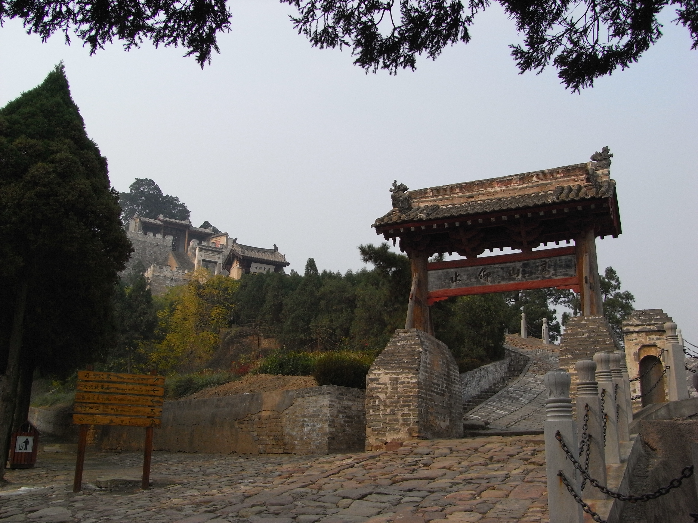
《史記》寫成之後，司馬遷沒有公開它。他在信裡說，寫完之後要「藏之名山，副在京師」，正本藏進名山，副本留在京城，等後世的聖人君子來讀。他死後，這部書才慢慢流傳開來。流傳的過程並不平順：東漢時期，十篇散失，後人陸續補綴，其中西漢學者褚少孫補寫的部分流傳至今。直到今天，我們讀到的《史記》仍帶著這些補寫的痕跡，像一件修補過的古器，裂紋本身也是歷史的一部分。
但這部書的命運，終究沒有辜負它的作者。班固寫《漢書》，沿用了它的紀傳體；此後兩千年，中國的正史一部接一部，幾乎全是按它的體例寫的，合稱二十四史，《史記》是第一部。魯迅後來稱它為「史家之絕唱，無韻之離騷」——史學上無人能及，文學上又是一部沒有韻律的《離騷》。一句話，同時肯定了它作為史書與文學的雙重地位。
司馬遷寫《史記》的時候，沒有讀者，沒有稿費，沒有人會為他出頭。他寫給的，是一個還不存在的人：未來的讀者。他相信時間會替他作證，相信只要書夠好，總有一天會有人翻開它。這種相信，在當時看起來近乎天真。一個受過宮刑的史官，憑什麼相信後世會讀他的書？他憑的只有一件事：把書寫好。
兩千年過去了，證明他是對的。漢武帝的帝國早已不在，李陵的名字只剩下一段公案，連給司馬遷判刑的那套律法也早已廢止。但《史記》還在。每一個學中文的人，遲早都會讀到它裡面的一個人、一段話：項羽的烏江自刎，藺相如的完璧歸趙，廉頗的負荊請罪，韓信的胯下之辱。這些故事之所以活著，是因為司馬遷先把它們寫活了。
司馬遷留給後人最重要的一課，不在史學，而在做人。一個人可以失去名譽、失去地位、失去身體的完整，卻不必失去說話的權利。只要還能寫，就還能把自己想說的話留下來。歷史不會記得每一個受辱的人，但它會記得那個受辱之後仍然把書寫完的人。司馬遷用一部書證明了一件事：一個人對抗一個時代最有力的方式，不是反抗，不是遺忘，而是寫下來，寫得夠真，寫得夠久，久到時間站在你這一邊。
Books & Ideas
A book sentenced to death that has lived for two thousand years
More than two thousand years ago, a court historian sentenced to death chose to stay alive in a way more humiliating than death, for one reason only: to finish a book. When the book was done, it was not published. It had no readers. Its author hid it away, leaving it for posterity that might never come. The book survived anyway — and outlived the empire that produced it, becoming the model for every official history written in China for the next two thousand years.
The book is the Shiji, the Records of the Grand Historian. The man is Sima Qian. His story is worth reading not because it is tragic, but because it answers a practical question: after the whole world has turned against you, what way is left to preserve what you have to say? Sima Qian's answer was to write history — a book so good, so true and so large that no one could ignore it, and that time could do nothing against.
Sima Qian was born around 145 BC at Longmen, on the Yellow River, in what is now Hancheng, Shaanxi. His father, Sima Tan, was Grand Historian under Emperor Wu, in charge of astronomy, the calendar and the records of court affairs. The Sima family had served as historians for generations; in Sima Tan's hands the post had become more than a job — it was a family enterprise. Sima Qian later wrote that by the age of ten he could recite ancient texts, and at twenty he left Chang'an to travel south through the Jiang and Huai regions, climbing Mount Kuaiji, seeking the cave of Yu, and travelling north to Qi and Lu to see for himself the places where Confucius had lived. Before he had read ten thousand books, he had walked the land he would one day write about.
In 110 BC, Emperor Wu travelled to Mount Tai to perform the feng and shan sacrifices, the supreme imperial rite. Sima Tan, ill, was left behind at Zhounan — for a historian who had spent his career preparing to record that ceremony, a bitter humiliation. He died near Luoyang, and on his deathbed he took his son's hand and wept, charging him never to forget the history their family meant to write. Sima Qian remembered those words for the rest of his life. Two years later, in 108 BC, he succeeded his father as Grand Historian, inheriting both the post and the unfinished book.
In 104 BC, Sima Qian took part in the reform of the calendar, giving the Han dynasty a new Taichu calendar; in the same year he began writing the general history that would run from the legendary Yellow Emperor down to Emperor Wu's own reign. He was about forty, a trusted court official, his future secure. He did not know that five years later, a few words would destroy all of it.
In 99 BC, the Han was at war with the Xiongnu. The general Li Ling led five thousand foot soldiers deep into the steppe and met the chanyu's thirty thousand horsemen near Mount Junji; the Xiongnu then sent eighty thousand more. Li Ling's men fought for days, until their arrows were spent and their supplies gone. In the end Li Ling surrendered; only some four hundred of his men made it back to the frontier, and the rest were lost.
When the news reached Chang'an, every minister at court said Li Ling was guilty. Emperor Wu asked Sima Qian's opinion, and Sima Qian said a few fair words: Li Ling had always been dutiful to his parents and true to his word; with five thousand men he had fought his way deep into enemy territory for a thousand li, and when his arrows ran out and his road was blocked, he had still fought on. He did not say surrender was right; he only said that such a man should not be erased with a single stroke.
The emperor heard something else. Li Ling's defeat touched Li Guangli, the emperor's brother-in-law and commander of the campaign, and Sima Qian's words sounded like a defence of a traitor and a veiled attack on the commander. Emperor Wu flew into a rage and had Sima Qian imprisoned and sentenced to death for "deception". Under the law of the time, a death sentence could be redeemed with money, but Sima Qian's family was too poor to pay. The sentence was therefore commuted to castration — a punishment more shameful than death. In Han eyes, a castrated man could no longer hold his head up among men.
Around 96 BC, Sima Qian was released from prison and appointed Palace Secretary, a post reserved for eunuchs. He did not kill himself. He did not retire into hiding. He did not seek revenge. He went back to his desk and went on writing the book. Years later, in a letter to his friend Ren An, he explained why: a man must die, but one death may be weightier than Mount Tai, and another lighter than a goose feather. He had endured humiliation and stayed alive because there was something in his heart still unfinished — he feared dying with his private purpose unfulfilled, and his writings unknown to posterity. What he feared was not death, but dying before what he had to say was ever heard.
When the Shiji was completed, around 91 BC, it ran to 130 chapters and some 526,500 characters. Sima Qian's own title for it was not Shiji but Taishigongshu, the Records of the Grand Historian, taking the title from his own office. Its structure had never been used before, and afterwards it became the standard for Chinese historiography: twelve Annals, recording emperors; ten Tables, setting the great events of the states side by side in chronological order; eight Treatises, on rites and music, the calendar, the economy, waterworks and other institutions; thirty Hereditary Houses, on feudal lords and great families; and seventy Biographies, on men and women of every kind. From the Yellow Emperor to Emperor Wu, it spanned more than two thousand five hundred years — a whole civilisation's memory fitted into a single book.
The structure itself was a view of history. Earlier histories recorded events year by year, and people were only names inside the events. Sima Qian put people back at the centre: emperors had their Annals, lords their Hereditary Houses, and even assassins, merchants and knights-errant had their Biographies. History was no longer just the court's chronicle; it was the choices real people made in their own circumstances. In his postface he said he wrote the book to "examine the relationship between Heaven and man, to penetrate the changes of past and present, and to complete the work as one family". The line later became the motto of Chinese historiography.
His materials came partly from court archives, partly from what he had seen on his travels as a young man, and partly from legend and oral tradition. He knew which parts could be trusted and which were doubtful, and he often set different accounts side by side, leaving the reader to judge. That was new at the time: a historian need not pretend to know everything. Admitting what you do not know is also a kind of honesty.
The most moving part of the Shiji is the way it writes about people. Sima Qian gave Xiang Yu an Annals chapter. Xiang Yu never became emperor, and by the rules he did not belong among the Annals, but Sima Qian believed a man who had seized the empire by force of arms, and who kept the bearing of a king even in defeat, deserved to be written about as a king. He gave Confucius a Hereditary House. Confucius was a commoner, with no fief and no army, yet Sima Qian wrote that from the Son of Heaven down, no one in China who spoke of learning and morality could get around him. He gave Chen Sheng a Hereditary House. Chen Sheng was a peasant who rose in revolt and held a throne for only a few months, yet Sima Qian recorded his rising in full, because a peasant daring to say "are kings and generals born to their stations?" was itself history.
The Biographies hold even more people, and more kinds of people. The assassins Jing Ke and Yu Rang, the merchants Bai Gui and Yi Dun, the knights-errant Guo Jie and Zhu Jia, Zhang Qian, who opened the road to the Western Regions, Han Xin, who endured humiliation and rose to command armies, Xiao He, who knew how to judge men. Sima Qian wrote them not as saints' lives, but as records of what a person does when cornered. Han Xin once crawled between a bully's legs in the marketplace, and later became a great general; Sima Qian wrote every step of that journey, neither defending him nor covering for him. Zhang Qian set out for the Western Regions in 138 BC and did not return until 126 BC — thirteen years of captivity among the Xiongnu, escape, and a second mission — and Sima Qian put him in the "Biography of Dayuan", turning a diplomatic mission into an adventure story.
Ban Gu, who later wrote the History of the Former Han, summed up Sima Qian's way of writing in eight characters: "his writing is direct, his facts are verified; he neither praises falsely nor conceals faults". Those eight characters were almost the rule Sima Qian set for himself. He wrote of Emperor Wu's genius and ambition, and also of his superstition, his trust in magicians, and his ruinous wars; he wrote of Li Guang's hundred battles, and also of how he never received a noble title and died by his own hand in despair. A historian's greatest courage is not daring to scold an emperor, but daring to write a person whole.
When the Shiji was finished, Sima Qian did not publish it. In his letter he said that once complete, he would "deposit it in a famous mountain, with a copy in the capital", to await the sages and gentlemen of later ages. Only after his death did the book begin to circulate, little by little. Its survival was not smooth: in the Eastern Han period, ten chapters were lost, and later scholars reconstructed them, among them supplements by the Western Han scholar Chu Shaosun that survive to this day. The Shiji we read now still carries those traces of repair, like an ancient vessel that has been mended — the cracks are themselves part of its history.
But the book's fate did not betray its author in the end. Ban Gu's History of the Former Han followed its annals-biography form, and for the next two thousand years nearly every official history of China was written in that form; together they are the Twenty-Four Histories, and the Shiji is the first of them. Lu Xun later called it "the supreme achievement of historians, a Li Sao without rhyme" — unsurpassed as history, and as literature a Li Sao with no metre. One sentence affirmed its double standing as both history and literature.
When Sima Qian wrote the Shiji, he had no readers, no payment, no one to stand up for him. He wrote for someone who did not yet exist: the reader of the future. He believed time would testify for him, that if the book was good enough, someone would one day open it. That belief looked almost naive at the time. What right did a castrated historian have to believe posterity would read his book? He had only one thing to rely on: writing it well.
Two thousand years have passed, and he was proved right. Emperor Wu's empire is long gone. Li Ling's name survives only as a disputed case, and the laws that sentenced Sima Qian have long been repealed. But the Shiji is still here. Everyone who studies Chinese will sooner or later meet one of its people, one of its lines: Xiang Yu's last stand at the Wu River, Lin Xiangru returning the jade disc intact, Lian Po carrying thorns on his back to apologise, Han Xin crawling between a bully's legs. Those stories live because Sima Qian first wrote them alive.
The most important lesson Sima Qian left to posterity is not about historiography, but about being human. A person can lose reputation, position, even bodily integrity, and still not lose the right to speak. As long as you can still write, you can still leave behind what you have to say. History does not remember every humiliated person, but it remembers the one who, after humiliation, still finished the book. With a single book, Sima Qian proved one thing: the strongest way for one person to stand against an age is not to resist, and not to forget, but to write it down — truly enough, and long enough, until time comes over to your side.